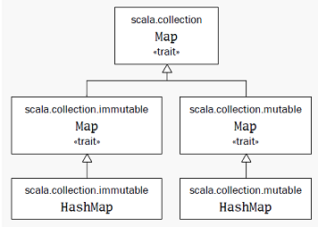
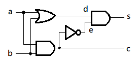
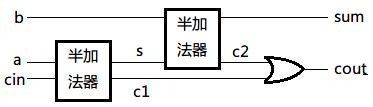
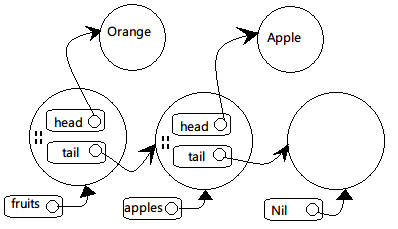

Scala
- 入门
- 标识符
- 常用工具
- 基本类型
- 类
- 对象
- 内建控制结构
- 函数与闭包
- 动态成员
- 控制抽象
- 组合与继承
- Scala类的层级
- 特质（Traits）
- 包和引用
- 访问修饰符
- 断言
- 测试
- 样本类和模式匹配
- 抽取器（Extractors）
- 使用列表
- 集合类型
- 泛型
- 隐式转换
- 高级类型应用
- 抽象成员
- 有状态的对象
- 实现列表
- 重温for表达式
- 注解
- 使用XML
- 使用对象的模块化编程
- 对象相等性
- 结合Scala与Java
- Actor和并发
- 连接符解析
入门
变量定义
val不可变变量；var可变变量。格式：
// 基本格式 val msg: java.lang.String = "Hello" // java.lang默认已经导入了 val msg: String = "Hello" // 自动推导类型 val msg = "Hello"
注意：Scala与Java不同，赋值操作是没有返回值的，所以下面的语句是错误的：
var a,b,c = 1 a = b = c
还有常用的控制结构赋值判断的形式也是不能用的：
while (null != input.readLine) { /* ... */ }
语句定义
Scala语句以分号结束，而且分号可以省略。默认一行结束了就是一行语句结束了， 除非以下三种情况，会认为语句还没有结束：
- 行尾是一个不能放在行尾的字符。
- 下一行的开头是不能放在行头的字符。
-
()和[]里，这里面不能放多条语句。
这是两个：
val s = "hello"; println(s)
if (x < 2)
println("too small")
else
println("ok")
这是两个：
x + y
一个：
(x + y)
一个：
x + y + z
注意一个容易出错的例子，下面第一个列表赋值语句后加上了分号，另一个没有：
val list1 = new java.util.ArrayList[Int];
{ println("Created list1") }
val list2 = new java.util.ArrayList[Int]
{ println ("created list2") }
println( list1.getClass() )
println(list2.getClass())
以上代码用脚本执行，可以看到第一个没有分号的语句类型不是ArrayList：
Created list1 created list2 class java.util.ArrayList class Main$$anon$2$$anon$1
原因是第二个没有分号，Scala解释器以为是要创建一个继承自ArrayList的匿名内部类。
函数定义
函数定义中的=很重要，对于有=的函数，比如下面这个比较大小的函数，函数体的最后
一行作为结果返回：
def max(x: Int, y: Int): Int = {
if (x > y) x else y
}
函数类型也能自动推导出来，可以省略。在递归函数的情况下， 一定要明确地说明返回类型。如果函数体只有一行，那花括号也可以省略：
scala> def max(x: Int, y: Int) = if (x > y) x else y max: (x: Int, y: Int)Int
类型Unit对应Java中的void。即没有参数又没有返回结果的函数定义：
scala> def greet() = println("Hello")
greet: ()Unit
Scala可以把任何类型转为Unit，以下方法最后的String类结果会转为Unit并丢弃：
scala> def f(): Unit = "This String is lost!" f: ()Unit
对于没有等号的方法来说返回类型一定是Unit。有了等号但没有类型会由编译器自动推导：
scala> def f() {"This String is lost!"}
f: ()Unit
scala> def f() = {"This String get returned!"}
f: ()java.lang.String
scala> f
res2: java.lang.String = This String get returned!
避免显式return
Scala中默认把最后一句语句的结果作为函数的返回值。推荐不要显式地return，因为这样 就直接跳出了方法，至少会影响Scala自动推算返回类型的能力：
def check1() = true def check2() : Boolean = return true println(check1) println(check2)
对于有return语句，就是显式提供返回类型；不然编译不过。所以最好不显式用return语句 ，让编译器推断返回类型。
函数字面量（Function Literal）
函数字面量用=>来分隔参数表与函数体：
(x:Int, y:Int) => x + y
通过函数字面量来迭代处理参数的例子：
args.foreach( (arg: String) => println(arg) )
这里的String类型可以自动推导出来：
args.foreach( arg => println(arg) )
在这种字面量只有一行而且只有一个参数情况下，可以省掉参数列表：
args.foreach( println )
for循环
scala> for (i <- 0 to 10) print(i) 012345678910
注意在for循环里每个i都是一个val而不是var。每次都创建一个新的val i。
方法与操作符
下面的语句产一个从0到5的集合：
scala> 0 to 5 res9: scala.collection.immutable.Range.Inclusive = Range(0, 1, 2, 3, 4, 5)
其实这个to是一个方法的调用。Scala中对于方法调用时，如果方法只有一个参数的话
可以省略括号，原本的样子是：
(0).to(5)
scala中没有操作符的重载，因为操作符也是方法的名字：
1 + 2
相当于：
(1).+(2)
标识符
Scala在构成标识符方面有四种非常灵活的规则：
字母数字标识符（alphanumeric identifier）
字母数字标识符起始于一个字母或下划线，之后可以跟字母，数字，或下划线。
$也被当作是字母，但是被保留作为Scala编译器产生的标识符之用。
用户程序里的标识符不应该包含美元字符，尽管能够编译通过；
但是这样做有可能导致与Scala编译器产生的标识符发生名称冲撞。
Scala遵循Java的驼峰式标识符习俗。尽管下划线在标识符内是合法的，
但在Scala程序里并不常用，部分原因是为了保持与Java一致，
同样也由于下划线在Scala代码里有许多其它非标识符用法。
因此，最好避免使用像to_string，__init__，或name这样的标识符。
用下划线当标识符会引起的一个麻烦就是：如果你尝试写一个这样的定义：
val name_: Int = ，你会收到一个编译器错误。编译器会认为你正常是定义一个叫做
name_:的变量。
要让它编译通过，你将需要在冒号之前插入一个额外的空格，
如：val name_ : Int = 1。
字段，方法参数，本地变量，还有函数的驼峰式名称，应该以小写字母开始，如：
length，flatMap，还有s。
类和特质的驼峰式名称应该以大写字母开始，如：BigInt，List，
还有UnbalancedTreeMap。
Scala与Java的习惯不一致的地方在于常量名。
Scala里，constant这个词并不等同于val。尽管val在被初始化之后的确保持不变，
但它还是个变量。比方说，方法参数是val，但是每次方法被调用的时候这些val都可以
代表不同的值。而常量更持久。比如scala.Math.Pi显然是个常量。
Java里，习惯上常量名全都是大写的，用下划线分隔单词，如MAX_VALUE或PI。
Scala里习惯用驼峰式风格，如XOffset。
操作符标识符（operator identifier）
操作符字符是一些如+，:，?，~或#的可打印的ASCII字符。常见的例子：
+ ++ ::: <?> :->
Scala编译器将内部会把操作符标识符转码成包含$的合法的Java标识符。
例如，标识符:->将在内部将被表达为：
$colon$minus$greater
若你想从Java代码访问这个标识符，就应使用这个内部表达。
Scala里的操作符标识符可以有多个字符，因此在Java和Scala间有一些小差别。
Java里，输入x<-y将会被拆分成四个词汇符号，所以写成x < - y也没什么不同。
Scala里，<-将被作为一个标识符拆分，而得到x <- y。如果你想要得到Java里
那样的解释，你要在<和-字符间加一个空格。这大概不会是实际应用中的问题，
因为没什么人会在Java里写x<-y的时候不注意加空格或括号的。
混合标识符（mixed identifier）
混合标识符由字母数字组成，后面跟着下划线和一个操作符标识符。例如，unary_+
被用做定义一元的+操作符的方法名。或者，myvar_=被用做定义赋值操作符的方法名。
多说一句，混合标识符格式myvar_=是由Scala编译器产生的用来支持属性：
property的。在以后的章节“有状态对象”中进一步说明。
文本标识符（literal identifier）
文本标识符是用反引号包括的任意字串。如：
`x` `<clinit>` `yield`
它的思路是你可以把任何运行时认可的字串放在反引号之间当作标识符。结果总是Scala 标识符。即使包含在反引号间的名称是Scala保留字，这个规则也是有效的。
在Java的Thread类中访问静态的yield方法是其典型的用例。因为yield是Scala
的保留字所以Thread.yield()是不合法的，因此在调用java的yield方法时要这样写：
Thread.`yield`()
常用工具
数组
类型参数化数组
长度为3的数组，存放的元素类型为String：
val gs: Array[String] = new Array[String](3)
scala> val gs = new Array[String](3)
gs: Array[String] = Array(null, null, null)
scala> gs(0) = "aa"
scala> gs(1) = "bb"
scala> gs(2) = "cc"
scala> gs.foreach(print)
aabbcc
scala> val ns = Array("11","22","33")
ns: Array[java.lang.String] = Array(11, 22, 33)
scala> ns.foreach(print)
112233
数组的常用方法
Array(1,2,3).sum
ArrayBuffer("Mary","had","a","little","lamb").max
val l = ArrayBuffer(1,7,2,9)
val sl = b.sorted(_<_) // 注意是返回新的数组
ScalaDoc中的格式初学者可能难以理解，下面给出一些方法的导读：
def copyToArray[B >: A](xs: Array[B]): Unit：不同类型的数组复制，B类型必须是
A的超类。
多维数组
和Java一样，通过数组的数组来实现多维数组，类型为Array[Array[Double]]，可以用
ofDim方法来创建：
val matrix = Array.ofDim[Double](3, 4) // 三行四列 matrix(row)(column) = 42
通过指定每行长度不一样的方式来创建不规则数组：
val triangle = new Array[Array[Int]](10) for (i <- 0 until triangle.length) triangle(i) = new Array[Int](i + 1)
与Java互操作
Scala的数组是用Java的数组实现的，可以直接传递。
如果Java方法返回的类型是List，推荐用隐式转换。例如java.lang.ProcessBuilder类
有一个以List<String>为参数的构造器，Scala里可以这样调用：
import scala.collection.JavaConversions.bufferAsJavaList
import scala.collection.mutable.ArrayBuffer
val command = ArrayBuffer("ls", "-al", "/home/morgan")
val pb = new ProcessBuilder(command)
这样ArrayBuffer被自动转成了列表。
下面把返回的java.util.List转成Buffer，注意只能保证是Buffer，不一定是
ArrayBuffer：
import scala.collection.JavaConversions.asScalaBuffer import scala.collection.mutable.Buffer val cmd: Buffer[String] = pb.command()
apply与update方法
对一个对象的后面加上括号的操作其实是调用了这个对象的apply方法。
所以数组的元素索引操作其实是apply方法调用：
gs(0)
//相当于：
gs.apply(0)
val ns = Array("11","22","33")
//相当于：
val ns = Array.apply("11","22","33")
对带有括号并包括一到多个参数的变量赋值时，编译器使用对象的update方法对括号里的
参数（索引值）和等号右边的对象执行调用：
gs(0) = "aa" //相当于： gs.update(0, "aa")
列表
与java.util.List不同，scala.List是不可变的。不可变的对象更加符合函数式风格。
scala> val ll = List(1,2,3) ll: List[Int] = List(1, 2, 3)
::（读作cons）把一个元素加到列表的头上； 用:::连起两个列表：
scala> 0 :: ll res12: List[Int] = List(0, 1, 2, 3) scala> val ll2 = List(4,5,6) ll2: List[Int] = List(4, 5, 6) scala> ll ::: ll2 res11: List[Int] = List(1, 2, 3, 4, 5, 6)
一个元素也没有的空列表用Nil表示，作为一个空的列表，它可以把其他的元素给串起来：
scala> val nl = 1 :: 2 :: 3 :: Nil nl: List[Int] = List(1, 2, 3)
List只能把元素加在头上，如果要加在后面的话，一个方法是在加到头上以后再调用
reverse方法；还有一个方案是使用ListBuffer，它有append方法。
LinkedList
对于可变的链表，不能通过把next引用设置为Nil的方法将其设置为最后结点。应该是
LinkedList.empty。
DoubleLinkedList
双向链表，prev引用指向前一个节点。
List常用方法
List() 或 Nil // 空List
List("Cool", "tools", "rule") // 创建带有三个值"Cool"，"tools"和"rule"的新List[String]
val thrill = "Will"::"fill"::"until"::Nil // 创建带有三个值"Will"，"fill"和"until"的新List[String]
List("a", "b") ::: List("c", "d") // 叠加两个列表（返回带"a"，"b"，"c"和"d"的新List[String]）
thrill(2) // 返回在thrill列表上索引为2（基于0）的元素（返回"until"）
thrill.count(s => s.length == 4) // 计算长度为4的String元素个数（返回2）
thrill.drop(2) // 返回去掉前2个元素的thrill列表（返回List("until")）
thrill.dropRight(2) // 返回去掉后2个元素的thrill列表（返回List("Will")）
thrill.exists(s => s == "until") // 判断是否有值为"until"的字串元素在thrill里（返回true）
thrill.filter(s => s.length == 4) // 依次返回所有长度为4的元素组成的列表（返回List("Will", "fill")）
thrill.forall(s => s.endsWith("1")) // 辨别是否thrill列表里所有元素都以"l"结尾（返回true）
thrill.foreach(s => print(s)) // 对thrill列表每个字串执行print语句（"Willfilluntil"）
thrill.foreach(print) // 与前相同，不过更简洁（同上）
thrill.head // 返回thrill列表的第一个元素（返回"Will"）
thrill.init // 返回thrill列表除最后一个以外其他元素组成的列表（返回List("Will", "fill")）
thrill.isEmpty // 说明thrill列表是否为空（返回false）
thrill.last // 返回thrill列表的最后一个元素（返回"until"）
thrill.length // 返回thrill列表的元素数量（返回3）
thrill.map(s => s + "y") // 返回由thrill列表里每一个String元素都加了"y"构成的列表（返回List("Willy", "filly", "untily")）
thrill.mkString(", ") // 用列表的元素创建字串（返回"will, fill, until"）
thrill.remove(s => s.length == 4) // 返回去除了thrill列表中长度为4的元素后依次排列的元素列表（返回List("until")）
thrill.reverse // 返回含有thrill列表的逆序元素的列表（返回List("until", "fill", "Will")）
thrill.sort((s, t) => s.charAt(0).toLowerCase < t.charAt(0).toLowerCase)
// 返回包括thrill列表所有元素，并且第一个字符小写按照字母顺序排列的列表（返回List("fill", "until", "Will")）
thrill.tail // 返回除掉第一个元素的thrill列表（返回List("fill", "until")）
方法关联性
所有以:结尾的方法其实是后一个操作数调用前一个操作数，所以：
0 :: ll // 其实是 ll.::(0) ll ::: ll2 // 其实是 ll2.:::(ll)
回到前面的串列表操作：
val nl = 1 :: 2 :: 3 :: Nil
如果没有最后的Nil，就变成了3.::(2)。因为数字没有::方法，这样就会报错。
元组（Tuple）
元组像列表，但可以放不同类型的元素。这样类似于Java Bean，但写起来更加简单。
元组的类型按字段个数来识别，有2个字段的就是Tuple2、3个就是Tuple3，
Scala最多支持到Tuple22：
scala> val pair = (99, "Luft") pair: (Int, java.lang.String) = (99,Luft)
访问字段通过_序号来实现。不能像数组一样用()的原因是：如果要用apply方法，
那定义方法的时候就要声明返回类型，而同一个元组中元素的类型是不同的，
所以写不出这个apply方法。
scala> print(pair._1) 99 scala> print(pair._2) Luft
集（Set）和映射（Map）
对于Map和Set，Scala都分别提供了可变和不变的版本（放一不同的包里）。 可变版本的操作会在本地修改，不可变的版本会返回一个新的对象。 一般默认会使用不可变版本。
虽然都提供了+=方法添加元素，但只可变实现都是返回一个新的对象。
Set
Set继承关系：

scala> var jetSet = Set("Boeing", "Airbus")
jetSet: scala.collection.immutable.Set[java.lang.String] = Set(Boeing, Airbus)
scala> jetSet += "Lear"
scala> println(jetSet.contains("Cessna"))
false
scala> println(jetSet)
Set(Boeing, Airbus, Lear)
有些情况下想要指定使用可变版本的：
scala> import scala.collection.mutable.Set
import scala.collection.mutable.Set
scala> val movieSet = Set("Hitch", "Poltergeist")
movieSet: scala.collection.mutable.Set[java.lang.String] = Set(Poltergeist, Hitch)
scala> movieSet += "Shrek"
res3: movieSet.type = Set(Shrek, Poltergeist, Hitch)
scala> println(movieSet)
Set(Shrek, Poltergeist, Hitch)
指定要使用HashSet：
scala> import scala.collection.immutable.HashSet
import scala.collection.immutable.HashSet
scala> val hashSet = HashSet("Tomatoes", "Chilies")
hashSet: scala.collection.immutable.HashSet[java.lang.String] = Set(Chilies, Tomatoes)
scala> println(hashSet + "Coriander")
Set(Chilies, Tomatoes, Coriander)
Map继承关系：
Map

默认的Map用不可变的类型：
scala> val romanNumberal = Map( 1 -> "I", 2 -> "II", 3 -> "III",
| 4 -> "IV", 5 -> "V")
romanNumberal: scala.collection.immutable.Map[Int,java.lang.String] = Map(5 -> V, 1 -> I, 2 -> II, 3 -> III, 4 -> IV)
scala> println(romanNumberal(4))
IV
使用一个可变的Map
scala> import scala.collection.mutable.Map import scala.collection.mutable.Map scala> val treasureMap = Map[Int, String]() treasureMap: scala.collection.mutable.Map[Int,String] = Map() scala> treasureMap += (1 -> "Go to inland.") res6: treasureMap.type = Map(1 -> Go to inland.) scala> treasureMap += (2 -> "Find big X on ground.") res7: treasureMap.type = Map(1 -> Go to inland., 2 -> Find big X on ground.) scala> treasureMap += (3 -> "Dig.") res8: treasureMap.type = Map(3 -> Dig., 1 -> Go to inland., 2 -> Find big X on ground.) scala> println(treasureMap(2)) Find big X on ground.
函数式风格
函数式风格极力避免使用变量（就是用到变量也尽量用val这种不可变的变量）与副作用。
典型的指令式风格
先来看一个指令式的for循环：
scala> val args = Array("11","22","33")
args: Array[java.lang.String] = Array(11, 22, 33)
scala> def printArgs(args: Array[String]): Unit = {
| var i = 0
| while (i < args.length) {
| println(args(i))
| i += 1
| }
| }
printArgs: (args: Array[String])Unit
去除变量的使用
通过去掉val的使用变得更加函数式风格：
scala> def printArgs(args: Array[String]): Unit = {
| for (arg <- args) println(arg)
| }
printArgs: (args: Array[String])Unit
当然更优雅的风格是这样的：
scala> def printArgs(args: Array[String]): Unit = {
| args.foreach(println)
| }
printArgs: (args: Array[String])Unit
去除副作用
光去掉了变量的使用还不是函数式的。因为这个打印到输出流这个操作也是副作用。
所以我们在这里把字符串的格式化与打印输出分成两个功能来做：
scala> def formatArgs(args: Array[String]) = args.mkString("\n")
formatArgs: (args: Array[String])String
scala> println(formatArgs(args))
11
22
33
这样才真正算是函数式风格。鼓励程序员尽量设计出没有副作用，没有变量的代码。
读取文本文件
一个读取文本文件的方法，统计每个行里的字符数：
import scala.io.Source
if (args.length > 0) {
for (line <- Source.fromFile(args(0)).getLines)
println(line.length + " " + line)
} else {
Console.err.println("Please enter filename")
}
执行一下：
--(morgan-laptop:pts/5)-(13-03-16 17:49:53)-(~/workspace/study/scala/tmp)
\-(morgan:%) >>> scala readFile.scala readFile.scala
22 import scala.io.Source
0
22 if (args.length > 0) {
48 for (line <- Source.fromFile(args(0)).getLines)
35 println(line.length + " " + line)
8 } else {
45 Console.err.println("Please enter filename")
1 }
执行的结束不错，但是没有排版……强化一下，先遍历一次得到最长的统计参数。
import scala.io.Source
def widthOfLength(s: String) = s.length.toString.length
if (args.length > 0) {
val lines = Source.fromFile(args(0)).getLines.toList
/* 找到最长的一行，不用for循环，
显得更加函数式一些 */
val longestLine = lines.reduceLeft(
(a, b) => if (a.length > b.length) a else b
)
val maxWidth = widthOfLength(longestLine)
for (line <- lines) {
val numSpaces = maxWidth - widthOfLength(line)
val padding = " " * numSpaces
println(padding + line.length + " | " + line)
}
} else {
Console.err.println("Please enter filename")
}
输出格式为：
--(morgan-laptop:pts/8)-(13-03-17 15:14:04)-(~/workspace/study/scala/tmp)
\-(morgan:%) >>> scala readFile.scala readFile.scala
22 | import scala.io.Source
0 |
55 | def widthOfLength(s: String) = s.length.toString.length
0 |
22 | if (args.length > 0) {
53 | val lines = Source.fromFile(args(0)).getLines.toList
0 |
36 | val longestLine = lines.reduceLeft(
45 | (a, b) => if (a.length > b.length) a else b
2 | )
42 | val maxWidth = widthOfLength(longestLine)
0 |
22 | for (line <- lines) {
48 | val numSpaces = maxWidth - widthOfLength(line)
31 | val padding = " " * numSpaces
47 | println(padding + line.length + " | " + line)
2 | }
8 | } else {
45 | Console.err.println("Please enter filename")
1 | }
基本类型
基本类型包括java.lang包下的String和scala包下的Byte、Short、Int、
Long、Float、Double、Char、Boolean。
还有在scala.runtime包下对应的包装器类Rich...。
如：Int对应的包装器类型为scala.runtime.RichInt。
字符串
除了和Java一样的字符串字面量表示方式以外，Scala还提供了原始字符串（raw string） 方便照原文解读：
println("""Welcome to Ultamix 3000.
Type "HELP" for help.""")
输出的内容包括所有的转义字符和空格：
Welcome to Ultamix 3000.
Type "HELP" for help.
有些情况下希望在源代码里也能排版提好看一点，所以字符串里提供stripMargin
方法可以通过管道符|来取得想要的部分：
println("""|Welcome to Ultamix 3000.
|Type "HELP" for help.""".stripMargin)
结果：
Welcome to Ultamix 3000. Type "HELP" for help.
而：
scala> println(""" \| hello
| |aa|aa.""".stripMargin)
结果：
\| hello
aa|aa.
如果管道符号|有别的作用，可以用stripMargin()方法的变体来设置其他的边缘（
margin）符号。
符号
格式为'symb，这里的symb可以是任何字母或数字。这种字面量被直接映射为类
scala.Symbol的实例，解释器调用工厂方法Symbol("symb")产生。符号变量是被限定
（interned）的，如果同一个字面量出现两次，其实指向的是同一个Symble实例。
符号变量什么事情都做不了，只能显示自己的名字：
scala> val s = 'aSymbol s: Symbol = 'aSymbol scala> s.name res3: String = aSymbol
那符号能用来干嘛？典型应用是作为动态语言中的标签符。比如说，
下面的函数用来更新记录，两个参数field是字段名、value是值：
scala> def updateRecordByName(field: Symbol, value: Any){ }
updateRecordByName: (field: Symbol, value: Any)Unit
Scala是静态语言，所以不可以随便写一个标识符：
scala> updateRecordByName(pcOK, "OK Computer")
<console>6: error : not fount: value pcOK
updateRecordByName: (field: Symbol, value: Any)Unit
这是就要用到符号了：
scala> updateRecordByName('pcOK, "OK Computer")
操作符与方法
操作符也是普通方法的另一种写法。方法可以当操作符写；操作符也可以当作方法写； 操作符的重载也就是方法的重载。
这引出了另一个问题：既然Scala没有操作符，那么操作符的优先级特性怎么实现的呢？
其实Scala定义了方法的优先级。
中缀操作符（infix）
scala> val s = "Hello, world!"
s: java.lang.String = Hello, world!
scala> s indexOf 'o'
res6: Int = 4
scala> s indexOf ('o', 5)
res7: Int = 8
前缀操作符
前缀操作符只能有四个：+、-、!、~。
定义方法以unary_开头。也就是unary_+、unary_-、unary_!、unary_~
这四个分别对应+、-、!、~。
scala> - 2.0 res8: Double = -2.0 scala> (2.0).unary_- res9: Double = -2.0
其他的符号就算定义了也不能作为前置操作符解释，如果定义了p.unary_*，在调用
*p会被Scala解释为*.p。
后缀操作符
后缀操作符其实就是没有参数的函数。一般习惯上有副作用的话就加上括号，如：
println()；如果没有副作用就不加括号，如：String.toLowerCase
scala> "Hello".toLowerCase res10: java.lang.String = hello scala> "Hello" toLowerCase res11: java.lang.String = hello
位操作
位与&、位或|、位异或^，还有一元前缀操作符取位补码~（定义就是前面说过的
unary_~）。
左移<<（填零）、右移>>（填符号位）、无符号右移>>>（填零）。
对象相等性
操作符==与!=与Java中的不同，更加像Java中的equals比较是内容的含意是否相等。
而且在Scala中不仅比较基本类型，也可以比较对象，甚至是不同类的对象也可以比较，
也可以和null比不会有异常抛出：
scala> 1 == 2
res12: Boolean = false
scala> 1 != 2
res13: Boolean = true
scala> List(1, 2, 3) == List(1, 2, 3)
res14: Boolean = true
scala> List(1, 2, 3) == List(4, 5, 6)
res15: Boolean = false
scala> 1 == 1.0
res16: Boolean = true
scala> List(1, 2, 3) == "hello"
res17: Boolean = false
scala> List(1, 2, 3) == null
res18: Boolean = false
scala> null == List(1, 2, 3)
res19: Boolean = false
scala> ("he" + "llo") == "hello"
res20: Boolean = true
而且与Java中==和!=类似的比较是否是同一个实例的操作分别是eq和ne。
类
在Scala里有些术语和Java里不太一样。为了不搞混，在这里说明：
- Scala和Java里“类”这个概念没有差别。
- Scala里的“对象”是指的一种对“类”起补充说明、有点像Java里单例对象的东西。
- “类”的实例在Java里叫“对象”，而Scala里就叫“实例”。
定义类
注意：Scala中的类和方法默认是public的。
简单定义类与创建对象：
scala> class ChecksumAccumulator { }
defined class ChecksumAccumulator
如果类没有主体，就不需要指定一对空的大括号（当然你如果想的话也可以）。
scala> class ChecksumAccumulator defined class ChecksumAccumulator
创建实例
scala> new ChecksumAccumulator
res0: ChecksumAccumulator = ChecksumAccumulator@91f1520
scala> class ChecksumAccumulator {
| var sum = 0
| }
defined class ChecksumAccumulator
scala> val acc = new ChecksumAccumulator
acc: ChecksumAccumulator = ChecksumAccumulator@501fdcfb
scala> val csa = new ChecksumAccumulator
csa: ChecksumAccumulator = ChecksumAccumulator@58f285cd
默认访问控制为public。
成员方法：
class ChecksumAccumulator {
private var sum = 0
def add(b: Byte): Unit = {
sum += b
}
def checksum(): Int = {
return ~(sum & 0xFF) + 1
}
}
Scala中参数都是val，不可变。
def add(b: Byte): Unit = {
// b = 1 // error, because b is val
sum += b
}
只有一行的方法体可以去掉花括号并放在函数头一行，方法会自动返回最后一行语句， 所以可以不用写return语句：
class ChecksumAccumulator {
private var sum = 0
def add(b: Byte): Unit = sum += b
def checksum(): Int = ~(sum & 0xFF) + 1
}
没有返回的方法可以省略类型Unit与等号：
def add(b: Byte): Unit = sum += b
// 简化
def add(b: Byte) { sum += b }
在实践中学习
我们以实现一个实数（rational number）类的过程作为例子，来说明类的实现细节。
实数由两部分组成：表示分子（numerator）和分母（denominator）。其中分母不能为零。 要模拟加，减，乘还有除运算。
- 要加两个分数，首先要获得公分母，然后才能把两个分子相加。
- 要乘两个分数，可以简单的两个分子相乘，然后两个分母相乘。
- 除法是把右操作数分子分母调换，然后做乘法。
- 所有的操作结果产生新的实例，而不会被修改原来的实例。
主构造器：primary constructor
class Rational(n: Int, d: Int)
没有花括号是因为之前说过：没有内容花括号可以省略。
Java类具有可以带参数的构造器，而Scala类可以直接带参数。在类名Rational
之后括号里的n和d，被称为类参数（class parameter）。Scala编译器会收集这两个
参数并创造一个带同样的两个参数的主构造器（primary constructor）。
这里的n和d前面没有用val或var修饰，所以只会生成私有的同名字段与私有的get
、set方法，外部的类是访问不到这两个字段的。如果有val或var的话，生成私有的
final或非final的，但访问方法是public的。
注意：Scala编译器将把你放在类内部的任何不是字段的部分或者方法定义的代码作为 主构造器的内容。例如：
scala> class Rational(n: Int, d: Int) { println("Created "+n+"/"+d) }
scala> new Rational(1, 2)
Created 1/2 res0: Rational = Rational@a0b0f5
你可以像这样打印输出一条消息，因为打印语句被作为主构造器的内容执行了。
先决条件（precondition）
先决条件是对传递给方法或构造器的值的限制，是调用者必须满足的需求。使用Predef
包中的require方法。如果传入的值为真，require将正常返回。反之，require
将通过抛出IllegalArgumentException来阻止对象被构造。
class Rational(n: Int, d: Int) {
require(d != 0)
}
字段
Scala自动为成员生成getter/setter访问器，但格式与Java不同。例如对字段position
生成读取方法为position()，赋值方法为position_=(String)。注意转为Java代码后
=是关键字，所以在Java里调用的话是position_eq(java.lang.String)。
如果想要生成Java风格的访问方法，可以加上scala.reflect.BeanProperty注解：
@scala.reflect.BeanProperty var age: Int = _
要注意的是：
scala> class Rational(n: Int, d: Int)
在前面主构造器部分已经提别提到：主构造器的两个参数n和d没有val或var修饰，
所以在类中生成的字段与访问器都是私有的，外部无法访问。所以下面代码是无法访问到
某个实例的n和d的：
def showRational(r: Rational): Rational = println("Rational: "+n+"/"+d)
所以又增加了两个字段，分别是numer和denom，并用类参数n和d初始化它们：
class Rational(n: Int, d: Int) {
require(d != 0)
val numer: Int = n
val denom: Int = d
}
在对象外面访问分子和分母：
scala> val r = new Rational(1, 2) r: Rational = 1 / 2 scala> r.numer res7: Int = 1 scala> r.denom res8: Int = 2
方法
添加加法运算，得到另外一个分数后返回一个新对象为二者的和：
class Rational(n: Int, d: Int) {
require(d != 0)
val numer: Int = n
val denom: Int = d
def add(that: Rational): Rational = new Rational(
numer * that.denom + that.numer * denom,
denom * that.denom
)
}
加法操作：
scala> val oneHalf = new Rational(1, 2) oneHalf: Rational = 1/2 scala> val twoThirds = new Rational(2, 3) twoThirds: Rational = 2/3 scala> oneHalf add twoThirds res0: Rational = 7/6
自指向
关键字this指向当前执行方法被调用的对象实例，或者如果使用在构造器里的话，
就是正被构建的对象实例。
例如，我们考虑添加一个方法，lessThan，来测试给定的分数是否小于传入的参数：
def lessThan(that: Rational) = this.numer * that.denom < that.numer * this.denom
这里，this.numer指向lessThan被调用的那个对象的分子。你也可以去掉this
前缀而只是写numer。
举一个不能缺少this的例子，考虑在Rational类里添加max方法返回指定分数和
参数中的较大者：
def max(that: Rational) = if (this.lessThan(that)) that else this
这里，第一个this是冗余的，你写成(lessThan(that))也是一样的。
但第二个this表示了当测试为假的时候的方法的结果；如果你省略它，
就什么都返回不了了。
从构造器
有些时候一个类里需要多个构造器。Scala里主构造器之外的构造器被称为从构造器
（auxiliary constructor）。格式为def this(...)。
Java里，构造器的第一个动作必须要么调用同类里的另一个构造器，要么直接调用超类的 构造器。Scala的类里面，只有主构造器可以调用超类的构造器，从构造器的第一个语句 要么调用主构造器，要么调用另一个从构造器。Scala里更严格的限制实际上是权衡了更高 的简洁度和与Java构造器相比的简易性所付出的代价之后作出的设计：主构造器就像一个 守门人，即控制实例的初始化也控制着与超类的沟通。
比方说，分母为1的分数只写分子的话就更为简洁。如，对于5/1来说，可以只是写成
5。因此，如果不是写成Rational(5, 1)，客户程序员简单地写成Rational(5)
或许会更好看一些。
这就需要给Rational添加一个只带一个参数分子的从构造器并预先设定分母为1。
class Rational(n: Int, d: Int) {
require(d != 0)
val numer: Int = n
val denom: Int = d
def this(n: Int) = this(n, 1)
Rational的从构造器主体几乎完全是调用主构造器，直接传递了它的唯一的参数n
作为分子和1作为分母。
私有字段和方法
分数的分子分母有时可以约掉，添加一个最大公约数的私有方法：
class Rational(n: Int, d: Int) {
require(d != 0)
private val g = gcd(n.abs, d.abs)
val numer = n / g
val denom = d / g
private def gcd(a: Int, b: Int): Int =
if (b == 0) a else gcd(b, a % b)
}
定义操作符
用通常的数学的符号替换add方法，同样实现一个*方法以实现乘法：
def +(that: Rational): Rational = new Rational( numer * that.denom + that.numer * denom, denom * that.denom def *(that: Rational): Rational = new Rational(numer * that.numer, denom * that.denom)
使用
scala> val x = new Rational(1, 2) x: Rational = 1/2 scala> val y = new Rational(2, 3) y: Rational = 2/3 scala> x.+(y) res33: Rational = 7/6 scala> x + y res32: Rational = 7/6
而且实现的加法和乘法都带有优先级（与Scala的操作符优先级相同）：
scala> x + x * y res34: Rational = 5/6 scala> (x + x) * y res35: Rational = 2/3 scala> x + (x * y) res36: Rational = 5/6
方法覆盖（override）
override修饰符表示覆盖之前的方法定义。Rational类里覆盖了toString方法的
默认实现。如：
class Rational(n: Int, d: Int) { override def toString = n +"/"+ d }
方法定义前的override修饰符标示了之前的方法定义被重载；第10章会更进一步说明。
现在分数显示得很漂亮了，所以我们去掉了前一个版本的Rational类里面的println
除错语句。你可以在解释器里测试Rational的新行为：
scala> val x = new Rational(1, 3) x: Rational = 1/3 scala> val y = new Rational(5, 7) y: Rational = 5/7
方法重载（overload）
方法的参数表不同产生重载。
给每个数学方法都有两个版本了：一个带分数做参数，另一个带整数。
def +(that: Rational): Rational = new Rational(
numer * that.denom + that.numer * denom,
denom * that.denom
)
def +(i: Int): Rational = new Rational(numer + i * denom, denom)
def -(that: Rational): Rational = new Rational(
numer * that.denom - that.numer * denom,
denom * that.denom
)
def -(i: Int): Rational = new Rational(numer - i* denom, denom)
def *(that: Rational): Rational = new Rational(
numer * that.numer,
denom * that.denom
)
def *(i: Int): Rational = new Rational(numer * i, denom)
def /(that: Rational): Rational = new Rational(
numer * that.denom,
denom * that.numer
)
def /(i: Int): Rational = new Rational(numer, denom * i)
隐式转换
虽然现在可以写r * 2了，但是不能用2 * r这样的写法：
scala> val x = new Rational(2, 3) scala> 2 * r error: overloaded method value * with alternatives: (x: Double)Double <and> (x: Float)Float <and> (x: Long)Long <and> (x: Int)Int <and> (x: Char)Int <and> (x: Short)Int <and> (x: Byte)Int cannot be applied to (this.Rational)
出错的原因是因为Int类上没有重载乘法运算符来处理我们的Rational类。
当然我们也不可能去修改Int类的源代码。
即使是这样，Scala里我们也有解决方案：
解决的方案是告诉Scala如何把Int类转换为Rational类，再加上修饰符implicit
通知Scala编译器可以自动调用：
scala> implicit def intToRational(x: Int) = new Rational(x) scala> 2 * r res16: Rational = 4/3
隐式转换只能在定义的作用范围内起作用，如果隐式方法被定义在Rational类中，
就不在解释器的作用范围内，所以要把它定义在解释器内。
完整的Rational代码
class Rational(n: Int, d: Int) {
require(d != 0)
private val g = gcd(n.abs, d.abs)
val numer = n / g
val denom = d / g
def this(n: Int) = this(n, 1)
def +(that: Rational): Rational = new Rational(
numer * that.denom + that.numer * denom,
denom * that.denom
)
def +(i: Int): Rational = new Rational(numer + i * denom, denom)
def -(that: Rational): Rational = new Rational(
numer * that.denom - that.numer * denom,
denom * that.denom
)
def -(i: Int): Rational = new Rational(numer - i* denom, denom)
def *(that: Rational): Rational = new Rational(
numer * that.numer,
denom * that.denom
)
def *(i: Int): Rational = new Rational(numer * i, denom)
def /(that: Rational): Rational = new Rational(
numer * that.denom,
denom * that.numer
)
def /(i: Int): Rational = new Rational(numer, denom * i)
def lessThan(that: Rational) =
this.numer * that.denom < that.numer * this.denom
def max(that: Rational) =
if (this.lessThan(that)) that else this
override def toString = n +"/"+ d
private def gcd(a: Int, b: Int): Int =
if (b == 0) a else gcd(b, a % b)
}
val x = new Rational(2, 3)
print(" x = "); println(x)
print("x * x = "); println(x * x)
print("x * 2 = "); println(x * 2)
implicit def intToRational(x: Int) = new Rational(x)
print("2 * x = "); println(2 * x)
对象
单例对象
Scala中没有像Java那样的静态成员而是用单例对象（Singleton Object）来代替。
在定义格式基本上和类一样，除了了object关键字代替class：
object ObjNam{
// ...
}
而且Scala中的对象也可以继承类：
class Currency {}
object USD extends Currency{ }
但是注意单例对象无法初始化，所以不能给主构造器传递参数。对象的主构造器会在对象 第一次被使用时调用。如果没有使用过对象，那么它的构造函数也不会被执行。例：
object Account {
private var lastNumber = 0
def newUniqueNumber() = { lastNumber += 1; lastNumber }
如果没用用过，那么lastNumber也不会被初始化。
伴生对象
如果一个单例对象的名字和类一样，并且必须在同一个文件里。那它就是这个类的伴生对象 （Companion Object），类是它的伴生类（Companion Class）。它们可以相互访问私有 成员。
但是要注意，虽然可以相互访问私有成员，但并不是在同一作用域中。例如：Account类
必须通过Account.newAccount()而不是newAccount()方式来访问伴生对象的方法。
import scala.collection.mutable.Map
class ChecksumAccumulator {
private var sum = 0
def add(b: Byte) { sum += b }
def checksum(): Int = ~(sum & 0xFF) + 1
}
object ChecksumAccumulator {
private val cache = Map[String, Int]()
def caculate(s: String): Int = {
if (cache.contains(s))
cache(s)
else {
val acc = new ChecksumAccumulator
for (c <- s)
acc.add(c.toByte)
val cs = acc.checksum()
cache += (s -> cs)
cs
}
}
}
直接通过调用方法：
val res1 = ChecksumAccumulator.caculate("Every value is an object")
println(res1)
val res2 = ChecksumAccumulator.caculate("So simple!")
println(res2)
一个典型的应用场景是，把类的主构造器做成私有的，通过伴生对象来访问工厂方法：
class Marker private (val color:String) {
println("Createing " + this)
override def toString(): String = "make color " + color
}
object Marker {
private val markers = Map(
"red" -> new Marker("red"),
"green" -> new Marker("green"),
"blue" -> new Marker("blue")
)
def getMarker(color: String) =
if(markers.contains(color)) markers(color) else null
}
println(Marker getMarker "blue")
println(Marker getMarker "blue")
println(Marker getMarker "red" )
println(Marker getMarker "red" )
伴生对象把对象名(参数表)的形式转为对象名.apply(参数表)的调用，看起来像是一个
不用new的构造函数：
class Marker private (val color:String) {
println("Createing " + this)
override def toString(): String = "make color " + color
}
object Marker {
def apply(color: String) = new Marker(color)
}
val a = Marker("yellow")
val b = Marker("black")
这样的写法的一个优点是对嵌套表达式少写new会方便很多：
Array(Array(1,7), Array(2,9))
与Java的区别
总结一下，Scala中的类如果对应到Java的类的话， Scala的对象和Java中的对象不是同一回事情，是另一个新的概念。
为了表达统一，我们把对应Java里对象的概念叫作“类的实例”。
这样“类”，“对象”,“类的实例”三个概念都有了明确的定义。
内建控制结构
if表达式
标题里叫它“表达式”，所以是有返回值的。对于返回的类型，如果不同条件的类型不一样， 那么表达式的类型是公共的超类：
if (x > 0) "positive" else -1
上面表达式的类型是String和Int的共同超类Any。
if表达式返回执行分支的结果：
var filename = "default.txt" if (!args.isEmpty) filename = args(0)
更加函数式地写法，去掉变量：
val filename = if (!args.isEmpty) args(0) else "default.txt"
在没有副作用的情况下，用变量的目的就是为了存个值。而表达式就是算值的， 所以直接拿表达式来用把变量省掉了：
println(if (!args.isEmpty) args(0) else "default.txt")
如果没有else部分，返回的类型可能是Unit（相当于Java中的void），写作()：
if (x > 0) 1
相当于：
if (x > 0) 1 else ()
while循环
用do-while算最大公约数：
def gcdLoop(x: Long, y: Long): Long = {
var a = x; var b = y
while (a != 0) {
val temp = a; a = b % a; b = temp
}
b
}
用while-do读取文件：
var line = ""
do {
line = readline()
println("Read: " + line)
} while (line != "")
while循环与Unit
注意这里没有叫它“表达式”。原因是它不会有返回值（类型为Unit，写作“()”），
所以不是表达式。
scala> def greet() { println("HI") }
greet: ()Unit
scala> greet() == ()
<console>:9: warning: comparing values of types Unit and Unit using `==' will always yield true
greet() == ()
^
HI
res1: Boolean = true
scala> () == ""
<console>:8: warning: comparing values of types Unit and java.lang.String using `==' will always yield false
() == ""
^
res2: Boolean = false
scala> () != ""
<console>:8: warning: comparing values of types Unit and java.lang.String using `!=' will always yield true
() != ""
^
res3: Boolean = true
注意上面的警告信息：Unit与Unit进行相等运算永远为true；与String相等运算
永远是false；与String不相等运算永远为true。
现在说到重点了：Scala中var赋值操作也是Unit，而不是和Java一样返回变量值。
所以下面这种Java中一直用到的写法在Scala中是会出问题的：
var line = ""
while ((line = readline()) != "") { // always true !!!
println("Read: " + line)
}
while循环与函数式风格
由于while没有返回值，所以常常被函数式语言舍弃。例如对于同样一个求最大公约数的 函数，对比一下指令式与函数式的区别。
指令式，用循环：
def gcdLoop(x: Long, y: Long): Long = {
var a = x; var b = y
while (a != 0) {
val temp = a; a = b % a; b = temp
}
b
}
函数式，用递归：
def gcd(x: Long, y: Long): Long = if (y == 0) x else gcd(x, x % y)
while循环是没有返回值的，那就一定要用副作用：不是更新var就是写I/O之类的， 不然浪费电么？
for表达式
Scale中的for表达式是遍历集合类的强大工具，包括了过滤与构造新集合的功能。但是在
Scala提供的for表达式中没有提供break或continue来退出循环，这是为了更加贴合
函数式风格的需要。如果真的需要要break时，可以有以下几个方案：
-
使用
Boolean变量控制某块代码是否执行。 -
使用嵌套函数，这样可以从函数当中
return。 -
使用
Breaks对象中的break方法。
Breaks对象中的break方法的例子：
import scala.util.control.Breaks_
breakable {
for (...) {
...
if (...) break;
...
}
}
生成器（generator）
生成器语法item <- collection，对应每步遍历时集合中对应的项：
// Array[file]
val fileList = (new java.io.File(".")).listFiles
for (file <- fileList) println(file)
指定次数：
scala> for (i <- 1 to 4) print(i + " ") 1 2 3 4 scala> for (i <- 1 until 4) print(i + " ") 1 2 3
不推荐的风格，遍历时还要考虑下标是从0还是从1开始，会不会越界：
for (i <-0 to filesList.length -1) println(fileList(i))
可以用分号隔开多个生成器：
scala> for (i <-1 to 3; j <- 1 to 3) print(i + "-" + j + ", ") 1-1, 1-2, 1-3, 2-1, 2-2, 2-3, 3-1, 3-2, 3-3,
for是表达式
for表达式之所以被称为“表达式”是因为它能产生有用的值。值的类型类型取决于
<-子句的集合。
过滤器（filter）
只要处理以.scala结尾的文件。如果用Java的思路，代码是这样的：
for (file <- fileList)
if ( file.getName.endsWith(".scala") )
println(file)
Scala可以做得更好，给for循环加上选择器：
for (file <- fileList if file.getName.endsWith(".scala"))
println(file)
而且不止可以加一个，当然多个语句之间要用分号分隔：
for (
file <- fileList
if file.isFile;
if file.getName.endsWith(".scala")
) println(file)
for循环嵌套
多个for循环与多个过滤器可以相互嵌套：
def fileLines(file: java.io.File) =
scala.io.Source.fromFile(file).getlines.toList
def grep(pattern: String) =
for {
file <- filesList
if file.getName.endWith(".scala")
line <- fileLines(file)
if line.trim.matches(pattern)
} println(file + ": " + line.trim)
grep(".*gcd.*")
就像上面的代码那样，花括号可以代替小括号。但是替换的目的是什么呢？就是为了好看。 这么多行用花括号看起来像是一种语言级的结构一样。
花括号代替小括号
在前面提到过的Scala的断句原则时提到，在小括号里被认为是一条语句， 所以多个for嵌套时要加上分号分隔；花括号里可以放多条，根据换行可以正确断句。
（流间）变量绑定（mid-stream）
请注意前面的代码段中重复出现的表达式line.trim。这不是个可忽略的计算，
因此你或许想每次只算一遍。通过用等号=把结果绑定到新变量可以做到这点。
绑定的变量被当作val引入和使用，不过不用带关键字val。
def grep(pattern: String) =
for {
file <- filesList if file.getName.endWith(".scala")
line <- fileLines(file)
trimmed = line.trim if line.trim.matches(pattern)
} println(file + ": " + trimmed)
制造新集合
到现在为止所有的例子都只是对枚举值进行操作然后就放过，除此之外，你还可以通过
yield关键字来表示要创建一个容器去记住每一次的迭代。
for表达式在每次执行的时候都会制造一个值，当for表达式完成的时候，结果将是一个 包含了所有产生的值的集合。结果集合的类型基于枚举子句处理的集合类型。
对于for-yield表达式的语法是这样的：
for {子句} yield {循环体}
比如，下面的函数鉴别出.scala文件并保存在数组里：
def scalaFiles =
for {
file <- filesHere if file.getName.endsWith(".scala")
} yield file
for表达式在每次执行的时候都会制造一个值，本例中是file。本例中结果为
Array[File]，因为filesHere是数组并且产生的表达式类型是File。
再来一个取每行长度的例子：
val forLineLengths =
for {
file <- filesList if file.getName.endWith(".scala")
line <- fileLines(file)
trimmed = line.trim if line.trim.matches(".*for.*")
} yield trimmed.length
try表达式与异常
抛出异常
throw new IllegalArgumentException
throw也是有结果类型的表达式，而且还可以转换成任何类型。所以可以写在赋值语句里。
没有异常就是表达式的值，有异常了得到Nothing：
val half =
if ( n % 2 == 0 ) n/2
else throw new RuntimeException("n must be even")
捕获异常
捕获异常的语法选择catch子句的形式。这样设计的原因是为了与Scala很重要的部分：
模式匹配（pattern matching）保持一致。模式匹配是一种很强大的特征，
将在稍后概述并在另外的章节中详述。
import java.io.FileReader
import java.io.FileNotFoundException
import java.io.IOException
try {
val f = new FileReader("input.txt") // Use and close file
} catch {
case ex: FileNotFoundException => // Handle missing file
case ex: IOException => // Handle other I/O error
}
如果要匹配所有的异常类型，用case _。
还有一点要注意顺序，Java里会提示后面的异常已经被前面捕获，而Scala里不会。
方法的throws声明
与Java的一个差别是Scala里不需要你捕获检查异常（checked exception）或把它们声明在
throws子句中。如果你愿意，可以用@throws标注声明一个throws子句，但这不是
必需的（详见“Scala结合Java”一章的“注解”一节）。@throws来说明：
import java.io._
class Reader(fname: String) {
private val in =
new BufferedReader(new FileReader(fname))
@throws(classOf[IOException])
def read() = in.read()
}
finally子句
没有啥要特别说明的：
import java.io.FileReader
val file = openFile()
try {
// ... do something ...
} finally {
file.close()
}
try-cache-finally产生的值
和其它大多数Scala控制结构一样，try-catch-finally也产生值。
下面的例子尝试拆分URL，但如果URL格式错误就使用缺省值。结果是，如果没有异常抛出， 则对应于try子句；如果抛出异常并被捕获，则对应于相应的catch子句。如果异常被抛出 但没被捕获，表达式就没有返回值。由finally子句计算得到的值，如果有的话，被抛弃。
通常finally子句做一些清理类型的工作如关闭文件；他们不应该改变在主函数体或try的 catch子句中计算的值。
import java.net.URL
import java.net.MalformedURLException
def urlFor(path: String) =
try { new URL(path) }
catch {
case e: MalformedURLException =>
new URL("http://www.scalalang.org")
}
而下面的两个例子一个第一个值为2，第二个值为1：
scala> def f(): Int = try { return 1 } finally { return 2 }
f: ()Int
scala> f()
res1: Int = 2
scala> def g(): Int = try { 1 } finally { 2 }
g: ()Int
scala> g()
res2: Int = 1
finally中的返回值会覆盖所有的结果，因此通常最好还是避免从finally子句中返回值。 最好是把finally子句当作确保某些副作用，如关闭打开的文件。
match表达式
Scala的匹配表达式允许你在许多可选项（alternative）中做选择，就好象其它语言中的 switch语句。通常说来match表达式可以让你使用任意的模式（pattern）做选择， 后面会有专门的篇幅介绍。通用的模式可以稍等再说。目前，只要考虑使用match在 若干可选项中做选择。
下面的例子里的脚本从参数列表读入食物名然后打印食物配料。match表达式检查参数列表
的第一个参数firstArg。如果是字串"salt"就打印"pepper"；如果是"chips"，
就打印"salsa"，如此递推。缺省情况用下划线_说明，这是常用在Scala里作为占位符
表示完全不清楚的值的通配符。
val firstArg = if (args.length > 0) args(0) else ""
firstArg match {
case "salt" => println("pepper")
case "chips" => println("salsa")
case "eggs" => println("bacon")
case _ => println("huh?")
}
与Java的switch语句比，匹配表达式还有一些重要的差别：
- 任何种类的常量或其他东西都能用作Scala里的case，不像Java里只能整形和枚举常量。
- 没有break，而且也不会从项转到下一项。
- match表达式也能产生值。
val firstArg = if (args.length > 0) args(0) else ""
val friend = firstArg match {
case "salt" => "pepper"
case "chips" => "salsa"
case "eggs" => "bacon"
case _ => "huh?"
}
println(friend)
不要用break和contine
break和continue与函数字面量结合得不好， 而且有效利用函数字面量可以让代码写得更加简短。
最简单的方式是用if替换每个every和用布尔变量替换每个break。 布尔变量指代是否包含它的while循环应该继续。 比如说，假设你正搜索一个参数列表去查找以“.scala”结尾但不以连号开头的字串。 Java里你可以——如果你很喜欢while循环，break和continue——如此写：
int i = 0; // This is Java
boolean foundIt = false;
while (i < args.length) {
if (args[i].startsWith("-")) {
i = i + 1;
continue;
}
if (args[i].endsWith(".scala")) {
foundIt = true;
break;
}
i = i + 1;
}
如果要字面直译成Scala的代码，代之以执行一个if然后continue，你可以写一个if环绕 while余下的全部内容。要去掉break，你可以增加一个布尔变量提示是否继续做下去， 不过在这里你可以复用foundIt，基本就是这样：
var i = 0
var foundIt = false
while (i < args.length && !foundIt) {
if (!args(i).startsWith("-")) {
if (args(i).endsWith(".scala"))
foundIt = true
}
i = i + 1
}
这个版本与原来的Java代码非常像。所有的主要段落仍然存在并保持原顺序。 有两个可重新赋值的变量及一个while循环。循环内有个i是否小于args.length的测试， 然后检查"-"，然后检查".scala"。
如果要去掉代码里的var，可以尝试的一种方式是用递归函数重写循环。比方说， 可以定义带一个整数值做输入的searchFrom函数向前搜索，并返回想要的参数的索引。 采用这种技巧的代码看上去会像这样：
def searchFrom(i: Int): Int =
if (i >= args.length) -1
else if (args(i).startsWith("-")) searchFrom(i + 1)
else if (args(i).endsWith(".scala")) i
else searchFrom(i + 1)
val i = searchFrom(0)
每个continue都被带有i + 1做参数的递归调用替换掉，有效地跳转到下一个整数。 用递归替代了循环的编程风格更易于理解。
Scala编译器不会实际对上面展示的代码生成递归函数。因为所有的递归调用都在尾调用： tail-call位置，编译器会产生出与while循环类似的代码。
每个递归调用将被实现为回到函数开始位置的跳转。尾调用优化将在后面用另外篇幅讨论。
变量作用域
大括号通常引入了一个新的范围，所以任何定义在打括号里的东西在括号之后就脱离了范围 。这条规则有几个例外，因为在Scala里有时候你可以用大括号代替小括号。表达式语法的 替代品是这种使用大括号例子的其中之一。
本地变量：local variable。对于它们被定义的函数来说是“本地”的。每次函数被调用的 时候，一整套全新的本地变量将被使用。一旦变量被定义了，你就不可以在同一个范围内 定义同样的名字。比如，下面的脚本不会被编译通过：
val a = 1 val a = 2 // Does not compile println(a)
然而，你可以在一个内部范围内定义与外部范围里名称相同的变量（注意之在Java里不行） 。下列脚本将编译通过并可以运行。内部变量被说成是遮蔽（shadow）了同名的外部变量， 因为在内部范围内外部变量变得不可见了：
val a = 1;
{
val a = 2 // Compiles just fine
println(a)
}
println(a)
在解释器里看上去像是遮蔽的东西：
scala> val a = 1 a: Int = 1 scala> val a = 2 a: Int = 2 scala> println(a) 2
在理论上，解释器在每次你输入新的语句时都创建了一个新的嵌套范围。因此， 你可以把之前解释的代码虚拟化认为是
val a = 1;
{
val a = 2;
{
println(a)
}
}
重构指令式风格的代码
通过指令式风格输出乘法表：
def printMultiTable() {
var i = 1
// only i in scope here
while (i <= 10) {
var j = 1
// both i and j in scope here
while (j <= 10) {
val prod = (i * j).toString
// i, j, and prod in scope here
var k = prod.length
// i, j, prod, and k in scope here
while (k < 4) {
print(" ")
k += 1
}
print(prod)
j += 1
}
// i and j still in scope; prod and k out of scope
println()
i += 1
}
// i still in scope; j, prod, and k out of scope
}
代码在两个方面显示出了指令式风格。
首先，调用printMultiTable有副作用：在标准输出上打印乘法表。在函数式风格中，
我们重构了函数，让它把乘法表作为字串返回。由于函数不再执行打印，我们把它重命名为
multiTable。正如前面提到过的，没有副作用的函数的一个优点是它们很容易进行
单元测试。要测试printMultiTable，你需要重定义print和println从而能够检查
输出的正确性。测试multiTable就简单多了，只要检查结果即可。
// Returns a row as a sequence
def makeRowSeq(row: Int) =
for (col <- 1 to 10) yield {
val prod = (row * col).toString
val padding = " " * (4 - prod.length)
padding + prod
}
// Returns a row as a string
def makeRow(row: Int) = makeRowSeq(row).mkString
// Returns table as a string with one row per line
def multiTable() = {
val tableSeq = // a sequence of row strings
for (row <- 1 to 10)
yield makeRow(row)
tableSeq.mkString("\n")
}
printMultiTable里另一个揭露其指令式风格的信号来自于它的while循环和var。
与之相对，multiTable函数使用了val，for表达式，帮助函数：helper function，
并调用了mkString。
我们提炼出两个帮助函数makeRow和makeRowSeq，使代码容易阅读。
函数makeRowSeq使用for表达式从1到10枚举列数。这个for函数体计算行和列的乘积，
决定乘积前占位的空格，并生成由占位空格，乘积字串叠加成的结果。for表达式的结果是
一个包含了这些生成字串作为元素的序列（scala.Seq的某个子类）。
另一个帮助函数makeRow仅仅调用了makeRowSeq返回结果的mkString函数。
叠加序列中的字串把它们作为一个字串返回。
multiTable方法首先使用一个for表达式的结果初始化tableSeq，这个for表达式从1到10
枚举行数，对每行调用makeRow获得该行的字串。因为字串前缀yield关键字，
所以表达式的结果就是行字串的序列。现在仅剩下的工作就是把字串序列转变为单一字串。
mkString的调用完成这个工作，并且由于我们传递进去"\n"，因此每个字串结尾插入了
换行符。
函数与闭包
参数默认值与带名参数
定义参数有默认值的参数：
def decorate(str: String, left: String = "[", right: String = "]") = left + str + right
调用时：
scala> decorate("hello")
res0: String = [hello]
scala> decorate("hello","<",">")
res1: String = <hello>
传入实参不一定要按参数表的顺序，可以指定对应的形参名：
scala> decorate("hello", right = ">")
res2: String = [hello>
变长参数
def sum(args: Int*) = {
var res = 0
for (arg <- args) res += arg
res
}
传入多个参数：
scala> val s = sum (1,4,9,16,25) s: Int = 55
但是不能把序列传入：
scala> val s = sum (1 to 5)
<console>:8: error: type mismatch;
found : scala.collection.immutable.Range.Inclusive
required: Int
val s = sum (1 to 5)
^
可能通过: _*声明类型不是序列而是多个参数：
scala> val s = sum(1 to 5: _*) s: Int = 15
在递归定义中我们会用到这样的语法：
def recursiveSum(args: Int*): Int = {
if (args.length ==0) 0
else args.head + recursiveSum(args.tail: _*)
}
注意：如果使用变长参数且参数类型为Object的Java方法，如PrintStream、printf
或MessageFormat.format时，要手工对基本类型进行转换。如：
import java.text.MessageFormat
val str = MessageFormat.format("The answer to {0} is {1}", "everything",
42.asInstanceOf[AnyRef])
str: String = The answer to everything is 42
方法（method）
方法是被定义为某个对象成员的函数，这是最常用的形式。如下面这个工具检查文件中超过 指定长度的行：
import scala.io.Source
object LongLines {
def processFile(filename: String, width: Int) {
val source = Source.fromFile(filename)
for (line <- source.getLines)
processLine(filename, width, line)
}
private def processLine(filename: String,
width: Int, line: String) {
if (line.length > width)
println(filename +": "+ line.trim)
}
}
再定义了一个application以后，就可以在shell中调用它了，把第一个命令行参数当作 行长度，并把后续的参数解释为文件名：
object FindLongLines {
def main(args: Array[String]) {
val width = args(0).toInt
for (arg <- args.drop(1))
LongLines.processFile(arg, width)
}
}
调用，查找一行长度超过45个字符的行：
$ scala FindLongLines 45 LongLines.scala
LongLines.scala: def processFile(filename: String, width: Int) {
本地函数
Java里通过定义private方法来限制访问。在Scala里还可以把方法定义在另一个函数里 来限制只有所在的代码块能访问：
def processFile(filename: String, width: Int) {
def processLine(filename: String, width: Int, line: String) {
if (line.length > width) print(filename +": "+ line)
}
val source = Source.fromFile(filename)
for (line <- source.getLines) processLine(filename, width, line)
}
还可以省掉filename和width这两个参数的传递：
import scala.io.Source
object LongLines {
def processFile(filename: String, width: Int) {
def processLine(line: String) {
if (line.length > width) print(filename +": "+ line)
}
val source = Source.fromFile(filename)
for (line <- source.getLines) processLine(line)
}
}
头等函数与函数字面量（literal）
Scala拥有头等函数（first-class function），除了定义函数与调用函数外， 还可以写成没有名字的函数字面量（literal）。
函数字面量直接作为一段文本被编译进一个类中，等到运行时被实例化为函数值 （function value）。
任何函数值都是某个扩展了scala包的FunctionN特质之一的类的实例，如Function0
是没有参数的函数，Function1是有一个参数的函数等等。每个FunctionN特质有一个
apply方法用来调用函数。
简单例子：
(x: Int) => x + 1
=>指明这个函数把左边的东西转变成右边的东西。所以，这是一个把任何整数x映射为
x + 1的函数。
函数值是对象，所以如果你愿意可以把它们存入变量。它们也是函数，所以可以用括号调用 它们。以下是这两种动作的例子：
scala> var increase = (x: Int) => x + 1 increase: (Int) => Int = <function> scala> increase(10) res0: Int = 11
本例中，因为increase是var，你可以在之后重新赋给它不同的函数值。
scala> increase = (x: Int) => x + 9999 increase: (Int) => Int = <function> scala> increase(10) res2: Int = 10009
如果你想在函数文本中包括超过一个语句，用大括号包住函数体，一行放一个语句， 就组成了一个代码块。与方法一样，当函数值被调用时，所有的语句将被执行， 而函数的返回值就是最后一行产生的那个表达式。
scala> increase = (x: Int) => {
| println("We")
| println("are")
| println("here!")
| x + 1
| }
increase: (Int) => Int = <function>
scala> increase(10)
We
are
here!
res4: Int = 11
许多Scala库都提供了结合函数字面量的机制。例如，所有的集合类都能用到foreach
方法和filter方法：
scala> val someNumbers = List(-11, -10, -5, 0, 5, 10) someNumbers: List[Int] = List(-11, -10, -5, 0, 5, 10) scala> someNumbers.foreach((x: Int) => println(x)) -11 -10 -5 0 5 10
函数字面量的短格式
Scala提供了许多方法去除冗余信息并把函数文本写得更简短。
一种让函数文本更简短的方式是去除参数类型：
scala> someNumbers.filter((x) => x > 0) res7: List[Int] = List(5, 10)
根据someNumbers编译器知道x一定是整数，因为它看到你立刻使用了这个函数过滤
整数列表（暗示）。这被称为目标类型化（target typing）。目标类型化的精确细节
并不重要。你可以简单地从编写一个不带参数类型的函数文本开始。并且，如果编译器
不能识别，再加上类型。几次之后你就对什么情况编译器能或不能解开谜题有感觉了。
第二种去除无用字符的方式是省略类型是被推断的参数之外的括号。前面例子里，x
两边的括号不是必须的：
scala> someNumbers.filter(x => x > 0) res8: List[Int] = List(5, 10)
占位符语法（Placeholder syntax）
如果想让函数文本更简洁，可以把下划线当做一个或更多参数的占位符，只要每个参数在 函数文本内仅出现一次，也就是说，在这种情况下每个下划线都代表一个不同的参数。
比如，_ > 0对于检查值是否大于零的函数来说就是非常短的标注：
scala> someNumbers.filter(_ > 0) res9: List[Int] = List(5, 10)
可以把下划线看作表达式里需要被“填入”的“空白”。相当于：
scala> someNumbers.filter(x => x > 0) res10: List[Int] = List(5, 10)
有时编译器有可能没有足够的信息推断缺失的参数类型。如只是写：
scala> val f = _ + _
<console>:4: error: missing parameter type for expanded
function ((x$1, x$2) => x$1.$plus(x$2))
val f = _ + _
^
这种情况下使用冒号指定类型：
scala> val f = (_: Int) + (_: Int) f: (Int, Int) => Int = <function> scala> f(5, 10) res11: Int = 15
部分应用函数（partially applied function）
下划线占位符不仅能代替一个参数，还可以代替整个参数列表：
someNumbers.foreach(println(_))
或简化为：
someNumbers.foreach(println _)
注意：在函数名和下划线之间留一个空格，因为不这样做编译器会认为在调用名为
println_的方法。
另一个用占位符代表整个参数的例子：
scala> def max(a:Int, b:Int):Int = if(a > b) a else b
max: (a: Int, b: Int)Int
scala> var res = (Integer.MIN_VALUE /: list) { max _ }
res: Int = 99
Scala把短格式直接看作是你输入了下列代码：
someNumbers.foreach(x => println(x))
以这种方式使用下划线时，你就正在写一个偏应用函数（partially applied function）。 Scala里，当你调用函数，传入任何需要的参数，你就是在把函数应用到参数上。如：
scala> def sum(a: Int, b: Int, c: Int) = a + b + c sum: (Int,Int,Int)Int
你就可以把函数sum应用到参数1，2和3上，如下：
scala> sum(1, 2, 3) res12: Int = 6
偏应用函数是一种表达式，你不需要提供函数需要的所有参数。代之以仅提供部分，
或不提供所需参数。比如，要创建不提供任何三个所需参数的调用sum的偏应用表达式，
只要在sum之后放一个下划线即可。然后可以把得到的函数存入变量。举例如下：
scala> val a = sum _ a: (Int, Int, Int) => Int = <function>
有了这个代码，Scala编译器以偏应用函数表达式，sum _，实例化一个带三个缺失
整数参数的函数值，并把这个新的函数值的索引赋给变量a。当你把这个新函数值应用于
三个参数之上时，它就转回头调用sum，并传入这三个参数：
scala> a(1, 2, 3) res13: Int = 6
简单地来说，如果参数没有给齐，Scala会建立一个新类，它有一个特殊的apply方法。对
偏函数的调用其实是对这个apply方法的调用。更加细节的描述是这样的：
名为a的变量指向一个函数值对象。这个函数值是由Scala编译器依照偏应用函数表达式
sum _，自动产生的类的一个实例。
编译器产生的类有一个apply方法带三个参数（产生的类扩展了特质Function3，定义了
三个参数的apply方法）。之所以带三个参数是因为sum _表达式缺少的参数数量为3。
Scala编译器把表达式a(1,2,3)翻译成对函数值的apply方法的调用，传入三个参数
1，2，3。因此a(1,2,3)是下列代码的短格式：
scala> a.apply(1, 2, 3) res14: Int = 6
Scala编译器根据表达式sum _自动产生的类里的apply方法，简单地把这三个缺失的参数
传到sum，并返回结果。本例中apply调用了sum(1,2,3)，并返回sum返回的6。
这种一个下划线代表全部参数列表的表达式的另一种用途，就是把它当作转换def为
函数值的方式。例如，如果你有一个本地函数，如sum(a: Int, b: Int, c: Int): Int，
你可以把它“包装”在apply方法具有同样的参数列表和结果类型的函数值中。当你把这个
函数值应用到某些参数上时，它依次把sum应用到同样的参数，并返回结果。
尽管不能把方法或嵌套函数赋值给变量，或当作参数传递给其它方法，但是如果你把方法 或嵌套函数通过在名称后面加一个下划线的方式包装在函数值中，就可以做到了。
现在，尽管sum _确实是一个偏应用函数，或许对你来说为什么这么称呼并不是很明显。
这个名字源自于函数未被应用于它所有的参数。在sum _的例子里，它没有应用于任何
参数。不过还可以通过提供某些但不是全部需要的参数表达一个偏应用函数。举例如下：
scala> val b = sum(1, _: Int, 3) b: (Int) => Int = <function>
这个例子里，你提供了第一个和最后一个参数给sum，但中间参数缺失。因为仅有一个参数 缺失，Scala编译器会产生一个新的函数类，其apply方法带一个参数。在使用一个参数调用 的时候，这个产生的函数的apply方法调用sum，传入1，传递给函数的参数，还有3。如下：
scala> b(2) // b.apply调用了sum(1,2,3) res15: Int = 6 scala> b(5) // b.apply调用了sum(1,5,3) res16: Int = 9
如果你正在写一个省略所有参数的偏应用程序表达式，如println _或sum _，而且在
代码的那个地方正需要一个函数，你可以去掉下划线从而表达得更简明。例如，代之以
打印输出someNumbers里的每一个数字：
val someNumbers = List(-11, -10, -5, 0, 5, 10) someNumbers.foreach(println _)
你可以只是写成：
someNumbers.foreach(println)
最后一种格式仅在需要写函数的地方，如例子中的foreach调用，才能使用。编译器知道 这种情况需要一个函数，因为foreach需要一个函数作为参数传入。在不需要函数的情况下 ，尝试使用这种格式将引发一个编译错误。举例如下：
scala> val c = sum
<console>:5: error: missing arguments for method sum...
follow this method with `_' if you want to treat it as
a partially applied function
val c = sum
^
scala> val d = sum _
d: (Int, Int, Int) => Int = <function>
scala> d(10, 20, 30)
res17: Int = 60
为什么要使用尾下划线？ Scala的偏应用函数语法凸显了Scala与经典函数式语言如Haskell 或ML之间设计折中的差异。在经典函数式语言中，偏应用函数被当作普通的例子。更进一步 ，这些语言拥有非常严格的静态类型系统能够暴露出你在偏应用中可能犯的所有错误。
Scala与指令式语言如Java关系近得多，在这些语言中没有应用所有参数的方法会被认为是 错误的。进一步说，子类型推断的面向对象的传统和全局的根类型接受一些被经典函数式 语言认为是错误的程序。
举例来说，如果你误以为List的drop(n: Int)方法如tail()，那么你会忘记你需要
传递给drop一个数字。你或许会写，println(drop)。如果Scala采用偏应用函数在
任何地方都OK的经典函数式传统，这个代码就将通过类型检查。然而，你会惊奇地发现这个
println语句打印的输出将总是<function>！可能发生的事情是表达式drop将被看作
是函数对象。因为println可以带任何类型对象，这个代码可以编译通过，但产生
出乎意料的结果。
为了避免这样的情况，Scala需要你指定显示省略的函数参数，尽管标志简单到仅用一个_
。Scala允许你仅在需要函数类型的地方才能省略这个仅用的_。
闭包（Closures）
函数不仅可以用到参数：
(x: Int) => x + more // how much more?
more是个自由变量（free variable），因为函数文本自身没有给出其含义。相对的，
x变量是一个绑定变量（bound variable），因为它在函数的上下文中有明确意义：
被定义为函数的唯一参数，一个Int。如果你尝试独立使用这个函数文本，范围内
没有任何more的定义，编译器会报错说：
scala> (x: Int) => x + more
<console>:5: error: not found: value more
(x: Int) => x + more
^
另一方面，只要有一个叫做more的什么东西同样的函数文本将工作正常：
scala> var more = 1 more: Int = 1 scala> val addMore = (x: Int) => x + more addMore: (Int) => Int = <function> scala> addMore(10) res19: Int = 11
依照这个函数文本在运行时创建的函数值（对象）被称为闭包（closure）。名称源自于 通过“捕获”自由变量的绑定对函数文本执行的“关闭”行动。
不带自由变量的函数文本，如(x: Int) => x + 1，被称为封闭区间（closed term），
这里术语：term指的是一小部分源代码。因此依照这个函数文本在运行时创建的函数值
严格意义上来讲就不是闭包，因为(x: Int) => x + 1在编写的时候就已经封闭了。
任何带有自由变量的函数文本，如(x: Int) => x + more，都是开放区间（open term）
。因此，任何依照(x: Int) => x + more在运行期创建的函数值将必须捕获它的自由变量
more的绑定。由于函数值是关闭这个开放术语(x: Int) => x + more的行动的
最终产物，得到的函数值将包含一个指向捕获的more变量的参考，因此被称为闭包。
如果more在闭包创建之后被改变了闭包会反映这个变化。如下：
scala> more = 9999 more: Int = 9999 scala> addMore(10) res21: Int = 10009
直觉上，Scala的闭包捕获了变量本身，而不是变量指向的值。相对的，Java的内部类根本 不允许你访问外围范围内可以改变的变量，因此到底是捕获了变量还是捕获了它当前具有 的值就没有差别了。
反过来也同样。闭包对捕获变量作出的改变在闭包之外也可见：
scala> val someNumbers = List(-11, -10, -5, 0, 5, 10) someNumbers: List[Int] = List(-11, -10, -5, 0, 5, 10) scala> var sum = 0 sum: Int = 0 scala> someNumbers.foreach(sum += _) scala> sum res23: Int = -11
上面的代码中变量sum不在函数字面量sun += _（完整形式为：(x) => sum += x）
里，所以这也是一个闭包的应用。
对于会有不同实例的场景，如：本地变量，闭包会对应到创建时关联的那个变量。
例如，以下是创建和返回“递增”闭包的函数：
def makeIncreaser(more: Int) = (x: Int) => x + more
每次函数被调用时都会创建一个新闭包。每个闭包都会访问闭包创建时外部的more变量。
scala> val inc1 = makeIncreaser(1) inc1: (Int) => Int = <function> scala> val inc9999 = makeIncreaser(9999) inc9999: (Int) => Int = <function>
结果依赖于闭包被创建时more是如何定义的：
scala> inc1(10) res24: Int = 11 scala> inc9999(10) res25: Int = 10009
尽管本例中more是一个已经返回的方法调用的参数也没有区别。Scala编译器在这种
情况下重新安排了它以使得捕获的参数继续存在于堆中，而不是堆栈中，因此可以保留在
创建它的方法调用之外。这种重新安排的工作都是自动处理的，程序员可以随意捕获想要的
变量：val，var，或参数。
重复参数
Scala允许你指明函数的最后一个参数可以是重复的。这可以允许客户向函数传入可变长度 参数列表。想要标注一个重复参数，在参数的类型之后放一个星号。例如：
scala> def echo(args: String*) =
| for (arg <- args) println(arg)
echo: (String*)Unit
这样定义，echo可以被零个至多个String参数调用：
scala> echo()
scala> echo("one")
one
scala> echo("hello", "world!")
hello
world!
函数内部，重复参数的类型是声明参数类型的数组。因此，echo函数里被声明为类型
String*的args的类型实际上是Array[String]。然而，如果你有一个合适类型的数组，
并尝试把它当作重复参数传入，你会得到一个编译器错误：
scala> val arr = Array("What's", "up", "doc?")
arr: Array[java.lang.String] = Array(What's, up, doc?)
scala> echo(arr)
<console>:7: error: type mismatch;
found : Array[java.lang.String]
required: String
echo(arr)
^
要实现这个做法，你需要在数组参数后添加:_*符号（这三个之间还可以有空格），
像这样：
scala> echo(arr:_*) What's up doc? scala> echo(arr : _ *) What's up doc?
这个标注告诉编译器把arr的每个元素当作参数，而不是当作单一的参数传给echo。
尾递归（tail recursive）
当函数递归时调用自己这个动作正好是整个函数的最后一个动作时，Scala编译器可以对其 进行优化。这被称为尾递归。
Scala编译器检测到尾递归就用新值更新函数参数，然后把它替换成一个回到函数开头的 跳转。这样减小了递归调用的开销。简单地说，就是每次调用不会用新的栈，而是在原来 的框架内。
递归经常是比基于循环的更优美和简明的方案。如果方案是尾递归，就无须付出任何运行期 开销。
跟踪尾递归函数
尾递归函数将不会为每个调用制造新的堆栈框架；所有的调用将在一个框架内执行。所以在 调试的时候会比较怪。
例如，这个函数调用自身若干次之后抛出一个异常：
def boom(x: Int): Int =
if (x == 0) throw new Exception("boom!")
else boom(x - 1) + 1
这个递增操作函数不是尾递归，所以它显示的堆栈信息看起来很正常：
scala> boom(3) java.lang.Exception: boom! at .boom(<console>:5) at .boom(<console>:6) at .boom(<console>:6) at .boom(<console>:6) at .<init>(<console>:6) ...
如果你现在修改了boom从而让它变成尾递归：
def bang(x: Int): Int =
if (x == 0) throw new Exception("bang!")
else bang(x - 1)
堆栈信息看起来是这样的：
scala> bang(5) java.lang.Exception: bang! at .bang(<console>:5) at .<init>(<console>:6) ...
这回，你仅看到了bang的一个堆栈框架。或许你会认为bang在调用自己之前就崩溃了，但 这不是事实。
可以给scala-shell或者scalac编译器加上参数-g:notailcalls 关掉尾递归。这样就能
得到一个长长的堆栈跟踪了：
scala> bang(5) java.lang.Exception: bang! at .bang(<console>:5) at .bang(<console>:5) at .bang(<console>:5) at .bang(<console>:5) at .bang(<console>:5) at .bang(<console>:5) at .<init>(<console>:6) ...
尾递归的局限
Scala里尾递归的使用局限很大，因为JVM指令集使实现更加先进的尾递归形式变得很困难。 Scala仅优化了直接递归调用使其返回同一个函数。如果递归是间接的，就像在下面的例子 里两个互相递归的函数，就没有优化的可能性了：
def isEven(x: Int): Boolean =
if (x == 0) true else isOdd(x - 1)
def isOdd(x: Int): Boolean =
if (x == 0) false else isEven(x - 1)
同样如果最后一个调用是一个函数值你也不能获得尾调用优化。如下列代码：
val funValue = nestedFun _
def nestedFun(x: Int) {
if (x != 0) { println(x); funValue(x - 1) }
}
funValue变量指向一个实质是包装了nestedFun的调用的函数值。当你把这个函数值
应用到参数上，它会转向把nestedFun应用到同一个参数，并返回结果。
因此你或许希望Scala编译器能执行尾调用优化，但在这个例子里做不到。因此，尾调用 优化受限于方法或嵌套函数在最后一个操作调用本身，而没有转到某个函数值或什么其它的 中间函数的情况。
蹦床
对于消除递归，有一个比尾递归更加通用的机制叫作“蹦床”。它通过一个循环不断地调用 函数，每个函数都返回一下要被调用的函数。尾递归其实是蹦床的一个特例：每个函数都 返回它自己。
Scala的TailCalls工具对象帮助实现蹦床。相互递归的函数返回类型为TailRec[A]。
其值为done(result)或tailcall(fun)二者之一。其中fun代表下一个要被调用的函数
，这个函数不能有额外的参数而且返回类型为TailRec[A]的函数。
例子：
import scala.util.control.TailCalls._
object TailCallDemo extends App {
def evenLength(xs: Seq[Int]): TailRec[Boolean] =
if (xs.isEmpty) done(true) else tailcall(oddLength(xs.tail))
def oddLength(xs: Seq[Int]): TailRec[Boolean] =
if (xs.isEmpty) done(false) else tailcall(evenLength(xs.tail))
println(evenLength(1 to 1000000).result)
}
调用时，用result方法取得结果：
Execute Around Method 模式
举个例子，对于资源Resource一定要执行善后工作cleanUp。这里把构造函数做成私有
来限制只能通过伴生对象来构造：
class Resource private() {
println("Starting transaction...")
private def cleanUp() { println("Ending transaction...") }
def op1 = println("operation 1")
def op2 = println("operation 2")
def op3 = println("operation 3")
}
伴生类的中可以创建实例，成员方法use创建实例并传入到作为参数的回调方法中：
object Resource {
def use(codeBlock:Resource => Unit) {
val resource = new Resource
try{
codeBlock(resource)
} finally {
resource.cleanUp
}
}
}
使用时传入：
Resource.use {
resource =>
resource.op1
resource.op2
resource.op3
resource.op1
}
调用时的输出：
scala tmp.scala Starting transaction... operation 1 operation 2 operation 3 operation 1 Ending transaction...
动态成员
静态类型不光是变量类型是确定的，还有比如在使用qual.sel时，sel 这个属性或是
方法（Scala的访问一致性，属性和方法有时候并没有那么大的区别）必须在qual的
类型中声明了的。
Scala 思考再三还是加入了 Dynamic Types，这个特性在Scala 2.9中是试验性的，
必须用-Xexperimental进行开启，到了 Scala 2.10.0 中，开启方式有两种：
-
代码中有
import scala.language.dynamics -
代码中不引入，但编译时加
-language:dynamics选项。
虽然Scala 2.10.0加进了Dynamic Types特性，但Scala仍然是静态类型的语言，因为在 编译器同样会检查多出来的类型。
有了Dynamic Types之后，Scala又可更DSL了，方法名的动态上可以让它随时包括深刻的 业务含义。相比Java的DSL的能力就太逊了，我们几乎无法在Java面前提DSL这回事。
通俗点讲动态类型的类必须继承自Dynamic。所有的变化就在下面这四个方法中：
-
selectDynamic -
updateDynamic -
applyDynamic -
applyDynamicNamed
说明：
-
当使用
qual.sel，而Qual类未定义sel属性或方法时，
会调用selectDynamic(method: String)方法。
-
当
qual.name = "Unmi"时会调用类似updateDynamic(method: String)(args: Any)
这样的方法。
-
还有
applyDynamic，applyDynamicNamed这两个方法的自动调用。
看个完整的例子，我不打算把上面四个方法的应用规则分开来演示：
import scala.language.dynamics
class Person extends Dynamic{
def selectDynamic(method: String){
println(s"selectDynamic->$method called\n")
}
def applyDynamic(method: String)(args: Any*){
println(s"applyDynamic->$method called, args: $args\n")
}
def updateDynamic(method: String)(args: Any){
println(s"updateDynamic->$method called, args: $args\n")
}
def applyDynamicNamed(method: String)(args: (String, Any)*) {
println(s"applyDynamicNamed->$method called, args: $args")
for((key, value) <- args){
println(s"key: $key, value: $value")
}
}
}
val p = new Person
//calll selectDynamic
p.sayHello
//call applyDynamic
p.config("Hello","Unmi")
//call updateDynamic
p.products = ("iPhone","Nexus")
//call applyDynamicNamed
p.showInfo(screenName="Unmi", email="fantasia@sina.com")
上面对p的每一个调用都说明了会委派给哪个动态方法，执行结果输出是：
selectDynamic->sayHello called applyDynamic->config called, args: WrappedArray(Hello, Unmi) updateDynamic->products called, args: (iPhone,Nexus) applyDynamicNamed->showInfo called, args: WrappedArray((screenName,Unmi), (email,fantasia@sina.com)) key: screenName, value: Unmi key: email, value: fantasia@sina.com
现在来看发生了什么，Person继承自Dynamic，并且有引入
scala.language.dynamics。对p调用的方法(属性)都不存在，但是都调用到了正常的
动态方法。所以仍然要对这四个动态方法(确切的讲是四种类型的方法，因为比如你可以
定义多个不同的updateDynamic方法，其余三个也同此) 分别加以说明。
selectDynamic
在调用找不到了无参方法时，会去寻找它，调用效果如下：
p.sayHello也可以写成p.selectDynamic("sayHello")。也就是说编译器在看到
p.sayHello调用会根据selectDynamic(method: String)。相当于创建了方法
def sayHello = .......，也就是把动态方法selectDynamic(method: String)换成
sayHello。所以说Scala的Dynamic类中的xxxDynamic方法相当是模板方法。
applyDynamic，updateDynamic和applyDynamicNamed这三个方法第二个括号中的
参数类型，或个数需根据实际应用来定。这四个动态方法的第一个括号中的参数都是
动态调用时的方法名。
applyDynamic
在进行有参数的方法调用时，会去找寻它，调用效果如下：
p.config("Hello", "Unmi")可以写成p.applyDynamic("config")("Hello", "Unmi")
还是这么理解: 把这个动态方法定义的方法名和第一个括号与参数替换成调用的方法名 就知道怎么回事，例如把：
def applyDynamic(method: String)(args: Any*)中的applyDynamic(method: String)
替换成被调用方法名config，就是：
def config(args: Any*) //p.config("Hello", "Unmi") 要调用的就是这么个方法
所以第二个括号中的参数由你自己来定，比如说想这么调用p.config("Hello", 100, 30)
，那么你可的动态方法可以这么定义：
def applyDynamic(method: String) (greeting: String, high: Int, low: Int) {
// ......
}
这个规则同样适用于updateDynamic和applyDynamicNamed这两个方法。
updateDynamic
等号赋值操作时会调用updateDynamic方法，调用效果如下：
p.products = ("iPhone", "Nexus")
可写成：
p.updateDynamic("products")(("iPhone", "Nexus"))
按照同样的理解方法，相当于Person中定义了def products(args: Any)方法。
applyDynamicNamed
同样是apply开头，所以这个方法是对applyDynamic方法的补充，即使没有
applyDynamicNamed，单用applyDynamic也能达成我们的要求。
applyDynamicNamed 只是让你用命名参数调用时方便，也就是像：
p.showInfo(screenName="Unmi", email="fantasia@sina.com")
这样用命名参数的方式来调用动态方法时会调用updateDynamicNamed方法。有了这个方法
在命名传递参数就方便处理key/value值。
这四个方法在一个动态类中只能分别定义一个版本，否则会产生二义性，这和普通方法的
重载不一样的。柯里化后的函数第二个括号中的参数可根据实际调用来定义，定义成
(args: Any*)可包打天下。
控制抽象
可复用的代码
所有的函数都被分割成通用部分（它们在每次函数调用中都相同）以及非通用部分（在不同 的函数调用中可能会变化）。通用部分是函数体，而非通用部分必须由参数提供。
当你把函数值用做参数时，算法的非通用部分就是它代表的某些其它算法。在这种函数的 每一次调用中，你都可以把不同的函数值作为参数传入，于是被调用函数将在每次选用 参数的时候调用传入的函数值。这种高阶函数（higher-order function）带其它函数做 参数的函数提供了机会去组织和简化代码。
例子。一个工具类，提供了很多查找文件的方法，有根据文件结尾的、文件名是否包含 指定字串的、文件名是否匹配正则的：
object FileMatcher {
// private method, get file name list in current dir
private def filesHere = (new java.io.File(".")).listFiles
// by file name end with string
def filesEnding(query: String) =
for (file <- filesHere; if file.getName.endsWith(query))
yield file
// by file name end include string
def filesContaining(query: String) =
for (file <- filesHere; if file.getName.contains(query))
yield file
// by file name match regex
def filesRegex(query: String) =
for (file <- filesHere; if file.getName.matches(query))
yield file
}
如果在Java中对应这种情况，大家应该都知道如何提炼接口来重用代码，这里就不啰嗦了。
如果是在某些动态语言中，要提炼一个工具方法提炼出共用的部分，根据传入不同method
作为参数也匹配也很方便，可以直接把代码“拼接”起来：
def filesMatching(query: String, method) =
for (file <- filesHere; if file.getName.method(query))
yield file
不过Scala不是动态语言，不能这么拼接。虽然不能把方法名作为参数传递，但可以通过 字面量在运行时产生对应的函数值：
def filesMatching(
query: String,
matcher: (String, String) => Boolean
) = {
for (file <- filesHere; if matcher(file.getName, query))
yield file
}
字面量只说明了函数的类型是(String, String) => Boolean，不用关内部逻辑的。现在
已经有了一个filesMatching方法来处理共同的逻辑，三个具体的匹配方法只要调用它
就行了：
def filesEnding(query: String) =
filesMatching(query, _.endsWith(_))
def filesContaining(query: String) =
filesMatching(query, _.contains(_))
def filesRegex(query: String) =
filesMatching(query, _.matches(_))
上面的代码可能太乘法了，加上参数表和参数类型可以更加好理解一些：
// _.endsWith(_) (fileName: String, query: String) => fileName.endsWith(query) // _.contains(_) (fileName: String, query: String) => fileName.contains(query)) // _.matches(_) (fileName: String, query: String) => fileName.matches(query))
代码已经被简化了，但它实际还能更短。注意到query传递给了方法filesMatching，
但filesMatching根本用不着这个参数，只是为了把它传回给传入的matcher函数。
所以在这里可以直接把参数query绑定到函数字面量中，这样fileMacthing方法就不要
query这个参数了。
object FileMatcher {
private def filesHere = (new java.io.File(".")).listFiles
private def filesMatching(matcher: String => Boolean) =
for (file <- filesHere; if matcher(file.getName))
yield file
def filesEnding(query: String) =
filesMatching(_.endsWith(query))
def filesContaining(query: String) =
filesMatching(_.contains(query))
def filesRegex(query: String) =
filesMatching(_.matches(query))
}
简化客户端代码
高阶函数可以提供更加强大的API，让客户的代码写起来更加简单。
比如List中的高阶函数exists方法已经提供了遍历整个集合的抽象，用户只要把判断符合
的函数传入就可以了。下面的两个例子非常简单地实现了检查是否存在负数和是否存在奇数
两个方法：
scala> def containsNeg(nums: List[Int]) = nums.exists(_ < 0) containsNeg: (nums: List[Int])Boolean scala> def containsOdd(nums: List[Int]) = nums.exists(_ % 2 == 1) containsOdd: (nums: List[Int])Boolean scala> List(1, 2, 3, 4) res1: List[Int] = List(1, 2, 3, 4) scala> containsNeg(res1) res3: Boolean = false scala> containsOdd(res1) res4: Boolean = true
如果没有高阶函数exists，那就要自己写循环的逻辑，就会有很多重复的代码：
def containsNeg(nums: List[Int]): Boolean = {
var exists = false
for (num <- nums)
if (num < 0)
exists = true
exists
}
def containsOdd(nums: List[Int]): Boolean = {
var exists = false
for (num <- nums)
if (num % 2 == 1)
exists = true
exists
}
柯里化（Currying）
理解柯里化可以帮助理解如何建立自己的控制结构。柯里化就是一个函数有多个参数列表。
普通的函数，实现了两个Int型参数，x和y的加法：
scala> def plainOldSum(x: Int, y: Int) = x + y plainOldSum: (Int,Int)Int scala> plainOldSum(1, 2) res4: Int = 3
curry化后的同一个函数，两个列表的各一个参数：
scala> def curriedSum(x: Int)(y: Int) = x + y curriedSum: (Int)(Int)Int scala> curriedSum(1)(2) res5: Int = 3
实际上背靠背地调用了两个传统函数。第一个函数调用带单个的名为x的Int参数，并
返回第二个函数的函数值。第二个函数带Int参数y。下面的名为first的函数实质上
执行了curriedSum的第一个传统函数调用会做的事情：
scala> def first(x: Int) = (y: Int) => x + y first: (Int)(Int) => Int
调用第一个函数并传入1——会产生第二个函数：
scala> val second = first(1) second: (Int) => Int = <function>
从上面的结果可以看出我们得到的结果是一个函数，并把这个函数赋值给了变量second。
通过second调用第二个函数传入参数2产生结果：
scala> second(2) res6: Int = 3
first和second函数只演示连接在curriedSum函数上的那两个函数，并不直接连接在
curriedSum函数上的那两个函数。但我们仍然有一个方式获得实际指向curriedSum的
“第二个”函数的引用。你可以用偏应用函数表达式方式，把占位符标注用在curriedSum里
，如：
scala> val onePlus = curriedSum(1)_ onePlus: (Int) => Int = <function>
之前说过，当占位符标注用在传统方法上时，如println _，你必须在名称和下划线之间
留一个空格。不然编译器会误认为是要调用名为println_的函数。而在这个例子里不需要
，因为println_是Scala里合法的标识符，curriedSum(1)_不是合法的标识符，所以会
被解释为curriedSum(1)与占位符_。
现在得到了指向一个函数的引用，这个函数在被调用的时候，传入Int参数加一并返回
结果：
scala> onePlus(2) res7: Int = 3
由于第二个函数的参数已经有了（传入的是2），现在再用参数2调用第一个函数也能有结果 出来：
scala> val twoPlus = curriedSum(2)_ twoPlus: (Int) => Int = <function> scala> twoPlus(2) res8: Int = 4
编写新的控制结构
在拥有头等函数的编程语言中，可以在方法中以函数作为参数创造自己的控制结构。
比如有个“重复操作”的方法，它可以把任何操作重复执行两次：
scala> def twice(op: Double => Double, x: Double) = op(op(x)) twice: ((Double) => Double,Double)Double scala> twice(_ + 1, 5) res9: Double = 7.0
如果在工作中曾经遇到重复操作两次(Double) => Double类型函数的操作的话，这样就把
一个控制结构给抽象出来了。
再考虑一个常用的工作流程：打开一个资源，对它进行操作，然后关闭资源。你可以使用 如下的方法将其捕获并放入控制抽象：
def withPrintWriter(file: File, op: PrintWriter => Unit) {
val writer = new PrintWriter(file)
try {
op(writer)
} finally {
writer.close()
}
}
以后要使用的时候就只要传入要处理的文件和处理的方法就行了，打开一个资源和关闭资源 都已经在高阶函数中被抽象出来了：
withPrintWriter(
new File("date.txt"),
writer => writer.println(new java.util.Date)
)
这个技巧被称为贷出模式（loan pattern），因为控制抽象函数，如withPrintWriter，
打开了资源并“贷出”给函数。当函数完成的时候，它发出信号说明它不再需要“借”的资源。
于是资源被关闭在finally块中，以确信其确实被关闭，而忽略函数是正常结束返回还是
抛出了异常。
让客户代码看上去更像内建控制结构的一种方式是使用大括号代替小括号包围参数列表。 Scala的任何方法调用，如果你确实只传入一个参数，就能可选地使用大括号替代小括号 包围参数：
scala> println("Hello, world!")
Hello, world!
scala> println { "Hello, world!" }
Hello, world!
这个大括号技巧仅在你传入一个参数时有效，多个参数只能用小括号：
scala> val g = "Hello, world!"
g: java.lang.String = Hello, world!
scala> g.substring(7, 9)
res12: java.lang.String = wo
scala> g.substring { 7, 9 }
<console>:1: error: ';' expected but ',' found.
g.substring { 7, 9 }
^
以前面例子里定义的withPrintWriter方法举例。在它最近的形式里，withPrintWriter
带了两个参数，因此你不能使用大括号。虽然如此，因为传递给withPrintWriter的函数
是列表的最后一个参数，你可以使用curry化把第一个参数，File拖入分离的参数列表。
这将使函数仅剩下列表的第二个参数作为唯一的参数：
def withPrintWriter(file: File)(op: PrintWriter => Unit) {
val writer = new PrintWriter(file)
try {
op(writer)
} finally {
writer.close()
}
}
可以用更赏心悦目的语法格式调用这个方法：
val file = new File("date.txt")
withPrintWriter(file) {
writer => writer.println(new java.util.Date)
}
第一个参数列表，包含了一个File参数，被写成包围在小括号中。第二个参数列表，包含了 一个函数参数，被包围在大括号中。
传名参数
上节展示的withPrintWriter方法不同于语言的内建控制结构，如if和while，在于
大括号之间的代码带了参数。withPrintWriter方法需要一个类型为PrintWriter的参数
。这个参数以writer =>方式显示出来：
withPrintWriter(file) {
writer => writer.println(new java.util.Date)
}
然而如果你想要实现某些更像if或while的东西，根本没有值要传入大括号之间的代码， 那该怎么做呢？为了解决这种情况，Scala提供了传名参数。
为了举一个有现实意义的例子：虽然Scala提供了它自己的assert，但是用户想自己实现
一个称为myAssert的断言架构。
myAssert函数将带一个函数值做输入并参考一个标志位来决定该做什么。如果标志位被
设置了，myAssert将调用传入的函数并证实其返回true。如果标志位被关闭了，
myAssert将安静地什么都不做。 如果没有传名参数，你可以这样写myAssert：
var assertionsEnabled = true
def myAssert(predicate: () => Boolean) =
if (assertionsEnabled && !predicate())
throw new AssertionError
用函数字面量的简写方式可以让代码短很多。但函数字面量的简写方式只能用在有参数的
情况下，用占位符_来代替参数。没有参数也就不能用函数了面量的简写形式。
所以说现在不爽的地方是虽然用不到参数，但调用时却不能省略() =>：
myAssert(() => 5 > 3) myAssert(5 > 3) // Won't work, because missing () =>
传名函数恰好为了实现你的愿望而出现。要实现一个传名函数，要定义参数的类型开始于
=>而不是() =>。如，改() => Boolean为=> Boolean：
def byNameAssert(predicate: => Boolean) =
if (assertionsEnabled && !predicate)
throw new AssertionError
现在可以省略了，看起来像语言内建的控制结构一样：
byNameAssert(5 > 3)
传名类型中，空的参数列表()被省略，它仅在参数中被允许。没有什么传名变量或
传名字段这样的东西。
对于myAssert，我们费了这么大的力气，只是为了让函数字面量看起来像表达式，那
为什么不直接用Boolean变量作为参数呢？
def boolAssert(predicate: Boolean) =
if (assertionsEnabled && !predicate)
throw new AssertionError
当然这种格式同样合法，并且使用这个版本boolAssert的代码看上去仍然与前面的一样：
boolAssert(5 > 3)
虽然如此，这两种方式之间存在一个非常重要的差别须指出：表达式会在传入参数前先被 执行。
所以在上面的例子中，如果断言被禁用，你会看到boolAssert括号里的表达式的某些
副作用，而byNameAssert却没有。例如，如果断言被禁用，boolAssert的例子里尝试
对x / 0 == 0的断言将产生一个异常：
scala> var assertionsEnabled = false
assertionsEnabled: Boolean = false
scala> boolAssert(x / 0 == 0)
java.lang.ArithmeticException: / by zero
at .<init>(<console>:8)
at .<clinit>(<console>)
at RequestResult$.<init>(<console>:3)
at RequestResult$.<clinit>(<console>)...
但在byNameAssert的例子里尝试同样代码的断言将不产生异常：
scala> byNameAssert(x / 0 == 0)
组合与继承
定制一个二维布局库
作为本章运行的例子，我们将创造一个制造和渲染二维布局元素的库。每个元素将代表一个
填充字符的长方形。方便起见，库将提供名为elem的工厂方法来通过传入的数据构造新的
元素。例如，你将能通过工厂方法采用下面的写法创建带有字串的元素：
elem(s: String): Element
元素将以名为Element的类型为模型。你将能在元素上调用above或beside，把另一个
元素放在当前元素的右边或是上边：
val column1 = elem("hello") above elem("***")
val column2 = elem("***") above elem("world")
column1 beside column2
打印这个表达式的结果将是：
hello *** *** world
抽象类
abstract声明抽象类
布局元素名为Element，存放的文本内容类型为Array[String]。提供方法contents
取得存放的文本内容，但没有定义实现方式，所以这个类是抽象类，要加上abstract
关键字：
abstract class Element {
def contents: Array[String]
}
抽象方法
注意：类Element的contents方法并没带有abstract修饰符。不像Java，方法的声明
中不需要（也不允许）抽象修饰符。如果方法没有实现，它就是抽象的。
另一个术语用法需要分辨声明（declaration）和定义（definition）。类Element声明了
抽象方法contents，但当前没有定义具体方法。
抽象字段
abstract class Person {
val id: Int
val Name: String
这两个字段并没有生成在对应的Java类中，产生的只有对应的方法：
-
val只有抽象getter方法。 -
var有抽象的getter与setter方法。
实现类要提供具体的字段，对于抽象的字段不用加abstract：
class Employee(val: id: Int) extends Person {
var name = ""
}
实现类可以是一个匿名类：
val fred = new Person {
val id = 1729
var name = "Fred"
}
定义无参数方法
添加显示宽度和高度的方法：height方法返回contents里的行数。width方法返回
第一行的长度，或如果元素没有行记录，返回零。（也就是说你不能定义一个高度为零但
宽度不为零的元素。）
abstract class Element {
def contents: Array[String]
def height: Int = contents.length
def width: Int = if (height == 0) 0 else contents(0).length
}
三个方法没一个有参数列表，甚至连个空列表都没有。如：
def width(): Int // 省略括号 def width: Int
推荐的惯例是在没有参数并且方法仅通过读含有对象的方式访问可变状态（专指其不改变
可变状态）时使用无参数方法。这样感觉上就和只读字段一样，其实也可以选择把width
和height作为字段而不是方法来实现，只要简单地在每个实现里把def修改成val
即可：
abstract class Element {
def contents: Array[String]
val height = contents.length
val width =
if (height == 0) 0 else contents(0).length
}
两组定义从客户的观点来看是完全相同的。唯一的差别是字段的访问或许稍微比方法调用要 快，因为字段值在类被初始化的时候被预计算，而方法调用在每次调用的时候都要计算。
换句话说，字段在每个Element实例上需要更多的内存空间。因此类的使用概况，属性
表达成字段还是方法更好，决定了其实现，并且这个概况还可以随时改变。
重点是Element类的客户不应在其内部实现改变的时候受影响。
特别是如果类的字段变成了访问函数，且访问函数是纯的，就是说它没有副作用并且
不依赖于可变状态，那么类Element的客户不需要被重写。客户都不应该需要关心这些。
目前为止一切良好。但仍然有些琐碎的复杂的东西要去做以协同Java处理事情的方式。问题
在于Java没有实现统一访问原则。因此Java里是string.length()，不是string.length
（尽管是array.length，不是array.length()）。不用说，这让人很困惑。
为了在这道缺口上架一座桥梁，Scala在遇到混合了无参数和空括号方法的情况时很大度。 特别是，你可以用空括号方法重载无参数方法，并且反之亦可。你还可以在调用任何不带 参数的方法时省略空的括号。例如，下面两行在Scala里都是合法的：
Array(1, 2, 3).toString "abc".length
原则上Scala的函数调用中可以省略所有的空括号。然而，在调用的方法表达的超过其接收 调用者实例的属性时，推荐仍然写一对空的括号。例如，如果方法执行了I/O，或写入 可重新赋值的变量（var），或读出不是接受调用者的字段的var，无论是直接的还是非直接 的通过使用可变实例，那么空括号是合适的。这种方式是让参数列表扮演一个可见的线索 说明某些有趣的计算正通过调用被触发。例如：
"hello".length // no () because no side-effect println() // better to not drop the ()
总结起来，Scala里定义不带参数也没有副作用的方法为无参数方法，也就是说，省略空的 括号，是鼓励的风格。另一方面，永远不要定义没有括号的带副作用的方法，因为那样的话 方法调用看上去会像选择一个字段。这样你的客户看到了副作用会很奇怪。相同地，当你 调用带副作用的函数，请确信写这个调用的时候包括了空的括号。另一种考虑这个问题的 方式是，如果你调用的函数执行了操作，使用括号，但如果仅提供了对某个属性的访问， 省略括号。
扩展类
实例化一个元素，我们需要创建扩展了Element并实现抽象的contents方法的子类。
class ArrayElement(conts: Array[String]) extends Element {
def contents: Array[String] = conts
}
这种extends子句有两个效果：使类ArrayElement从类Element继承所有非私有的成员
，并且使ArrayElement成为Element的子类型。由于ArrayElement扩展了Element，
类ArrayElement被称为类Element的子类。反过来，Element是ArrayElement的超类
。
如果你省略extends子句，Scala编译器隐式地假设你的类扩展自scala.AnyRef，在Java
平台上与java.lang.Object一致。因此，类Element隐式地扩展了类AnyRef。
ArrayElement的contents方法实现了类Element的抽象方法contents：
scala> val ae = new ArrayElement(Array("hello", "world"))
ae: ArrayElement = ArrayElement@d94e60
scala> ae.width
res1: Int = 5
子类型化（subtyping）是指子类的值可以被用在需要其超类的值的任何地方。例如：
val e: Element = new ArrayElement(Array("hello"))
如果子类中的字段与超类同名，或是子类的中的方法名称和参数与超类类完全一样，就会
覆盖（override）超类中的版本。而且Scala里强制如果覆盖了就一定要加上override
修饰符。
重写方法和字段
命名空间
Java为定义准备了四个命名空间：字段，方法，类型和包。
而Scala仅有两个,与Java的四个命名空间相对：
- 值（字段，方法，包还有单例对象）
- 类型（类和特质名）
Scala把字段和方法放进同一个命名空间的理由很清楚，因为这样你就可以使用val重重写
无参数的方法，这种你在Java里做不到的事情。
字段和方法属于相同的命名空间。这使得字段重写无参数方法成为可能。比如说，你可以
改变类ArrayElement中contents的实现，从一个方法变为一个字段，而无需修改类
Element中contents的抽象方法定义：
class ArrayElement(conts: Array[String]) extends Element {
val contents: Array[String] = conts
}
这个ArrayElement的版本里，字段contents（用val定义）完美地实现了类Element
里的无参数方法contents（用def定义）。
另一方面，Scala里禁止在同一个类里用同样的名称定义字段和方法，而在Java里这样做 被允许。例如，下面的Java类能够很好地编译：
// This is Java
class CompilesFine {
private int f = 0;
public int f() {
return 1;
}
}
但是相应的Scala类将不能编译：
class WontCompile {
private var f = 0 // Won't compile, because a field
def f = 1 // and method have the same name
}
如果要调试实例的构造顺序，可在编译加上参数-Xcheckinit。这样在方法末初始化字段
时会抛出异常。
使用override修饰符
考虑一下这样的场景：
基类和子类是不同的人维护的。原来基类里没有add方法，所以子类里加上了。后来
基类里也加上了add方法，但维护子类的人不知道。这样的规定是为了防止“脆基类”问题
。
所以Scala里override有强制的规定：
- 如果实现了抽象成员，加不加随便。
- 如果重载了具体实现，就一定要加。
- 没有重载就绝不能加。
这样起码保证了维护子类的人知道自己会覆盖超类的方法。
不可重写 final
Scala中字段与方法都可以用final修饰为不可重写（因为Scala的字段也是可以重写为
方法的）。注意这与Java不一样，Java里final字段表示不可改变，而Scala里已经有
val表示不可改变了。
重写限制
概括：
-
def只能重写另一个def -
val只能重写另一个val与无参def -
var只能重写另一个抽象的var
详述：
-
用val
-
重写val：
- 超类同名的私有字段
- 重写超类的getter方法
-
重写def：
- 子类有一个私有字段
- 重写超类的getter方法
- 重写var：错误
-
重写val：
-
用def
- 重写val：错误
- 重写def：同Java
- 重写var：错误
-
用var
- 重写val：错误
- 重写def：同时重写getter/setter。只重写getter会报错
- 重写var：重写超类的抽象var
在当前类中，随时可以对getter与setter重新实现var，但在子类中不能通过
getter与setter重新实现var，只能接受现有的实现。
类型检查和转换
| Scala | Java |
| obj.isInstanceOf[Clazz] | obj instanceof Clazz |
| obj.asInstanceOf[Clazz] | (Clazz) obj |
| classOf[Clazz] | Clazz.class |
相比类型检查与转换，Scala更加推荐模式匹配的方式。
定义参数化字段
ArrayElement类的定义。它有一个参数conts，其唯一目的是被复制到contents字段
。选择conts这个参数的名称只是为了让它看上去更像字段名contents而又不会因为
名字一样而发生实际冲突。这是一种“代码异味”，一个表明或许某些不必须的累赘和重复。
可以通过在单一的参数化字段（parametric field）定义中组合参数和字段避免：
class ArrayElement(val contents: Array[String]) extends Element
注意用的是val，所以现在拥有一个可以从类外部访问的，（不能重新赋值的）字段
contents。字段使用参数值初始化。等同于：
class ArrayElement(x123: Array[String]) extends Element {
val contents: Array[String] = x123
}
同样也可以使用var前缀类参数，这种情况下相应的字段将能重新被赋值。还有可能添加
如private、protected或override这类的修饰符到这些参数化字段上，就好象
你可以在其他类成员上做的事情：
class Cat {
val dangerous = false
}
class Tiger(
override val dangerous: Boolean,
private var age: Int
) extends Cat
Tiger的定义是以下包括重写成员dangerous和private成员age的类定义替代写法的
简写：
class Tiger(param1: Boolean, param2: Int) extends Cat {
override val dangerous = param1
private var age = param2
}
调用超类构造器
如果再要新的子类：
class LineElement(s: String) extends ArrayElement(Array(s)) {
override def width = s.length
override def height = 1
}
由于LineElement扩展了ArrayElement，并且ArrayElement的构造器带一个参数
（Array[String]），LineElement需要传递一个参数到它的超类的主构造器。要调用超类
构造器，只要把你要传递的参数或参数列表放在超类名之后的括号里）即可。
只有主构造器可以调用超类构造器
Scala中辅助构造器不能调用超类构造器，只有主构造器可以调用超类构造器。
构造顺序
Scala与Java有一个共同的问题：超类的构造器会调用被子类覆盖的方法。
用动物的视力（或感知以距离）来作为例子：
- 默认动物的视力为10
- 蚂蚁的视力只有2
class Creature {
val range: Int = 10
val env: Array[Int] = new array[Int](range)
}
class Ant extends Creature {
override val range = 2
}
如果初始化Ant实例，过程比较复杂：
-
调用超类构造器，设置
range为10。 -
超类构造器初始化
env长度时要用到range，发现range被子类重写。 -
调用子类的
range，但是子类还没有初始化，所以range值为0。 -
env被初始化为长度为0的数组。超类构造器执行完毕。 -
子类构造器开始执行，把
range设置为2.
解决的方案：
-
final val声明不能覆盖，这样安全但是不灵活。 -
lazy懒加载。安全但是影响性能。 - 预初始化。接下来就讲。
预初始化
用with代替extends，并给字段定义加上花括号，放在超类的构造器之前：
class Ant {
override val range = 2
} with Creature
由于预初始化的字段的超类构造器调用前被初始化，所以不能引用正在被构造的实例。所以
对于this实际指向的是正被构造的类或对象的实例，而来是被构造的实例本身。
多态和动态绑定
创建一个新的子类，它可以按给出的长度宽度，用指定的字符填充：
class UniformElement(
ch: Char,
override val width: Int,
override val height: Int
) extends Element {
private val line = ch.toString * width
def contents = Array.make(height, line)
}
父类的变量可以存放子类的实例，就是多态的一种体现。这么多子类都可以用父类的变量来 存放：
val e1: Element = new ArrayElement(Array("hello", "world"))
val ae: ArrayElement = new LineElement("hello")
val e2: Element = ae
val e3: Element = new UniformElement('x', 2, 3)
变量和表达式上的方法调用是动态绑定（dynamically bound）的。这意味着被调用的 实际方法实现取决于运行期实例实际的类，而不是变量或表达式的类型。
为了演示这种行为，我们会从我们的Element类中临时移除所有存在的成员并添加一个名
为demo的方法。我们会在ArrayElement和LineElement中重写demo，但
UniformElement除外：
abstract class Element {
def demo() {
println("Element's implementation invoked")
}
}
class ArrayElement extends Element {
override def demo() {
println("ArrayElement's implementation invoked")
}
}
class LineElement extends ArrayElement {
override def demo() {
println("LineElement's implementation invoked")
}
}
// UniformElement inherits Element's demo
class UniformElement extends Element
如果你把这些代码输入到了解释器中，那么你就能定义这个带了一个Element并调用
demo的方法：
def invokeDemo(e: Element) {
e.demo()
}
如果你传给invokeDemo一个ArrayElement，你会看到一条消息指明ArrayElement的
demo实现被调用，尽管被调用demo的变量e的类型是Element：
scala> invokeDemo(new ArrayElement) ArrayElement's implementation invoked
相同的，如果你传递LineElement给invokeDemo，你会看到一条指明LineElement的
demo实现被调用的消息：
scala> invokeDemo(new LineElement) LineElement's implementation invoked
传递UniformElement时的行为一眼看上去会有些可以，但是正确：
scala> invokeDemo(new UniformElement) Element's implementation invoked
因为UniformElement没有重写demo，它从它的超类Element继承了demo的实现。
因此，当实例的类是UniformElement时，Element的实现就是要调用的demo的正确
实现。
使用组合与继承
组合与继承是利用其它现存类定义新类的两个方法。
如果你接下来的工作主要是代码重用，通常你应采用组合而不是继承。只有继承受脆基类 问题困扰，这种情况你可能会无意中通过改变超类而破坏了子类。
关于继承关系你可以问自己一个问题，是否它建模了一个is-a关系。你能问的另一个问题是 ，是否客户想要把子类类型当作超类类型来用。
实现示例中的功能
把一个元素放在另一个上面是指串连这两个元素的contents值。
def above(that: Element): Element =
new ArrayElement(this.contents ++ that.contents)
操作符++把两个元素靠在一起，我们将创造一个新的元素，其中的每一行都来自于两个
元素的相应行的串连。
def beside(that: Element): Element = {
val contents = new Array[String](this.contents.length)
for (i <- 0 until this.contents.length)
contents(i) = this.contents(i) + that.contents(i)
new ArrayElement(contents)
}
索引数组的循环是指令式风格。这个方法可以替代缩减成一个表达式：
new ArrayElement(
for (
(line1, line2) <- this.contents zip that.contents
) yield line1 + line2
)
zip操作符转换为一个对子的数组（可以称为Tupele2）。zip方法从它的两个参数中
拣出相应的元素并组织成对子数组。
例如，表达式：
Array(1, 2, 3) zip Array("a", "b")
将生成：
Array((1, "a"), (2, "b"))
如果两个操作数组的其中一个比另一个长，zip将舍弃余下的元素。
定义toString方法返回元素格式化成的字串：
override def toString = contents mkString "\n"
最后是这个样子：
abstract class Element {
def contents: Array[String]
def width: Int =
if (height == 0) 0 else contents(0).length
def height: Int = contents.length
def above(that: Element): Element =
new ArrayElement(this.contents ++ that.contents)
def beside(that: Element): Element =
new ArrayElement(
for (
(line1, line2) <- this.contents zip that.contents
) yield line1 + line2
)
override def toString = contents mkString "\n"
}
定义工厂对象
最直接的方案是创建类Element的伴生对象并把它做成布局元素的工厂方法。这种方式
唯一要暴露给客户的就是Element的类/实例组合，隐藏它的三个实现类ArrayElement，
LineElement和UniformElement。
object Element {
def elem(contents: Array[String]): Element =
new ArrayElement(contents)
def elem(chr: Char, width: Int, height: Int): Element =
new UniformElement(chr, width, height)
def elem(line: String): Element =
new LineElement(line)
}
这些工厂方法使得改变类Element的实现通过使用elem工厂方法实现而不用new操作
产新的ArrayElement实例成为可能。
为了不使用单例对象的名称Element从而化调用工厂方法，我们将在源文件引入
Element.elem。
换句话说，代之以在Element类内部使用Element.elem调用工厂方法，我们将引用
Element.elem，这样我们只要使用它们的简化名，elem，就可以调用工厂方法。
import Element.elem
abstract class Element {
def contents: Array[String]
def width: Int =
if (height == 0) 0 else contents(0).length
def height: Int = contents.length
def above(that: Element): Element =
elem(this.contents ++ that.contents)
def beside(that: Element): Element =
elem(
for (
(line1, line2) <- this.contents zip that.contents
) yield line1 + line2
)
override def toString = contents mkString "\n"
}
有了工厂方法之后，子类ArrayElement，LineElement和UniformElement不再需要
直接被客户访问，所以可以改成是私有的。
Scala里，你可以在类和单例对象中定义其它的类和单例对象。因此一种让Element的子类
私有化的方式就是把它们放在Element单例对象中并在那里声明它们为私有。需要的时候
，这些类将仍然能被三个elem工厂方法访问。
private class ArrayElement(
val contents: Array[String]
) extends Element
private class LineElement(s: String) extends Element {
val contents = Array(s)
override def width = s.length
override def height = 1
}
private class UniformElement(
ch: Char,
override val width: Int,
override val height: Int
) extends Element {
private val line = ch.toString * width
def contents = Array.make(height, line)
}
def elem(contents: Array[String]): Element =
new ArrayElement(contents)
def elem(chr: Char, width: Int, height: Int): Element =
new UniformElement(chr, width, height)
def elem(line: String): Element =
new LineElement(line)
}
变高变宽
Element的版本并不完全，因为他不允许客户把不同宽度的元素堆叠在一起，或者不同高度 的元素靠在一起。比方说，下面的表达式将不能正常工作，因为组合元素的第二行比第一行 要长：
new ArrayElement(Array("hello")) above
new ArrayElement(Array("world!"))
与之相似的，下面的表达式也不能正常工作：
new ArrayElement(Array("one", "two")) beside
new ArrayElement(Array("one"))
添加私有帮助方法widen通过带个宽度做参数并返回那个宽度的Element。heighten，
能在竖直方向执行同样的功能。
import Element.elem
abstract class Element {
def contents: Array[String]
def width: Int = contents(0).length
def height: Int = contents.length
def above(that: Element): Element = {
val this1 = this widen that.width
val that1 = that widen this.width
elem(this1.contents ++ that1.contents)
}
def beside(that: Element): Element = {
val this1 = this heighten that.height
val that1 = that heighten this.height
elem(
for ((line1, line2) <- this1.contents zip that1.contents)
yield line1 + line2)
}
def widen(w: Int): Element =
if (w <= width) this
else {
val left = elem(' ', (w - width) / 2, height)
var right = elem(' ', w - width - left.width, height)
left beside this beside right
}
def heighten(h: Int): Element =
if (h <= height) this
else {
val top = elem(' ', width, (h - height) / 2)
var bot = elem(' ', width, h - height - top.height)
top above this above bot
}
override def toString = contents mkString "\n"
}
完整的示例代码
写一个画给定数量边界的螺旋的程序。
// In file compo-inherit/Spiral.scala
import Element.elem
object Spiral {
val space = elem(" ")
val corner = elem("+")
def spiral(nEdges: Int, direction: Int): Element = {
if (nEdges == 1)
elem("+")
else {
val sp = spiral(nEdges - 1, (direction + 3) % 4)
def verticalBar = elem('|', 1, sp.height)
def horizontalBar = elem('-', sp.width, 1)
if (direction == 0)
(corner beside horizontalBar) above (sp beside space)
else if (direction == 1)
(sp above space) beside (corner above verticalBar)
else if (direction == 2)
(space beside sp) above (horizontalBar beside corner)
else
(verticalBar above corner) beside (space above sp)
}
}
def main(args: Array[String]) {
val nSides = args(0).toInt
println(spiral(nSides, 0))
}
}
$ scala Spiral 6 $ scala Spiral 11 $ scala Spiral 17
+----- +---------- +----------------
| | |
| +-+ | +------+ | +------------+
| + | | | | | | |
| | | | +--+ | | | +--------+ |
+---+ | | | | | | | | | |
| | ++ | | | | | +----+ | |
| | | | | | | | | | |
| +----+ | | | | | ++ | | |
| | | | | | | | | |
+--------+ | | | +--+ | | |
| | | | | |
| | +------+ | |
| | | |
| +----------+ |
| |
+--------------+
Scala类的层级
Scala里，每个类都继承自通用的名为Any的超类。因为所有的类都是Any的子类，那么
定义在Any中的方法就是“普遍”方法：它们可以被任何实例调用。
Scala还在层级的底端定义了Null和Nothing，主要都扮演通用的子类。例如，就像说
Any是所有其它类的超类，Nothing是所有其它类的子类。

Scala类的概览
层级的顶端是类Any，定义了包含下列的方法：
final def ==(that: Any): Boolean final def !=(that: Any): Boolean def equals(that: Any): Boolean def hashCode: Int def toString: String
类Any里的=和!=，被声明为final，因此它们不能在子类里面重载。实际上，==
总是与equals相同，!=总是与equals相反。因此独立的类可以通过重载equals方法
修改==或!=的意义。
根类Any有两个子类：AnyVal和AnyRef。
值类型（AnyVal）
AnyVal是Scala里每个内建值类型的父类。有九个这样的值类型：Byte，Short，
Char，Int，Long，Float，Double，Boolean和Unit。其中的前八个对应到
Java的原始类型，它们的值在运行时表示成Java的原始值。
Scala里这些类的实例都写成字面量，不能使用new创造这些类的实例。值类都被定义为
即是抽象的又是final的，强制贯彻。因此如果你写了new就会出错：
scala> new Int
<console>:5: error: class Int is abstract; cannot be
instantiated
new Int
^
另一个值类型Unit大约对应于Java的void类型；被用作不返回任何有趣结果的方法的
结果类型。Unit只有一个实例值，被写作()。
值类型支持作为方法的通用的数学和布尔操作符。例如，Int有名为+和*的方法，
Boolean有名为||和&&的方法。值类型也从类Any继承所有的方法：
scala> 42 max 43 res4: Int = 43 scala> 42 min 43 res5: Int = 42 scala> 1 until 5 res6: Range = Range(1, 2, 3, 4) scala> 1 to 5 res7: Range.Inclusive = Range(1, 2, 3, 4, 5) scala> 3.abs res8: Int = 3 scala> (-3).abs res9: Int = 3
值类型的空间是扁平的；所有的值类型都是scala.AnyVal的子类型，但是它们不是互相的
子类。代之以它们不同的值类型之间可以隐式地互相转换。例如，需要的时候，类
scala.Int的实例可以自动放宽（通过隐式转换）到类scala.Long的实例。
隐式转换还用来为值类型添加更多的功能。例如，类型Int支持以下所有的操作：
scala> 42 max 43 res4: Int = 43 scala> 42 min 43 res5: Int = 42 scala> 1 until 5 res6: Range = Range(1, 2, 3, 4) scala> 1 to 5 res7: Range.Inclusive = Range(1, 2, 3, 4, 5) scala> 3.abs res8: Int = 3 scala> (-3).abs res9: Int = 3
工作原理：
方法min，max，until，to和abs都定义在类scala.runtime.RichInt里，并且
有一个从类Int到RichInt的隐式转换。当你在Int上调用没有定义在Int上但定义在
RichInt上的方法时，这个转换就被应用了：
引用类型（AnyRef）
类Any的另一个子类是类AnyRef。这个是Scala里所有引用类的基类。正如前面提到的
，在Java平台上AnyRef实际就是类java.lang.Object的别名。因此Java里写的类和
Scala里写的都继承自AnyRef。
存在AnyRef别名代替使用java.lang.Object名称的理由是，Scala被设计成可以同时
工作在Java和.Net平台。在.NET平台上，AnyRef是System.Object的别名。
可以认为java.lang.Object是Java平台上实现AnyRef的方式。因此，尽管你可以在Java
平台上的Scala程序里交换使用Object和AnyRef，推荐的风格是在任何地方都只使用
AnyRef。
Scala类与Java类不同在于它们还继承自一个名为ScalaObject的特别的记号特质。理念是
ScalaObject包含了Scala编译器定义和实现的方法，目的是让Scala程序的执行更有效。
到现在为止，Scala实例包含了单个方法，名为$tag，用于内部以提速模式匹配。
原始类型是如何实现的
Scala以与Java同样的方式存储整数：把它当作32位的字。这对在JVM上的效率以及与Java库
的互操作性方面来说都很重要。标准的操作如加法或乘法都被实现为原始操作。然而，当
整数需要被当作（Java）对象看待的时候，Scala使用了“备份”类java.lang.Integer。
如在整数上调用toString方法或者把整数赋值给Any类型的变量时，就会这么做。
所有这些听上去都近似Java5里的自动装箱并且它们的确很像。不过有一个关键差异，Scala 里的装箱比Java里的更少看见。尝试下面的Java代码：
// This is Java
boolean isEqual(int x, int y) {
return x == y;
}
System.out.println(isEqual(421, 421));
当然会得到true。现在，把isEqual的参数类型变为java.lang.Integer（或Object
，结果都一样）：
// This is Java
boolean isEqual(Integer x, Integer y) {
return x == y;
}
System.out.println(isEqual(421, 421));
却得到了false！原因是数421被装箱了两次，因此参数x和y是两个不同的实例。
因为在引用类型上==表示引用相等，而Integer是引用类型，所以结果是false。这是
展示了Java不是纯面向对象语言的一个方面。我们能清楚观察到原始类型和引用类型之间的
差别。
现在在Scala里尝试同样的实验：
scala> def isEqual(x: Int, y: Int) = x == y isEqual: (Int,Int)Boolean scala> isEqual(421, 421) res10: Boolean = true scala> def isEqual(x: Any, y: Any) = x == y isEqual: (Any,Any)Boolean scala> isEqual(421, 421) res11: Boolean = true
实际上Scala里的相等操作==被设计为透明的参考类型代表的东西。对值类型来说，就是
自然的（数学或布尔）相等。对于引用类型，==被视为继承自Object的equals方法的
别名。这个方法被初始地定义为引用相等，但被许多子类重载实现它们种族的相等概念。
这也意味着Scala里你永远也不会落入Java知名的关于字串比较的陷阱。Scala里，字串比较
以其应有的方式工作：
scala> val x = "abcd".substring(2) x: java.lang.String = cd scala> val y = "abcd".substring(2) y: java.lang.String = cd scala> x == y res12: Boolean = true
Java里，x与y的比较结果将是false。程序员在这种情况应该用equals，不过它
容易被忘记。
然而，有些情况你需要使用引用相等代替用户定义的相等。
例如，某些时候效率是首要因素，你想要把某些类哈希合并（hash cons）然后通过引用
相等比较它们的实例（类实例的哈希合并是指把创建的所有实例缓存在弱集合中。然后，
一旦需要类的新实例，首先检查缓存。如果缓存中已经有一个元素等于你打算创建的，你
可以重用存在的实例。这样安排的结果是，任何以equals()判断相等的两个实例同样在
引用相等上判断一致。）。
为这种情况，类AnyRef定义了附加的eq方法，它不能被重载并且实现为引用相等（也就
是说，它表现得就像Java里对于引用类型的==那样）。同样也有一个eq的反义词，被
称为ne。例如：
scala> val x = new String("abc")
x: java.lang.String = abc
scala> val y = new String("abc")
y: java.lang.String = abc
scala> x == y
res13: Boolean = true
scala> x eq y
res14: Boolean = false
scala> x ne y
res15: Boolean = true
底层类型
层级的底部你看到了两个类scala.Null和Scala.Nothing。它们是用统一的方式处理
某些Scala的面向对象类型系统的“边界情况”的特殊类型。
Null
类Null唯一的实例是null值；它是每个引用类（就是说，每个继承自AnyRef的类）的
子类。Null不兼容值类型。比方说，不可把null值赋给整数变量：
scala> val i: Int = null <console>:4: error: type mismatch; found : Null(null) required: Int
Nothing
类型Nothing在Scala的类层级的最底端；它是任何其它类型的子类型。然而，根本没有
这个类型的任何值。要一个没有值的类型有什么意思呢？在控制结构的try-catch中讨论过
，Nothing的一个用处是它标明了不正常的终止。例如Scala的标准库中的Predef单例
对象有一个error方法，如下定义：
def error(message: String): Nothing =
throw new RuntimeException(message)
error的返回类型是Nothing，告诉用户方法不是正常返回的（代之以抛出了异常）。
因为Nothing是任何其它类型的子类，你可以非常灵活的使用像error这样的方法。
例如：
def divide(x: Int, y: Int): Int =
if (y != 0) x / y
else error("can't divide by zero")
if状态分支，x / y，类型为Int，而else分支，调用了error，类型为Nothing。
因为Nothing是Int的子类型，整个状态语句的类型是Int，正如需要的那样。
Unit
Unit类似于Java中的void。Unit只有一个实例()。
特质（Traits）
trait是Scala里代码复用的基础单元。特质封装了方法和字段的定义，并可以通过混入到 类中重用它们。
抽象与实现
特质中的字段可以是抽象的也可以是抽象的。
实现字段
如果字段有初始值，就是已经实现的字段。
不可被再次继承
因为JVM中不可多重继承，所以特质中的字段只能作为混入类中的一个不能被子类继承的 成员。
抽象字段
如果字段没有初始值，就是抽象字段。它们必须被实现。
抽象方法
默认抽象
特质中没有实现的方法默认作为抽象方法，不用abstract修饰：
trait Logger {
def log(msg: String)
}
不用override
实现特质中的抽象方法不用加override：
class ConsoleLogger extends Logger {
def log(msg: String) { println(msg) }
}
实现方法
定义，关键字trait：
trait Philosophical {
def philosophize() {
println("I consume memory, therefore I am!")
}
}
需要重新编译
如果特质带有具体实现，那么这个物质一旦改变，所有已经混入该特质的类必须重新编译。
单例对象也可以扩展特质
不止是类，单例对象也可以扩展特质。
类层级
没有声明超类，因此和类一样，有个缺省的超类AnyRef。一旦特质被定义了，就可以使用
with关键字，把它混入到类中。如果这个类没有继承基类，可以直接用extends关键字
来混入特质：
class Frog extends Philosophical {
override def toString = "green"
}
类Frog是AnyRef（Philosophical的超类）的子类并混入了Philosophical。从特质
继承的方法可以像从超类继承的方法那样使用：
scala> val frog = new Frog frog: Frog = green scala> frog.philosophize() I consume memory, therefore I am!
特质同样也是类型。以下是把Philosophical用作类型的例子：
scala> val phil: Philosophical = frog phil: Philosophical = green scala> phil.philosophize() I consume memory, therefore I am!
phil的类型是Philosophical，一个特质。因此，变量phil可以被初始化为任何混入
了Philosophical特质的类的实例。
如果想把特质混入到显式扩展超类的类里，可以用extends指明待扩展的超类，用with
混入特质：
class Animal
class Frog extends Animal with Philosophical {
override def toString = "green"
}
如果想混入多个特质，都加在with子句里就可以了：
class Animal
trait HasLegs
class Frog extends Animal with Philosophical with HasLegs {
override def toString = "green"
}
目前为止你看到的例子中，类Frog都继承了Philosophical的philosophize实现。
或者，Frog也可以重载philosophize方法。语法与重载超类中定义的方法一样。
举例如下：
class Animal
class Frog extends Animal with Philosophical {
override def toString = "green"
override def philosophize() {
println("It ain't easy being "+ toString +"!")
}
}
因为Frog的这个新定义仍然混入了特质Philosophize，你仍然可以把它当作这种类型的
变量使用。但是由于Frog重载了Philosophical的philosophize实现，当你调用它的
时候，你会得到新的回应：
scala> val phrog: Philosophical = new Frog phrog: Philosophical = green scala> phrog.philosophize() It ain't easy being green!
特质继承
抽象方法延迟绑定
如果重写了特质中的抽象方法，要加上abstract修饰。
特质中的方法是抽象的：
trait Logger {
def log(msg: String)
}
在实现子类特质的时候，调用的相对父类的方法还是抽象的，所以下而的代码是编译不过 的：
trait TimestampLogger extends Logger {
override def log(msg: String) {
super.log(new java.util.Date() + " " + msg) // super.log()还是抽象的，错误
}
}
声明为抽象的方法中有一个super调用。这种调用对于普通的类来说是非法的，因为继承
的超类是个抽象类，所以在执行时将必然失败。然而对于特质来说，这样的调用实际能够
成功。因为特质里的super调用是动态绑定的，特质的super调用将直到被混入在另一个
特质或类之后，有了具体的方法定义时才工作。
所以要加上abstract override，说明要继承父特质（只有特质，类里是不能这样写的）
才能实际产生作用。
trait TimestampLogger extends Logger {
abstract override def log(msg: String) {
super.log(new java.util.Date() + " " + msg)
}
}
再来看一个例子
在基类方法为抽象时情况比较复杂。比如下面这个抽象Writer类的抽象方法
writeMessage()：
abstract class Writer {
def writeMessage(message: String)
}
这样在特质中一定要修饰方法为abstract override，这里两个特质的功能分别是转大写
与过滤敏感词：
trait UpperCaseWriter extends Writer {
abstract override def writeMessage(message: String) =
super.writeMessage(message.toUpperCase)
}
trait ProfanityFilteredWriter extends Writer {
abstract override def writeMessage(message: String) =
super.writeMessage(message.replace("stupid","s-----"))
}
特质的实现里调用了super.writeMessage(...)，这样的调用要延迟绑定，以后混入这些
特质的类需要提供这个方法的实现。实现类如下：
class StringWriterDelegate extends Writer {
val writer = new java.io.StringWriter
def writeMessage(message: String) = writer.write(message)
override def toString(): String = writer.toString
}
混入特质并调用：
val wa = new StringWriterDelegate with UpperCaseWriter with ProfanityFilteredWriter val wb = new StringWriterDelegate with ProfanityFilteredWriter with UpperCaseWriter wa writeMessage "There is no sin except stupidity" wb writeMessage "There is no sin except stupidity" println(wa) println(wb)
输出结果：
THERE IS NO SIN EXCEPT S-----ITY THERE IS NO SIN EXCEPT STUPIDITY
特质也可以继承自类
IntQueue类有一个put方法把整数添加到队列中，和一个get方法移除并返回它们：
abstract class IntQueue {
def get(): [[Int]]
def put(x: Int)
}
BasicIntQueue类根据上面的特质实现了一个队列：
import scala.collection.mutable.ArrayBuffer
class BasicIntQueue extends IntQueue {
private val buf = new ArrayBuffer[Int]
def get() = buf.remove(0)
def put(x: Int) { buf += x }
}
运行一个队列的效果：
scala> val queue = new BasicIntQueue queue: BasicIntQueue = BasicIntQueue@24655f scala> queue.put(10) scala> queue.put(20) scala> queue.get() res9: Int = 10 scala> queue.get() res10: Int = 20
Doubling特质继承自类IntQueue，它把整数放入队列的时候对它加倍。
trait Doubling extends IntQueue {
abstract override def put(x: Int) { super.put(2 * x) }
}
特质只能混入基类的子类
定义了超类IntQueue这个定义意味着特质只能混入到扩展了IntQueue的类中。
还有前面提到的抽象绑定:
声明为抽象的方法中有一个super调用。这种调用对于普通的类来说是非法的，因为继承
的超类是个抽象类，所以在执行时将必然失败。然而对于特质来说，这样的调用实际能够
成功。因为特质里的super调用是动态绑定的，特质Doubling的super调用将直到被
混入在另一个特质或类之后，有了具体的方法定义时才工作。
所以要加上abstract override，说明要继承父特质（只有特质，类里是不能这样写的）
才能实际产生作用。
现在一行代码都不用写，下面只有一个extends和一个with就把类定义好了：
scala> class MyQueue extends BasicIntQueue with Doubling defined class MyQueue scala> val queue = new MyQueue queue: MyQueue = MyQueue@91f017 scala> queue.put(10) scala> queue.get() res12: Int = 20
这个队列即能入队出队，而且数字还是加倍的。
还可以更加简化到类名都不用写，直接new BasicIntQueue with Doubling这个父类名加
上特质就可以把实例拿到了：
scala> val queue = new BasicIntQueue with Doubling queue: BasicIntQueue with Doubling = $anon$1@5fa12d scala> queue.put(10) scala> queue.get() res14: Int = 20
特质的超类会成为类的超类
之前讨论过特质可以继承自类，那我们就从Exception扩展一个特质出来：
trait LoggedException extends Exception with Logged {
def log() { log(getMessage()) }
}
这里的getMessage方法是从Exception继承下来的。接下来把这个特质混入一个类中：
class UnhappyException exteds LoggedException {
override def getMessage() = "arggh!"
}
现在特质LoggedException的超类Exception是UnhappyException的超类，对于生成的
Java类来说：
-
UnhappyException实现了LoggedException接口 -
UnhappyException继承了Exception类
只能有一个超类
因为Java没有多继承，所以类的超类和特质的超类不能关联到不同的类：
class UnhappyFrame extends JFrame with LoggedException
不能同时把JFrame和Exception作为超类。
但如果类的超类是特质超类的子类就没有问题：
class UnhappyException extends IOException with LoggedException
this限制混入类
this: Type =>限制特质只能被混入指定类型的子类：
trait LoggedException extends Logged {
this: Exception =>
def log() { log(getMessage()) }
}
这里不继承自Exception类，但限制只能混入Exception的子类。而且可以合法地调用
getMessage()方法，因为它只会被混入Exception的子类。
通过this: Type来限制类型比继承超类的版本更加灵活。可以避免两个彼此需要的特质
循环依赖。
trait LoggedException extends Logged {
this: { def getMessage(): String }=>
def log() { log(getMessage()) }
}
所有拥有getMessage()方法的类都可以混入LoggedException物质。
结构类型
结构类型（structural type）只给出类必须拥有的方法，而不是类的名称。这种场景下用
this: Type处理更加方便：
混入多个特质
如果想混入多个特质，都加在with子句里就可以了：
class Animal
trait HasLegs
class Frog extends Animal with Philosophical with HasLegs {
override def toString = "green"
}
特质的super引用是动态的
类和特质的另一个差别在于：在类中任何地方，super调用都是静态绑定的，在特质中
，它们是动态绑定的。如果你在类中写下super.toString，你很明确哪个方法实现将被
调用。然而如果你在特质中写了同样的东西，在你定义特质的时候super调用的方法实现
尚未被定义。调用的实现将在每一次特质被混入到具体类的时候才被决定。这种处理
super的有趣的行为是使得特质能以可堆叠的改变（stackable modifications）方式
工作的关键。
特质的叠加栈
有两个特质，一个在入队时把值加1；另一个过滤掉负数：
trait Incrementing extends IntQueue {
abstract override def put(x: Int) { super.put(x + 1) }
}
trait Filtering extends IntQueue {
abstract override def put(x: Int) {
if (x >= 0) super.put(x)
}
}
队列能够即过滤负数又对每个进队列的数字增量：
scala> val queue = (new BasicIntQueue
| with Incrementing with Filtering)
queue: BasicIntQueue with Incrementing with Filtering...
scala> queue.put(-1); queue.put(0); queue.put(1)
scala> queue.get()
res15: Int = 1
scala> queue.get()
res16: Int = 2
粗略地说，越靠近右侧的特质越先起作用。如果那个方法调用了super，它调用其左侧
特质的方法，以此类推。
前面的例子里，Filtering的put首先被调用，因此它移除了开始的负整数。
Incrementing的put第二个被调用，因此它对剩下的整数增量。
如果你逆转特质的次序，那么整数首先会加1，然后如果仍然是负的才会被抛弃：
scala> val queue = (new BasicIntQueue
| with Filtering with Incrementing)
queue: BasicIntQueue with Filtering with Incrementing...
scala> queue.put(-1); queue.put(0); queue.put(1)
scala> queue.get()
res17: Int = 0
scala> queue.get()
res18: Int = 1
scala> queue.get()
res19: Int = 2
指定调用特质栈
除了用super.method()调用下个特质，还可以用super[traid].method()来调用指定
具体特质。注意指定的一定是直接一级，不能使用继承层级中更远的特质类。
特质的构造过程
特质构造器
特质构造器是由字段初始化和其他特质体中的语句构成的。特质所混入对象被构造时，这些 语句被执行。顺序为：
- 调用超类的构造器
- 特质构造器在超类构造器之后，当前类的构造器之前执行
- 特质从左到右被构造，每个特质的你特质先被构造。
- 如果多个特质共有一个你特质，而且父特质已经被构造过了，不会再次构造
- 所有特质构造完毕，当前类构造器被执行
特质不能有构造器参数
特质不能有任何“类”参数，也就是说，传递给类的主构造器的参数。换句话说， 尽管你可以定义如下的类：
class Point(x: Int, y: Int)
预初始化字段
由于特质不能有参数，所以要用别的方法在初始化时传入值。
比如，不能有参数，所以用以下的方法指定日志文件是不行的：
val acct = new SavingAccount with FileLogger("mylog.log")
另一个方案：
用抽象字段filenam来存文件名，这样混入这个特质的类可以重写这个字段：
trait FileLogger extends Logger {
val filename: String
val out = new PrintStream(filename)
def long(msg: String) { out.println(msg); out.flush() }
但是由于特质的构造器比当前类更先执行，所以特质构造时取得的filename还是没有被
子类初始化，抛出空指针异常。
有效的解决方案有两个：
- 预初始化字段。
- 懒加载。
应用于实例
把初始化块放在new之后：
val acct = new {
val filename = "mylog.log"
} with SavingAccount whith FileLogger
应用于类
初始化块放在extends前：
clas SavingAccount extends {
val filename = "mylog.log"
} with Account with FileLogger {
// ...
}
懒加载
除了预初始化外的另一个方案是懒加载：
trait FileLogger extends Logger {
val filename: String
lazy val out = new PrintStream(filename)
def long(msg: String) { out.println(msg); out.flush() }
}
初始化输出流的操作只有在用到out时才执行。
Scala特质生成Java接口
只有抽象方法
只有抽象方法的特质简单地转为Java接口。
Scala特质：
trait Logger {
def log(msg: String)
}
生成的接口：
public interface Logger {
void log(String msg);
}
有方法实现的情况
会创建一个伴生类，它的静态方法里存放特质的方法。
trait ConsoleLogger exteds Logger {
def log(msg: String) { println(msg) }
}
转换成：
public interface ConsoleLogger extends Logger {
void log(String msg);
}
伴生类：
public class ConsoleLogger$class {
public static void log(ConsoleLogger self, String msg) {
println(msg);
}
// ...
}
特质中的字段
伴生类中不会有字段，字段对应的getter和setter方法加入到实现了特质的类中：
trait ShortLogger extends Logger {
val maxLength = 15
// ...
}
被翻译成：
public interface ShortLogger extends Logger {
public abstract int maxLength();
public abstract void weird_prefix$maxLength_$eq(int);
// ...
}
以weird开头的setter方法是用来初始化字段的。初始化发生在伴生类的一个初始化
方法内：
public class ShortLogger$class {
public void $init$(ShortLogger self) {
self.weired-prefix$maxLength_$eq(15)
}
// ...
}
被混入的类会有带getter和setter的maxLength字段，上面的构造器会被调用以初始
化字段。
如果物质扩展自某个超类，则伴生类并不继承这个超类。该超类会被任何实现该特质的类 继承。
特质与类的差异
特质就像是带有具体方法的Java接口，不过其实它能做的更多。比方说，特质可以声明字段 和维持状态值。
实际上，你可以用特质定义做任何用类定义做的事，并且语法也是一样的，除了两点：
- 特质不能有构造器参数。
-
特质的
super引用是动态的。
但是下面定义特质的尝试将遭到失败：
trait NoPoint(x: Int, y: Int) // Does not compile
应用场景
为什么不是多重继承
特质是一种继承多个类似于类的结构的方式，但是它与许多语言中的多重继承有很重要的
差别。其中的一个尤为重要：super的解释。对于多重继承来说，super调用导致的方法
调用可以在调用发生的地方明确决定。而对于特质来说，方法调用是由类和被混入到类的
特质的线性化（linearization）所决定的。这种差别让前一节所描述的改动的堆叠成为
可能。
在关注线性化之前，请花一点儿时间考虑一下在传统的多重继承语言中如何堆叠改动。假想 有下列的代码，但是这次解释为多重继承而不是特质混入：
val q = new BasicIntQueue with Incrementing with Doubling q.put(42) // which put would be called?
第一个问题是，哪个put方法会在这个调用中被引用？或许规则会决定最后一个超类胜出
，本例中的Doubling将被调用。Doubling将加倍它的参数并调用super.put，大概
就是这样。增量操作将不会发生！同样，如果规则决定第一个超类胜出，那么结果队列将
增量整数但不会加倍它们。因此怎么排序都不会有效。
或许你会满足于允许程序员显式地指定在他们说super的时候他们想要的到底是哪个超类
方法。比方说，假设下列Scala类似代码，super似乎被显式地指定为Incrementing和
Doubling调用：
trait MyQueue extends BasicIntQueue
with Incrementing with Doubling {
def put(x: Int) {
Incrementing.super.put(x) // (Not real Scala)
Doubling.super.put(x)
}
}
这种方式将带给我们新的问题。这种尝试的繁冗几乎不算是问题。实际会发生的是基类的
put方法将被调用两次——一次带了增量的值另一次带了加倍的值，但是没有一次是带了
增量加倍的值。
显然使用多重继承对这个问题来说没有好的方案。你不得不返回到你的设计并分别提炼出
代码。相反，Scala里的特质方案很直接。你只要简单地混入Incrementing和Doubling
，Scala对super的特别照顾让它迎刃而解。这与传统的多重继承相比必然有不同的地方
，但这是什么呢？
就像在前面暗示的，答案就是线性化。当你使用new实例化一个类的时候，Scala把这个类
和所有它继承的类还有它的特质以线性（linear）的次序放在一起。然后，当你在其中的
一个类中调用super，被调用的方法就是链子的下一节。除了最后一个调用super之外的
方法，其净结果就是可堆叠的行为。
线性化的精确次序由语言的规格书描述。虽然有一点儿复杂，但你需要知道的主旨就是，在
任何的线性化中，某个类总是被线性化在所有其超类和混入特质之前。因此，当你写了一个
调用super的方法时，这个方法必将改变超类和混入特质的行为，没有其它路可走。
Scala的线性化的主要属性可以用下面的例子演示：假设你有一个类Cat，继承自超类
Animal以及两个特质Furry和FourLegged。FourLegged又扩展自另一个特质
HasLegs：
class Animal trait Furry extends Animal trait HasLegs extends Animal trait FourLegged extends HasLegs class Cat extends Animal with Furry with FourLegged

类型的线性化看起来是这样的：
Animal : Any < AnyRef < Animal
Furry : Any < AnyRef < Animal < Furry
HasLegs : Any < AnyRef < Animal < HasLegs
FourLegged : Any < AnyRef < Animal < HasLegs < FourLegged
Cat : Any < AnyRef < Animal < Furry < HasLegs < FourLegged < Cat
因为Animal没有显式扩展超类或混入任何超特质，因此它缺省地扩展了AnyRef，并
随之扩展了Any。
Animal : Any < AnyRef < Animal
第二部分是第一个混入，特质Furry的线性化，但是所有已经在Animal的线性化之中的
类现在被排除在外，因此Cat的线性化中每个类仅出现1次。结果是：
Furry : Any < AnyRef < Animal < Furry
它之前是FourLegged的线性化，任何已被复制到线性化中的超类及第一个混入再次被排除
在外：
FourLegged : Any < AnyRef < Animal < HasLegs < FourLegged
最后，Cat线性化的第一个类是Cat自己：
当这些类和特质中的任何一个通过super调用了方法，那么被调用的实现将是它线性化的
右侧的第一个实现。
Cat : Any < AnyRef < Animal < Furry < HasLegs < FourLegged < Cat
比较瘦接口与胖接口
瘦接口与胖接口的对阵体现了面向对象设计中常会面临的在实现者与接口用户之间的权衡。
胖接口有更多的方法，对于调用者来说更便捷。客户可以捡一个完全符合他们功能需要的 方法。另一方面瘦接口有较少的方法，对于实现者来说更简单。然而调用瘦接口的客户因此 要写更多的代码。由于没有更多可选的方法调用，他们或许不得不选一个不太完美匹配他们 所需的方法并为了使用它写一些额外的代码。
Java的接口常常是过瘦而非过胖。例如，从Java 1.4开始引入的CharSequence接口，是
对于字串类型的类来说通用的瘦接口，它持有一个字符序列。下面是把它看作Scala特质的
定义：
trait CharSequence {
def charAt(index: Int): Char
def length: Int
def subSequence(start: Int, end: Int): CharSequence
def toString(): String
}
尽管类String里现有的成打的方法中的大多数都可以用在任何CharSequence上，Java的
CharSequence接口定义仅提供了4个方法。如果CharSequence代以包含全部String
接口，那它将为CharSequence的实现者压上沉重的负担。任何实现JavaCharSequence
接口的程序员将不得不定义一大堆方法。因为Scala特质可以包含具体方法，这使得创建
胖接口大为便捷。
在特质中添加具体方法使得胖瘦对阵的权衡大大倾向于胖接口。不像在Java里那样，在 Scala中添加具体方法是一次性的劳动。你只要在特质中实现方法一次，而不再需要在每个 混入特质的方法中重新实现它。因此，与没有特质的语言相比，Scala里的胖接口没什么 工作要做。
要使用特质丰满接口，只要简单地定义一个具有少量抽象方法的特质——特质接口的瘦部分—— 和潜在的大量具体方法，所有的都实现在抽象方法之上。然后你就可以把丰满了的特质混入 到类中，实现接口的瘦部分，并最终获得具有全部胖接口内容的类。
什么情况下要用特质
没有固定的规律，但是包含了几条可供考虑的导则。
如果行为不会被重用，那么就把它做成具体类。具体类没有可重用的行为。
如果要在多个不相关的类中重用，就做成特质。只有特质可以混入到不同的类层级中。
如果你希望从Java代码中继承它，就使用抽象类。因为特质和它的代码没有近似的Java模拟 ，在Java类里继承特质是很笨拙的。而继承Scala的类和继承Java的类完全一样。除了一个 例外，只含有抽象成员的Scala特质将直接翻译成Java接口，因此即使你想用Java代码继承 ，也可以随心地定义这样的特质。要了解让Java和Scala一起工作的更多信息请看后面其他 的章节。
注意：如果你计划以编译后的方式发布它，并且你希望外部组织能够写一些继承自它的类， 你应更倾向于使用抽象类。原因是当特质获得或失去成员，所有继承自它的类就算没有改变 也都要被重新编译。如果外边客户仅需要调用行为，而不是继承自它，那么使用特质没有 问题。
如果效率非常重要，倾向于类。大多数Java运行时都能让类成员的虚方法调用快于接口方法 调用。特质被编译成接口，因此会付出微小的性能代价。然而，仅当你知道那个存疑的特质 构成了性能瓶颈，并且有证据说明使用类代替能确实解决问题，才做这样的选择。
例子
样例：长方形实例
为了使这些长方形实例便于使用，如果库能够提供诸如width，height，left，
right，topLeft，等等方法。
没有特质的代码的话，首先会有一些基本的集合类如Point和Rectangle：
class Point(val x: Int, val y: Int)
class Rectangle(val topLeft: Point, val bottomRight: Point) {
def left = topLeft.x
def right = bottomRight.x
def width = right - left
// and many more geometric methods...
}
这个Rectangle类在它的主构造器中带两个点，分别是左上角和右下角的坐标。然后它
通过对这两个点执行简单的计算实现了许多便捷方法诸如left，right，和width。
图库应该有的另一个类是2-D图像工具：
abstract class Component {
def topLeft: Point
def bottomRight: Point
def left = topLeft.x
def right = bottomRight.x
def width = right - left
// and many more geometric methods...
}
注意left，right，和width在两个类中的定义是一模一样。除了少许的变动外，他们
将在任何其他的长方形实例的类中保持一致。
这种重复可以使用特质消除。这个特质应该具有两个抽象方法：一个返回实例的左上角坐标 ，另一个返回右下角的坐标。然后他就可以应用到所有其他的几何查询的具体实现中：
trait Rectangular {
def topLeft: Point
def bottomRight: Point
def left = topLeft.x
def right = bottomRight.x
def width = right - left
// and many more geometric methods...
}
类Component可以混入这个特质并获得Rectangular提供的所有的几何方法：
abstract class Component extends Rectangular {
// other methods...
}
可以创建Rectangle实例并对它调用如width或left的几何方法：
scala> val rect = new Rectangle(new Point(1, 1),
| new Point(10, 10))
rect: Rectangle = Rectangle@3536fd
scala> rect.left
res2: Int = 1
scala> rect.right
res3: Int = 10
scala> rect.width
res4: Int = 9
实现Ordered特质来排序
以前面我们实现的实数类型来说，原来已经有了四个比较大小的方法：
class Rational(n: Int, d: Int) {
// ...
def < (that: Rational) =
this.numer * that.denom > that.numer * this.denom
def > (that: Rational) = that < this
def <= (that: Rational) = (this < that) || (this == that)
def >= (that: Rational) = (this > that) || (this == that)
}
Scala专门提供了Ordered特质来简化比较工作。只要实现Ordered特质中的compare
方法，就可以自动实现其他的<、>、<=、>=功能：
class Rational(n: Int, d: Int) extends Ordered[Rational] {
// ...
def compare(that: Rational) =
(this.numer * that.denom) - (that.numer * this.denom)
}
上面定义compare方法来比较两个实例，类Rational现在具有了所有4种比较方法：
scala> val half = new Rational(1, 2) half: Rational = 1/2 scala> val third = new Rational(1, 3) third: Rational = 1/3 scala> half < third res5: Boolean = false scala> half > third res6: Boolean = true
考虑下面的抽象简化了四个比较操作符的实现：
trait Ordered[T] {
def compare(that: T): Int
def <(that: T): Boolean = (this compare that) < 0
def >(that: T): Boolean = (this compare that) > 0
def <=(that: T): Boolean = (this compare that) <= 0
def >=(that: T): Boolean = (this compare that) >= 0
}
包和引用
定义包
package语句
通过把package子句放在文件顶端的方式把整个文件内容放进包里：
package bobsrockets.navigation class Navigator
同一个包可以定义在不同的多个文件中。
嵌套包
另一种方式很像C#的命名空间。在package子句之后用大括号包起来一段要放到包里去的
定义。除此之外，这种语法还能把同一个文件内的不同部分放在不同的包里。
package bobsrockets {
package navigation {
// In package bobsrockets.navigation
class Navigator
package tests {
// In package bobsrockets.navigation.tests
class NavigatorSuite
}
}
}
这种嵌套方式会把路径上所有的包的内容都相入进来。
类似于Java的语法实际上只是括号嵌入风格的语法糖。原理是：如果除了签入另一个包之外 对包不作任何事，你可以下面的方式省去一个缩进：
package bobsrockets.navigation {
// 这样就跳过了bobsrockets包，它的内容不会被引入
// In package bobsrockets.navigation
class Navigator
package tests {
// In package bobsrockets.navigation.tests
class NavigatorSuite
}
}
包路径是相对的
Java包尽管是分级的，却不是嵌套的。在Java里，在你命名一个包的时候，你必须从包层级 的根开始。
Scala为了简化，采用包风格类似于是相对路径：
package bobsrockets {
package navigation {
class Navigator
}
package launch {
class Booster {
// No need to say bobsrockets.navigation.Navigator
val nav = new navigation.Navigator
}
}
}
为了避免绝对路径与相对路径之间的歧义，可以用_root_表示顶层包，这样就一定是绝对
路径：
val aa = new _root_.scala.collection.mutable.ArrayBuffer[Employee]
包层级的作用域
而且内部区域的包可以隐匿被定义在外部区域的同名包。还提供了_root_表示顶层包：
// In file launch.scala
package launch {
class Booster3
}
// In file bobsrockets.scala
package bobsrockets {
package navigation {
package launch {
class Booster1
}
class MissionControl {
val booster1 = new launch.Booster1
val booster2 = new bobsrockets.launch.Booster2
val booster3 = new _root_.launch.Booster3
}
}
package launch {
class Booster2
}
}
上面的代码中，为了访问Booster3，Scala提供了所有用户可创建的包之外的名为
_root_的包。换句话就是，任何你写的顶层包都被当作是_root_包的成员。
因此，_root_.launch让你能访问顶层的launch包，_root_.launch.Booster3指向的
就是最外面的booster类。
包对象
由于JVM的局限，包里只能放类、对象、特质，不能把变量、常量与函数放在包里。
解决方案是在上级包是定义一个与子包名称一样的包对象，包对象的成员用起来就像是在 子包中一样：
package com.horstmann.impatient
package object people {
val defaultName = "John Q. Public"
}
package people {
class Person {
var name = defaultName // 从包对象取得常量
}
}
因为在同一个包中，所以defaultName不需要加限制。在其他的地方访问方式可能为：
com.horstmann.impatient.people.defaultName
在幕后包对象被编译成带有静态方法和字段的JVM类，名为package.class，位于相应的
包下。以这个例子来说就是com.horstmann.impatient.people.package，它包含一个静态
字段defaultName。
引用包
Scala里用import子句来引用包和其成员：
package bobsdelights
abstract class Fruit(
val name: String,
val color: String
)
object Fruits {
object Apple extends Fruit("apple", "red")
object Orange extends Fruit("orange", "orange")
object Pear extends Fruit("pear", "yellowish")
val menu = List(Apple, Orange, Pear)
}
不止是包，其他成员也可以用import来引用：
// easy access to Fruit import bobsdelights.Fruit // easy access to all members of bobsdelights import bobsdelights._ // easy access to all members of Fruits import bobsdelights.Fruits._ //
差别是Scala的按需引用写作尾下划线_而不是星号*（毕竟*是合法的Scala标识符！
）。上面的第三个引用子句与Java的静态类字段引用一致。
cala引用可以出现在任何地方，而不是仅仅在编译单元的开始处。同样，它们可以指向
任意值。
def showFruit(fruit: Fruit) {
import fruit._
println(name +"s are "+ color)
}
引用语句的作用范围从引入开始到当前代码块结束。
方法showFruit引用了它的参数，Fruit类型的fruit，的所有成员。之后的
println语句就可以直接使用name和color了。这两个索引等价于fruit.name和
fruit.color。
Scala的引用很灵活的另一个方面是它们可以引用包自身，而不只是非包成员。这只有你把 内嵌包想象成包含在外围包之内才是自然的。
例如，下面的代码里包java.util.regex被引用。这使得regex可以用作简单名。要访问
java.util.regex包的Pattern单例对象，你可以只是写成regex.Pattern：
import java.util.regex
class AStarB {
// Accesses java.util.regex.Pattern
val pat = regex.Pattern.compile("a*b")
}
重命名与隐藏
Scala的引用同样可以重命名或隐藏成员。可以用跟在引用的成员对象之后的包含在括号里 的引用选择子句（import selector clause）做到：
-
重命名子句的格式是
<原始名> => <新命名>。
-
<原始名> => _格式的子句从被引用的名字中排除了<原始名>。
// 只引用了对象Fruits的Apple和Orange成员。
import Fruits.{Apple, Orange}
// Apple对象重命名为McIntosh。
import Fruits.{Apple => McIntosh, Orange}
// 以SDate的名字引用了SQL的日期类，因此你可以在同时引用普通的Java日期类Date。
import java.sql.{Date => SDate}
// 以名称S引用了java.sql包，这样你就可以写成S.Date。
import java.{sql => S}
// 引用了对象Fruits的所有成员。这与import Fruits._同义。
import Fruits.{_}
// 从Fruits对象引用所有成员，不过重命名Apple为McIntosh。
import Fuites.{Apple => McIntosh, _}
// 引用了除Pear之外的所有Fruits成员。
import Fuits.{Pear => _, _}
//
把某样东西重命名为_就是表示把它隐藏掉。这对避免出现混淆的局面有所帮助。比方说
你有两个包，Fruits和Notebooks，它们都定义了类Apple。如果你想只是得到名为
Apple的笔记本而不是水果，就需要引用所有的Notebooks和除了Apple之外所有的
水果：
import Notebooks._
import Fruits.{Apple => _, _}
//
总而言之，引用选择可以包括下列模式：
-
简单名
x。把x包含进引用名集。 -
重命名子句
x => y。让名为x的成员以名称y出现。 -
隐藏子句
x => _。把x排除在引用名集之外。 -
全包括
_。引用除了前面子句提到的之外的全体成员。如果存在全包括，那么必须是
引用选择的最后一个。
本节最初展示的比较简单的引用子句可以被视为带有选择子句的简写。
例如，import p._等价于import p.{_}：并且import p.n等价于import p.{n}。
隐式引用
Scala隐式地添加了一些引用到每个程序中。本质上，就好象下列的三个引用子句已经被 加载了：
import java.lang._ // everything in the java.lang package import scala._ // everything in the scala package import Predef._ // everything in the Predef object
java.lang
java.lang包囊括了标准Java类。它永远被隐式包含在Scala的JVM实现中。.NET实现将
代以引用system包，它是java.lang的.NET模拟。
scala
scala包含有标准的Scala库，包括许多通用的类和对象。因为scala被隐式引用，你可以
直接用List而不是scala.List；import math._等同于import scala.math._；
math.sqrt(2)等同于scala.math.sqrt(2)。
Predef
Predef对象包含了许多Scala程序中常用到的类型，方法和隐式转换的定义。比如，因为
Predef是隐式引用，你可以直接写assert而不是Predef.assert。
上面的这三个引用子句与其它的稍有不同，靠后的引用将遮盖靠前的。
例如，StringBuilder类被定义在scala包里以及Java版本1.5以后的java.lang包中
都有。因为scala引用遮盖了java.lang引用，所以StringBuilder简单名将被看作是
scala.StringBuilder，而不是java.lang.StringBuilder。
访问修饰符
Scala与Java对访问修饰符的对待方式有一些重要的差异。
public
没有任何标记就是公开的，可以在任何地方被访问。与Java中默认是protected不同，
Scala中默认是public的。
private
标记为private的成员仅在包含了成员定义的类或对象内部可见。不仅如此，Scala中还
可以进一步限制只在当前的实例中可见。
不同于Java，Scala里这个规则同样应用到了内部类上。这种方式更一致。
class Outer {
class Inner {
private def f() { println("f") }
class InnerMost {
f() // OK
}
}
(new Inner).f() // error: f is not accessible
}
Scala里，(new Inner).f()访问非法，因为f在Inner中被声明为private所以类
Inner外面不能被访问。相反，类InnerMost里访问f没有问题，因为这个访问包含在
Inner类之内。
这点与Java不同，Java会允许这两种访问因为它允许外部类访问其内部类的私有成员。
protected
Java中protected可以被子类或同一个包中的类访问。Scala里，只在定义了成员的类的
子类中可以被访问，同一包中的其他类不能访问。
package p {
class Super {
protected def f() { println("f") }
}
class Sub extends Super {
f()
}
class Other {
(new Super).f() // error: f is not accessible
}
}
保护的范围
Scala里的访问修饰符可以通过使用修饰词增加。格式为private[X]或protected[X]的
修饰符表示针对X的私有或保护，这里X指代某些外围的包、类与其单例对象，也可以
用this表示只有当前类自己可以访问。
这样允许定义一些在你项目的若干子包中可见但对于项目外部的客户却始终不可见的东西。 同样的技巧在Java里是不可能的：
package bobsrockets {
package navigation {
private[bobsrockets] class Navigator {
protected[navigation] def useStarChart() {}
class LegOfJourney {
private[Navigator] val distance = 100
}
private[this] var speed = 200
}
}
package launch {
import navigation._
object Vehicle {
private[launch] val guide = new Navigator
}
}
}
类Navigator被标记为private[bobsrockets]。这就是说这个类对包含在bobsrockets
包的所有的类和对象可见。特别是对象Vehicle里对Navigator的访问被允许，因为
Vehicle包含在包launch中，而launch包在bobsrockets中。另一方面，包
bobsrockets包之外的所有代码都不能访问类Navigator。
private修饰词同样可以直接是外围包。对象Vehicle类的guide对象的访问修饰符是
这样的例子。这种访问修饰符等价于Java的包私有访问。
| 没有修饰符 | 公开访问 |
| Private[bobsrockets] | 在外部包中访问 |
| Private[navigation] | 与Java的包可见度相同 |
| Private[Navigator] | 与Java的private相同 |
| Private[LegOfJourney] | 与Scala的private相同 |
| Private[this] | 仅在类的同一个实例中可以访问 |
所有的修饰词也可以用在protected上，与private意思相同。也就是说，类C的
protected[X]修饰符允许C的所有子类和外围的包、类、或对象X访问被标记的定义。
例如，useStarChart方法在Navigator所有子类以及包含在navigation包里的所有
代码能够被访问。这与Java的protected意思完全一致。
Private的修饰词还能指向外围类或对象。例如LegOfJourney里的distance变量被
标记为private[Navigator]，因此它在类Navigator的任何地方都可见。这与Java里的
内部类的私有成员具有同样的访问能力。private[C]里的C如果是最外层类，那么
private的意思和Java一致。
Scala还具有一种比private更严格的访问修饰符。被private[this]标记的定义仅能在
包含了定义的同一个实例中被访问。这种定义被称为对象私有（object-private）。例如，
代码13.11中，类Navigator的的speed定义就是对象私有的。这就是说所有的访问必须
不仅是在Navigator类里，而且还要是同一个Navigator实例发生的。
因此在Navigator内访问speed和this.speed是合法的。然而以下的访问，将不被允许
，即使它发生在Navigator类之中：
val other = new Navigator other.speed // this line would not compile
把成员标记为private[this]是一个让它不能被同一个类中其它实例访问的保障。这在做
文档时比较有用。有时它也能让写出更通用的变体注释（参见以后会讲到的参数类型化章节
的变体注释）。
伴生对象的可见度性
Java里，静态成员和实例成员属于同一个类，因此访问修饰符可以统一地应用在他们之上。 在Scala里没有静态成员，代之以可以拥有包含成员的仅存在一个的伴生对象。
class Rocket {
import Rocket.fuel
private def canGoHomeAgain = fuel > 20
}
object Rocket {
private def fuel = 10
def chooseStrategy(rocket: Rocket) {
if (rocket.canGoHomeAgain)
goHome()
else
pickAStar()
}
def goHome() {}
def pickAStar() {}
}
Scala的访问规则给予了伴生对象和类一些特权。类把它所有的访问权限共享给半生对象， 反过来也是如此。特别的是，对象可以访问所有它的伴生类的私有成员，就好象类也可以 访问所有伴生对象的私有成员一样。
举个例子，上面的Rocket类可以访问方法fuel，它在Rocket对象中被声明为私有。
类似地，Rocket对象也可以访问Rocket类里面的私有方法canGetHome。
有一个例外，说到protected static成员时，Scala和Java的相似性被打破了。Java类C
的保护静态成员可以被C的所有子类访问。相反，伴生对象的protected成员没有意义，
因为单例对象没有任何子类。
断言
assert是预定义的方法，assert(condition)会在条件不成立时抛出AssertionError。
另一个版本assert(condition, explanation)，指定了抛出含有指定explantion作为
说明的assertionError。explation的类型为Any，所以任何对象都可以作为参数。
assert方法会对传入的参数调用toString的结果作为放在AssertionError中的文字描述。
在前面的“组合与继承”这一章中的above方法加上道检查，只有宽度一样的元素才可以
上下连接在一起：
def above(that: Element): Element = {
val this1 = this widen that.width
val that1 = that widen this.width
elem(this1.contents ++ that1.contents)
}
assert方法所在的Predef包里还有一个ensuring方法可以直接对表达式的返回结果
进行测试而不用先把表达式的结果先存放到变量中：
def widen(w: Int): Element =
if (w <= width) this
else {
val left = elem(' ', (w - width) / 2, height)
var right = elem(' ', w - width - left.width, height)
left beside this beside right
} ensuring (w <= _.width)
ensuring接收一个返回类型为Boolean的函数作为参数。注意这里ensuring是作用在
if-else表达式的Element类结果上的，而不是方法widen的返回值上。相当于是：
def widen(w: Int): Element = {
if (w <= width) this
else {
val left = elem(' ', (w - width) / 2, height)
var right = elem(' ', w - width - left.width, height)
left beside this beside right
} ensuring (w <= _.width)
}
还有一点要明白的是，这里的语法看起来像是对Element类对象调用ensuring方法（把
xxx.ensuring(...)中的点换成了空格）。但是实际上Emement对象没有这个成员方法，
而是被隐式转换成了Ensuring对象。由于存在隐式转换，所以ensuring可以作用在任何
类型上。
测试
受益于和Java之间无缝操作。Java的测试库，像JUnit、TestNG，可以直接用于scala的 单元测试。
Junit 4
如果喜欢JUnit4的风格，那么可以写下面这样的单元测试。
import java.util.ArrayList
import org.junit.Test
import org.junit.Assert._
class SampleTest {
@Test
def listAdd() {
val list = new ArrayList[String]
list add "milk"
list add "sugar"
assertEquals(2, list.size())
}
}
产生的测试类可以直接在Java中使用：
$ scalac -classpath .:junit-4.10.jar tmp.scala $ java -classpath .:junit-4.10.jar:scala-library-2.10.2.jar \ org.junit.runner.JUnitCore SampleTest JUnit version 4.10 . Time: 0.009 OK (1 test)
ScalaTest
ScalaTest是专为scala设计的一个测试框架。ScalaTest提供了一些比较方便的功能。注意 ScalaTest除了自己的版本号外，对应不同的Scala版本还有不同的对应版本。拿错了是 用不了的。
先用脚本来测试一下对不对：
class CanaryTest extends org.scalatest.Suite {
def testOK() {
assert(true)
}
}
(new CanaryTest).execute()
因为使用的是脚本，所以上面最后一行调用execute()方法直接运行。执行：
$ scala -classpath .:scalatest_2.10-1.9.1.jar tmp.scala Main$$anon$1$CanaryTest: - testOK
Runner
ScalaTest的Runner类来配置运行或不运行哪些套件，配置不同的reporter来指定报表
。可以在ScalaTest的文档中查看所有的选项。
class CanaryTest extends org.scalatest.Suite {
def testListEmpty() {
val list = new java.util.ArrayList[Integer]
assert(0 == list.size)
}
def testListAdd() {
val list = new java.util.ArrayList[Integer]
list add 1
list add 4
assert(2 == list.size)
}
}
通过Runner打开图形界面，在view菜单中可以显示测试过程信息：
$ scalac -classpath .:scalatest_2.10-1.9.1.jar tmp.scala $ scala -classpath .:scalatest_2.10-1.9.1.jar org.scalatest.tools.Runner -p . WARNING: -p has been deprecated and will be reused for a different (but still very cool) purpose in ScalaTest 2.0. Please change all uses of -p to -R.
上面的参数-p指定的查找测试类的路径。
如果不想要图形界面，可以用-o重定向结果到标准输出：
$ scala -classpath .:scalatest_2.10-1.9.1.jar org.scalatest.tools.Runner -p . -o WARNING: -p has been deprecated and will be reused for a different (but still very cool) purpose in ScalaTest 2.0. Please change all uses of -p to -R. Run starting. Expected test count is: 2 DiscoverySuite: CanaryTest: - testListAdd - testListEmpty Run completed in 150 milliseconds. Total number of tests run: 2 Suites: completed 2, aborted 0 Tests: succeeded 2, failed 0, ignored 0, pending 0 All tests passed.
还有-f参数可以把结果输出到文件。
assert()与expect()方法
ScalaTest提供的assert()方法测试条件是否成立。还有一个两个参数版本的，第二个
参数设置失败时的提示信息。
assert(2 == list.size(), "Unexpected size of list")
还有一个expect()方法作为类似于Junit的assertEquals()方法。注意它的第三个参数
是一个闭包：
assert(2, "Unexpected size of list") { list.size() }
注意expect()方法已经过期，用expectResult()方法代替。
测试异常
有一个比较啰嗦的方案：
try {
// .....
fail("Expected exception here")
} catch {
case e: IndexOutOfBoundsException => // success
}
更好的方法是用ScalaTest提供的intercept()方法：
intercept(classOf[IndexOutOfBoundsException], "Expected exception here") {
// .....
}
注意上面的格式可能会在ScalaTest的新版本中改变，会是这样的：
intercept[IndexOutOfBoundsException]("Expected exception here") {
// .....
}
intercept()方法会把捕获的结果作为返回值，如果需要的话可以对它进行处理。
在测试间共享代码
BeforeAndAfter特质
Scala的BeforeAndAfter特质提供了beforeEach()与afterEach()方法会在每个测试
开始与结束前调用；还有beforeAll()和afterAll()在所有的开始与结束时运行一次。
class ShareCodeImperation extends org.scalatest.Suite
with org.scalatest.BeforeAndAfter
{
var list: java.util.ArrayList[Integer] = _
override def beforeEach() { list = new java.util.ArrayList[Integer] }
override def afterEach() { list = null }
def testListEmptyOnCreate() {
expect(0, "Expected size to be 0") { list.size() }
}
def testGetOnEmptyList() {
intercept[IndexOutOfBoundsException] { list.get(0) }
}
}
(new ShareCodeImperative).execute()
通过闭包
import org.scalatest.Suite
import java.util.ArrayList
class ShareCodeFunctional extends Suite {
def withList(testFunction : (ArrayList[Integer]) => Unit) {
// init list
val list = new ArrayList[Integer]
try {
testFunction(list)
} finally {
// clean up
}
}
def testListEmptyOnCreate() {
withList {
list => expectResult(0, "Expected size to be 0") {
list.size()
}
}
}
def testGetOnEmptyList() {
withList {
list => intercept[IndexOutOfBoundsException] {
list.get(0)
}
}
}
}
(new ShareCodeFunctional).execute()
运行：
$ scala -deprecation -classpath .:scalatest_2.10-1.9.1.jar tmp.scala Main$$anon$1$ShareCodeFunctional: - testGetOnEmptyList - testListEmptyOnCreate
FunSuite
ScalaTest提供了函数式的FunSuite（Function Suite）。test方法为测试方法，说明
字符串的内容会显示在输出信息中：
import org.scalatest.FunSuite
import scala.collection.mutable.Stack
class ExampleSuite extends FunSuite {
test("pop is invoked on a non-empty stack") {
val stack = new Stack[Int]
stack.push(1)
stack.push(2)
val oldSize = stack.size
val result = stack.pop()
assert(result === 2)
assert(stack.size === oldSize - 1)
}
test("pop is invoked on an empty stack") {
val emptyStack = new Stack[Int]
intercept[NoSuchElementException] {
emptyStack.pop()
}
assert(emptyStack.isEmpty)
}
}
\-(morgan:%) >>> scalac -cp scalatest_2.9.0-1.9.1.jar ExampleSuite.scala \-(morgan:%) >>> scala -cp .:scalatest_2.9.0-1.9.1.jar org.scalatest.run ExampleSuite Run starting. Expected test count is: 2 ExampleSuite: - pop is invoked on a non-empty stack - pop is invoked on an empty stack Run completed in 158 milliseconds. Total number of tests run: 2 Suites: completed 1, aborted 0 Tests: succeeded 2, failed 0, ignored 0, pending 0 All tests passed.
ScalaTest中也可以写JUnit风格的测试：
import org.scalatest.junit.AssertionsForJUnit
import scala.collection.mutable.ListBuffer
import org.junit.Assert._
import org.junit.Test
import org.junit.Before
class ExampleSuite extends AssertionsForJUnit {
var sb: StringBuilder = _
var lb: ListBuffer[String] = _
@Before
def initialize() {
sb = new StringBuilder("ScalaTest is ")
lb = new ListBuffer[String]
}
@Test
def verifyEasy() { // Uses JUnit-style assertions
sb.append("easy!")
assertEquals("ScalaTest is easy!", sb.toString)
assertTrue(lb.isEmpty)
lb += "sweet"
try {
"verbose".charAt(-1)
fail()
}
catch {
case e: StringIndexOutOfBoundsException => // Expected
}
}
@Test
def verifyFun() { // Uses ScalaTest assertions
sb.append("fun!")
assert(sb.toString === "ScalaTest is fun!")
assert(lb.isEmpty)
lb += "sweeter"
intercept[StringIndexOutOfBoundsException] {
"concise".charAt(-1)
}
}
}
编译运行：
\-(morgan:%) >>> scalac -cp scalatest_2.9.0-1.9.1.jar:junit-4.8.2.jar ExampleSuite.scala \-(morgan:%) >>> scala -cp .:scalatest_2.9.0-1.9.1.jar:junit-4.8.2.jar org.junit.runner.JUnitCore ExampleSuite JUnit version 4.8.2 .. Time: 0.026 OK (2 tests)
混合ScalaTest与JUnit
org.scalatest.junit.JUnitSuite已经混入了特质AssertionsForJUnit，可以同时被
用于JUnit与ScalaTest方法：
import org.scalatest.junit.JUnitSuite
import scala.collection.mutable.ListBuffer
import org.junit.Assert._
import org.junit.Test
import org.junit.Before
class ExampleSuite extends JUnitSuite {
var sb: StringBuilder = _
var lb: ListBuffer[String] = _
@Before
def initialize() {
sb = new StringBuilder("ScalaTest is ")
lb = new ListBuffer[String]
}
@Test
def verifyEasy() { // Uses JUnit-style assertions
sb.append("easy!")
assertEquals("ScalaTest is easy!", sb.toString)
assertTrue(lb.isEmpty)
lb += "sweet"
try {
"verbose".charAt(-1)
fail()
}
catch {
case e: StringIndexOutOfBoundsException => // Expected
}
}
@Test
def verifyFun() { // Uses ScalaTest assertions
sb.append("fun!")
assert(sb.toString === "ScalaTest is fun!")
assert(lb.isEmpty)
lb += "sweeter"
intercept[StringIndexOutOfBoundsException] {
"concise".charAt(-1)
}
}
}
JUnit调用：
\-(morgan:%) >>> scala -cp .:scalatest_2.9.0-1.9.1.jar:junit-4.8.2.jar org.junit.runner.JUnitCore ExampleSuite JUnit version 4.8.2 .. Time: 0.026 OK (2 tests)
ScalaTest调用：
\-(morgan:%) >>> scala -cp .:scalatest_2.9.0-1.9.1.jar:junit-4.8.2.jar org.scalatest.run ExampleSuite Run starting. Expected test count is: 2 ExampleSuite: - verifyEasy - verifyFun Run completed in 226 milliseconds. Total number of tests run: 2 Suites: completed 1, aborted 0 Tests: succeeded 2, failed 0, ignored 0, pending 0 All tests passed.
ScalaTest还提供了函数式的单元测试。
// 用函数式的方式来写单元测试
// IDE目前对ScalaTest的支持不是特别好
// 加上RunWith就可以用JUnit的方式来运行了
@RunWith(classOf[JUnitRunner])
class ElementSuite3 extends FunSuite {
test("elem result should have passed width") {
val ele = elem('x', 2, 3)
assert(ele.width == 2)
}
}
单元测试对提高软件质量很有好处。唯一的不足就是只针对程序员。其它人员要看懂还是 比较困难。ScalaTest提供了BDD（Behavior Driven Development行为驱动开发）测试方式 。下面的这段测试代码在运行时就会打印出可读的解释。
class ElementSpec extends FlatSpec with ShouldMatchers {
"A UniformElement" should
"have a width equal to the passed value" in {
val ele = elem('x', 2, 3)
ele.width should be(2)
}
it should
"have a height equal to the passed value" in {
val ele = elem('x', 2, 3)
ele.height should be(3)
}
it should
"throw an IAE if passed a negative width" in {
evaluating {
elem('x', -2, 3)
} should produce[IllegalArgumentException]
}
}
上面的代码会打印出下面这样的提示。
A UniformElement - should have a width equal to the passed value - should have a height equal to the passed value - should throw an IAE if passed a negative width
我们写单元测试时会测试一些边界值。然后再选一些典型的值。如果这些选值有库来做， 不但可以减少单元测试的工作量，而且可以将边界值选取更合理。
下面是如何将ScalaChecker和ScalaTest联合起来使用的一个例子：
class ElementSpecChecker extends FlatSpec with ShouldMatchers with Checkers{
"A UniformElement" should
"have a width equal to the passed value" in {
// 这可以用数学化的方式来读
// 对每个整数w
// 当w>0时
// 都有后面的等式成立
check((w: Int) => w > 0 ==> (elem('x', w, 3).width == w))
}
}
样本类和模式匹配
样本类（case class）和模式匹配（pattern matching）。
假设要建立一个操作数学表达式的库，就要先定义输入的数据。为了简单，现在只关注由 变量、数字、一元及二元操作符组成的数学表达式上：
样本类
带case修饰符会被编译器识别为样本类。
abstract class Expr // 表达式 case class Var(name: String) extends Expr // 变量 case class Number(num: Double) extends Expr // 常量 // 一元操作符 case class UnOp(operator: String, arg: Expr) extends Expr // 二元操作符 case class BinOp(operator: String, left: Expr, right: Expr) extends Expr
上面为表达式定义了一个抽象的基类，四个子类分别代表四种具体的表达式。要注意的是
每个子类都有一个case修饰符，会被编译器识别为样本类。
省略new
样本类有自动产生的工厂方法，创建时就用不着new了：
val v = Var("x")
这个特点让方法在有很多层嵌套时可以少写很多new，这样让代码看起来更加简洁：
val op = binOp("+", Number(1), v)
类参数作为字段
样本类的另一个特点是参数列表中所有的参数隐式获得了val前缀，被作为字段维护：
scala> v.name res0: String = x scala> op.left res1: Expr = Number(1.0)
copy方法的带名参数
copy方法可以得到一个副本。
case class Currency(value: Double, unit: String) val amt = Currency(29.95, "EUR") val price = amt.copy()
不仅仅是简单地复制，而且还可以通过传名参数指定具体属性的值：
val price = amt.copy(value = 19.95)
或：
val price = amt.copy(unit = "CHF")
默认toString、hashCode、equals、copy方法
编译器为样本类添加了可读性更强的toString方法；还有自动提供的hashCode和
equals方法会树型嵌套作用于成员变量：
scala> println(op)
BinOp(+,Number(1.0),Var(x))
scala> op.right == Var("x")
res3: Boolean = true
不要继承样本类
如果一个样本类是从其他样本类继承过来的，那么不会自动实现默认的toString、
hashCode、equals、copy方法。而且编译器会提示警告。在以后的Scala版本里可能
会禁止样本类扩展子类。
所以，推荐只有最末端的子类是样本类。
模式匹配
先来看一下格式。在格式上相当于把Java的switch格式：
switch (selector) { alternatives }
中括号里的选择器移到了match关键字的前面：
selector match { alternatives }
有一些数学运算的值是固定的，所以可以直接写死，算都不用算。比如以下的三个：
UnOp("-", UnOp("-", e)) => e // 负负得正
BinOp("+", e, Number(0)) => e // 加0
BinOp("*", e, Number(1)) => e // 乘1
定义一个simplifyTop来简化运算：
def simplifyTop(expr: Expr): Expr = expr match {
case UnOp("-", UnOp("-", e)) => e // Double negation
case BinOp("+", e, Number(0)) => e // Adding zero
case BinOp("*", e, Number(1)) => e // Multiplying by one
case _ => expr
}
方法simplifyTop接收一个Expr类型的参数。这里参数expr作为选择器匹配各个
备选项，_为通配模式能匹配所有的值，相当于Java中的default。箭头=>分开的模式
与表达式。
-
其中
"-"、"*"、"*"等这样的是常量模式（constant pattern）作相等判断。 -
其中的
e这样的变量模式（variable pattern）匹配所有的值，在=>右边可以操作匹配的部分内容。 -
其中
Unop("-",e)这样的形式为构造器模式，这样匹配的条件就是类为Unop第一个参数是"-"，第二个参数被作为e捕获。
调用：
scala> simplifyTop(UnOp("-", UnOp("-", Var("x"))))
res4: Expr = Var(x)
注意：
在作为参数时，即使是在构造函数没有参数的情况下，样本类后面带的括号不能省略。不然 传递过去的就不是样本类实例，而是伴生对象。
match与switch的比较
-
match是一种表达式，所以有返回结果。 - 一个case不会走到下一个case。
-
如果一项也没有匹配成功，会抛出
MatchError异常。如果不想要异常：- 要么把所有可能性都写上；
-
要么加一个
_的默认情况。
expr match {
case BinOp(op, left, right) =>
println(expr +" is a binary operation")
case _ =>
}
这个表达式在两种情况下都会返回Unit值()，所以这个表达式的类型就是Unit。
模式的种类
通配模式
通配模式“_”匹配所有的结果：
expr match {
case BinOp(op, left, right) =>
println(expr +"is a binary operation")
case _ =>
}
通配符还可以省略省略不用关注的内容。比如只要是BinOp类型就行，里面的参数是什么
值不关心：
expr match {
case BinOp(_, _, _) => println(expr +"is a binary operation")
case _ => println("It's something else")
}
常量模式
任何字面量都可以用作常量，还有val与单例对象也可以。如Nil，5，true和"hello"：
def describe(x: Any) = x match {
case 5 => "five"
case true => "truth"
case "hello" => "hi!"
case Nil => "the empty list"
case _ => "something else"
}
效果：
scala> describe(5)
res5: java.lang.String = five
scala> describe(true)
res6: java.lang.String = truth
scala> describe("hello")
res7: java.lang.String = hi!
scala> describe(Nil)
res8: java.lang.String = the empty list
scala> describe(List(1,2,3))
res9: java.lang.String = something else
变量模式
变量类似通配模式，只不过有个变量名所以可以在后面的表达式中操作这个变量：
expr match {
case 0 => "zero"
case somethingElse => "not zero: "+ somethingElse
}
变量模式与常量模式的区别
常量不止有字面形式，还有用符号名的（比如Nil）。这样看起来就很容易与变量模式
搞混：
scala> import Math.{E, Pi}
import Math.{E, Pi}
scala> E match {
| case Pi => "strange math? Pi = "+ Pi
| case _ => "OK"
| }
res10: java.lang.String = OK
上面的E与Pi都是常量。对Scala编译器来说小写字母开头都作为变量，其他引用被认为
是常量。下面的例子中想建立一个小写的pi就匹配到常量Pi了：
scala> val pi = Math.Pi
pi: Double = 3.141592653589793
scala> E match {
| case pi => "strange math? Pi = "+ pi
| }
res11: java.lang.String = strange math? Pi = 2.7182818...
变量模式不能用通配符
在这个变量模式情况下，不能使用通配模式。因为变量模式已经可以匹配所有情况了：
scala> E match {
| case pi => "strange math? Pi = "+ pi
| case _ => "OK"
| }
<console>:9: error: unreachable code
case _ => "OK"
^
默认常量用大写开头
在区别常量与变量时Scala一般默认常量是以大写开头命名的，所以下面的代码编译不过：
class Sample {
val max = 100
val MIN = 0
def process(input: Int) {
input match {
case max => println("Don't try this at home") // Compile error
case MIN => println("min")
_ => println("Unreachable!!")
}
}
}
小写常量名加this限定
强制使用小写常量名要加上限定，如：this.pi或obj.pi的形式表示是常量模式；如果
这样还没有用，可以用反引号包起来，如：
scala> E match {
| case `pi` => "strange math? Pi = "+ pi
| case _ => "OK"
| }
res13: java.lang.String = OK
反引号转义
反引号也可以用来处理其他的编码问题，如对于标识符来说，因为yield是Scala的保留字
所以不能写Thread.yield()，但可以写成：
Thread.`yield`()
这样这里的yield就被当作标识符而不是关键字了。
构造器模式
这个模式是真正牛X的模式，不仅检查对象是否是样本类的成员，还检查对象的构造器参数 是否符合指定模式。
Scala的模式支持深度匹配（deep match）。不止检查对象是否一致而且还检查对象的内容 是否匹配内层模式。由于额外的模式自身可以形成构造器模式，因此可以检查到对象内部的 任意深度。
如下面的代码不仅检查了顶层的对象是BinOp，而且第三个构造参数是Number，而且它
的值为0：
expr match {
case BinOp("+", e, Number(0)) => println("a deep match")
case _ =>
}
序列模式
数组
用Array表达式：
arr match {
case Array(0) => "0"
case Array(x, y) => x + " " + y
case Array(x, _*) => "0 ..."
case _ => "Something else"
}
列表匹配
指定匹配序列中任意元素，如指定开始为0：
expr match {
case List(0, _, _) => println("found it")
case _ =>
}
不固定长度用_*：
expr match {
case List(0, _*) => println("found it")
case _ =>
}
列表连接匹配
let match {
case 0 :: Nil => "0"
case x :: y :: Nil => x + " " + y
case 0 :: tail => "0 ..."
case _ => "Something else"
}
元组模式
检查参数是不是三元组：
def tupleDemo(expr: Any) =
expr match {
case (a, b, c) => println("matched "+ a + b + c)
case _ =>
}
调用：
scala> tupleDemo(("a ", 3, "-tuple"))
matched a 3-tuple
类型模式
这个模式可以被用来当成类型测试和类型转换的简易替代：
def generalSize(x: Any) = x match {
case s: String => s.length
case m: Map[_, _] => m.size
case _ => -1
}
注意方法中s和x虽然都指向同一个对象，但一个类型是String一个类型是Any。
所以可以写成s.length不可以写成x.length。
调用的例子：
scala> generalSize("abc")
res14: Int = 3
scala> generalSize(Map(1 -> 'a', 2 -> 'b'))
res15: Int = 2
scala> generalSize(Math.Pi)
res16: Int = -1
类型推断与类型转换
isInstanceOf测试类型的方法：
expr.isInstanceOf[String]
asInstanceOf转换类型的方法：
expr.asInstanceOf[String]
使用类型转换的例子：
if (x.isInstanceOf[String]) {
val s = x.asInstanceOf[String]
s.length
} else ...
推荐方案还是类型模式匹配，不要用isInstanceOf类型判断，并asInstanceOf
转换。
模式匹配的匹配操作直接就可以作为类型判断，匹配成功操作直接就已经作为匹配的类型 了
类型擦除
和Java一样，对于除了数组以外其他集合都采用了泛型擦除（erasure）。就是在运行时 不知道集合泛型类型。
如对于Map[Int,Int]，到了运行时就不知道两个类型是什么类型了。所以对于泛型的模式
匹配，编译器会有警告信息：
scala> def isIntIntMap(x: Any) = x match {
| case m: Map[Int, Int] => true
| case _ => false
| }
warning: there were unchecked warnings; re-run with
-unchecked for details
isIntIntMap: (Any)Boolean
在启动编译器时加上检查开关-unchecked可以看到更多详细信息：
scala> :quit
$ scala -unchecked
Welcome to Scala version 2.7.2
(Java HotSpot(TM) Client VM, Java 1.5.0_13).
Type in expressions to have them evaluated.
Type :help for more information.
scala> def isIntIntMap(x: Any) = x match {
| case m: Map[Int, Int] => true
| case _ => false
| }
<console>:5: warning: non variable type-argument Int in
type pattern is unchecked since it is eliminated by erasure
case m: Map[Int, Int] => true
^
所以对于不同的类型，上面函数结果都是true：
scala> isIntIntMap(Map(1 -> 1))
res17: Boolean = true
scala> isIntIntMap(Map("abc" -> "abc"))
res18: Boolean = true
相反，Scals中的数组和Java一样，是没有类型擦除的：
scala> def isStringArray(x: Any) = x match {
| case a: Array[String] => "yes"
| case _ => "no"
| }
isStringArray: (Any)java.lang.String
scala> val as = Array("abc")
as: Array[java.lang.String] = Array(abc)
scala> isStringArray(as)
res19: java.lang.String = yes
scala> val ai = Array(1, 2, 3)
ai: Array[Int] = Array(1, 2, 3)
scala> isStringArray(ai)
res20: java.lang.String = no
变量绑定
在变量模式里可以用变量操作匹配的部分，那么其他的模式里有没有办法也这样做呢？
其实除了变量模式外，也可以对任何其他模式添加变量。 作用时在匹配成功后，变量就是
匹配成功的对象了。格式为写上变量名、一个@符号和模式。
比如要匹配abs出现了两次的地方（做了两次绝对值计算等于没有算）：
expr match {
case UnOp("abs", e @ UnOp("abs", _)) => e
case _ =>
}
这里的e代表的就是UnOp("abs",_)部分。
守卫模式
如，想要把e+e这个重复加法替换成乘法e*2：
BinOp("+", Var("x"), Var("x"))
等于：
BinOp("*", Var("x"), Number(2))
Scala要求模式是线性的，即模式变量只能在模式中出现一次。下面的表达式中x重复
出现了，所以有问题：
scala> def simplifyAdd(e: Expr) = e match {
| case BinOp("+", x, x) => BinOp("*", x, Number(2))
| case _ => e
| }
<console>:10: error: x is already defined as value x
case BinOp("+", x, x) => BinOp("*", x, Number(2))
^
守卫模式（pattern guard）很像for循环中的if过滤条件。接在匹配模式后面的、用
if开始的、使用模式中变量的表达式。
如下面例子中的if x == y部分：
scala> def simplifyAdd(e: Expr) = e match {
| case BinOp("+", x, y) if x == y =>
| BinOp("*", x, Number(2))
| case _ => e
| }
simplifyAdd: (Expr)Expr
其他的例子，如只匹配正整数和只匹配以a开始的字符串：
// match only positive integers case n: Int if 0 < n => ... // match only strings starting with the letter `a' case s: String if s(0) == 'a' => ...
模式重叠
def simplifyAll(expr: Expr): Expr = expr match {
case UnOp("-", UnOp("-", e)) =>
simplifyAll(e) // `-' is its own inverse
case BinOp("+", e, Number(0)) =>
simplifyAll(e) // `0' is a neutral element for `+'
case BinOp("*", e, Number(1)) =>
simplifyAll(e) // `1' is a neutral element for `*'
case UnOp(op, e) =>
UnOp(op, simplifyAll(e))
case BinOp(op, l, r) =>
BinOp(op, simplifyAll(l), simplifyAll(r))
case _ => expr
}
注意这个方法的第四个和第五个匹配样本的参数都是变量，而且对应的操作采用递归。因为 四和五的匹配范围比前三个更加广，所以建立放在后面。如果放在前面的话会有警告。
如下面的第一个样本能匹配任何第二个样本能匹配的情况：
scala> def simplifyBad(expr: Expr): Expr = expr match {
| case UnOp(op, e) => UnOp(op, simplifyBad(e))
| case UnOp("-", UnOp("-", e)) => e
| }
<console>:17: error: unreachable code
case UnOp("-", UnOp("-", e)) => e
^
封闭类
前面说过Scala里如果所有的样本都没有匹配，那是会抛异常的。为了全都匹配，程序员会 给匹配加上一个默认匹配项处理默认情况。
实际上Scala编译器已经可以检测match表达式中遗漏的情况，但新的样本类可以定义在任何 地方。
比如我们的Expr有四个样本类，对应的模式匹配准备了四种情况。很好，四对四一个也
没有漏。但是，如果有人在其他的文件里又实现了第五个类……就变成漏掉一个匹配情况了。
所以有一个方案：让样本类的超类被封闭（sealed），这样就不能在别的文件中添加新的
子类。格式只要加一个sealed关键字：
sealed abstract class Expr
case class Var(name: String) extends Expr
case class Number(num: Double) extends Expr
case class UnOp(operator: String, arg: Expr) extends Expr
case class BinOp(operator: String,
left: Expr, right: Expr) extends Expr
如果代码里漏掉可能的模式：
def describe(e: Expr): String = e match {
case Number(_) => "a number"
case Var(_) => "a variable"
}
编译器会警告UnOp和BinOp没有处理：
warning: match is not exhaustive! missing combination UnOp missing combination BinOp
如果程序员确实知道这两种情况不可能发生，就是要在这两种情况下抛异常。可以手动加上 让编译器闭嘴：
def describe(e: Expr): String = e match {
case Number(_) => "a number"
case Var(_) => "a variable"
case _ => throw new RuntimeException // Should not happen
}
像这样加上一个永远也不会执行到的语句虽然在语法上OK，但不是一个好的代码风格。另
一个方法是对变量e添加注释@unchecked：
def describe(e: Expr): String = (e: @unchecked) match {
case Number(_) => "a number"
case Var(_) => "a variable"
}
注解会在后面的“注解”一章中介绍，这里的@unchecked会阻止match表达式检查是不是
有漏掉的可能性。
可选（Option）类型
可选类型的格式为Option[类型]，它的值有两种形式：
-
在有值的情况下，返回的值形式为
Some(value)，value就是值。 -
在无值的情况下，返回的是一个
None对象。
getOrElse方法
Option类型的getOrElse方法可以定义在没有值返回时的默认行为：
scala> def commentOnPractice(input: String) = {
| if(input == "test") Some("good") else None
| }
commentOnPractice: (input: String)Option[String]
scala> val comment = commentOnPractice("test")
comment: Option[String] = Some(good)
scala> println(comment.getOrElse("No comments"))
good
scala> val comment = commentOnPractice("hack")
comment: Option[String] = None
scala> println(comment.getOrElse("No comments"))
No comments
Map返回Option
比如Scala的Map类型的get方法就是Option类型。在key有值的情况下返回
Some（value）；没有这个键的情况下返回None对象：
scala> val capitals =
| Map("France" -> "Paris", "Japan" -> "Tokyo")
capitals:
scala.collection.immutable.Map[java.lang.String,
java.lang.String] = Map(France -> Paris, Japan -> Tokyo)
scala> capitals get "France"
res21: Option[java.lang.String] = Some(Paris)
scala> capitals get "North Pole"
res22: Option[java.lang.String] = None
模式匹配处理Option
应用模式匹配处理有值和没有值的情况：
scala> def show(x: Option[String]) = x match {
| case Some(s) => s
| case None => "?"
| }
show: (Option[String])String
scala> show(capitals get "Japan")
res23: String = Tokyo
scala> show(capitals get "France")
res24: String = Paris
scala> show(capitals get "North Pole")
res25: String = ?
isEmpty检查是否为空
if (res.isEmpty)
println("No result")
else
println(res.get)
for会跳过空
for (result <- resultList.get("Alice"))
println(result)
防止空指针
在Java里Map没有值时返回的是null，如果忘记检查会引起空指针异常。而在Scala里对于
一个Map[Int,Int]是不可能返回null的。
使用Option类型的优点在于：
-
Option[String]从字面上看就已经提醒了程序员内容可能为None； -
在Java中如果变量为空要到运行时才抛出空指针异常，而Scala中Option类型让编译器就已经提供了检查：编译器会在把
Option[String]当作String使用时报错，相当于加上了空指针的检查。
case语句的中置表示法
对于匹配两个部分的case，可以用中置表示法：
case class Currency(value: Double, unit: String) val amt = Currency(100.00, "EUR")
下面的匹配语句：
amt match { case Currency(a, u) => println(u + " " + a) }
可用中置表达格式：
amt match { case a Currency u => println(u + " " + a) }
中置模式匹配序列
中置模式原来是要匹配序列的。以List为例，可以理解为每个实例要么是Nil，要么是
样本类::。例如，对于以下的定义：
case class ::[E](head: E, tail: List[E]) extends List[E]
可以这样匹配：
lst match { case h :: t => doSth() }
相当于case ::(h, t)，会调用::.unapply(lst)。
中置表达式还可以嵌套。假设有一个模式~：
match { case ~(~(a,b),c) => doSth() }
这个看起来太不自然了，可以用中置连接代替嵌套：
match { case a ~ b ~ c => doSth() }
另一个例子是列表的连接操作::，当然要注意它是从右向左结合的：
match { case ::(first, ::(second, rest)) => doSth() }
用中置表示为：
match { case first :: second :: rest => doSth() }
模式无处不在
变量定义
通过类型定义变量：
scala> val myTuple = (123, "abc") myTuple: (Int, java.lang.String) = (123,abc)
用模式匹配代替类型声明：
scala> val (number, string) = myTuple number: Int = 123 string: java.lang.String = abc
上面的代码中按元组成员的类型，通过模式匹配自动判断出了变量number和string的类型。
这种方式用在指定精确类型的样本类时用得比较多：
scala> val exp = new BinOp("*", Number(5), Number(1))
exp: BinOp = BinOp(*,Number(5.0),Number(1.0))
scala> val BinOp(op, left, right) = exp
op: String = *
left: Expr = Number(5.0)
right: Expr = Number(1.0)
上面的代码正好在赋值时把参数一一对应地传了过去。
偏函数的样本序列
被包在花括号内的一组case选项其实是一个偏函数，偏函数并不是对所有输入的参数都有
定义。偏函数是类型PartialFunction[A, B]的一个实例，其中A是参数类型，B是
返回类型。
花括号case选项本来就是函数字面量，可以用在任何用函数字面量的地方。而且还是有相当 多个可选的函数字面量。如：
val withDefault: Option[Int] => Int = {
case Some(x) => x
case None => 0
}
调用：
scala> withDefault(Some(10)) res25: Int = 10 scala> withDefault(None) res26: Int = 0
这样的方式很适合Actor应用：
react {
case (name: String, actor: Actor) => {
actor ! getip(name)
act()
}
case msg => {
println("Unhandled message: "+ msg)
act()
}
}
偏（partial）函数上如果值不支持会产生一个运行时异常。如下面的偏函数能返回整数 列表的第二个元素：
val second: List[Int] => Int = {
case x :: y :: _ => y
}
编译器会提示匹配不全：
<console>:17: warning: match is not exhaustive! missing combination Nil
产生上面这个错误的原因是：如果传递给它有三个的列表它的执行没有问题。但是少于2个 元素列表就匹配不上了：
scala> second(List(5,6,7)) res24: Int = 6 scala> second(List()) scala.MatchError: List() at $anonfun$1.apply(<console>:17) at $anonfun$1.apply(<console>:17) ....
如果要检查一个偏函数是否有定义，一定要告诉编译器正在使用的函数是偏函数。类型
Lint[Int] => Int包含了不管是否是偏函数的，从整数列表到整数的所有函数。仅包含
整数列表到的偏函数的，应该写成Partialfunction[List[Int],Int]。
下面是偏函数的定义例子：
val second: PartialFunction[List[Int],Int] = {
case x :: y :: _ => y
}
偏函数有一个isDefineAt方法来测试函数对某个值是否有定义。以这个例子来说，对于
至少两个元素的列表是有定义的：
scala> second.isDefinedAt(List(5,6,7)) res27: Boolean = true scala> second.isDefinedAt(List()) res28: Boolean = false
Scala在编译器在把这样的表达式转为偏函数时会对模式进行两次翻译：一次是真实函数的 实现；另一次是测试函数是否对参数有定义的实现。例如上面的函数
{case x :: y :: _ => y}
// trans to
会被翻译成：
new PartialFunction[List[Int], Int] {
def apply(xs: List[Int]) = xs match {
case x :: y :: _ => y
}
def isDefinedAt(xs: List[Int]) = xs match {
case x :: y :: _ => true
case _ => false
}
}
这只有在声明类型为PartialFunction时才会发生。如果只是Function1或没有声明，
函数字面量会编译为完整的函数。
偏函数可能会引起运行时的异常，所以在调用前用isDefineAt检查一下。
for表达式
来看一个典型的例子：每个元素都是(country,city)：
scala> for ((country, city) <- capitals)
| println("The capital of "+ country +" is "+ city)
The capital of France is Paris
The capital of Japan is Tokyo
当然也有元素不匹配模式的情况，下面例子中不匹配的会被丢弃。所以不用担心不能匹配的 元素：
scala> val results = List(Some("apple"), None,
| Some("orange"))
results: List[Option[java.lang.String]] = List(Some(apple),
None, Some(orange))
scala> for (Some(fruit) <- results) println(fruit)
apple
orange
大型的例子
目标是生成公式((a / (b * c) + 1 / n) / 3)显示形式为：
a 1
----- + -
b * c n
---------
3
先来看：
BinOp("+",
BinOp("*",
BinOp("+", Var("x"), Var("y")),
Var("z")),
Number(1))
应该输出(x+y)*z+1，(x+y)是有括号的，但是最外层不要括号。所以要先解决优先级问题：
Map(
"|" -> 0, "||" -> 0,
"&" -> 1, "&&" -> 1, ...
)
当然还有改进的空间，更好的方法是只定义递减的优先级操作符。然后根据它来计算：
// Contains operators in groups of increasing precedence
private val opGroups =
Array(
Set("|", "||"),
Set("&", "&&"),
Set("^"),
Set("==", "!="),
Set("<", "<=", ">", ">="),
Set("+", "-"),
Set("*", "%")
)
再定义一个操作符与优先级映射的变量precedence，映射的内容是通过处理上面定义的
优先级。
// A mapping from operators to their precedence
private val precedence = {
val assocs =
for {
i <- 0 until opGroups.length
op <- opGroups(i)
} yield op -> i
Map() ++ assocs
}
private val unaryPrecedence = opGroups.length
private val fractionPrecedence = -1
上面的代码里有一个例外，我们把除法单独拿了出来，并且把它的优先级定义成了-1。
这是为了方便处理我们要实现的分子在上分母在下的分数显示方式。
下一个问题是格式化方法的实现。定义一个format方法，它有两个参数：
-
第一个参数：是表达式类型的
e: Expr -
第二个参数：操作符的优先级
enclPrec: Int（如果没有这个操作符，那优先级就应该是0）。
注意format是私有方法，完成大部分工作。最后一个公开的同名方法format提供入口。
内部还有一个stripDot方法来去掉如2.0的.0部分。
private def format(e: Expr, enclPrec: Int): Element =
e match {
case Var(name) =>
elem(name)
case Number(num) =>
def stripDot(s: String) =
if (s endsWith ".0") s.substring(0, s.length - 2)
else s
elem(stripDot(num.toString))
case UnOp(op, arg) =>
elem(op) beside format(arg, unaryPrecedence)
case BinOp("/", left, right) =>
val top = format(left, fractionPrecedence)
val bot = format(right, fractionPrecedence)
val line = elem('-', top.width max bot.width, 1)
val frac = top above line above bot
if (enclPrec != fractionPrecedence) frac
else elem(" ") beside frac beside elem(" ")
case BinOp(op, left, right) =>
val opPrec = precedence(op)
val l = format(left, opPrec)
val r = format(right, opPrec + 1)
val oper = l beside elem(" "+ op +" ") beside r
if (enclPrec <= opPrec) oper
else elem("(") beside oper beside elem(")")
}
def format(e: Expr): Element = format(e, 0)
}
上面的代码通过模式匹配实现了四种不同情况的处理：
第一种情况：如果是变量，结果就是变量名。
case Var(name) =>
elem(name)
第二种情况：如果是数字，结果是格式化后的数字，如2.0格式化为2：
case Number(num) =>
def stripDot(s: String) =
if (s endsWith ".0") s.substring(0, s.length - 2)
else s
elem(stripDot(num.toString))
第三种情况：如果是一元操作符，处理结果为操作op和最高环境优先级格式化参数arg
的结果组成。这样如果arg是除了分数以外的二元操作就不会出现在括号中。
case UnOp(op, arg) =>
elem(op) beside format(arg, unaryPrecedence)
第四种情况：除法，也可以说是分数，则按上下位置放置。但仅仅上下的位置还不够。因为 这样分不清主次：
a - b - c
有必要强化层次：
a - b --- c
实现的代码这个样子的：
case BinOp("/", left, right) =>
val top = format(left, fractionPrecedence)
val bot = format(right, fractionPrecedence)
val line = elem('-', top.width max bot.width, 1)
val frac = top above line above bot
if (enclPrec != fractionPrecedence) frac
else elem(" ") beside frac beside elem(" ")
第五种情况（也是最后一种）：除法以外的其他二元操作符。在这里要注意一下优先级 问题：
二元运算符有两个操作数。其中左操作数的优先级是操作符op的opPrec，而右操作数的
优先级要再加1。这样保证了括号也同样反映正确的优先级。如：
BinOp("-", Var("a"), BinOp("-", Var("b"), Var("c")))
将被处理为a - (b - c)。如果当前操作符优先级小于外部操作符的优先级，那oper
就要被放在括号里，不然按原样返回。
具体实现：
case BinOp(op, left, right) =>
val opPrec = precedence(op)
val l = format(left, opPrec)
val r = format(right, opPrec + 1)
val oper = l beside elem(" "+ op +" ") beside r
if (enclPrec <= opPrec) oper
else elem("(") beside oper beside elem(")")
五种可能的情况都处理完毕了。最后再给一个让外部代码公开调用的方法，这个方法不用 优先级参数就可以格式化公式：
def format(e: Expr): Element = format(e, 0)
到这里算法的讲解完毕。全部代码如下：
//compile this along with ../compo-inherit/LayoutElement.scala
package org.stairwaybook.expr
import layout.Element.elem
sealed abstract class Expr
case class Var(name: String) extends Expr
case class Number(num: Double) extends Expr
case class UnOp(operator: String, arg: Expr) extends Expr
case class BinOp(operator: String,
left: Expr, right: Expr) extends Expr
class ExprFormatter {
// Contains operators in groups of increasing precedence
private val opGroups =
Array(
Set("|", "||"),
Set("&", "&&"),
Set("^"),
Set("==", "!="),
Set("<", "<=", ">", ">="),
Set("+", "-"),
Set("*", "%")
)
// A mapping from operators to their precedence
private val precedence = {
val assocs =
for {
i <- 0 until opGroups.length
op <- opGroups(i)
} yield op -> i
Map() ++ assocs
}
private val unaryPrecedence = opGroups.length
private val fractionPrecedence = -1
// continued in Listing 15.21...
import org.stairwaybook.layout.Element
// ...continued from Listing 15.20
private def format(e: Expr, enclPrec: Int): Element =
e match {
case Var(name) =>
elem(name)
case Number(num) =>
def stripDot(s: String) =
if (s endsWith ".0") s.substring(0, s.length - 2)
else s
elem(stripDot(num.toString))
case UnOp(op, arg) =>
elem(op) beside format(arg, unaryPrecedence)
case BinOp("/", left, right) =>
val top = format(left, fractionPrecedence)
val bot = format(right, fractionPrecedence)
val line = elem('-', top.width max bot.width, 1)
val frac = top above line above bot
if (enclPrec != fractionPrecedence) frac
else elem(" ") beside frac beside elem(" ")
case BinOp(op, left, right) =>
val opPrec = precedence(op)
val l = format(left, opPrec)
val r = format(right, opPrec + 1)
val oper = l beside elem(" "+ op +" ") beside r
if (enclPrec <= opPrec) oper
else elem("(") beside oper beside elem(")")
}
def format(e: Expr): Element = format(e, 0)
}
具体调用的演示程序：
import org.stairwaybook.expr._
object Express extends Application {
val f = new ExprFormatter
val e1 = BinOp("*", BinOp("/", Number(1), Number(2)),
BinOp("+", Var("x"), Number(1)))
val e2 = BinOp("+", BinOp("/", Var("x"), Number(2)),
BinOp("/", Number(1.5), Var("x")))
val e3 = BinOp("/", e1, e2)
def show(e: Expr) = println(f.format(e)+ "\n\n")
for (val e <- Array(e1, e2, e3)) show(e)
}
上面的演示程序继承了Application方法，所以虽然没有main方法它还是可以运行的
应用程序。可以这样运行：
scala Express
输出的结果为：
1 - * (x + 1) 2 x 1.5 - + --- 2 x 1 - * (x + 1) 2 ----------- x 1.5 - + --- 2 x
抽取器（Extractors）
例子：抽取email地址
对于一个email类的话，如果是合法的email地址取出用户名与域名。
EMail(user, domain)
模式匹配表达式可以写为：
s match {
case EMail(user, domain) => println(user +" AT "+ domain)
case _ => println("not an email address")
}
找到两个连续的同一用户的email地址的模式：
ss match {
case EMail(u1, d1) :: EMail(u2, d2) :: _ if (u1 == u2) => ...
...
}
现在要匹配的email不是一个类，而是字符串。我们先把方法定义出来：
def isEMail(s: String): Boolean def domain(s: String): String def user(s: String): String
调用的时候就是这样的：
if (isEMail(s)) println(user(s) +" AT "+ domain(s)
else println("not an email address")
抽取器
在scala对象中与apply方法相对的方法是unapply方法，而有unapply成员方法的对象
就是抽取器。unapply是为了匹配并分解值。
下面的例子中apply方法注入对象，而unapply方法从对象中抽取内容：
object EMail {
// The injection method (optional)
def apply(user: String, domain: String) = user +"@"+ domain
// The extraction method (mandatory)
def unapply(str: String): Option[(String, String)] = {
val parts = str split "@"
if (parts.length == 2) Some(parts(0), parts(1)) else None
}
}
还可以让这个对象继承自Scala的函数类型：
object EMail extends (String, String) => String { ... }
对象声明里的(String, String) => String的意思相当于Function2[String, String]
，是对Email类实现的抽象apply方法的声明。这样可以把Email传递给需要
Function2[String,String]的方法。
注意unapply方法返回类型是Option。因为输入参数可能不是正确的email格式。
unapply("John@epfl.ch") equals Some("John", "epfl.ch")
unapply("John Doe") equals None
现在，当模式匹配到抽取器对象指定的模式就会在选择器表达式中调用抽取器的unapply
方法。如下面的代码：
selectorString match { case EMail(user, domain) => ... }
String类型的selectorString其实先被抽取器处理：
EMail.unapply(selectorString)
产的结构再进行模式匹配判断。
selectorString的类型虽然和unapply一样都是String，但这并不是必须的。像下面
这样检查任意类型的实例是不是email：
val x: Any = ...
x match { case EMail(user, domain) => ... }
一般来说如果包含了注入方法，那应该与抽取方法成对偶关系。如调用：
EMail.unapply(EMail.apply(user, domain))
应该返回：
Some(user, domain)
也就是说被Some包装的同一序列的参数。反过来就是先执行unapply再执行apply：
EMail.unapply(obj) match {
case Some(u, d) => EMail.apply(u, d)
}
虽然这样的对偶性不是强制要求的，但强烈建议实现。
只有1个或没有变量的模式
之前unapply方法返回的是元组，这在有多个值要返回的时候很有用。但是在只有一个值
或没有值要返回的时候有麻烦，因为元组最小是二元组，没有有一元元组。
所以模式只绑定一个变量的情况要特别对待，把结果直接放在Some中：
object Twice {
def apply(s: String): String = s + s
def unapply(s: String): Option[String] = {
val length = s.length / 2
val half = s.substring(0, length)
if (half == s.substring(length)) Some(half) else None
}
}
还有一种情况下抽取器模式不绑定任何变量。这样情况下返回布尔值表示匹配成功或失败：
object UpperCase {
def unapply(s: String): Boolean = s.toUpperCase == s
}
注意上面的代码没有apply，因为本来就没有什么好构造的。
下面的userTwiceUpper函数的模式匹配代码集中了前面定义的所有抽取器：
def userTwiceUpper(s: String) = s match {
case EMail(Twice(x @ UpperCase()), domain) =>
"match: "+ x +" in domain "+ domain
case _ =>
"no match"
}
函数的第一部分匹配email地址，并且用户名部分需要由大家字母形式的相同字符串出现 两次组成。
注意第二行里的UpperCase的空参数列表()是不能省略的，不然会被解释为与
UpperCase对象进行匹配。还要注意虽然UpperCase()本身没有绑定任何变量，但还可以
把变量与匹配它的整个模式联系起来。用模式中的变量绑定方案；以x @ UpperCase()的
模式把x与UpperCase()匹配的模式联系起来。例如在第一个userTwiceUpper调用中，
x被绑定为DI，因为匹配于UpperCase()模式的值。
scala> userTwiceUpper("DIDI@hotmail.com")
res0: java.lang.String = match: DI in domain hotmail.com
scala> userTwiceUpper("DIDO@hotmail.com")
res1: java.lang.String = no match
scala> userTwiceUpper("didi@hotmail.com")
res2: java.lang.String = no match
可变参数的抽取器
希望的元素个数是可变的，如对域名的处理：
dom match {
case Domain("org", "acm") => println("acm.org")
case Domain("com", "sun", "java") => println("java.sun.com")
case Domain("net", _*) => println("a .net domain")
}
可以看到上面的域名是反向展开的，最后一个情况下下_*剩下的所有元素。unapply值
的返回个数定下了就不能改了，所以Scala允许为变参数定义不同的抽取方法unapplySeq
：
object Domain {
// The injection method (optional)
def apply(parts: String*): String =
parts.reverse.mkString(".")
// The extraction method (mandatory)
def unapplySeq(whole: String): Option[Seq[String]] =
Some(whole.split("\\.").reverse)
}
unapplySeq以句点拆分字符串包装在Some中返回。unapplySeq抽取器返回结果类型
必须是Option[seq[T]]，这里的元素类型T不能限制。Seq是各种序列类（List、
Array、RichString等）的共同超类。
这样寻找某个.com域名中的email的函数就是这样：
def isTomInDotCom(s: String): Boolean = s match {
case EMail("tom", Domain("com", _*)) => true
case _ => false
}
返回期望的结果：
scala> isTomInDotCom("tom@sun.com")
res3: Boolean = true
scala> isTomInDotCom("peter@sun.com")
res4: Boolean = false
scala> isTomInDotCom("tom@acm.org")
res5: Boolean = false
同样也可以从unapplySeq及变化部分返回固定的元素。表达为包含所有元素的元组，变化
部分还是在最后，下面是新的抽取器，其中域名部分已经扩展为序列了：
object ExpandedEMail {
def unapplySeq(email: String)
: Option[(String, Seq[String])] = {
val parts = email split "@"
if (parts.length == 2)
Some(parts(0), parts(1).split("\\.").reverse)
else
None
}
}
这里unapplySeq方法返回对偶的可选类型。对偶的第一个元素是用户部分，第二个部分是
表示域名的序列。然后就可以这样匹配它：
scala> val s = "tom@support.epfl.ch" s: java.lang.String = [[tom@support.epfl.ch]] scala> val ExpandedEMail(name, topdom, subdoms @ _*) = s name: String = tom topdom: String = ch subdoms: Seq[String] = List(epfl, support)
抽取器和序列模式
模式匹配中我们已经知道可以使用序列模式访问列表或数组的元素：
List() List(x, y, _*) Array(x, 0, 0, _)
这里的List(...)形式的模式其实是由scala.List的伴生对象定义了unapplySeq方法
的抽取器，相关定义如下：
package scala
object List {
def apply[T](elems: T*) = elems.toList
def unapplySeq[T](x: List[T]): Option[Seq[T]] = Some(x)
...
}
List对象包含了带可变数量参数的apply方法，从而允许编写如下的表达式：
List() List(1, 2, 3)
它还包含了以序列形式返回列表所有元素的unapplySeq方法，从而对List(...)模式
提供了支持。scala.Array对象定义也非常类似，所以数组也支持注入和抽取方法。
抽取器与模式匹配
抽取器中置模式匹配
如果unapply方法产出的是一个对偶，就可以是模式匹配case语句中使用跳转表示法。
尤其对于有两个参数的样本类。对于：
case class Currency(value: Double, unit: String) val amt = Currency(100.00, "EUR")
下面的匹配语句：
amt match { case Currency(a, u) => println(u + " " + a) }
可用中置表达格式：
amt match { case a Currency u => println(u + " " + a) }
中置表示法可以用于任何返回对偶的unapply方法，比如：
case object +: {
def unapply[T](input: List[T]) =
if (input.isEmpty)
None
else
Some((input.head, input.tail))
}
这样就可以直接用+:来析构列表了：
1 +: 7 +: 2 +:9 +: Nil match {
case first +: second +: rest => first + second + rest.length
}
抽取器 VS. 样本类
样本类会暴露了数据的具体表达方式，让外部看到了类名与构造器等信息，如：
case C(...)
对于已经存在的样本类后来写的代码一定要拿来用它们。如果修改了样本类就一定要把用到 的地方都一起改了。抽取器是独立的，没有这个问题。
样本类的优点是容易实现、性能更加高效。而且样本类如果继承自sealed，编译器可以
穷举所有可能性检查程序里会漏掉的逻辑。
一般来说，如果是封闭的应用，样本类更加合适；如果是开放的，类层级之类的会有重构， 就更加适合抽取器。
在面临选择的时候可以先从样本类开始做，以后发觉有问题再换抽取器。因为抽取器与 样本类模式在Scala上看上去样子完全一样，所以在客户代码中的模式匹配还是可以继续 工作的。但是像本章的email例子中模式架构与数据表现类不相符的情况下，只能用抽取器 。
正则表达式
正则表达式规则看java.util.regex.Pattern包的JavaDoc。RTFM！
形成正则表达式
Scala相关正则的类放在scala.util.matching包里：
scala> import scala.util.matching.Regex
通过Regex类构造器传递正则表达式：
scala> val Decimal = new Regex("(-)?(\\d+)(\\.\\d*)?")
Decimal: scala.util.matching.Regex = (-)?(\d+)(\.\d*)?
Scala的照排字符串可以免了java复杂的转义：
scala> val Decimal = new Regex("""(-)?(\d+)(\.\d*)?""")
Decimal: scala.util.matching.Regex = (-)?(\d+)(\.\d*)?
还可以更加简化：
scala> val Decimal = """(-)?(\d+)(\.\d*)?""".r Decimal: scala.util.matching.Regex = (-)?(\d+)(\.\d*)?
RichString类里实现了r方法把字符串转为正则表达式：
package scala.runtime
import scala.util.matching.Regex
class RichString(self: String) ... {
...
def r = new Regex(self)
}
用正则表达式查找替换
查找首次出现作为Option类型结果返回：
regex findFirstIn str
所有的出现的匹配以Iterator类型结果返回：
regex findAllIn str
查找开始位置匹配出现，返回Option类型：
regex findPrefixOf str
例子：
scala> val Decimal = """(-)?(\d+)(\.\d*)?""".r
Decimal: scala.util.matching.Regex = (-)?(\d+)(\.\d*)?
scala> val input = "for -1.0 to 99 by 3"
input: java.lang.String = for -1.0 to 99 by 3
scala> for (s <- Decimal findAllIn input)
| println(s)
-1.0
99
3
scala> Decimal findFirstIn input
res1: Option[String] = Some(-1.0)
scala> Decimal findPrefixOf input
res2: Option[String] = None
正则表达式抽取值
Scala所有的正则表达式都定义了抽取器，可以用来鉴别匹配于正则表达式分组的子字符串 ，相当于买一送一。例如，下面这样解构数值字符串：
scala> val Decimal(sign, integerpart, decimalpart) = "-1.23" sign: String = - integerpart: String = 1 decimalpart: String = .23
注意这里用Decimal(...)来定义了一个val。Decimal正则表达式值定义了
unapplySeq 方法把字符串与正则匹配到三个模式变量sign、intergerpart、
decimalpart，如果有一个部分缺少就是null：
scala> val Decimal(sign, integerpart, decimalpart) = "1.0" sign: String = null integerpart: String = 1 decimalpart: String = .0
还可以在for表达式中混用抽取器与正则表达式做搜索，如，下面的代码从字符串中找到 所有的数值：
scala> for (Decimal(s, i, d) <- Decimal findAllIn input)
| println("sign: "+ s +", integer: "+
| i +", decimal: "+ d)
sign: -, integer: 1, decimal: .0
sign: null, integer: 99, decimal: null
sign: null, integer: 3, decimal: null
使用列表
列表字面量
再简单回顾一下：
val fruit = List("apples", "oranges", "pears")
val nums = List(1, 2, 3, 4)
val diag3 =
List(
List(1, 0, 0),
List(0, 1, 0),
List(0, 0, 1)
)
val empty = List()"brush: scala"
注意列表是不可变的。
列表类型
列表是同质化的（homogeneous），所有的成员都有相同的类型，中括号描述成员类型
List[T]。
val fruit: List[String] = List("apples", "oranges", "pears")
val nums: List[Int] = List(1, 2, 3, 4)
val diag3: List[List[Int]] =
List(
List(1, 0, 0),
List(0, 1, 0),
List(0, 0, 1)
)
val empty: List[Nothing] = List()
Scala里的列表类是协变的（covariant）。如果S是T的子类，那List[S]也是
List[T]的子类。
由于Nothing是所有类的子类，所以List[Nothing]是所有List[T]类型的子类：
// List() is also of type List[String]! val xs: List[String] = List()
构造列表
Nil代表空列表；::（发音为“cons”），elm::list把单个元素elm接在列表list的前面。
val fruit = "apples" :: ("oranges" :: ("pears" :: Nil))
val nums = 1 :: (2 :: (3 :: (4 :: Nil)))
val diag3 = (1 :: (0 :: (0 :: Nil))) ::
(0 :: (1 :: (0 :: Nil))) ::
(0 :: (0 :: (1 :: Nil))) :: Nil
val empty = Nil
由于操作符::是右结合性，所以：
A :: (B :: C)
相当于：
A :: B :: C
所以前一个例子中很多括号都可以省略：
val nums = 1 :: 2 :: 3 :: 4 :: Nil
列表的基本操作
三个基本操作：head、tail、isEmpty。
val fruit = "apples" :: "oranges" :: "pears" :: Nil
val nums = 1 :: 2 :: 3 :: 4 :: Nil
val diag3 = (1 :: (0 :: (0 :: Nil))) ::
(0 :: (1 :: (0 :: Nil))) ::
(0 :: (0 :: (1 :: Nil))) :: Nil
val empty = Nil
empty.isEmpty // true
fruit.isEmpty // flase
fruit.head // "apples"
fruit.tail.head // "organges"
diag3.head // List(1, 0, 0)
head与tail只能用在非空列表上，不然抛异常：
scala> Nil.head java.util.NoSuchElementException: head of empty list
一个排序的例子，使用插入排序：对于非空列表x::xs可以先排序xs。然后再把x插入
正确的地方：
def isort(xs: List[Int]): List[Int] =
if (xs.isEmpty) Nil
else insert(xs.head, isort(xs.tail))
def insert(x: Int, xs: List[Int]): List[Int] =
if (xs.isEmpty || x <= xs.head) x :: xs
else xs.head :: insert(x, xs.tail)
列表模式
简单的模式匹配，在确定长度的情况下取出列表里的元素：
scala> val List(a, b, c) = fruit a: String = apples b: String = oranges c: String = pears
不确定具体长度但知道至少有几个，或是只要取前几个：
scala> val a :: b :: rest = fruit a: String = apples b: String = oranges rest: List[String] = List(pears)
要注意这里的List(...)和::并不是之前定义的模式匹配。
实际上List(...)是将来会在抽取器章节介绍的抽取器模式。
“cos”模式x::xs是中缀操作符模式的特例，一般中缀表达式p op q视为p.op(q)。
但是如果作为模式，其实是被当作构造器模式的op(p,q)形式。
对应这个构造器模式的类是scala.::，它可以创建非空列表的类。还有一个List类的
方法::用来实例化scala.::的对象。在将来的“实现列表”章节中会有进一步的描述。
再次用模式匹配的方式来实现前面已经实现过的插入排序法：
def isort(xs: List[Int]): List[Int] = xs match {
case List() => List()
case x :: xs1 => insert(x, isort(xs1))
}
def insert(x: Int, xs: List[Int]): List[Int] = xs match {
case List() => List(x)
case y :: ys => if (x <= y) x :: xs
else y :: insert(x, ys)
}
List类的一阶方法
这里介绍的方法是List类的方法，所以是在独立的对象上被调用。
连接列表
连接两个列表的操作符是:::，例如：
scala> List(1, 2) ::: List(3, 4, 5) res0: List[Int] = List(1, 2, 3, 4, 5) scala> List() ::: List(1, 2, 3) res1: List[Int] = List(1, 2, 3) scala> List(1, 2, 3) ::: List(4) res2: List[Int] = List(1, 2, 3, 4)
它也是右结合的：
xs ::: ys ::: zs
相当于：
xs ::: (ys ::: zs)
分治原则
手动实现一个连接列表的append方法。先用模式匹配把输入的列表拆分为更加简单的样本：
def append[T](xs: List[T], ys: List[T]): List[T] =
xs match {
case List() => ys
case x :: xs1 => x :: append(xs1, ys)
}
以上代码的让ys操持完整而xs被一步步拆分并放到ys前面，所以把注意集中到xs的
模式匹配上。
再通过递归调用层层套用剩下的元素，通过添加单个元素的方法::连接列表。
列表长度
scala> List(1, 2, 3).length res3: Int = 3
length方法要遍历整个列表来取得长度，所以判断是否为空一般用isEmpty而不用length。
取头和尾
head取头，tail取的是除了第一个元素外剩下列表。这两个方法的运行时间是常量。
last取尾，init取最后一个以外的列表。这两个方法会遍历整个列表。
scala> val abcde = List('a', 'b', 'c', 'd', 'e')
abcde: List[Char] = List(a, b, c, d, e)
scala> abcde.last
res4: Char = e
scala> abcde.init
res5: List[Char] = List(a, b, c, d)
对于空列表会抛异常
scala> List().init java.lang.UnsupportedOperationException: Nil.init at scala.List.init(List.scala:544) at ... scala> List().last java.util.NoSuchElementException: Nil.last at scala.List.last(List.scala:563) at ...
反转列表
reverse是创建了一个新列表：
scala> abcde.reverse res6: List[Char] = List(e, d, c, b, a) scala> abcde res7: List[Char] = List(a, b, c, d, e)
一些简单的规律：
xs.reverse.reverse equals xs xs.reverse.init equals xs.tail.reverse xs.reverse.tail equals xs.init.reverse xs.reverse.head equals xs.last xs.reverse.last equals xs.head
通过连接在尾部添加操作:::来实现反转：
def rev[T](xs: List[T]): List[T] = xs match {
case List() => xs
case x :: xs1 => rev(xs1) ::: List(x)
}
当然这样的效率低得很，因为列表要一个一个遍历才能找到最后一个元素。
前缀与后缀
take和drop取得或舍去列表指定长度个元素，长度超过时不会抛异常而是返回整个列表
或空列表。
scala> abcde take 2 res8: List[Char] = List(a, b) scala> abcde drop 2 res9: List[Char] = List(c, d, e)
splitAt在指定位置拆分列表。
xs splitAt n // equals (xs take n, xs drop n)
例：
scala> abcde splitAt 2 res10: (List[Char], List[Char]) = (List(a, b),List(c, d, e))
取得指定元素
通过索引取得指定元素：
scala> abcde apply 2 // rare in Scala res11: Char = c scala> abcde(2) // rare in Scala res12: Char = c
includes方法取得所有的索引列表：
scala> abcde.indices res13: List[Int] = List(0, 1, 2, 3, 4)
zip
把两个列表组成对偶（二元组），如果长度不一样会丢弃长出来的：
scala> abcde.indices zip abcde res14: List[(Int, Char)] = List((0,a), (1,b), (2,c), (3,d), (4,e)) scala> val zipped = abcde zip List(1, 2, 3) zipped: List[(Char, Int)] = List((a,1), (b,2), (c,3))
如果是为了把元素和索引zip在一起，用zipWithIndex方法更有效：
scala> abcde.zipWithIndex res15: List[(Char, Int)] = List((a,0), (b,1), (c,2), (d,3), (e,4))
toString 和 mkString
toString简单字符串化列表
scala> abcde.toString res16: String = List(a, b, c, d, e)
mkString通过三个参数来指定前后包列表的字符和分隔列表元素的字符：
xs mkString (pre, sep, post)
还有两个变体：
xs mkString sep
// equals
xs mkString ("", sep, "")
sx mkString
// equals
xs mkString ""
例子：
scala> abcde mkString ("[", ",", "]")
res17: String = [a,b,c,d,e]
scala> abcde mkString ""
res18: String = abcde
scala> abcde.mkString
res19: String = abcde
scala> abcde mkString ("List(", ", ", ")")
res20: String = List(a, b, c, d, e)
还有一个addSting变体让结果添加到StringBuilder中，而不是作为结果返回：
scala> val buf = new StringBuilder
buf: StringBuilder =
scala> abcde addString (buf, "(", ";", ")")
res21: StringBuilder = (a;b;c;d;e)
列表的转换
List类的toArray和Array类的toList，列表和数组转来转去。
scala> val arr = abcde.toArray arr: Array[Char] = Array(a, b, c, d, e) scala> arr.toString res22: String = Array(a, b, c, d, e) scala> arr.toList res23: List[Char] = List(a, b, c, d, e)
copyToArray把列表复制到数组中一会连续的空间内：
xs copyToArray (arr, start)
start为开始的位置。当然还要保证数组中有足够的空间。例子：
scala> val arr2 = new Array[Int](10) arr2: Array[Int] = Array(0, 0, 0, 0, 0, 0, 0, 0, 0, 0) scala> List(1, 2, 3) copyToArray (arr2, 3) scala> arr2.toString res25: String = Array(0, 0, 0, 1, 2, 3, 0, 0, 0, 0)
elements提供了通过枚举器访问列表元素的方法：
scala> val it = abcde.elements it: Iterator[Char] = non-empty iterator scala> it.next res26: Char = a scala> it.next res27: Char = b
例：归并排序
归并排序：如果列表长度为0或是1，就算是已经排序好的，直接返回。长度大于1的列表 可以拆成两个长度接近的，每个再递归调用完成排序，再把返回的两个排序好的列表合并。
函数的实现用到了柯里化，接收元素之间的比较大小的函数和要排序的列表：
def msort[T](less: (T, T) => Boolean)
(xs: List[T]): List[T] = {
def merge(xs: List[T], ys: List[T]): List[T] =
(xs, ys) match {
case (Nil, _) => ys
case (_, Nil) => xs
case (x :: xs1, y :: ys1) =>
if (less(x, y)) x :: merge(xs1, ys)
else y :: merge(xs, ys1)
}
val n = xs.length / 2
if (n == 0) xs
else {
val (ys, zs) = xs splitAt n
merge(msort(less)(ys), msort(less)(zs))
}
}
使用的方法：
scala> msort((x: Int, y: Int) => x < y)(List(5, 7, 1, 3)) res28: List[Int] = List(1, 3, 5, 7)
作为一个柯里化的例子，可以用下划线代表末指定的参数列表：
scala> val intSort = msort((x: Int, y: Int) => x < y) _ intSort: (List[Int]) => List[Int] = <function>
如果要改成倒序排序的话，只要换个比较函数：
scala> val reverseIntSort = msort((x: Int, y: Int) => x > y) _ reverseIntSort: (List[Int]) => List[Int] = <function>
上面的intSort和reverseIntSort都已经绑定了排序的方法，只要传入待排序的列表：
scala> val mixedInts = List(4, 1, 9, 0, 5, 8, 3, 6, 2, 7) mixedInts: List[Int] = List(4, 1, 9, 0, 5, 8, 3, 6, 2, 7) scala> intSort(mixedInts) res0: List[Int] = List(0, 1, 2, 3, 4, 5, 6, 7, 8, 9) scala> reverseIntSort(mixedInts) res1: List[Int] = List(9, 8, 7, 6, 5, 4, 3, 2, 1, 0)
List类的高阶函数
这里介绍的方法是List类的方法，所以是在独立的对象上被调用。
Scala中以操作符形式出现的高阶函数更加简洁地处理Java中用循环来处理的问题。
列表间映射
xs map fun把列表中每个元素用方法处理过后生成新列表。xs代表List[T]；fun
代表T => U的函数。
scala> List(1, 2, 3) map (_ + 1)
res29: List[Int] = List(2, 3, 4)
scala> val words = List("the", "quick", "brown", "fox")
words: List[java.lang.String] = List(the, quick, brown, fox)
scala> words map (_.length)
res30: List[Int] = List(3, 5, 5, 3)
scala> words map (_.toList.reverse.mkString)
res31: List[String] = List(eht, kciuq, nworb, xof)
flatMap和map类似，但它把所有元素连成一个列表：
scala> words map (_.toList)
res32: List[List[Char]] = List(List(t, h, e), List(q, u, i,
c, k), List(b, r, o, w, n), List(f, o, x))
scala> words flatMap (_.toList)
res33: List[Char] = List(t, h, e, q, u, i, c, k, b, r, o, w,
n, f, o, x)
flatMap和map合作建立出所有1 <= j < i < 5的(i, j)对偶：
scala> List.range(1, 5) flatMap (
| i => List.range(1, i) map (j => (i, j))
| )
res34: List[(Int, Int)] = List((2,1), (3,1), (3,2), (4,1),
(4,2), (4,3))
上面的代码List.range(1, 5)产生从1到5的整数列表。对于其中的每项i再产生1到i
的列表。map产生(i, j)元组列表，这里的j<i。flatMpa对每个1到5之间的i产生
列表，并连接所有列表得到结果。
等同于以下循环结构：
for (i <- List.range(1, 5); j <- List.range(1, i)) yield (i, j)
foreach没有返回结果（或返回Unit）。如下对sum变量累加，但是没有返回值：
scala> var sum = 0 sum: Int = 0 scala> List(1, 2, 3, 4, 5) foreach (sum += _) scala> sum res36: Int = 15
过滤
xs filter p，xs代表List[T]，p代表T => Boolean形式的函数。返回符合的结果列表：
scala> List(1, 2, 3, 4, 5) filter (_ % 2 == 0) res37: List[Int] = List(2, 4) scala> words filter (_.length == 3) res38: List[java.lang.String] = List(the, fox)
partition方法返回的是所有符合的元素和所有不符合的元素两个列表对。
xs partition p // equals ( xs filter p , xs filter (!p(_)) )
例：
scala> List(1, 2, 3, 4, 5) partition (_ % 2 == 0) res39: (List[Int], List[Int]) = (List(2, 4),List(1, 3, 5))
find方法只返回第一个符合的元素，一个都不符合返回None：
scala> List(1, 2, 3, 4, 5) find (_ % 2 == 0) res40: Option[Int] = Some(2) scala> List(1, 2, 3, 4, 5) find (_ <= 0) res41: Option[Int] = None
takeWhile不断累积符合的结果直到遇到不符合的；dropWhile不断丢弃不符的元素直到
遇到符合的。
scala> List(1, 2, 3, -4, 5) takeWhile (_ > 0) res42: List[Int] = List(1, 2, 3) scala> words dropWhile (_ startsWith "t") res43: List[java.lang.String] = List(quick, brown, fox)
span方法组合了takeWhile和dropWhile返回一对列表，就像是splitAt组合了
take和drop一样。
xs span p // equals (xs takeWhile p , xs dropWhile p)
和split一样，span避免对列表的二次访问：
scala> List(1, 2, 3, -4, 5) span (_ > 0) res44: (List[Int], List[Int]) = (List(1, 2, 3),List(-4, 5))
列表论断
xs forall p全部符合，xs exits p存在符合的元素。
scala> def hasZeroRow(m: List[List[Int]]) =
| m exists (row => row forall (_ == 0))
hasZeroRow: (List[List[Int]])Boolean
scala> hasZeroRow(diag3)
res45: Boolean = false
reduce与folder
化简（reduce）
reduceLeft操作：
List(1, 2, 3, 4).reduceLeft(_ + _) // 相当于 ((1 + 2) + 3) + 4
reduceRight操作：
List(1, 2, 3, 4).reduceRight(_ + _) // 相当于 ((4 + 3) + 2) + 1
折叠（folder）
左折叠操作符/:，格式为：(z /: xs) (op)。其中z为开始值，xs为列表，op为二元操作。
(z /: List(a, b, c)) (op) // equals op(op(op(z,a), b), c)
用树表示：
op
/ \
op c
/ \
op b
/ \
z a
举例：
scala> def sum(xs: List[Int]): Int = (0 /: xs) (_ + _) sum: (List[Int])Int scala> sum(List(1, 2, 3)) // equals 0 + 1 + 2 + 3 res1: Int = 6 scala> def product(xs: List[Int]): Int = (1 /: xs) (_ * _) product: (List[Int])Int scala> product(List(1, 2, 3)) // equals 1 * 1 * 2 * 3 res2: Int = 6
用空格连接所有单词：
scala> ("" /: words) (_ +" "+ _)
res46: java.lang.String = the quick brown fox
头上多了一个空格，这样去掉它：
scala> (words.head /: words.tail) (_ +" "+ _) res47: java.lang.String = the quick brown fox
相对的还有右倾斜操作树:\：
(List(a, b, c) :\ z) (op) // equals op(a, op(b, op(c, z)))
对于组合操作来说，左右折叠是等价的，但效率上有差异。下面两个把元素连接在一起的 方法：
def flattenLeft[T](xss: List[List[T]]) =
(List[T]() /: xss) (_ ::: _)
def flattenRight[T](xss: List[List[T]]) =
(xss :\ List[T]()) (_ ::: _)
采用右折叠的flattenLeft需要复制第一个元素列表xss.head一共xss.length-1次，
所以效率差一些。
注意这里两个版本的实现都要对作为折叠开始值的空列表做类型标注。这是由Scala类型 推断的局限性无法推断出正确的类型。不标注的话会有以下错误：
scala> def flattenRight[T](xss: List[List[T]]) =
| (xss :\ List()) (_ ::: _)
<console>:15: error: type mismatch;
found : List[T]
required: List[Nothing]
(xss :\ List()) (_ ::: _)
^
在以后的“实现列表”章节中讨论类型推断失败的原因。
如果觉得/:和:\看起来不清楚，可以用List提供的foldLeft和foldRight方法代替
。比如下面这个查找最大元素的方法：
scala> def findMax(l:List[Int]) = {
| l.foldLeft(Integer.MIN_VALUE) {Math.max}
| }
findMax: (l: List[Int])Int
scala> findMax(List(-77,99,-3,18,7,21))
res0: Int = 99
应用场景
reduce与folder更加适合：“两两操作”的结果“继承”到“下一个元素”。
例子：统计字母出现次数
(Map[Char, Int]() /: "Mississippi") {
(m, c) => m + (c -> (m.getOrElse(c, 0) + 1))
}
res1: scala.collection.immutable.Map[Char,Int] =
Map(M -> 1, i -> 4, s -> 4, p -> 2)
例子：使用折叠实现列表反转
def reverseLeft[T](xs: List[T]) = (startvalue /: xs) (operation)
为了写出正确的startvalue和operation，从可以出现的最小的列表List()开始推导：
List() // equals reverseLeft(List()) // equals (startvalue /: List()) (operation) // equals startvalue
所以startvalue一定是List()。再代入推导operation：
List(x) // equals reverseLeft(List(x)) // equals (startvalue /: List(x)) (operation) // equals operation(List(), x) // equals x :: List()
所以具体实现为：
def reverseLeft[T](xs: List[T]) =
(List[T]() /: xs) {(ys, y) => y :: ys}
扫描（scan）
scanLeft和scanRight是把folder和map操作结合在一起。返回的结果是包含所有
中间结果的集合：
scala> (1 to 10).scanLeft(0)(_ + _) res2: scala.collection.immutable.IndexedSeq[Int] = Vector(0, 1, 3, 6, 10, 15, 21, 28, 36, 45, 55)
排序
xs sort before，xs是列表，before是比较元素x是否在y前面的方法。
scala> List(1, -3, 4, 2, 6) sort (_ < _) res48: List[Int] = List(-3, 1, 2, 4, 6) scala> words sort (_.length > _.length) res49: List[java.lang.String] = List(quick, brown, fox, the)
注意前面还提到过一个msort方法，那个是定义在列表外的。sort是List类的方法。
sortWith排序：
scala> "Mary has a little lamb".split(" ").sortWith(_.length < _.length)
res0: Array[String] = Array(a, has, Mary, lamb, little)
List伴生对象的方法
下面介绍的方法是伴生对象scala.List的，创建列表的工厂方法和特定类型列表的操作。
通过元素创建列表
apply方法：
List(1, 2, 3) // is actually List.apply(1, 2, 3)
按数值范围创建列表
range参数可以是：开始、结束、步长：
scala> List.range(1, 5) res51: List[Int] = List(1, 2, 3, 4) scala> List.range(1, 9, 2) res52: List[Int] = List(1, 3, 5, 7) scala> List.range(9, 1, -3) res53: List[Int] = List(9, 6, 3)
创建重复元素的列表
make方法：
scala> List.make(5, 'a') res54: List[Char] = List(a, a, a, a, a) scala> List.make(3, "hello") res55: List[java.lang.String] = List(hello, hello, hello)
解除Zip列表
unzip把二元组列表分成两个列表：
scala> val zipped = "abcde".toList zip List(1, 2, 3)
zipped: List[(Char, Int)] = List((a,1), (b,2), (c,3))
scala> List.unzip(zipped)
res56: (List[Char], List[Int]) = (List(a, b, c),
List(1, 2, 3))
Scala类型系统要求类方法能处理所有类型，而unzip只处理二元组列表。所以unzip不能像 zip方法一样放在类里而只能放在伴生对象里。
连接列表
flatten方法只能处理包含子列表的列表所以不能放在List类里。只能放在伴生对象中。
scala> val xss =
| List(List('a', 'b'), List('c'), List('d', 'e'))
xss: List[List[Char]] = List(List(a, b), List(c), List(d, e))
scala> List.flatten(xss)
res57: List[Char] = List(a, b, c, d, e)
concat方法把多个列表作为可变长参数形式接收：
scala> List.concat(List('a', 'b'), List('c'))
res58: List[Char] = List(a, b, c)
scala> List.concat(List(), List('b'), List('c'))
res59: List[Char] = List(b, c)
scala> List.concat()
res60: List[Nothing] = List()
映射与测试配对
map2方法接收两个列表，分别作为方法的两个参数：
scala> List.map2(List(10, 20), List(3, 4, 5)) (_ * _) res61: List[Int] = List(30, 80)
exist2也是接收两个列表，分别作为方法的两个参数：
scala> List.forall2(List("abc", "de"),
| List(3, 2)) (_.length == _)
res62: Boolean = true
scala> List.exists2(List("abc", "de"),
| List(3, 2)) (_.length != _)
res63: Boolean = false
了解Scala的类型推断方法
Scala的类型推导器是基于流的。
下面是用占位符_推导出的参数类型：
scala> abcde sort (_ > _) res65: List[Char] = List(e, d, c, b, a)
例如对于List[Char]类型的列表abcd，abcd的成员都是Char。所以
abcd.sort(_ > _)的两个参数也只会是Char。所以类型被推导为：
(_ > _) // trans to ((x: Char, y: Char) => x > y)
再来看msort方法：
scala> msort((x: Char, y: Char) => x > y)(abcde) res64: List[Char] = List(e, d, c, b, a)
msort方法却不能用占位符：
scala> msort(_ > _)(abcde)
<console>:12: error: missing parameter type for expanded
function ((x$1, x$2) => x$1.$greater(x$2))
msort(_ > _)(abcde)
^
原因是对于func(args)这样的方法，先看func是否有已经的类型。如果有的话这个类型
就被用来做参数预期类型的推断。而msort(_ > _)(abcde)这个类型是柯里化的、多态的
方法类型，参数类型是(T, T) => Boolean，返回类型是从List[T]到List[T]的函数
。无法推断第一个参数的类型。所以类型推断器要参数的类型信息。
想要用占位符的话，只能把参数类型传给msort，改为msort[Char]：
scala> msort[Char](_ > _)(abcde) res66: List[Char] = List(e, d, c, b, a)
还有一个方法是交换参数顺序，这样可以用第一个列表的类型来推断比较方法的类型了：
// same implementation as msort,
// but with arguments swapped
def msortSwapped[T](xs: List[T])(less:
(T, T) => Boolean): List[T] = {
}
scala> msortSwapped(abcde)(_ > _)
res67: List[Char] = List(e, d, c, b, a)
需要推断多态方法类型时只会参考第一个参数列表，所以在柯里化方法有两个参数列表时 第二个参数不会用来决定方法类型参数。所以这种方案隐含以下的库方法设计原则：
如果参数包括若干个非函数参数与一个函数参数的组合时，要把函数参数独自放在柯里化 参数列表的最后面。这样方法的正确实例类型就可以通过非函数参数推断出来，推断出来的 类型还可以转面用来完成函数参数的类型检查。调用函数的时候也可以写出更加简洁的 字面量。
再来看更加复杂的折叠操作：
(xss :\ List[T]()) (_ ::: _)
上面的表达式提供了明确的类型参数的原因是这个右折叠操作的类型取决于两个变量：
(xs :\ z) (op)
这里把列表xs的类型记为A，如：xs: List[A]；而开始值z有可能是类型B。对应
的操作op必须以A和B的值为参数并返回类型B的结果，即：op: (A, B) => B。
从上面的描述可以看出：这里的op方法要知道A与B两个类型。A一定与List有关
，但是B不一定与List有关，所以推不出来。所以下面的表达式是编译不过的：
(xss :\ List()) (_ ::: _) // this won't compile
上面表达式中z的类型为List[Nothing]，据此推断器把B的类型定为Nothing：
(List[T], List[Nothing]) => List[Nothing]
这就意味着输出与输出都是空列表。
就是因为这个问题，所以在柯里化的方法中，方法类型只取决于第一段参数。但是如果不
这么做的话，推断器还是没有办法取得op的类型。所以只能程序员明确指定类型。
所以Scala采用的局部的、基于流的类型推断方法还是比较有局限性的；不如ML或是Haskell 采用的更加全局化的Hindley-Milner类型推断方式。但是对于面向对象的分支类型处理比 Hindley-Mlner更加优雅。由于这些局限性在比较极端的情况下才遇到，所以在极端情况下 还是明确标类型吧。
另外在遇到多态类型错误时，添加上你认为应该是正确的类型标注也是一种排错方式。
集合类型
概览
scala包中主要特质Iterable，三个子特质：
-
Seq：有序集合。 -
Set：对于==方法不可重复的元素集合。 -
Map：键值映射。
特技Iterable有个抽象方法elements：
def elements: Iterator[A]
注意返回类型是一个迭代器iterator，不是iterate别看错了！
迭代器用来从头到尾遍历一遍集合。如果要再遍历一遍的话，只能用elements方法再生成
一个新的迭代器。。
迭代器Iterator继承自AnyRef。Iterator提供的具体方法都实现了next和
hasNext抽象方法实现：
def hasNext: Boolean def next: A
序列
列表
列表不能通过索引直接访问元素，只能遍历；但可以支持在头上快速添加和删除。这点像是 链式表。使用模式匹配的方式可以很好地在头上快速添加和删除元素。
但是因为只能对列表头快速访问，而尾部不行。所以如果要操作尾部的话可以先建一个反序
的列表，再reverse把顺序反过来。
列表缓存
还有一人方式是使用scala.collection.mutable.ListBuffer。
+=在尾部添加元素；+:加在头上；完成之后用toList生成List：
scala> import scala.collection.mutable.ListBuffer
import scala.collection.mutable.ListBuffer
scala> val buf = new ListBuffer[Int]
buf: scala.collection.mutable.ListBuffer[Int] = ListBuffer()
scala> buf += 1
scala> buf += 2
scala> buf
res11: scala.collection.mutable.ListBuffer[Int]
= ListBuffer(1, 2)
scala> 3 +: buf
res12: scala.collection.mutable.Buffer[Int]
= ListBuffer(3, 1, 2)
scala> buf.toList
res13: List[Int] = List(3, 1, 2)
List结合前置添加元素和递归算法增长列表时，如果用的递归算法不是尾递归，就有栈
溢出的风险；而ListBuffer可以结合循环替代递归。
数组
数组适合按索引快速访问元素。
按长度产数组：
scala> val fiveInts = new Array[Int](5) fiveInts: Array[Int] = Array(0, 0, 0, 0, 0)
按元素产数组：
scala> val fiveToOne = Array(5, 4, 3, 2, 1) fiveToOne: Array[Int] = Array(5, 4, 3, 2, 1)
通过()指定索引：
scala> fiveInts(0) = fiveToOne(4) scala> fiveInts res1: Array[Int] = Array(1, 0, 0, 0, 0)
数组缓存
ArrayBuffer可以在头尾添加元素，但在尾部的添加移除是高效的。常见的用法是先用
ArrayBuffer构建然后用它的toArray方法生成不可变的数组：
scala> import scala.collection.mutable.ArrayBuffer
import scala.collection.mutable.ArrayBuffer
scala> val buf = new ArrayBuffer[Int]()
buf: scala.collection.mutable.ArrayBuffer[Int] =
ArrayBuffer()
scala> buf += 12
scala> buf += 15
scala> buf
res16: scala.collection.mutable.ArrayBuffer[Int] =
ArrayBuffer(12, 15)
scala> buf.length
res17: Int = 2
scala> buf(0)
res18: Int = 12
队列
不可变的队列：
scala> import scala.collection.immutable.Queue import scala.collection.immutable.Queue scala> val empty = new Queue[Int] empty: scala.collection.immutable.Queue[Int] = Queue() // add one element scala> val has1 = empty.enqueue(1) has1: scala.collection.immutable.Queue[Int] = Queue(1) // use collection to add many elements scala> val has123 = has1.enqueue(List(2, 3)) has123: scala.collection.immutable.Queue[Int] = Queue(1,2,3) scala> val (element, has23) = has123.dequeue element: Int = 1 has23: scala.collection.immutable.Queue[Int] = Queue(2,3)
注意上面取后一个出队操作dequeue返回的是一个二元组，包括出来的元素和剩下的队列
。
可变的队列也差不多，就是用+=和++=添加元素，dequeue方法只返回一个出除的元素。
scala> import scala.collection.mutable.Queue
import scala.collection.mutable.Queue
scala> val queue = new Queue[String]
queue: scala.collection.mutable.Queue[String] = Queue()
scala> queue += "a"
scala> queue ++= List("b", "c")
scala> queue
res21: scala.collection.mutable.Queue[String] = Queue(a, b, c)
scala> queue.dequeue
res22: String = a
scala> queue
res23: scala.collection.mutable.Queue[String] = Queue(b, c)
栈
可变的栈：
scala> import scala.collection.mutable.Stack import scala.collection.mutable.Stack scala> val stack = new Stack[Int] stack: scala.collection.mutable.Stack[Int] = Stack() scala> stack.push(1) scala> stack res1: scala.collection.mutable.Stack[Int] = Stack(1) scala> stack.push(2) scala> stack res3: scala.collection.mutable.Stack[Int] = Stack(1, 2) scala> stack.top res8: Int = 2 scala> stack res9: scala.collection.mutable.Stack[Int] = Stack(1, 2) scala> stack.pop res10: Int = 2 scala> stack res11: scala.collection.mutable.Stack[Int] = Stack(1)
不可变的栈略。
字符串
因为Predef包含了从String到RichString的隐式转换，所以可以把任何字符串当作
Seq[Char]。
scala> def hasUpperCase(s: String) = s.exists(_.isUpperCase)
hasUpperCase: (String)Boolean
scala> hasUpperCase("Robert Frost")
res14: Boolean = true
scala> hasUpperCase("e e cummings")
res15: Boolean = false
exists方法不在String里，所以隐匿转换为包含exists方法的RichString类。
Set与Map
因为Predef对象通过type关键字指定默认引用了Set与Map的不可变版本：
object Predef {
type Set[T] = scala.collection.immutable.Set[T]
type Map[K, V] = scala.collection.immutable.Map[K, V]
val Set = scala.collection.immutable.Set
val Map = scala.collection.immutable.Map
// ...
}
所以可变版的要手动声明：
scala> import scala.collection.mutable import scala.collection.mutable scala> val mutaSet = mutable.Set(1, 2, 3) mutaSet: scala.collection.mutable.Set[Int] = Set(3, 1, 2)
使用Set
Set的关键在于用对象的==检查唯一性。
例子：统计出现的单词
用正则[ !,.]+分隔成单词:
scala> val text = "See Spot run. Run, Spot. Run!"
text: java.lang.String = See Spot run. Run, Spot. Run!
scala> val wordsArray = text.split("[ !,.]+")
wordsArray: Array[java.lang.String] =
Array(See, Spot, run, Run, Spot, Run)
建立Set并存入：
scala> val words = mutable.Set.empty[String]
words: scala.collection.mutable.Set[String] = Set()
scala> for (word <- wordsArray)
| words += word.toLowerCase
scala> words
res25: scala.collection.mutable.Set[String] =
Set(spot, run, see)
常用方法：
| val nums = Set(1, 2, 3) | 建立集合 |
| nums + 5 | 添加元素 |
| nums - 3 | 去除元素 |
| nums ++ List(5, 6) | 添加多个元素 |
| nums -- List(1, 2) | 去除多个元素 |
| nums ** Set(1, 3, 5, 7) | 交集（返回Set(1,3)） |
| nums.size | |
| nums.contains(3) | |
| import scala.collection.mutable | 引入可变的 |
| val words = mutable.Set.empty[String] | 创建空的可变集 |
| words += "the" | |
| words -= "the" | |
| words ++= List("do", "re", "mi") | |
| words --= List("do", "re") | |
| words.clear | 清空所有元素 |
Map
使用可变的Map：
scala> val map = mutable.Map.empty[String, Int]
map: scala.collection.mutable.Map[String,Int] = Map()
scala> val map = mutable.Map.empty[String, Int]
map: scala.collection.mutable.Map[String,Int] = Map()
scala> map("hello") = 1
scala> map("there") = 2
scala> map
res28: scala.collection.mutable.Map[String,Int] =
Map(hello -> 1, there -> 2)
scala> map("hello")
res29: Int = 1
统计单词出现次数的例子：
scala> def countWords(text: String) = {
| val counts = mutable.Map.empty[String, Int]
| for (rawWord <- text.split("[ ,!.]+")) {
| val word = rawWord.toLowerCase
| val oldCount =
| if (counts.contains(word)) counts(word)
| else 0
| counts += (word -> (oldCount + 1))
| }
| counts
| }
countWords: (String)scala.collection.mutable.Map[String,Int]
scala> countWords("See Spot run! Run, Spot. Run!")
res30: scala.collection.mutable.Map[String,Int] =
Map(see -> 1, run -> 3, spot -> 2)
常用方法：
| val nums = Map("i"->1, "ii"->2) | 创建不可变 |
| nums + ("vi"->6) | |
| nums - "ii" | |
| nums ++ List("iii"->3, "v"->5) | |
| nums -- List("i", "ii") | |
| nums.size | |
| nums.contains("ii") | |
| nums("ii") | |
| nums.keys | 返回key迭代器 |
| nums.keySet | 返回key的集合(Set) |
| nums.values | 返回value迭代器 |
| nums.isEmpty | 返回value的集合(Set) |
| import scala.collection.mutable | 引入可变的版本 |
| val words = mutalbe.Map.empty[String, Int] | |
| words += ("one"->1) | |
| words -= "one" | |
| words ++= List("one"->1, "two"->2, "three"->3)) | |
| words --= List("one", "two") |
默认的Set和Map
不可变的Set与Map会根据元素的数量优化一些工厂方法，这样返回的类就不一定是指定的 类型。
不可变的scala.collection.immutable.Set()工厂方法返回：
| 元素的数量 | 实现 |
| 0 | scala.collection.immutable.EmptySet |
| 1 | scala.collection.immutable.Set1 |
| 2 | scala.collection.immutable.Set2 |
| 3 | scala.collection.immutable.Set3 |
| 4 | scala.collection.immutable.Set4 |
| >=5 | scala.collection.immutable.HashSet |
不可变的scala.collection.immutable.Map()工厂方法返回：
| 元素的数量 | 实现 |
| 0 | scala.collection.immutable.EmptyMap |
| 1 | scala.collection.immutable.Map1 |
| 2 | scala.collection.immutable.Map2 |
| 3 | scala.collection.immutable.Map3 |
| 4 | scala.collection.immutable.Map4 |
| >=5 | scala.collection.immutable.HashMap |
有序的集体和映射
TreeSet和TreeMap分别实现了SortedSet和SortedMap特质。都用红黑树保存元素，
顺序由Ordered特质决定。这些类只有不可变的版本：
scala> import scala.collection.immutable.TreeSet
import scala.collection.immutable.TreeSet
scala> val ts = TreeSet(9, 3, 1, 8, 0, 2, 7, 4, 6, 5)
ts: scala.collection.immutable.SortedSet[Int] =
Set(0, 1, 2, 3, 4, 5, 6, 7, 8, 9)
scala> val cs = TreeSet('f', 'u', 'n')
cs: scala.collection.immutable.SortedSet[Char] = Set(f, n, u)
scala> import scala.collection.immutable.TreeMap
import scala.collection.immutable.TreeMap
scala> var tm = TreeMap(3 -> 'x', 1 -> 'x', 4 -> 'x')
tm: scala.collection.immutable.SortedMap[Int,Char] =
Map(1 -> x, 3 -> x, 4 -> x)
scala> tm += (2 -> 'x')
scala> tm
res38: scala.collection.immutable.SortedMap[Int,Char] =
Map(1 -> x, 2 -> x, 3 -> x, 4 -> x)
同步的Set和Map
把SynchronizedMap特质混入到实现中。下面单例对象中的makeMap方法：
import scala.collection.mutable.{Map,
SynchronizedMap, HashMap}
object MapMaker {
def makeMap: Map[String, String] = {
new HashMap[String, String] with
SynchronizedMap[String, String] {
override def default(key: String) =
"Why do you want to know?"
}
}
}
上面的方法会返回一个HashMap并且重写了default方法在没有对应的key时有默认的返回。
单线程访问的情况如下：
scala> val capital = MapMaker.makeMap
capital: scala.collection.mutable.Map[String,String] = Map()
scala> capital ++ List("US" -> "Washington",
| "Paris" -> "France", "Japan" -> "Tokyo")
res0: scala.collection.mutable.Map[String,String] =
Map(Paris -> France, US -> Washington, Japan -> Tokyo)
scala> capital("Japan")
res1: String = Tokyo
scala> capital("New Zealand")
res2: String = Why do you want to know?
scala> capital += ("New Zealand" -> "Wellington")
scala> capital("New Zealand")
res3: String = Wellington
类似地，也可以实现同步的Set：
val synchroSet =
new mutable.HashSet[Int] with
mutable.SynchronizedSet[Int]
可变与不可变类型的比较
为了方便在可变与不可变类型之间地转换，Scala提供了一些语法糖。
如，不可变类型不支持+=操作：
scala> val people = Set("Nancy", "Jane")
people: scala.collection.immutable.Set[java.lang.String] =
Set(Nancy, Jane)
scala> people += "Bob"
<console>:6: error: reassignment to val
people += "Bob"
^
但是如果把变量从val改成var，Scala还是可以返回一个添加后的新对象来模拟：
scala> var people = Set("Nancy", "Jane")
people: scala.collection.immutable.Set[java.lang.String] =
Set(Nancy, Jane)
scala> people += "Bob"
scala> people
res42: scala.collection.immutable.Set[java.lang.String] =
Set(Nancy, Jane, Bob)
类似的还有其他的操作：
scala> people -= "Jane"
scala> people ++= List("Tom", "Harry")
scala> people
res45: scala.collection.immutable.Set[java.lang.String] =
Set(Nancy, Bob, Tom, Harry)
这样的语法糖方便在可变与不可变类型之间转换：
var capital = Map("US" -> "Washington", "France" -> "Paris")
capital += ("Japan" -> "Tokyo")
println(capital("France"))
import scala.collection.mutable.Map // only change needed!
var capital = Map("US" -> "Washington", "France" -> "Paris")
capital += ("Japan" -> "Tokyo")
println(capital("France"))
这样的语法糖还可以用在其他类型上。如浮点：
scala> var roughlyPi = 3.0 roughlyPi: Double = 3.0 scala> roughlyPi += 0.1 scala> roughlyPi += 0.04 scala> roughlyPi res48: Double = 3.14
基本上+=、-=、*=这类以=结尾的操作符都可以。
初始化集合
最典型的是用伴生对象的工厂方法：
scala> List(1, 2, 3)
res0: List[Int] = List(1, 2, 3)
scala> Set('a', 'b', 'c')
res1: scala.collection.immutable.Set[Char] = Set(a, b, c)
scala> import scala.collection.mutable
import scala.collection.mutable
scala> mutable.Map("hi" -> 2, "there" -> 5)
res2: scala.collection.mutable.Map[java.lang.String,Int] =
Map(hi -> 2, there -> 5)
scala> Array(1.0, 2.0, 3.0)
res3: Array[Double] = Array(1.0, 2.0, 3.0)
会根据工厂方法推断类型：
scala> import scala.collection.mutable
import scala.collection.mutable
scala> val stuff = mutable.Set(42)
stuff: scala.collection.mutable.Set[Int] = Set(42)
scala> stuff += "abracadabra"
<console>:7: error: type mismatch;
found : java.lang.String("abracadabra")
required: Int
stuff += "abracadabra"
^
但是可以手动声明类型：
scala> val stuff = mutable.Set[Any](42) stuff: scala.collection.mutable.Set[Any] = Set(42)
还有一种情况，不能直接把List传递给Set的工厂方法：
scala> val colors = List("blue", "yellow", "red", "green")
colors: List[java.lang.String] =
List(blue, yellow, red, green)
scala> import scala.collection.immutable.TreeSet
import scala.collection.immutable.TreeSet
scala> val treeSet = TreeSet(colors)
<console>:6: error: no implicit argument matching
parameter type (List[java.lang.String]) =>
Ordered[List[java.lang.String]] was found.
val treeSet = TreeSet(colors)
^
可行的方案是建立空的TreeSet[String]对象并用TreeSet的++操作把元素加进去：
scala> val treeSet = TreeSet[String]() ++ colors
treeSet: scala.collection.immutable.SortedSet[String] =
Set(blue, green, red, yellow)
数组与列表之间转换
scala> treeSet.toList res54: List[String] = List(blue, green, red, yellow) scala> treeSet.toArray res55: Array[String] = Array(blue, green, red, yellow)
由于实现机制是一个一个元素地复制，所以元素多的话速度会慢。
Set与Map的可变与不可变互转
在转为不可变类型时，一般是建一个空的不可变集，再一个一个加上去：
scala> import scala.collection.mutable
import scala.collection.mutable
scala> treeSet
res5: scala.collection.immutable.SortedSet[String] =
Set(blue, green, red, yellow)
scala> val mutaSet = mutable.Set.empty ++ treeSet
mutaSet: scala.collection.mutable.Set[String] =
Set(yellow, blue, red, green)
scala> val immutaSet = Set.empty ++ mutaSet
immutaSet: scala.collection.immutable.Set[String] =
Set(yellow, blue, red, green)
scala> val muta = mutable.Map("i" -> 1, "ii" -> 2)
muta: scala.collection.mutable.Map[java.lang.String,Int] =
Map(ii -> 2, i -> 1)
scala> val immu = Map.empty ++ muta
immu: scala.collection.immutable.Map[java.lang.String,Int] =
Map(ii -> 2, i -> 1)
元组
元组可以存放不同的类型：
(1, "hello", Console)
元组经常被用来返回多个函数结果，如下面的函数要同时返回单词和索引：
def longestWord(words: Array[String]) = {
var word = words(0)
var idx = 0
for (i <- 1 until words.length)
if (words(i).length > word.length) {
word = words(i)
idx = i
}
(word, idx)
}
scala> val longest =
| longestWord("The quick brown fox".split(" "))
longest: (String, Int) = (quick,1)
然后可以访问各个元素：
scala> longest._1 res56: String = quick scala> longest._2 res57: Int = 1
还可以赋值给自己的变量（其实就是模式匹配）：
scala> val (word, idx) = longest word: String = quick idx: Int = 1 scala> word res58: String = quick
注意括号不能去掉，不然就是给两个变量赋值了两份：
scala> val word, idx = longest word: (String, Int) = (quick,1) idx: (String, Int) = (quick,1)
惰性求值
迭代器
迭代器相对于集合来说是一个惰性求值的替代品，不会为没有取得的元素消耗资源。
流
迭代器有个缺点：只能一个方向向后走。如果需要访问已经走过元组，可以用流来实现。
流是一个不可变的列表，但尾部的元素是被惰性求值的，只有用到时才会被计算。
操作符#::用于构造一个流，例：
scala> def numsFrom(n: BigInt): Stream[BigInt] = n #:: numsFrom(n + 1) numsFrom: (n: BigInt)Stream[BigInt]
它所产生的流对象尾部的内容都是未知的：
scala> val tenOrMore = numsFrom(10) tenOrMore: Stream[BigInt] = Stream(10, ?)
在被使用到时才会求值，如用tail来取下一个值：
scala> tenOrMore.tail.tail.tail res0: scala.collection.immutable.Stream[BigInt] = Stream(13, ?)
对应的操作也是惰性求值的：
scala> val squares = numsFrom(1).map(x => x * x) squares: scala.collection.immutable.Stream[scala.math.BigInt] = Stream(1, ?)
可用tail来取下一个元素，也可用take(num)来取多个元素，再用force强制计算这些
结果：
scala> squares.take(5).force res0: scala.collection.immutable.Stream[scala.math.BigInt] = Stream(1, 4, 9, 16, 25)
警告：因为之前定义的numsFrom()方法是一个无限递归的方法，所以是一定要在force
前加上take(num)限制个数。
用迭代器创建流
Iterator.toStream方法可以创建一个流，例：
文本文件：
11111 22222 33333 44444 55555 66666 77777 88888
scala> val words = Source.fromFile("tmp/test.txt").getLines.toStream
words: scala.collection.immutable.Stream[String] = Stream(11111, ?)
scala> words
res3: scala.collection.immutable.Stream[String] = Stream(11111, ?)
scala> words(5)
res4: String = 66666
scala> words
res5: scala.collection.immutable.Stream[String] = Stream(11111, 22222, 33333, 44444, 55555, 66666, ?)
懒视图
对于集合类型，可以使用它们的view方法来取得一个懒求值的集合版本。
例：
scala> import scala.math._ import scala.math._ scala> val powers = (0 until 1000).view.map(pow(10, _)) powers: scala.collection.SeqView[Double,Seq[_]] = SeqViewM(...)
对于流来说，第一个元素会求出值，而上面的视图中连第一个值也没有求出。
下面的代码求出的是pow(10,100)：
scala> powers(100) res0: Double = 1.0E100
集合中其他的值并没有被计算。注意这里和流不一样，得到的结果不会被缓存，如果再次 调用，得到的值还是一样的：
scala> powers(100) res0: Double = 1.0E100
和流一样可用force方法强制求值。
应用场景
懒集合常见的应用场景是当需要以多种方式进行变换的大型集合，因为它省去了构建大型 中间集合的操作。
例：
scala> (0 to 1000).map(pow(10, _)).map(1 / _) res2: scala.collection.immutable.IndexedSeq[Double] = Vector(1.0, 0.1, ...
这里会先对每个元素按\(10^n\)建立一个集合，在这个集合的基础上再对每个元素执行 \(\frac{1}{n}\)。
如果是以懒视图，就只会在用到中间值时才会计算中间值。相当于就是对每个元素连续执行 两个操作：
scala> (0 to 1000).view.map(pow(10, _)).map(1 / _).force res3: Seq[Double] = Vector(1.0, 0.1, 0.01, 0.001, 1.0E-4, 1.0E-5 ...
与Java集合互操作
JavaConversions对象提供了很多工具：
scala> import scala.collection.JavaConversions._
也可以只导入指定的转换方法：
scala> import scala.collection.JavaConversions.propertiesAsScalaMap
import scala.collection.JavaConversions.propertiesAsScalaMap
scala> val props: scala.collection.mutable.Map[String, String] =
| System.getProperties()
props: scala.collection.mutable.Map[String,String] =
这里转换出来的props是包装器。它会调用Java对象的接口。
props("com.horstmann.scala") = "impatient"
实际会调用Java中Properties对象的方法put("com.horstmann.scala","impatient")。
Scala集合转Java
| 隐式转换函数 | 从scala.collection | 到java.util |
| asJavaCollection | Iterable | Collection |
| asJavaIterable | Iterable | iterable |
| asjavaIterator | Iterator | Iterator |
| asJavaEnumeration | Iterator | Enumeration |
| seqAsJavaList | Seq | List |
| mutableSeqAsjavaList | mutable.Seq | List |
| bufferAsJavaList | mutable.Buffer | List |
| setAsJavaSet | Set | Set |
| mutableSetAsJavaMap | mutable.Set | Set |
| mapAsJavaMap | Map | Map |
| mutableMapAsJavaMap | mutable.Map | Map |
| asJavaDirectionary | Map | Dictionary |
| asJavaCurrentMap | mutable.CurrentMap | concurrent.ConcurrentMap |
从Java集合到Scala集合
| 方法 | 从java.util | 到scala.collection |
| collectionAsScalaIterable | Collection | Iterable |
| iterableAsScalaIterable | Iterable | Iterable |
| asScalaIterator | Iterator | Iterator |
| enumerationAsScalaIterator | Enumeration | Iterator |
| asScalaBuffer | List | mutable.Buffer |
| asScalaSet | Set | mutable.Set |
| mapAsScalaMap | Map | mutable.Map |
| dictionaryAsScalaMap | Dictionary | mutable.Map |
| propertiesAsScalaMap | Properties | mutable.Map |
| asScalaConcurrentMap | concurrent.ConcurrentMap | mutable.ConcurrentMap |
线程安全的集合
Scala类库提供的六个特质，混入它们就可以让集合操作变成同步：
- SynchronizedBuffer
- SynchronizedMap
- SynchronizedPriorityQueue
- SynchronizedQueue
- SynchronizedSet
- SynchronizedStack
例，得到一个同步的对象：
scala> val scores = new scala.collection.mutable.HashMap[String, Int] with
| scala.collection.mutable.SynchronizedMap[String, Int]
scores: scala.collection.mutable.HashMap[String,Int] with scala.collection.mutable.SynchronizedMap[String,Int] = Map()
并发操作集合
par方法会把一个集合的遍历操作分成多个段并行操作，多个段的结果汇总在一起。
如，统计偶数个数：
scala> val coll = 0 until 100 scala> coll.par.count(_ % 2 == 0) res6: Int = 50
通过下面的例子可以看出，顺序是并行执行的：
scala> for (i <- (0 until 100).par) print( i + ", ") 0, 1, 2, 3, 4, 5, 6, 7, 8, 9, 10, 11, 12, 13, 14, 15, 16, 17, 18, 19, 20, 21, 22, 23, 24, 25, 26, 27, 28, 29, 30, 31, 32, 33, 34, 35, 36, 37, 38, 39, 40, 41, 42, 43, 44, 45, 46, 47, 48, 49, 75, 76, 77, 78, 79, 80, 81, 82, 83, 84, 85, 86, 87, 88, 89, 90, 91, 92, 93, 94, 95, 96, 97, 98, 99, 62, 63, 64, 65, 66, 67, 68, 69, 70, 71, 72, 73, 74, 56, 57, 58, 59, 60, 61, 50, 51, 52, 53, 54, 55,
for-yield循环按顺序执行
但是在for-yield循环中是按顺序执行的：
scala> for (i <- (0 until 100).par) yield i res8: scala.collection.parallel.immutable.ParSeq[Int] = ParVector(0, 1, 2, 3, 4, 5, 6, 7, 8, 9, 10, 11, 12, 13, 14, 15, 16, 17, 18, 19, 20, 21, 22, 23, 24, 25, 26, 27, 28, 29, 30, 31, 32, 33, 34, 35, 36, 37, 38, 39, 40, 41, 42, 43, 44, 45, 46, 47, 48, 49, 50, 51, 52, 53, 54, 55, 56, 57, 58, 59, 60, 61, 62, 63, 64, 65, 66, 67, 68, 69, 70, 71, 72, 73, 74, 75, 76, 77, 78, 79, 80, 81, 82, 83, 84, 85, 86, 87, 88, 89, 90, 91, 92, 93, 94, 95, 96, 97, 98, 99)
不要用共享变量
绝对不要这样写，结果不要预知：
var count = 0
for (c <- coll.par) { if (c % 2 == 0) count += 1 }
ParIterable接口
par方法返回的并行集合类型扩展自ParIterable接口的子接口，如ParSeq、ParSet
或ParMap特质。
注意Parable不是Iterable的子类型，所以不能把并行集合传递给Iterable、Seq
、set与Map，但可以用ser方法转过去。还可以传递给通用的类型GenIterable、
GenSeq、GenSet、GenMap
适用范围
并不是所有的方法都可以并行化，因为有些操作关系到操作顺序。
reduce
reduceLeft和reduceRight是顺序相关的。
reduce方法无关顺序，但具体执行的操作可能与顺序相关。如：\((a+b)+c = a+(b+c)\)，
但是\((a-b)-c \neq a-(b-c)\)。
fold
fold方法的两个操作参数必须都是当前集合的成员，如：coll.par.fold(0)(_ + _)，
不能进行如foldLeft和foldRight该当那样更加复杂的折叠操作。
aggregate
解决方案是用aggregate方法将操作应用于于集合的不同部分，然后再用另一个操作符
组合各部分的结果。例：
str.par.aggregate(Set[Char]())(_ + _, _ ++ _)
等同于：
str.foldLeft(Set[Char]())(_ + _)
产出的结果是一个str里所有不同的字符集。
泛型
类型参数
泛型类
Scala通过[T]指定类型参数：
scala> class Pair[T, S](val first: T, val second: S) defined class Pair
通过传入构造器的参数类型可以推导出生成的实例类型：
scala> val p = new Pair(42, "String") p: Pair[Int,String] = Pair@2f63e9a1
也可以手动指定实例类型：
scala> val p2 = new Pair[Any, Any](42, "String") p2: Pair[Any,Any] = Pair@7ffccfe3
泛型方法
方法的类型参数加了方法名后：
scala> def getMiddle[T](a: Array[T]) = a(a.length /2) getMiddle: [T](a: Array[T])T
也能按参数类型可以推导出生成的实例类型：
scala> getMiddle(Array("Marry","had","a","little","lamb"))
res0: String = a
或显式指定类型：
scala> val f = getMiddle[String] _
f: Array[String] => String = <function1>
scala> f(Array("Marry","had","a","little","lamb"))
res1: String = a
泛型必须指定类型
类型化参数能实现编写泛型类和特质。Scala中的泛型实例都应该写明具体类型（如：
Set[Int]，Set[Int]） ，而不像Java中可以不带泛型类型。
例如：对于容器类来说，成员的类型很重要：
scala> import java.util._ import java.util._ scala> var la = new ArrayList[Any] la: java.util.ArrayList[Any] = [] scala> var lb = new ArrayList[String] lb: java.util.ArrayList[String] = [] scala> var ln = new ArrayList ln: java.util.ArrayList[Nothing] = []
注意没有类型参数的类型被定为了ArrayList[Nothing]。而Nothing是所有类的子类，
所以Queue特质创建实例时一定要加类型参数：
scala> def doesNotCompile(q: Queue) {}
<console>:5: error: trait Queue takes type parameters
def doesNotCompile(q: Queue) {}
当然AnyRef也是一种类型：
scala> def doesCompile(q: Queue[AnyRef]) {}
doesCompile: (Queue[AnyRef])Unit
类型变化
协变
Scala的泛型在默认情况下是非协变的（nonvariant），即：对于泛型Queue[T]来说，
Queue[String]不是Queue[AnyRef]的子类。
但还是可以设置为协变（covariant）的。用+表明子类型化协变，即Queue[String]是
Queue[AnyRef]的子类：
trait Queue[+T] { ... }
协变的问题
Scala默认禁止协变是因为协变会产生问题：
在纯函数式中，许多类型都是自然协变的。然而一旦引入了可变数据，情况就改变了。假设 一个简单的只能读写一个元素的单元格（Cell）类型：
class Cell[T](init: T) {
private[this] var current = init
def get = current
def set(x: T) { current = x }
}
上面的Cell是非协变的。我们现成假设它是协变的，声明为Cell[+T]并发送给Scala
编译器。于是我们可以构建如下存在问题的语句序列：
val c1 = new Cell[String]("abc")
建立String放在c1中，OK。
val c2: Cell[Any] = c1
c2类型是Cell[Any]，把Cell[String]的c1赋值给它也OK。
c2.set(1)
c2是Cell[Any]，所以存数字也OK。
val s: String = c1.get
c1里的字符串，赋给字符串也OK。
上面四行都OK，但是看看这四行放在一起，就出问题了：
val c1 = new Cell[String]("abc")
val c2: Cell[Any] = c1
c2.set(1)
val s: String = c1.get
Cell.scala:7: error: covariant type T occurs in
contravariant position in type T of value x
def set(x: T) = current = x
^
这四行代码是要把整数1赋值给字符串s，这样破坏了类型声明。问题出在第二行，
Cell[Any]和Cell[String]的类型的协变引起了错误。
Java数组是协变的
以前面的Cell类为例与Java中的数组比较，Java中的数组是协变的：
// this is Java
String[] a1 = { "abc" };
Object[] a2 = a1;
a2[0] = new Integer(17);
String s = a1[0];
虽然可以通过编译，但是运行时第四行会报错。Java运行时保存了数组元素类型，在更新时
对新元素进行合法性校验。类型错误时抛出ArrayStore：
Exception in thread "main" java.lang.ArrayStoreException:
java.lang.Integer
at JavaArrays.main(JavaArrays.java:8)
这样看起来好像即没有用又浪费性能。按James Gosling的说法是希望有一个通用处理数组 的简单方法，如需要排序所有元素时：
void sort(Object[] a, Comparator cmp) { ... }
这样确保任意类型参数的数组都可以传入排序方法。当然后来Java有了泛型以后数组的协变 不再有用了，为了向以前老版本兼容才留着。
Scala数组是非协变的
Scala中数组是不可协变的：
scala> val a1 = Array("abc")
a1: Array[java.lang.String] = Array(abc)
scala> val a2: Array[Any] = a1
<console>:5: error: type mismatch;
found : Array[java.lang.String]
required: Array[Any]
val a2: Array[Any] = a1
^
但有时还是要数组能泛型手段与Java遗留方法进行交互。所以Scala允许把T类型的数组
转型为任意T的超类的数组：
scala> val a2: Array[Object] =
| a1.asInstanceOf[Array[Object]]
a2: Array[java.lang.Object] = Array(abc)
逆变
与协变相反的[-T]表示逆变。这样MyClass[AnyRef]可以作为MyClass[String]的子类
。
先看一个例子，出版物为父类类型，图书为子类。方法getTitle根据出版物取得它的标题
：
class Publication(val title: String) class Book(title: String) extends Publication(title) def getTitle(p: Publication): String = p.title
现在用一个单例对象Library来模拟图书馆，里面用一个Set来存放许多图。还有方法
printBookList()输出所有图书的信息，这个方法需要有一个取得书名的函数作为参数，
类型为Book => AnyRef：
object Library {
val books: Set[Book] = Set(
new Book("Programming in Scala"),
new Book("Walden")
)
def printBookList(info: Book => AnyRef) {
for (book <- books) println(info(book))
}
}
println()方法会用到toString()方法，所以info()方法的返回类型只要是AnyRef
的子类都可以。
把之前的getTitle()方法作为实参传递给printBookList()打印出所有书的书名：
scala> Library.printBookList(getTitle) Programming in Scala Walden
从赋值的过程来说，每次赋值操作都是把子类赋值给超类：
从函数参数的角度来看是把Publication => String赋值给Book => AnyRef。在这里：
-
参数必须是
Book的父类； -
结果必须是
AnyRef的子类；
| 参数 | 结果 | |
| 实参 | Publication | String |
| 类型变化 | 逆变 | 协变 |
| 形参 | Book | AnyRef |
Scala函数特质中对于S => T类型的函数会定义trait Function[S, T]，这时对参数S
逆变而对结果T协变就是一种常用的策略：
trait Function1[-S, +T] {
def apply(x: S): T
}
对于两个类U和T。如果可以用T可以提供U要用到的功能，并且用起来限制更少，
就可以假设T是U的子类（里氏原则：Liskov Substitution Principle，LSP）。
trait OutputChannel[-T] {
def write(x: T)
}
这种情况下OutputChannel[AnyRef]作为OutputChannel[String]的子类型。因为它们都
支持write操作。而且OutputChannel[AnyRef]参数仅要AnyRef就可以，但
OutputChannel[String]的参数一定要是String才行。
所以把一个OutputChannel[AnyRef]赋给OutputChannel[String]是安全的，反过来把一个
OutputChannel[String]赋给OutputChannel[AnyRef]却是不安全的。
检查变化类型注解
禁止方法参数协变
前面已经看到了通常在函数的参数上采用逆变并在返回值上采用协变。概括地说：
对于对象的消费适合逆变，而对产出的结果适用协变。如果一个对象同时消费和产出某值， 则类型应该保持不变。
只要把泛型类型作为方法类型参数，包含它的类或特质就有可能不能与这个类型参数一起 协变。如形式：
class Queue[+T] {
def append(x: T) =
...
}
编译器会报错提示不能放在逆变位置：
Queues.scala:11: error: covariant type T occurs in
contravariant position in type T of value x
def append(x: T) =
^
把前面的队列改成协变的，然后创建指定元素类型为Int的队列。并重载append方法
使其在添加前先输出它参数的平方根：
class StrangeIntQueue extends Queue[Int] {
override def append(x: Int) = {
println(Math.sqrt(x))
super.append(x)
}
}
假设上面的代码是协变的，对应以下的调用：
val x: Queue[Any] = new StrangeIntQueue
x.append("abc")
上面的因为协变所以第一行是有效的，但第二行就有问题了，因为不能对字符串求平方根。
禁止可变的字段协变
不要对可重新赋值的字段使用+的协变类型参数。如var x:T在Scala里被看作自带
getter方法def x:T、def x_= (y:T)，所以将不是协变的。
class UserName[+T](var first: T, var second: T) // error
因为first与second会生成setter方法，而前面已经说过函数的参数处于逆变点：
first_=(value: T)
型变类型反转
如果函数的参数是函数，这个作为参数的函数型变是反转过来的：参数是协变面结果是
逆变的。例如Iterable[+A]的foldLeft方法：
foldLeft[B](z: B)(op: (B, A) => B): B
- + + - +
类型变化的验证规则
类型声明中可能会用到类型参数的地方被分为协变点、逆变点、中立。编译器检查类的类型 参数的每一个用法。
-
+的类型参数只能被用在协变点上， -
-的类型参数只能用在逆变点上。 - 没有变化的类型可以用于任何位置，所以它是唯一能有在中性位置上的类型参数。

编译器对位置分类是从类型声明开始进入更深的内嵌层。
处于声明类最顶层（位置１）被划为协变点的位置。默认情况下内层位置（位置２）的分类 会和外层一致。

但总有例外：
方法参数位置（位置３）是方法外部的位置的翻转类别，这里协变点转为逆变点，逆变点转 为协变点，而中性位置仍然保持中性。

方法的类型参数（位置４）的当前类别也会被翻转。

而类型参数的位置，如C[Arg]中的Arg也有可能被翻转，这取决于对应类型参数的变化
类型：
-
如果
C的类型参数标了+，那么类别不变；如果标了-，则当前类别被翻转； -
如果
C的类型参数没有变化型注解，那么当前类型将改为中性。

上面的类型定义中的若干位置变化弄被标了+或-：
类型参数W与两个值参数volume和listener的位置都是逆变点。

注意meow的结果类型Cat[Cat[U, T], U]，第一个Cat[U, T]参数的位置是逆变点。
因为Cat的第一个类型参数[T]被标了-。这个参数中的类型U重新转为协变点（两次
翻转），而参数中的类型T仍然是逆变点。
总的来说：人脑想跟上变化型位置的变化是很困难的，所以Scala编译器自动来完成这项 工作。计算机变化型过程中，编译器检查每个类型参数是否仅用于分类协变点确的位置上。
就上面的例子来说，T仅用在逆变点位置上，而U仅用于协变点的位置上。所以这个
Cat类是协变的。
泛型变量的界定
上界
上界把类型变化的范围限制为某一个类的子类，这样保证具体绑定的类有基本的功能。格式
为：T <: U
比如，Ordered特质实现排序的功能，那么以Ordered特质为上界保证得到的类是可以
排序的。通过把Ordered特质混入到类中并实现抽象比较方法Compare就可以对实例进行
比较：
class Person(val firstName: String, val lastName: String)
extends Ordered[Person] {
def compare(that: Person) = {
val lastNameComparison =
lastName.compareToIgnoreCase(that.lastName)
if (lastNameComparison != 0)
lastNameComparison
else
firstName.compareToIgnoreCase(that.firstName)
}
override def toString = firstName +" "+ lastName
}
这样Person就具有了比较的功能：
scala> val robert = new Person("Robert", "Jones")
robert: Person = Robert Jones
scala> val sally = new Person("Sally", "Smith")
sally: Person = Sally Smith
scala> robert < sally
res0: Boolean = true
为了让列表类型混入到Ordered中，需要使用上界T <: Ordered[T]。表明类型必须是
Ordered的子类型。比如Person，因为Person混入了Ordered特质：
def orderedMergeSort[T <: Ordered[T]](xs: List[T]): List[T] = {
def merge(xs: List[T], ys: List[T]): List[T] =
(xs, ys) match {
case (Nil, _) => ys
case (_, Nil) => xs
case (x :: xs1, y :: ys1) =>
if (x < y) x :: merge(xs1, ys)
else y :: merge(xs, ys1)
}
val n = xs.length / 2
if (n == 0) xs
else {
val (ys, zs) = xs splitAt n
merge(orderedMergeSort(ys), orderedMergeSort(zs))
}
}
使用：
scala> val people = List(
| new Person("Larry", "Wall"),
| new Person("Anders", "Hejlsberg"),
| new Person("Guido", "van Rossum"),
| new Person("Alan", "Kay"),
| new Person("Yukihiro", "Matsumoto")
| )
people: List[Person] = List(Larry Wall, Anders Hejlsberg,
Guido van Rossum, Alan Kay, Yukihiro Matsumoto)
scala> val sortedPeople = orderedMergeSort(people)
sortedPeople: List[Person] = List(Anders Hejlsberg, Alan Kay,
Yukihiro Matsumoto, Guido van Rossum, Larry Wall)
以上的解决方案还是有限制，比如不能适应整数列表。因为Int不是Ordered[Int]的
子类：
scala> val wontCompile = orderedMergeSort(List(3, 2, 1))
<console>:5: error: inferred type arguments [Int] do
not conform to method orderedMergeSort's type
parameter bounds [T <: Ordered[T]]
val wontCompile = orderedMergeSort(List(3, 2, 1))
^
在以后的“隐式类型转换和参数”的“视图界定”一节中介绍通过采用隐式参数与检查约束来 实现更加通用的方案。
下界
下界限制协变的类型必须为指定类型的超类，格式：U >: T。作为是为了在参数位置实现
协变。例如：
Pair类型是一个对偶，因为两个成员是不可变的，所以可以协变:
class Pair[+T](val first: T, val second: T)
添加一个替换第一个元素的方法：
class Pair[+T](val first: T, val second: T) {
def replaceFirst(newFirst: T) = new Pair[T](newFirst, second) // error
}
报错是因为协变类型T出现在了逆变点上。但实际上这个方法不会修改原来的对偶，因为
它返回的是一个新的实例。解决方案是给方法加上一个新的类型参数：
def replaceFirst[R >: T](newFirst: R) = new Pair[R](newFirst, second) // error
这样就把该方法的类型参数变成了另一个类型R的泛型。因为R没有类型变化，所以可以
放置在逆变点。
结论：
因为在成员方法的参数是不能协变的（逆变点），所以不能用T+类型的参数，只能用超类
U。方法的返回类型也成了U。形式为：
class MyClass[+T] {
def func01[U >: T](x: U): U = { ... }
}
要注意对于同一个类来说，即是超类也是子类。所以T是U下界，用T传入也是可以的。
例：
要实现一个队列类型Queue[T]，添加队列成员append(T)方法的参数是不能协变的，
所以为了实现协变的Queue[+T]要在appen方法中使用下界：
class Queue[+T] (
private val leading: List[T],
private val trailing: List[T]
) {
def append[U >: T](x: U) = new Queue[U](leading, x :: trailing) // ...
}
append方法指定的类型参数U，并通过语法U >: T定义了T为U的下界，即：U
必须是T的超类。这里可以把T的任意超类U的对象添加进来，返回类型也成了
Queue[U]。
对于append方法来说，它不知道自己处理的是某一个子类。只知道处理的是超类U。
所以不会有类型错误。
其实上面的方法体中：
def append[U >: T](x: U) = new Queue[U](leading, x :: trailing)
可以简写为：
def append[U >: T](x: U) = new Queue(leading, x :: trailing)
编译器会自动推断方法的返回类型Queue为Queue[U]。
又一个例子：
对于Fruit和两个子类Orange和Apple，可以把Orange对象传入
Queue[Apple]而返回Queue[Fruit]。
从技术角度来看，这里的情况发生了下界的翻转：类型参数U处于逆变点位置（1次翻转）
，而下界U >: T处于协变点的位置（两次翻转）。
单例对象不能泛型
单例对象不能添加类型参数。
以一个列表的实现为例子：
abstract class List[+T] {
def isEmpty: Boolean
def head: T
def tail: List[T]
}
这个是结点类，头部是一个元素，其他的元素是尾问列表。其实就相当于Scala已经有的
::：
class Node[T](val head: T, val tail: List[T]) extends List[T] {
def isEmpty = false
}
这是列表结束符，可以理解为一个不能放元素的空列表。其实就相当于Scala里已经有的
Nil：
object Empty extends List[Nothing] {
// It can't be object Empty[T] extends List[T]
// OK to be class Empty[T] extends List[T]
def isEmpty = true
def head = throw new UnsupportedOperationException
def tail = throw new UnsupportedOperationException
}
注意上面的Empty是一个单例对象，而单例对象是不能用泛型的。所以在这里它只能继承
List[Nothing]而不能继承List[T]。
因为Nothing是所有类型的子类，所以可以这样：
val lst = new Node(42, Empty)
因为根据协变规则List[Nothing]可以被转为List[Int]。
再定义一个查看刚刚构造的列表的方法：
scala> def show[T](lst: List[T]) {
| if (!lst.isEmpty) { println(lst.head); show(lst.tail) }
| }
show: [T](lst: List[T])Unit
scala> show(new Node(1729, lst))
1729
42
类型通配符
Java中类型类不可变，但提供了通配符。以对偶为例：
void func01(Pair<? extends Person> people) {} // Person的子类
void func02(Pair<? super Person> people) {} // Person的父类
模拟协变
在Scala中的协变类型用不着通配符，但是如果Queue类型是不可变的：
scala> class Pair[T](var first: T, var second: T) {
| override def toString = "(" + first + "," + second + ")"
| }
defined class Pair
对于父类Person和子类Studeng：
scala> class Person(val name: String) {
| override def toString = getClass.getName + " " + name
| }
defined class Person
scala> class Student(name: String) extends Person(name)
defined class Student
scala> val fred = new Student("Fred")
fred: Student = Student Fred
scala> val wilma = new Student("Wilma")
wilma: Student = Student Wilma
scala> val studentPair = new Pair(fred, wilma)
studentPair: Pair[Student] = (Student Fred,Student Wilma)
可以定义像协变一样的方法：
scala> def makeFriends(p: Pair[_ <: Person]) =
| p.first.name + " and " + p.second.name + " are now friends."
makeFriends: (p: Pair[_ <: Person])String
scala> makeFriends(studentPair) // OK
res2: String = Fred and Wilma are now friends.
模拟逆变
结合Comparator特质与逆变，实现一个取对偶中较小元素的方法：
scala> import java.util.Comparator
import java.util.Comparator
scala> def min[T](p: Pair[T])(comp: Comparator[_ >: T]) =
| if (comp.compare(p.first, p.second) < 0) p.first else p.second
min: [T](p: Pair[T])(comp: java.util.Comparator[_ >: T])T
注意min方法有要两个柯里化的参数列表，分别是：
-
要进行比较的对偶
p: Pair[T] -
判断大小的方法
comp: Comparator[_ >: T]。
先来看第一个参数，它的类型Pair[T]，那我们给它一个Pair[String]。泛型T就具体
化为String：
scala> val p = new Pair("Fred", "Wilma")
p: Pair[String] = (Fred,Wilma)
再来看第二个参数类型Comparator[_ >: T]，这里_代表的类必须是T的超类（但也
可以就是T）。因为前面T已经确定为是String，那么这里选用Object。实现
Comparator[Object]：
scala> val sillyHashComp = new Comparator[Object] {
| def compare(a: Object, b: Object) = a.hashCode() - b.hashCode()
| }
sillyHashComp: java.util.Comparator[Object] = $anon$1@1af37801
这样就可以通过类型检查，调用min()方法比较大小了：
scala> min(p)(sillyHashComp) res5: String = Fred
缺陷
Scala的类型通配符还不是很完善，下面的声明在Scala 2.10以前都不行：
scala> def min[T <: Comparable[_ >: T]](p: Pair[T]) =
| if (p.first.compareTo(p.second) < 0) p.first else p.second
<console>:12: error: illegal cyclic reference involving type T
def min[T <: Comparable[_ >: T]](p: Pair[T]) =
^
<console>:13: error: type mismatch;
found : T
required: _$1
if (p.first.compareTo(p.second) < 0) p.first else p.second
解决方案是分成两步定义：
scala> type SuperComparable[T] = Comparable[_ >: T]
defined type alias SuperComparable
scala> def min[T <: SuperComparable[T]](p: Pair[T]) =
| if (p.first.compareTo(p.second) < 0) p.first else p.second
min: [T <: SuperComparable[T]](p: Pair[T])T
举例来说，如果Student <: Comparable[Person]：
scala> class Person(val name: String) extends Comparable[Person] {
| override def toString = getClass.getName + " " + name
| def compareTo(other: Person) = name.compareTo(other.name)
| }
defined class Person
scala> class Student(name: String) extends Person(name)
defined class Student
就实现了从Person到Student的协变：
scala> val fred = new Student("Fred")
fred: Student = Student Fred
scala> val wilma = new Student("Wilma")
wilma: Student = Student Wilma
scala> val studentPair = new Pair(fred, wilma)
studentPair: Pair[Student] = (Student Fred,Student Wilma)
scala> min(studentPair)
res6: Student = Student Fred
存在类型
这里的类型通配符其实是“存在类型”的语法糖，其他章节具体讨论存在类型。
例：开发纯函数式队列
函数式的队列是不可变的，添加元素操作会返回一个新的队列。三个基本方法：
-
head返回队列的第一个元素。 -
tail返回第一个元素以外的队列。 -
append返回在尾部添加指定元素的列队。
理想情况下，希望三种基本操作都可以在常量时间中完成。
一个实现方案是以List作为功能表达类型，可以用现成的head和tail方法。append
方法调用连接操作：
class SlowAppendQueue[T](elems: List[T]) { // Not efficient
def head = elems.head
def tail = new SlowAppendQueue(elems.tail)
def append(x: T) = new SlowAppendQueue(elems ::: List(x))
}
但这样append操作的时间会按元素的数量而增加，那换一种思路，把列表倒过来排序，
这样会让原来最后加进来的元素出现在列表的最前面：
class SlowHeadQueue[T](smele: List[T]) { // Not efficient
// smele is elems reversed
def head = smele.last
def tail = new SlowHeadQueue(smele.init)
def append(x: T) = new SlowHeadQueue(x :: smele)
}
现在表现也倒过来了：append操作时间为常量，但head和tail耗时与元素数量
成正比了。
试一下结合两种列表的方案：
用两个列表leading放前面一半；trailing放后一半反向排的元素。这样全部内容就是
：
leading ::: trailing.reverse
添加新元素：
i :: trailing
这样常量时间就可以完成。但这样前一半的leading就不放进内容了，所以在对空的
leading进行第一次head或tail操作前都要把trailing反转并复制给leading。
这个操作被定义为mirror。
虽然mirror操作与队列长度成正比，但是这只发生在leading为空时才会被调用。因为
如果leading不为空它将直接返回。head与tail操作会调用到mirror，所以这两个
方法的复杂度与队列长度呈线性关系。然而队列越长，mirror被调用的次数就越以级数
方式递减。
class Queue[T](
private val leading: List[T],
private val trailing: List[T]
) {
private def mirror =
if (leading.isEmpty)
new Queue(trailing.reverse, Nil)
else
this
def head = mirror.leading.head
def tail = {
val q = mirror
new Queue(q.leading.tail, q.trailing)
}
def append(x: T) =
new Queue(leading, x :: trailing)
}
信息隐藏
前面的Queue实现暴露了太多实现细节，比如构造器的两个参数还有一个是反转的。
私有构造器及工厂方法
为了不让外部了解构造器的实现，可以把构造器作为隐藏的：
class Queue[T] private (
private val leading: List[T],
private val trailing: List[T]
)
这样防止外部调用主构造器：
scala> new Queue(List(1, 2), List(3))
<console>:6: error: constructor Queue cannot be accessed in
object $iw
new Queue(List(1, 2), List(3))
^
客户代码只能调用辅助构造器：
def this() = this(Nil, Nil)
改良一下，让它可以带上初始队列元素列表：
def this(elems: T*) = this(elems.toList, Nil)
其中的T*是重复参数标记，在前面“函数与闭包”一章中已经介绍。
还有一种让客户代码构造的方法是在类定义同一个文件内建立伴生类的工厂方法：
object Queue {
// constructs a queue with initial elements `xs'
def apply[T](xs: T*) = new Queue[T](xs.toList, Nil)
}
可选方案：私有类
除了私有构造器和私有成员，还可以直接隐藏掉类本身，只提供暴露类公共接口的特质：
trait Queue[T] {
def head: T
def tail: Queue[T]
def append(x: T): Queue[T]
}
object Queue {
def apply[T](xs: T*): Queue[T] =
new QueueImpl[T](xs.toList, Nil)
private class QueueImpl[T](
private val leading: List[T],
private val trailing: List[T]
) extends Queue[T] {
def mirror =
if (leading.isEmpty)
new QueueImpl(trailing.reverse, Nil)
else
this
def head: T = mirror.leading.head
def tail: QueueImpl[T] = {
val q = mirror
new QueueImpl(q.leading.tail, q.trailing)
}
def append(x: T) =
new QueueImpl(leading, x :: trailing)
}
}
对象私有数据
之前的Queue类待改进内容：当leading列表为空时如果重复调用head，那么mirror
操作会重复地把trailing复制到leading列表。
改动：
leading和trailing都是可变变量，mirror操作在当前列表上产生副作用而不是返回
新的队列。由于它们都是对外不可见的私有变量，所以Queue还是算纯函数对象。
class Queue[+T] private (
private[this] var leading: List[T],
private[this] var trailing: List[T]
) {
private def mirror() =
if (leading.isEmpty) {
while (!trailing.isEmpty) {
leading = trailing.head :: leading
trailing = trailing.tail
}
}
def head: T = {
mirror()
leading.head
}
def tail: Queue[T] = {
mirror()
new Queue(leading.tail, trailing)
}
def append[U >: T](x: U) =
new Queue[U](leading, x :: trailing)
}
在两个可变私有成员变量的情况下Queue还可以使用协变。因为对于对象的私有值访问
来说不可能有比定义的对象类型更弱的静态类型对象引用。
所以Scala的类型变化检查对于对象私有成员，在遇到带有+或-的类型参数只出现在
具有相同变化型分类的位置上时，会被忽略。
所以如果去掉private修饰符的[this]限定会编译不过：
Queues.scala:1: error: covariant type T occurs in
contravariant position in type List[T] of parameter of
setter leading_=
class Queue[+T] private (private var leading: List[T],
^
Queues.scala:1: error: covariant type T occurs in
contravariant position in type List[T] of parameter of
setter trailing_=
private var trailing: List[T]) {
^
上面分别报错的原因是：协变类型T出现在setter函数leading_=类型参数List[T]的
逆变位置上；协变类型T出现在setter函数trailing_=类型参数List[T]的逆变位置
上。
隐式转换
隐式转换函数
Scala里有一个很有用的特质RandomAccessSeq[T]提供了可以随机访问的序列。它有很多
功能，所以它的子类都自动继承这些功能。但是没有混入这个特质的类，比如String
就用不到那些方便的功能。
隐式转换函数（implicit conversion function）可以理解为是一个以String类实例为
参数来构造一个对应的RandomAccessSeq实例的函数。格式以implicit开头：
implicit def stringWrapper(s: String) =
new RandomAccessSeq[Char] {
def length = s.length
def apply(i: Int) = s.charAt(i)
}
然后就可以转换它了：
scala> stringWrapper("abc123") exists (_.isDigit)
res0: Boolean = true
之所以称为隐式转换，就是可以在需要的时候自动地转换为可用的类型：
scala> "abc123" exists (_.isDigit) res1: Boolean = true
顺便提一下：Predef对象已经用类似的方式定义了stringWrapper转换，所以其实不用
定义前面的stringWrapper函数也可以隐式转换了。
隐式转换会引起类型变化
隐式转换很有用，但有时要注意隐式转换相引起的类型变化：
"mon".reverse == "mon" // false
不相等的原因是因为类型已经变为RichString，这样就是相等的了：
"mon".reverse.toString == "mon" // false
隐式操作规则
标记规则
只有标记为implicit的定义才是可用的。可以用来标记任何变量、函数或对象定义。
作用域规则
必须以单一标识符的形式处于作用域中，或与转换的源或目标类型关联在一起。
所以不能用aaa.convert(x)，这不是单一的。要先import aaa，然后convert(x)，
这样才是单一的。
“单一标识符”规则有个例外。转换的“目标”与“源”的类型的“伴生对象”中的隐式转换定义
会被编译器找到。如从Dollar转为Euro，可以把隐式转换放在这两者之一的的伴生对象
中：
object Dollar {
implicit def dollarToEuro(x: Dollar): Euro = ...
}
class Dollar { ... }
这样就不用手动引入了。
还可以排除某个给你带来麻烦的隐式转换函数。如不希望把整数转为双精度浮点，可以 排除一个隐式转换：
import aa.TransTools.{int2Double => _,_}
无歧义规则
不能有其他转换，如果有两个可用的从类A到类B的转换，会报错。可以移除一个转换函数，
或是显式指明一个方法，如：convertFunc2(x) + y
单一调用原则
不会嵌套地转换，如：convert1(convert2(x)) + y。
显式操作先行规则
如果不用转换类型就可以用，编译器不会再画蛇添足地转换。
这是一个供程序员把握的度：如果代码太冗长，用隐式转换来精简代码；如果代码看起来 太简单不明确，用显式的转换来减少歧义和二义性。
隐式转换的命名
转换方法的命名可以随意，但要考虑到两个情况：
- 是不是需要在方法应用中明确写明
- 决定在哪个隐式转换在程序的任何地方都有效。
拿第二点来说，设一个对象带两个隐式转换：
object MyConversions {
implicit def stringWrapper(s: String):
RandomAccessSeq[Char] = ...
implicit def intToString(x: Int): String = ...
}
现在只需要stringWrapper，不想要intToString。可以只引入一个：
import MyConversions.stringWrapper ... // code making use of stringWrapper
这样的情况下会用到转换方法的名字。
一般约定俗成的习惯是A2B这样的形式。如int2String。
隐式转换的应用场景
Scala会在三种情况下触发隐式转换：转换为需要的类型、指定（方法）调用者的转换、 隐式参数。接下来的三节分别讨论这三种情况。
隐式转换为期望的类型
有一个双精度数，但是表达式要用到整数，所以就要隐式转换：
scala> val i: Int = 3.5
<console>:5: error: type mismatch;
found : Double(3.5)
required: Int
val i: Int = 3.5
^
定义隐式转换就可以用了：
scala> implicit def doubleToInt(x: Double) = x.toInt doubleToInt: (Double)Int scala> val i: Int = 3.5 i: Int = 3
相当于：
val i: Int = doubleToInt(3.5)
因为从Double到Int会丢失精度，所以Predef中没有默认定义；但是反过来在
Predef中已经有定义了：
implicit def int2double(x: Int): Double = x.toDouble
转换方法调用的接收者
例如，java.io.File类是没有read()方法来读取整个文件的：
val contents = new File("Readme.txt").read
在Scala中可以定义一个支持read()方法的强化类：
class RichFile(val from: File) {
def read = Source.fromFile(from.getPath).mkstring
}
然后定义一个从File到RichFile的隐式转换：
implicit def file2RichFile(from: File) = new RichFile(from)
这样就可以在File类上调用read方法了：
val contents = new File("Readme.txt").read
与新类型的交互操作
给新类型加上它没有实现的功能。以实数类为例：
class Rational(n: Int, d: Int) {
...
def + (that: Rational): Rational = ...
def + (that: Int): Rational = ...
}
加法可以用Rational和Int类型作为参数：
scala> val oneHalf = new Rational(1, 2) oneHalf: Rational = 1/2 scala> oneHalf + oneHalf res4: Rational = 1/1 scala> oneHalf + 1 res5: Rational = 3/2
但是一个Int类型的加法没有办法以Rational类型为参数：
scala> 1 + oneHalf
<console>:6: error: overloaded method value + with
alternatives (Double)Double <and> ... cannot be applied
to (Rational)
1 + oneHalf
^
办法是让Int转为Rational：
scala> implicit def intToRational(x: Int) =
| new Rational(x, 1)
intToRational: (Int)Rational
scala> 1 + oneHalf
res6: Rational = 3/2
相当于：
intToRational(1) + oneHalf
模拟新的语法
隐式转换还可以用来模拟新的语法。以我们熟悉的Map构建为例：
Map(1 -> "one", 2 -> "two", 3 -> "three")
其实Map对象里的->根本就不是内建语法。实际上是定义在scala.Predef中的类
ArrowAssoc的方法。还有定义了从Any到ArrowAssoc的隐式转换。定义是：
package scala
object Predef {
class ArrowAssoc[A](x: A) {
def -> [B](y: B): Tuple2[A, B] = Tuple2(x, y)
}
implicit def any2ArrowAssoc[A](x: A): ArrowAssoc[A] =
new ArrowAssoc(x)
...
}
拿上面的1 -> "one"来说。
-
其实是从先从
1到ArrowAssoc[Int]隐式转换。 -
再调用
ArrowAssoc[Int]类型的->方法，返回了一个Touble2。
隐式参数与隐式值
方法参数列表用implict修饰后，编译器会查找隐式值（即参数的默认值）。因为
implict会把整个参数列表都作为可隐式参数，一般与柯里化结合把参数列表分成多个
参数列表。
举例有一个类实现了命令行提示符：
class PreferredPrompt(val preference: String)
声明参数列表为隐式
还有一个Greeter类的方法greet有两个参数列表。分别是用户名和前面的命令行
提示符类：
object Greeter {
def greet(name: String)(implicit prompt: PreferredPrompt) {
println("Welcome, "+ name +". The system is ready.")
println(prompt.preference)
}
}
后一个参数列表被声明为implicit，表示可以隐式提供。当然要显式提供也可以：
scala> val bobsPrompt = new PreferredPrompt("relax> ")
bobsPrompt: PreferredPrompt = PreferredPrompt@ece6e1
scala> Greeter.greet("Bob")(bobsPrompt)
Welcome, Bob. The system is ready.
relax>
定义隐式值（实参的默认值）
implicit修饰隐式值，即实参的默认值：
object JoesPrefs {
implicit val prompt = new PreferredPrompt("Yes, master> ")
}
注意它本身也要被定义为implicit，不然是不会被用来作为隐式变量的。而且如果不是在
同一作用域的话，也不能用：
scala> Greeter.greet("Joe")
<console>:7: error: no implicit argument matching parameter
type PreferredPrompt was found.
Greeter.greet("Joe")
^
不过引入后就可以用了：
scala> import JoesPrefs._
import JoesPrefs._
scala> Greeter.greet("Joe")
Welcome, Joe. The system is ready.
Yes, master>
implicit会作用于整个参数列表
注意implicit关键字作用于全体参数列表而不是单独参数。下面的例子中Greeter的
greet方法最后的参数列表再次被标记为implicit，它有两个参数：
prompt: PrefferredPrompt和drink: PrefferedDrink。
class PreferredPrompt(val preference: String)
class PreferredDrink(val preference: String)
object Greeter {
def greet(name: String)(implicit prompt: PreferredPrompt,
drink: PreferredDrink) {
println("Welcome, "+ name +". The system is ready.")
print("But while you work, ")
println("why not enjoy a cup of "+ drink.preference +"?")
println(prompt.preference)
}
}
object JoesPrefs {
implicit val prompt = new PreferredPrompt("Yes, master> ")
implicit val drink = new PreferredDrink("tea")
}
伴生对象中定义了两个隐式的变量，只要它们不作为单一标识符处于作用域内，不然就不能 用来填充缺少的参数列表：
scala> Greeter.greet("Joe")
<console>:8: error: no implicit argument matching parameter
type PreferredPrompt was found.
Greeter.greet("Joe")
^
用import导入：
scala> import JoesPrefs._ import JoesPrefs._
可以自动填充了：
scala> Greeter.greet("Joe")(prompt, drink)
Welcome, Joe. The system is ready.
But while you work, why not enjoy a cup of tea?
Yes, master>
scala> Greeter.greet("Joe")
Welcome, Joe. The system is ready.
But while you work, why not enjoy a cup of tea?
Yes, master>
注意这里的没有用String这样的常用类型来作为prompt或drink的类型。就是为了
防止被过多地匹配到隐式转换。
参数类型不能相同
隐式参数的默认值是按类型来区分的，所以每种类型只能有一个参数：
def myFunc(value: Int)(implicit left: String, right: String) // error
这样是不行的，left和right两个参数类型相同。
用隐式转换代替变化类型参数
以实现排序功能为例，类型参数与隐式类型转换代表了两种不同的思路：
- 类型参数的上界限制：规定得到的类型必须是具有排序功能的类的子类。
- 隐式类型转换：任何类都可以，但要提供一个从得到类转为具有排序功能的类的方法。
从上面可以看出，隐式转换可以应用的范围更广。
例子：
下面的方法返回两个数中较小的一个：
def smaller[T](a: T, b: T) = if (a < b) a else b // Error
上面的代码有错，因为对于任意类型T，不能保证都支持<()方法。解决方法可以通过
变化类型的限制（泛型这一部分已经讲过），也可通过提供一个隐式转换函数来把类型T
转为支持<()操作的类型，比如实现了Ordered特质：
def smaller[T](a: T, b: T)(implicit order: T => Ordered[T]) = if (order(a) < b) a else b
类型Ordered[T]表示操作方法支持类型T。在这种情况下，Predef对象对很多常见
类型都已经定义的T => Ordered[T]的转换，包括已经实现Order[T]或Comparable[T]
的类型。所以很多情况下已经有默认的转换实现了，下面的代码直接就可以用：
smaller(40,2)
smaller("Hello", "world")
如果有一个自定义的类，比如学生类：
class Student(val name: String, val age: Int) {
override def toString = "{name: " + name + ", age: " + age + "}"
}
val a = new Student("morgan", 10)
val b = new Student("jade", 9)
val c = new Student("wendy", 7)
val d = new Student("Teo", 12)
我们要按年龄比较：
class StudentAgeOrdered(s: Student) extends Ordered[Student] {
def compare(that: Student) = s.age - that.age
}
再实现隐式转换：
implicit def Student2StudentAgeOrdered(s: Student) = new StudentAgeOrdered(s)
这样就实现了比较的功能：
scala> maxListImpParm(a :: b :: c :: d :: Nil)
res11: Student = {name: Teo, age: 12}
再来看一个例子，它返回传入的列表参数中的最大元素。先看一个通过类型参数限制的 实现版本：
def maxListUpBound[T <: Ordered[T]](elements: List[T]): T =
elements match {
case List() =>
throw new IllegalArgumentException("empty list!")
case List(x) => x
case x :: rest =>
val maxRest = maxListUpBound(rest)
if (x > maxRest) x
else maxRest
}
注意类型参数已经被限制为T <: Ordered[T]，就是说列表的元素T要实现Ordered[T]
特质。所以列表是可排序元素的列表。但是缺点是Int列表不行，因为Int没有实现特质
Ordered，所以不是Ordered[T]的子类。
更加泛用的隐式转换版本，添加一个把T转为Ordered[T]的函数作为参数：
下面的例子中第二个参数被标记为implicit。
def maxListImpParm[T](elements: List[T])
(implicit orderer: T => Ordered[T]): T =
elements match {
case List() =>
throw new IllegalArgumentException("empty list!")
case List(x) => x
case x :: rest =>
val maxRest = maxListImpParm(rest)(orderer)
if (orderer(x) > maxRest) x
else maxRest
}
要排序的列表是必须显式提供的，所以元素的类型T是在编译时就确定的。确定了类型T
之后就可以判断T => Ordered[T]类型的隐式定义是否存在于作用域中。如果存在就隐式
传入排序函数order。
这种方式在很多Scala的通用库中也用到，它们提供了隐式的排序方法。所以我们上面写的 方法可以用在很多类型上：
scala> maxListImpParm(List(1,5,10,3))
res10: Int = 10
scala> maxListImpParm(List(1.5, 5.2, 10.7, 3.14159))
res11: Double = 10.7
scala> maxListImpParm(List("one", "two", "three"))
res12: java.lang.String = two
隐式参数样式规则
就是在要用到隐式转换的地方最好是从自定义的类型开始转而不是从String这样的很常见
的类型开始转。如果maxListImpParm直接写成下面这样的方法签名：
def maxListPoorStyle[T](elments: List[T])
(implicit orderer: (T, T) => Boolean): T
这样(T,T) => Boolean的类型太常见了，很容易被匹配到到不希望匹配到的方法上去。
所以简单地说：至少用一个确定的名称为隐式类型参数命名。
视图界定
可以把T <% Ordered[T]理解为：T是能被当作Ordered[T]的任何类型。编译器将
调用声明在Predef中的隐式鉴别函数：
implicit def identity[A](x: A): A = x
如果传入的类型正好就是Ordered[T]，那上面的转换什么也不做，只是简单地把传入的
参数再返回出来。
前面的例子还可以再用隐式操作强化。如果把implicit用在参数上，编译器不仅会尝试用
隐式值补足这个参数，还会把这个参数当作可用的隐式操作而使用于方法体中。因此方法体
中orderer的两处应用都可以被省略。
def maxList[T](elements: List[T])
(implicit orderer: T => Ordered[T]): T =
elements match {
case List() =>
throw new IllegalArgumentException("empty list!")
case List(x) => x
case x :: rest =>
val maxRest = maxList(rest) // (orderer) is implicit
if (x > maxRest) x // orderer(x) is implicit
else maxRest
}
编译器会发现上面代码的类型不能匹配。比如如T类型的x不存在>方法，所以
x > maxRest不起作用。
但编译器在这个时候并不会马上停止，而是先查找能修复这个问题的隐式转换。
在这个例子中换成了orderer(x) > maxRest，并且同样把maxList(rest)换成了
maxList(rest)(ordered)。
回过来看maxList方法中没有提到有ordered参数的地方，所有对ordered的使用都是
隐式的。这是一个很常用的代码模式：隐式参数只是用来转换，所以它本身也可以被隐式地
使用。
在现在的版本，因为参数名没有被显式调用，所以名称也可以随便定。如，只要不改变
maxList的方法体，对于只改变参数名称来说，方法的行为没有任何改变：
def maxList[T](elements: List[T])
(implicit converter: T => Ordered[T]): T =
// same body...
改成这样也没有问题：
def maxList[T](elements: List[T])
(implicit iceCream: T => Ordered[T]): T =
// same body...
因为这样的方法非常常用，所以Scala可以让代码省略这个参数的名称并使用视图界定缩短
方法头。maxList方法签名可以是这样：
def maxList[T <% Ordered[T]](elements: List[T]): T =
elements match {
case List() =>
throw new IllegalArgumentException("empty list!")
case List(x) => x
case x :: rest =>
val maxRest = maxList(rest) // (orderer) is implicit
if (x > maxRest) x // orderer(x) is implicit
else maxRest
}
视图界定与上界
注意这不同于上界表达的意思，上界T <: Ordered[T]的意思是：T是Ordered[T]。
相比之前用到的上界版本的maxListUpBound方法，唯一的区别就是上界符号与视图界定
符号的不同，但是我们的视图界定版本可以支持更多类型。
上下文界定
上下文界定的形式为T:M。意思是对于一个泛形类M，要存在一个从类型T到M[T]的
隐式值。
如对于上下文界定：
class Pair[T : Ordering]
要有一个类型为Ordering[T]的隐式值，该隐式值可以被用在该类的方法中。因为在
Predef中已经有一个类型为Ordering[Int]的隐式值，所以可以这样定义Pair类：
class Pair[T : Ordering](val first: T, val second: T) {
def smaller(implicit ord: Ordering[T]) =
if (ord.compare(first, second) < 0) first else second
}
在进行new Pair(40, 2)操作时，编译器推断出类型为Pair[Int]。会把Predef中定义
的Ordering[Int]隐式值作为该类的一个字段传入到需要它的方法中。
也可以用Predef类的implicitly方法取得该值：
class Pair[T : Ordering](val first: T, val second: T) {
def smaller =
if (implicitly[Ordering[T]].compare(first, second) < 0) first else second
}
这个implicitly函数在Predef.scala中是这样定义的：
def implicitly[T](implict e: T) = e
还有一个方法是利用Ordered特质中定义的从Ordering到Ordered的隐式转换。在引入
了这个转换以后就可以使用关系操作符：
class Pair[T : Ordering](val first: T, val second: T) {
def smaller =
import Ordered._;
if (first < secone) first else second
}
重点是，只能有满足存在类型为Ordering[T]的隐式值条件，就可以随时实例化Pair[T]
。比如要实例化一个Pair[Point]，就可以组织一个隐式的Ordering[Point]值：
implict object PointOrdering extends Ordering[Point] {
def compare(a: Point, b: point) = ....
}
Manifest上下文界定
实例化一个Array[T]就需要一个manifest[T]对象。Array只是Scala提供的
一个类库，虚拟机中泛型相关的信息是被抹除的。
如果要实现一个泛型的方法来返回一个泛型的数组，就要转入一个Manifest对象来。由于
它是隐式参数，可以用上下文界定：
def makePair[T: Manifest](first: T, second: T) {
val r = new Array[T](2);
r(0) = first;
r(1) = second;
r
}
对于调用makePair(4, 9)，编译器会定位到隐式的Manifest[Int]并实际上调用的是
makePair(4, 9)(intmanifest)。
这样在方法内创建数组的调用是new Array(2)(intManifest)，返回基本类型的数组
int[2]
SAM（单个抽象方法）
Java中这种情况比Scala多：就是一个接口里只有一个抽象方法。
Scala里虽然可以把函数作为值，但是还是会有SAM的情况出现。比如说，Scala里明明可以 用函数值作为参数，但在实现一个GUI按钮的监听器为了兼容Java只能写一个SAM接口：
var counter = 0
val button = new JButton("Increment") // 记录按次数的按钮
button.addActionListener(new ActionListener {
override def actionPerformed(event: ActionEvent) {
counter += 1
}
})
解决方案是用隐式转换把一个函数转为ActionListener实例：
implicit def makeAction(action: (ActionEvent) => Unit) = new ActionListener {
override def actionPerformed(event: ActionEvent) { action(event) }
}
现在调用时只要传入函数，接口实现类由隐式函数来实现：
button.addActionListener((event: ActionEvent) => counter += 1)
隐式操作的调试
隐式操作很强大，但也很难调试。这一节包含了一些技巧。
在REPL环境中：
-
:implicits查看Predef以外被引入的隐式成员。 -
:implicits -v查看全部。
对于编译器，可以检查指定的源代码文件使用了哪些隐式转换：
scalac -Xprint:typer MyProg.scala
这样会显示加入了隐式转换后的源代码。
没有对应的转换规则
在程序员认为应该隐式转换但编译器没有转换时，手动把转换调用写出来。这样如果有报错
就知道没有隐式转换的原因了。如下面的代码错把stringWrapper当成String转到
List而不是RandomAccessSeq：
scala> val chars: List[Char] = "xyz"
<console>:7: error: type mismatch;
found : java.lang.String("xyz")
required: List[Char]
val chars: List[Char] = "xyz"
^
被其他转换规则干扰
如果手动指定转换以后错误消失，那就很有可以是其他的转换规则覆盖了你想要的替换规则 。
scala> val chars: List[Char] = stringWrapper("xyz")
<console>:12: error: type mismatch;
found : java.lang.Object with RandomAccessSeq[Char]
required: List[Char]
val chars: List[Char] = stringWrapper("xyz")
^
编译器的-Xprint:typer显示隐式转换的信息。如下面的代码中：
object Mocha extends Application {
class PreferredDrink(val preference: String)
implicit val pref = new PreferredDrink("mocha")
def enjoy(name: String)(implicit drink: PreferredDrink) {
print("Welcome, "+ name)
print(". Enjoy a ")
print(drink.preference)
println("!")
}
enjoy("reader")
}
最后一行的：
enjoy("reader")
已经被扩展为了：
Mocha.this.enjoy("reader")(Mocha.this.pref)
scala - Xprint:typer：
$ scalac -Xprint:typer mocha.scala
[[syntax trees at end of typer]]// Scala source: mocha.scala
package <empty> {
final object Mocha extends java.lang.Object with Application
with ScalaObject {
// ...
private[this] val pref: Mocha.PreferredDrink =
new Mocha.this.PreferredDrink("mocha");
implicit <stable> <accessor>
def pref: Mocha.PreferredDrink = Mocha.this.pref;
def enjoy(name: String)
(implicit drink: Mocha.PreferredDrink): Unit = {
scala.this.Predef.print("Welcome, ".+(name));
scala.this.Predef.print(". Enjoy a ");
scala.this.Predef.print(drink.preference);
scala.this.Predef.println("!")
};
Mocha.this.enjoy("reader")(Mocha.this.pref)
}
}
高级类型应用
多重界定
多重泛型界定
泛型变量可以同时有上界与下界：
T >: Lower <: Upper
虽然同时有多个上界或下界是不可以的，但可以要求一个类型实现多个特质：
T <: Comparable[T] with Serializable with Coneable
多重视图界定
T <% Comparable[T] <% String
多重上下文界定
T : Ordering : Manifest
类型约束
可用的约束有三种：
-
T =:= U：T是否等于U。 -
T <:< U：T是U的子类型。 -
T <%< U：T是否能被隐式转换为U。
定义只在特定条件下使用的方法
类型约束让程序员定义只有在特定条件下使用的方法。例：
scala> class Pair[T](val first: T, val second: T) {
| def smaller(implicit ev: T <:< Ordered[T]) =
| if (first < second) first else second
| }
defined class Pair
可以虽然File没有混入Ordered[T]，但因为smaller声明了隐式参数，所以还是可以
构造出Pair[File]：
scala> import java.io.File
import java.io.File
scala> val p = new Pair(new File("."), new File(".."))
p: Pair[java.io.File] = Pair@be1fcc
但是如果调用smaller()方法，那就出错了：
scala> p.smaller // Error
<console>:11: error: Cannot prove that java.io.File <:< Ordered[java.io.File].
p.smaller // Error
^
另一个例子：
Option有一个orNull方法：
scala> val friends = Map("Fred" -> "Barney")
friends: scala.collection.immutable.Map[String,String] = Map(Fred -> Barney)
scala> val friendOpt = friends.get("Wilma") // An Option[String]
friendOpt: Option[String] = None
scala> val friendOrNull = friendOpt.orNull // A String or null
friendOrNull: String = null
Java类对象如果为null表示没有值，但基本类型没有办法用null表示。
因为orNull的实现带有约束Null <:< A，所以可能实例化Option[Int]，只要别对
这些实例使用orNull就可以了：
scala> val scores = Map("Fred" -> 42)
scores: scala.collection.immutable.Map[String,Int] = Map(Fred -> 42)
scala> val scoreOpt = scores.get("Fred") // An Option[Int]
scoreOpt: Option[Int] = Some(42)
scala> val scoreOrNull = scoreOpt.orNull // Error
<console>:9: error: Cannot prove that Null <:< Int.
val scoreOrNull = scoreOpt.orNull // Error
改进类型推断
<:<能增加类型推断，比如对于参数的下界声明：
scala> def firstLast[A, C <: Iterable[A]](it: C) = (it.head, it.last) firstLast: [A, C <: Iterable[A]](it: C)(A, A)
调用时不能直接传入整数列表，因为实参类型[Nothing, List[Int]]不符合形参类型
[A, C <: Iterable[A]]：
scala> firstLast(List(1, 2, 3)) // Error
<console>:9: error: inferred type arguments [Nothing,List[Int]] do not conform
to method firstLast's type parameter bounds [A,C <: Iterable[A]]
firstLast(List(1, 2, 3)) // Error
^
<console>:9: error: type mismatch;
found : List[Int]
required: C
firstLast(List(1, 2, 3)) // Error
因为要在同一步中匹配类型A与类型C，仅根据List(1,2,3)无法判断出A的类型。
解决方案可以通过柯里化的方式先匹配C再匹配A：
scala> def firstLast[A, C](it: C)(implicit ev: C <:< Iterable[A]) =
| (it.head, it.last)
firstLast: [A, C](it: C)(implicit ev: <:<[C,Iterable[A]])(A, A)
scala> firstLast(List(1, 2, 3)) // OK
res3: (Int, Int) = (1,3)
再看一个类似的例子，corresponds方法检查两个序列的成员是否一一对应：
scala> val a = Array("Hello", "Fred")
a: Array[String] = Array(Hello, Fred)
scala> val b = Array(5, 4)
b: Array[Int] = Array(5, 4)
scala> a.corresponds(b)(_.length == _)
res7: Boolean = true
corresponds方法的声明其实是这样：
def corresponds[B](that: Seq[B])(p: (A, B) => Boolean): Boolean
对于柯里化后的两个参数列表，要推断类型B：
scala> a.corresponds(b)(_.length == _)
就相当于是：
Array("Hello", "Fred").corresponds(Array(5, 4))(_.length == _)
-
Array[A]对应前实例Array("Hello","Fred")，那类型A就是String。 -
形参
Seq[B]得到的实参是Array(5, 4)，那类型B就是Int。 -
确认了
A与B，那(A, B) => Boolean就是(String, Int) => Boolean。
类型证明
如果firstLast()方法要返回一个对象的头和尾，最直接的逻辑是：
def firstLast[C](it: C) = (it.head, it.last)
但这样是错误的，因为不知道it的类型C是什么类型，很有可能它没有head与last
方法。
如果用T表示有head与last方法的类型（比如Iterable特质）。需要确保C类型
必须继承或是可以隐式转换为T：
def firstLast[A, C](it: C)(implicit ev: C <:< Iterable[A]) = (it.head, it.last)
en就是类型证明对象，它的类型是C <:< Iterable[A]，保证C是Iterable[A]的
类型（或是子类）或可以转换为Iterable[A]。这里不知道Iterable成员的类型是啥，
就用Iterable[A]来表示。
但=:=、<:<、<%<其实是库中的类而不是语法特性，而且是带有隐式值的类。比如在
Predef对象中<:<的定义：
abstract class <:<[-From, +To] extends Function1[From,To]
object <:< {
implicit def conforms[A] = new (A <:< A) { def apply(x: A) = x }
}
类型<:<[-From, +To]继承自函数，参数-From逆变而返回值+To协变。这个函数的
功能可以理解为把From类型从转为To类型对象。
伴生对象中的方法conforms[A]是一个隐式的对象。提供了一个把类型From转为类型To
的默认实现：在这里，它假设To类型就是From类型或是它的子类。它直接用apply()
方法返回一个<:<[A,A]的实例，因为同一个类型即是自己的超类又是自己的子类，所以
返回的<:<[A,A]符合<:<[-From, +To]。
现在回到之前取列表头尾的函数，我们用整数列表为参数：
scala> def firstLast[A, C](it: C)(implicit ev: C <:< Iterable[A]) =
| (it.head, it.last)
firstLast: [A, C](it: C)(implicit ev: <:<[C,Iterable[A]])(A, A)
scala> firstLast(List(1, 7, 2, 9))
res0: (Int, Int) = (1,9)
在这里编译器要验证的是implicit ev: List[Int] <:< Iterable[Int]，会先查看在
伴生对象中是否有可以应用到List[Int] <:< Iterable[Int]的隐式对象。当找到：
implicit def conforms[A] = new (A <:< A) { def apply(x: A) = x }
用List代入类型A：
def conforms[List] = new (List <:< List) { def apply(x: List) = x }
的返回类型List <:< List可以匹配到List <:< Iterable。因为<:<[-From, +To]中
参数-From逆变而返回值+To协变。
检查泛型隐式对象是否存在
在REPL环境中可以用implicitly函数检查泛型隐式对象是否存在：
scala> implicitly[String <:< AnyRef]
res1: <:<[String,AnyRef] = <function1>
scala> implicitly[AnyRef <:< String]
<console>:8: error: Cannot prove that AnyRef <:< String.
implicitly[AnyRef <:< String]
^
存在会返回函数，不存在就返回错误：
scala> implicitly[List[Int] <:< Iterable[Int]]
res4: <:<[List[Int],Iterable[Int]] = <function1>
scala> implicitly[List <:< Iterable]
<console>:8: error: type List takes type parameters
implicitly[List <:< Iterable]
^
<console>:8: error: type Iterable takes type parameters
implicitly[List <:< Iterable]
^
implicitNotFount注解
作为是为了让报错时的信息更加有可读性：
@implicitNotFound(msg = "I am baffled why you give me ${From} when I want ${To}.")
abstract class <:<[-From, +To] extends Function1[From, To]
object <:< {
implicit def conforms[A] = new (A <:< A) { def apply(x: A) = x }
}
def firstLast[A, C](it: C)(implicit ev: C <:< Iterable[A]) =
(it.head, it.last)
这样当出错时：
scala> firstLast("Fred")
<console>:23: error: I am baffled why you give me String when I want Iterable[A].
firstLast("Fred")
^
CanBuildFrom解读
定义
模拟Iterable特质中的map方法。先定义Iterator特质：
trait Iterator[E] {
def next(): E
def hasNext: Boolean
}
集合的构造器是Builder，把E类型的元素添加到缓存中去。返回的结果是一个集合，
类型用To表示：
trait Builder[-E, +To] {
def +=(e: E): Unit
def result(): To
}
CanBuildFrom[From, E, To]特质提供类型证明。它的apply()方法把From类型的实例
转为Builder：
trait CanBuildFrom[-From, -E, +To] {
def apply(): Builder[E, To]
}
这样就实现的From与To的类型兼容。
然后是Iterable特质，有iterator()方法返回Iterator类型的迭代器，map()方法
执行映射操作：
trait Iterable[A, Repr] {
def iterator(): Iterator[A]
def map[B, That](f : (A) => B)
(implicit bf: CanBuildFrom[Repr, B, That]): That =
{
val builder = bf()
val iter = iterator()
while (iter.hasNext) builder += f(iter.next())
builder.result
}
}
map()方法的和第一个参数列表是映射的方法F，很好理解。
第二个参数列表中的类型参数Repr是展现类型，它可以选择合适的构造器工厂来创建如
range可String之类的非常规集合。
在Scala类库中的Iterable的map()方法是被定义在TraversableLike[A, Repr]特质
中的。这样更加常用的Iterable就不用再带上Repr这个类型参数了。
归纳
-
map()方法的主要任务是创造一个目标类型That的构造器Builder。 -
迭代源集合，把每个元素传递给映射方法
f，把f的返回值放到Builder。 -
builder.result()方法返回目标类型的集合。
使用
每个集合实现都在伴生对象中提供一个隐式的CanBuildFrom对象。比如下面的
简单版的ArrayBuffer实现，注意数组类型要有上下文界定[E : Manifest]：
class Buffer[E : Manifest] extends Iterable[E, Buffer[E]]
with Builder[E, Buffer[E]] {
private var capacity = 10
private var length = 0
private var elems = new Array[E](capacity)
def iterator() = new Iterator[E] {
private var i = 0
def hasNext = i < length
def next() = { i += 1; elems(i - 1) }
}
def +=(e: E) {
if (length == capacity) {
capacity = 2 * capacity
val nelems = new Array[E](capacity)
for (i <- 0 until length) nelems(i) = elems(i)
elems = nelems
}
elems(length) = e
length += 1
}
def result() = this
}
object Buffer {
implicit def canBuildFrom[E : Manifest] =
new CanBuildFrom[Buffer[_], E, Buffer[E]] {
def apply() = new Buffer[E]
}
}
Iterator()方法返回迭代器；+=()方法实现添加元素；canBuildFrom()方法把源类型
Buffer[_]集合转为成员类型为E的构造器Buffer[Manifest]。
scala> val names = new Buffer[String] names: Buffer[String] = Buffer@114069b scala> names += "Fred" scala> names += "Linda" scala> val lengths = names.map(_.length) lengths: Buffer[Int] = Buffer@4c27d525 scala> lengths.map(println(_)) 4 5 res2: Buffer[Unit] = Buffer@1b8f2e35
注意这里的Buffer类已经有一个+=()方法了，而且返回类型就是自己。所以可以用它
自己来混入Builder接口。
相对来说如果我们需要的是一个简化版的Range类型，那就要注意Range类的构造函数
并不会返回一个Range类型实例（当然也不应该这样返回）如：
scala> (1 to 10).map(x => x * x) res0: scala.collection.immutable.IndexedSeq[Int] = Vector(1, 4, 9, 16, 25, 36, 4 9, 64, 81, 100)
返回的类型应该是一个序列而不是一个Range。在Scala的类库中Range是扩展自
IndexedSeq[Int]，而IndexedSeq的伴生对象定义一个构造Vector的构造器。对于
我们的简化版Range来说，要提供一个Buffer作为其构造器：
class Range(val low: Int, val high: Int) extends Iterable[Int, Range] {
def iterator() = new Iterator[Int] {
private var i = low
def hasNext = i <= high
def next() = { i += 1; i - 1 }
}
}
object Range {
implicit def canBuildFrom[E : Manifest] =
new CanBuildFrom[Range, E, Buffer[E]] {
def apply() = new Buffer[E]
}
}
注意构造器的类型为Buffer[E]。
对于map方法中的CanBuildFrom隐式参数的定义：
implicit bf: CanBuildFrom[Repr, E, That]
来说Repr就是Range，这样隐式参数就可以看作：
implicit bf: CanBuildFrom[Range, E, That]
Range伴生对象的canBuildFrom[E]被调用产生的是：
CanBuildFrom[Range, E, Buffer[E]]
上面这个就是bf的类型，其apply方法将产出Buffer[E]，用于构造结果。
总之，隐式参数CanBuildFrom[Repr, E, That]会定位到一个可以产出目标集合构造器的
工厂对象。这个工厂是定义在Repr伴生对象中的一个隐式值。
调用时：
scala> import scala.math._ import scala.math._ scala> val res = new Range(1, 10).map(sqrt(_)) res: Buffer[Double] = Buffer@79111260 scala> res.map(println(_))
实例类型
如果一个方法返回当前对象的引用this，那就可以把方法的调用串起来写：
scala> class Document {
| private var title = ""
| private var author = ""
| def setTitle(title: String) = { this.title = title; this }
| def setAuthor(author: String) = { this.author = author; this }
| override def toString = getClass.getName + "[title=" + title +
| ",author=" + author + "]"
| }
defined class Document
scala> val doc = new Document
doc: Document = Document[title=,author=]
scala> doc.setTitle("Scala for the Impatient").setAuthor("Cay Horstmann")
res0: Document = Document[title=Scala for the Impatient,author=Cay Horstmann]
但是如果Document的子类Book的话，那就会有问题了：
scala> class Book extends Document {
| private var chapters = new scala.collection.mutable.ArrayBuffer[String]
| def addChapter(chapter: String) = { chapters += chapter; this }
| override def toString = super.toString + "[chapters=" + chapters + "]"
| }
defined class Book
scala> val book = new Book
book: Book = Book[title=,author=][chapters=ArrayBuffer()]
scala> book.setTitle("scala for the Impatient").addChapter("Chap I")
<console>:11: error: value addChapter is not a member of Document
book.setTitle("scala for the Impatient").addChapter("Chap I")
^
因为方法setTitle()是父类Document的方法，返回类型也被绑定为父类。
解决方法：对于任何引用v调用v.type可以取得引用的类型。值可能是v或null。
这里声明setTitle()的返回类型为this.type：
class Document {
private var title = ""
private var author = ""
def setTitle(title: String): this.type = { this.title = title; this }
def setAuthor(author: String): this.type = { this.author = author; this }
override def toString = getClass.getName + "[title=" + title + ",author=" +
author + "]"
}
class Book extends Document {
private var chapters = new scala.collection.mutable.ArrayBuffer[String]
def addChapter(chapter: String) = { chapters += chapter; this }
override def toString = super.toString + "[chapters=" + chapters + "]"
}
object Main extends App {
val book = new Book
book.setTitle("Scala for the Impatient").addChapter("Chapter 1 ...")
println(book)
}
单例类型
单例对象也可以通过type取得它的类型：
object Title // This object is used an an argument for a fluent interface
class Document {
private var title = ""
private var useNextArgAs: Any = null
def set(obj: Title.type): this.type = { useNextArgAs = obj; this }
def to(arg: String) = if (useNextArgAs == Title) title = arg;
override def toString = getClass.getName + "[title=" + title + "]"
}
val book = new Document
注意是Title.type而不是Title，Title是一个单例对象，不是类型。
调用时：
scala> book.set(Title).to("Scala for the Impatient")
scala> println(book)
$line4.$read$$iw$$iw$Document[title=Scala for the Impatient]
可以写在更加接近人类语言的：
scala> book set Title to "Scala for the Impatient" scala> println(book) $line4.$read$$iw$$iw$Document[title=Scala for the Impatient]
抽象成员
Scala中不仅可以指定方法为抽象，还可以声明字段甚至抽象类型为类和特质的成员。
抽象成员的快速浏览
在特质中分别对类型（T）、方法（transform）、val（initial）、var（current）的 抽象声明做出了一个例子：
trait Abstract {
type T
def transform(x: T): T
val initial: T
var current: T
}
实现：
class Concrete extends Abstract {
type T = String
def transform(x: String) = x + x
val initial = "hi"
var current = initial
}
类型成员
（略）
抽象val
val是不可变的，抽象的val指定了类型与变量名，不指定值：
val initial: String
实现时指定值：
val initial = "hi"
如果不知道类中定义的确切内容，但是确定对于每个实例来说值都是不可变的。在这样的 情况下可以使用抽象的val声明。
可以注意到，抽象val的格式非常类似于下面的抽象无参数方法声明：
def initial: String
客户代码将使用统一的obj.initial方法引用val及方法。如果initial是抽象val，那么
客户就可以保证每次引用都将得到同样的值。如果initial是抽象方法那就无法保证，
因为在不同的实现中initial可以被实现为每次调用都返回不同的值。
换句话说抽象的val限制了合法实现的方式：任何实现都必须是val类型的定义不可以是
var。另一方面，抽象方法声明可以被实现为具体的方法定义或具体的val定义。
所以在下面的代码中，Apple是合法的子类而BadApple不是：
abstract class Fruit {
val v: String // `v' for value
def m: String // `m' for method
}
abstract class Apple extends Fruit {
val v: String
val m: String // OK to override a `def' with a `val'
}
abstract class BadApple extends Fruit {
def v: String // ERROR: cannot override a `val' with a `def'
def m: String
}
抽象var
在特质里使用，只声明类型与名称，没有初始值：
trait AbstractTime {
var hour: Int
var minute: Int
}
也会有自动扩展的getter与setter方法，上面的代码相当于：
trait AbstractTime {
def hour: Int // getter for `hour'
def hour_=(x: Int) // setter for `hour'
def minute: Int // getter for `minute'
def minute_=(x: Int) // setter for `minute'
}
初始化抽象val
结合特质来使用，抽象val可以让子类扩展提供父类没有的参数与细节。因为特质缺省能 用来传递参数的构造器。
拿前面的实数类来作例子，以下特质：
trait RationalTrait {
val numerArg: Int
val denomArg: Int
}
为了实例化这个特质，先要实现val。在这里我们要用到新的new语法结构：
new RationalTrait {
val numerArg = 1
val denomArg = 2
}
上面的代码会产混入了特质的匿名类实例，类似于new Rational(1, 2)。当然区别还是
有的：
new Rational(expr1, expr2)
上面的两个表达式会在类初始化前计算，而相反的：
new RationalTrait {
val numerArg = expr1
val denomArg = expr2
}
上面的两个表达式会作为匿名类初始化的一部分计算。而匿名类初始化在RationalTrait
之后执行，所以numerArg和denomArg的值在RationalTrait初始化期间还没有准备好
，都是Int类型的默认值0。
所以对下面的代码来说，这会成为一个问题，因为其中定义了经过约分后的分子与分母：
trait RationalTrait {
val numerArg: Int
val denomArg: Int
require(denomArg != 0)
private val g = gcd(numerArg, denomArg)
val numer = numerArg / g
val denom = denomArg / g
private def gcd(a: Int, b: Int): Int =
if (b == 0) a else gcd(b, a % b)
override def toString = numer +"/"+ denom
}
如果尝试使用某种分子和分母的表达式而不是简单的字面量实例化这个特质，会引起以下 错误：
scala> val x = 2
x: Int = 2
scala> new RationalTrait {
| val numerArg = 1 * x
| val denomArg = 2 * x
| }
java.lang.IllegalArgumentException: requirement failed
at scala.Predef$.require(Predef.scala:107)
at RationalTrait$class.$init$(<console>:7)
at $anon$1.<init>(<console>:7)
....
解决方案有两个，分别是预初始化字段和懒加载val。
预初始化字段
用于匿名类实例
给字段定义加上花括号，放在超类的构造器之前：
scala> new {
| val numerArg = 1 * x
| val denomArg = 2 * x
| } with RationalTrait
res15: java.lang.Object with RationalTrait = 1/2
用于类
不仅匿名类可以用预加载，有名称的类和单例对象也可以。
注意要放在关键字extends后面：
object twoThirds extends {
val numerArg = 2
val denomArg = 3
} with RationalTrait
由于预初始化的字段的超类构造器调用前被初始化，所以不能引用正在被构造的对象。所以
对于this实际指向的是正被构造的类或对象的对象，而来是被构造的对象本身：
scala> new {
| val numerArg = 1
| val denomArg = this.numerArg * 2
| } with RationalTrait
<console>:8: error: value numerArg is not a
member of object $iw
val denomArg = this.numerArg * 2
^
因为实例还没有构建完成，所以会报错。$iw是合成对象，解释器把用户输出语句放在
这个对象中。
class RationalClass(n: Int, d: Int) extends {
val numerArg = n
val denomArg = d
} with RationalTrait {
def + (that: RationalClass) = new RationalClass(
numer * that.denom + that.numer * denom,
denom * that.denom
)
}
懒加载val
懒加载让表达式在val第一次被使用的时候才计算机。格式为把lazy修饰加在val上。
普通情况下初始化与类初始化一起的：
scala> object Demo {
| val x = { println("initializing x"); "done" }
| }
defined module Demo
scala> Demo
initializing x
res19: Demo.type = Demo$@97d1ff
scala> Demo.x
res20: java.lang.String = done
使用了懒加载以后，val的初始化延迟到第一次使用时：
scala> object Demo {
| lazy val x = { println("initializing x"); "done" }
| }
defined module Demo
scala> Demo
res21: Demo.type = Demo$@d81341
scala> Demo.x
initializing x
res22: java.lang.String = done
上面的情况有点像是用def把x定义为一个无参的方法，不同于def的是计算只进行一次。
通过上面两个例子可以看出，单例对象的初始化也很像懒加载。它们在第一次被使用时进行 初始化。
通过懒加载重新实现RationalTrait，与前一版本的主要变化是require子句从特质的
方法体移动到了计算numerArg和denomArg最大公约数的私有字段g的初始化器中。
所以这个版本中LazyRationalTrait初始化器已经用不干啥事儿了：
trait LazyRationalTrait {
val numerArg: Int
val denomArg: Int
lazy val numer = numerArg / g
lazy val denom = denomArg / g
override def toString = numer +"/"+ denom
private lazy val g = {
require(denomArg != 0)
gcd(numerArg, denomArg)
}
private def gcd(a: Int, b: Int): Int =
if (b == 0) a else gcd(b, a % b)
}
scala> val x = 2
x: Int = 2
scala> new LazyRationalTrait {
| val numerArg = 1 * x
| val denomArg = 2 * x
| }
res1: java.lang.Object with LazyRationalTrait = 1/2
在特质中的两个懒加载对象number和denom是在toString方法调用时才初始化。计算
它们的表达式要用到同样是懒加载的g。
应用懒加载还是要注意副作用，在有副作用的情况下跟踪加载顺序是很重要的事情。 无副作用的纯函数式应用配合懒加载是相当合适的。
懒加载并不是没有额外的开销，对于每次访问都会有一个方法被调用。这个方法会以线程 安全的方式检查该值是否已经被初始化。
抽象类型
抽象类型声明type T应用在尚不可知的类型上，不同的子类可以提供不同的T实现。
以一个动物食性的例子来解释应用环境，动物吃食物：
class Food
abstract class Animal {
def eat(food: Food)
}
会在想让它们的子类牛吃草时遇到麻烦。eat方法不能重写，因为参数不能从Food转为
子类Grass：
class Grass extends Food
class Cow extends Animal {
override def eat(food: Grass) {} // This won't compile
}
BuggyAnimals.scala:7: error: class Cow needs to be
abstract, since method eat in class Animal of type
(Food)Unit is not defined
class Cow extends Animal {
^
BuggyAnimals.scala:8: error: method eat overrides nothing
override def eat(food: Grass) {}
^
这样看来类型检查太严格了，应但是如果许子类的话又会失去类型检验保障。比如说喂牛 吃鱼：
class Food
abstract class Animal {
def eat(food: Food)
}
class Grass extends Food
class Cow extends Animal {
override def eat(food: Grass) {} // This won't compile,
} // but if it did,...
class Fish extends Food
val bessy: Animal = new Cow
bessy eat (new Fish) // ...you could feed fish to cows.
更加精确的方式是能按不同的动物决定食物的种类，父类中指定动物只能吃食物：
class Food
abstract class Animal {
type SuitableFood <: Food
def eat(food: SuitableFood)
}
SuitableFood被定义为抽象类，而且有上界Food。以后动物类中指定具体的食物子类：
class Grass extends Food
class Cow extends Animal {
type SuitableFood = Grass
override def eat(food: Grass) {}
}
现在得到了比较合适的类型检查：
scala> class Fish extends Food
defined class Fish
scala> val bessy: Animal = new Cow
bessy: Animal = Cow@674bf6
scala> bessy eat (new Fish)
<console>:10: error: type mismatch;
found : Fish
required: bessy.SuitableFood
bessy eat (new Fish)
^
路径依赖类型
看一下前面例子的最后一条错误信息。它说明需要的类型是bessy.SuitableFood，这里的
SuitableFood是bessy引用的对象的成员。
这样的类型被称为路径依赖类型，路径指的是对象的引用。不同路径将产不同的类型：
class DogFood extends Food
class Dog extends Animal {
type SuitableFood = DogFood
override def eat(food: DogFood) {}
}
scala> val bessy = new Cow
bessy: Cow = Cow@10cd6d
scala> val lassie = new Dog
bootsie: Dog = Dog@d11fa6
scala> lassie eat (new bessy.SuitableFood)
<console>:13: error: type mismatch;
found : Grass
required: DogFood
lassie eat (new bessy.SuitableFood)
^
bessy.SuitableFood不能匹配lassie.SuitableFood，但如果同样是Dog的话，情况又
不同。因为Dog的SuitableFood被定义为DogFood类的别名，所以实际上是一样的：
scala> val bootsie = new Dog bootsie: Dog = Dog@54ca71 scala> lassie eat (new bootsie.SuitableFood)
与Java内部类的区别
路径依赖有点像Java里的内部类，但区别是：路径依赖表达了外在的对象，而内部类表达了 外在的类。Java的内部类在Scala表达为两个类：
class Outer {
class Inner
}
与Java的Outer.Inner不同，Scala中表达为Outer#Inner。
总之，要注意。路径依赖是在对象中的类，而不是Java那样类中的类。
.语法留给对象使用：
val o1 = new Outer val o2 = new Outer
虽然o1.Inner和o2.Inner是不同的两个路径依赖类型，但两个都能匹配更加通用的
Outer#Inner。
和Java中一样，Scala的内部类实例也有对外部类实例的引用。所以不能只有内部类实例而 没有外部类实例。有两个方式实例化内部类：
-
直接在外部类方法体中实例化，这样可以用
this引用外部类对象。 -
使用路径依赖类型。如
o1.Inner。返回的内部类有对01的引用。例子如下：
scala> new o1.Inner res1: o1.Inner = Outer$Inner@13727f
相对的，类型Outer#Inner是没有指向对象的引用的，所以不能创建它的实例：
scala> new Outer#Inner
<console>:6: error: Outer is not a legal prefix for
a constructor
new Outer#Inner
^
枚举对象
Scala没有枚举类，而是用标准库中的工具类scala.Enumeration用来扩展实现枚举对象：
object Color extends Enumeration {
val Red = Value
val Green = Value
val Blue = Value
}
注意：枚举是和路径依赖一样，是对象中的类，不是类中的类。
还可以简化：
object Color extends Enumeration {
val Red, Green, Blue = Value
}
可以Color的全部成员，然后直接写颜色名：
import Color._
前面定义的Red、Green和Blue这些值的类型为Enumeration定义的内部类，名为
Value。同名无参数方法Value返回该类的新对象，即Color.Red类的值类型是
Color.Value。而且是依赖路径的。如：
object Direction extends Enumeration {
val North, East, South, West = Value
}
上面就定义了一个完全不同的类型，因为路径不同。Direction与Color的Value也是
不同的类。
枚举的类型
注意枚举的类型是Direction.Value而不是Direction。Direction是持有这些值的
单例对象。有些人推荐增加一个类型的别名：
object Direction extends Enumeration {
type Direction = Value
val North, East, South, West = Value
}
这样类型就从Direction.Value增加一个别名Direction.Direction。虽然还是又长又
啰嗦，但是在import Direction._以后可以只写Direction：
import Direction._
def func01(direction: Direction) = {
if (direction == West)
"stop"
else
"keep moving"
}
枚举值
枚举的值默认从0开始增加，用成员方法id可以取出值：
scala> Direction.East.id res5: Int = 1
反过来也可以通过非零整数取得id：
scala> Direction(1) res6: Direction.Value = East
当然想指定id也可以：
object Direction extends Enumeration {
val North = Value(10)
val East = Value(20)
val South = Value(30)
val West = Value(40)
}
还可以重载Value方法把名称与值对应起来：
object Direction extends Enumeration {
val North = Value(10,"North")
val East = Value(20,"East")
val South = Value(30,"South")
val West = Value(40,"West")
}
直接通过toString方法就可以取得枚举的名称：
scala> for (d <- Direction) print(d +" ") North East South West
也可以通过withName方法通过名称得到枚举：
Direction.withName("West")
案例研究：货币
设计一个货币类能处理不同的货币。定义抽象类可以扩展为具体不同的货币。当然第一个 版本肯定是不完善的：
// A first (faulty) design of the Currency class
abstract class Currency {
val amount: Long
def designation: String
override def toString = amount +" "+ designation
def + (that: Currency): Currency = ...
def * (x: Double): Currency = ...
}
amount和designation分别代表金额和表示金额的符号。其他方法还有加法和乘法操作
。这个版本的问题是，在语法上两个不同的子类可以相加：
abstract class Dollar extends Currency {
def designation = "USD"
}
abstract class Euro extends Currency {
def designation = "Euro"
}
这样不同货币的相加是有问题的。所以下一个改进版本用抽象类型来标明末知的类型：
abstract class AbstractCurrency {
type Currency <: AbstractCurrency
val amount: Long
def designation: String
override def toString = amount +" "+ designation
def + (that: Currency): Currency = ...
def * (x: Double): Currency = ...
}
每个子类都要把Currency指定为这个类自身，扩展实现是类似于这样：
abstract class Dollar extends AbstractCurrency {
type Currency = Dollar
def designation = "USD"
}
这个版本的问题在于加法与乘法的定义。首先想到的把金额转为正确类型的货币的方法可能 是这样的：
def + (that: Currency): Currency = new Currency {
val amount = this.amount + that.amount
}
但这通不过编译，因为Scala不能用抽象类型new出实例来，即使是作为其他类型的父类：
error: class type required
def + (that: Currency): Currency = new Currency {
使用工厂方法是个解决方案：用声明抽象方法代替直接创建抽象类的实例：
abstract class AbstractCurrency {
type Currency <: AbstractCurrency // abstract type
def make(amount: Long): Currency // factory method
... // rest of class
}
但这样有别的问题，因为这样不得不把工厂方法放到AbstractCurrency类中，所有的实例
都可以调用make方法，也就都有了创建货币的能力：
myDollar.make(100) // here are a hundred more!
所以把工厂方法移到一个新的类中，新的类叫CurrencyZone。把AbstractCurrency和
Currency也作为它的内部类：
abstract class CurrencyZone {
type Currency <: AbstractCurrency
def make(x: Long): Currency
abstract class AbstractCurrency {
val amount: Long
def designation: String
override def toString = amount +" "+ designation
def + (that: Currency): Currency =
make(this.amount + that.amount)
def * (x: Double): Currency =
make((this.amount * x).toLong)
}
}
这样按不同货币来扩展：
object US extends CurrencyZone {
abstract class Dollar extends AbstractCurrency {
def designation = "USD"
}
type Currency = Dollar
def make(x: Long) = new Dollar { val amount = x }
}
US中定义了类Dollar。它的类型是US.Dollar。
继续改进设计：关于单位，单位不仅是美元，还有美分。所以让amount以美分为单位比较
合适。所以用多一个字段CurrencyUnit记录单位：
class CurrencyZone {
...
val CurrencyUnit: Currency
}
子类里再加上两个方法直接把1美元代表100美分的逻辑描述出来：
object US extends CurrencyZone {
abstract class Dollar extends AbstractCurrency {
def designation = "USD"
}
type Currency = Dollar
def make(cents: Long) = new Dollar {
val amount = cents
}
val Cent = make(1)
val Dollar = make(100)
val CurrencyUnit = Dollar
}
还有显示问题，用多数内部类型上都带的format方法格式化美元与美分的小数显示，如
10.23 USD：
((amount.toDouble / CurrencyUnit.amount.toDouble)
formatted ("%."+ decimals(CurrencyUnit.amount) +"f")
+" "+ designation)
输出字符的长度是通过decimals方法得出的。decimals方法返回十进制数字所要占用的
字符长度。如对于decimals(10)代表0到9，会占用一个字符，而decimals(100)是0到99
会占用两个字符。decimals方法通过简单递归实现：
private def decimals(n: Long): Int =
if (n == 1) 0 else 1 + decimals(n / 10)
相对的看一下欧元的实现：
object Europe extends CurrencyZone {
abstract class Euro extends AbstractCurrency {
def designation = "EUR"
}
type Currency = Euro
def make(cents: Long) = new Euro {
val amount = cents
}
val Cent = make(1)
val Euro = make(100)
val CurrencyUnit = Euro
}
object Japan extends CurrencyZone {
abstract class Yen extends AbstractCurrency {
def designation = "JPY"
}
type Currency = Yen
def make(yen: Long) = new Yen {
val amount = yen
}
val Yen = make(1)
val CurrencyUnit = Yen
}
再改进一下，增加汇率的功能。先用一个新的对象来记录汇率：
object Converter {
var exchangeRate = Map(
"USD" -> Map("USD" -> 1.0 , "EUR" -> 0.7596,
"JPY" -> 1.211 , "CHF" -> 1.223),
"EUR" -> Map("USD" -> 1.316 , "EUR" -> 1.0 ,
"JPY" -> 1.594 , "CHF" -> 1.623),
"JPY" -> Map("USD" -> 0.8257, "EUR" -> 0.6272,
"JPY" -> 1.0 , "CHF" -> 1.018),
"CHF" -> Map("USD" -> 0.8108, "EUR" -> 0.6160,
"JPY" -> 0.982 , "CHF" -> 1.0 )
)
}
在货币中增加根据汇率来转换的功能。接收一个外币类型，把自己的金额转成这个外币的 金额：
def from(other: CurrencyZone#AbstractCurrency): Currency =
make(Math.round(
other.amount.toDouble * Converter.exchangeRate
(other.designation)(this.designation)))
参数是末知的CurrencyZone#AbstractCurrency，所以能处理任意外币类型。
全部的货币代码，假设都放在org.stairwaybook.currencies包中：
abstract class CurrencyZone {
type Currency <: AbstractCurrency
def make(x: Long): Currency
abstract class AbstractCurrency {
val amount: Long
def designation: String
def + (that: Currency): Currency =
make(this.amount + that.amount)
def * (x: Double): Currency =
make((this.amount * x).toLong)
def - (that: Currency): Currency =
make(this.amount - that.amount)
def / (that: Double) =
make((this.amount / that).toLong)
def / (that: Currency) =
this.amount.toDouble / that.amount
def from(other: CurrencyZone#AbstractCurrency): Currency =
make(Math.round(
other.amount.toDouble * Converter.exchangeRate
(other.designation)(this.designation)))
private def decimals(n: Long): Int =
if (n == 1) 0 else 1 + decimals(n / 10)
override def toString =
((amount.toDouble / CurrencyUnit.amount.toDouble)
formatted ("%."+ decimals(CurrencyUnit.amount) +"f")
+" "+ designation)
}
val CurrencyUnit: Currency
}
调用的例子：
scala> import org.stairwaybook.currencies._ scala> Japan.Yen from US.Dollar * 100 res16: Japan.Currency = 12110 JPY scala> Europe.Euro from res16 res17: Europe.Currency = 75.95 EUR scala> US.Dollar from res17 res18: US.Currency = 99.95 USD
相同类型的货币可以相加，不同类型的不可以相加：
scala> US.Dollar * 100 + res18
res19: currencies.US.Currency = 199.95
scala> US.Dollar + Europe.Euro
<console>:7: error: type mismatch;
found : currencies.Europe.Euro
required: currencies.US.Currency
US.Dollar + Europe.Euro
^
类型抽象实现了不同货币不能相加的功能。像是1999年9月23日，混用英制单位和公制单位 引起的火星航天器坠毁事件不会再重演了。
有状态的对象
类似于JavaBean的getter和setter方法，Scala对象的非私有var x有自动生成的访问方法
x和设值方法x_=。
对于类中的字段：
var hour = 12
会有额外的getter方法hour和setter方法hour_=。方法的访问性与字段一致。
拿这个例子来说：
class Time {
var hour = 12
var minute = 0
}
和下面的代码是一样的：
class Time {
private[this] var h = 12
private[this] var m = 0
def hour: Int = h
def hour_=(x: Int) { h = x }
def minute: Int = m
def minute_=(x: Int) { m = x }
}
所以可以直接定义getter和setter。
下面的代码在setter前进行检查：
class Time {
private[this] var h = 12
private[this] var m = 12
def hour: Int = h
def hour_= (x: Int) {
require(0 <= x && x < 24)
h = x
}
def minute = m
def minute_= (x: Int) {
require(0 <= x && x < 60)
m = x
}
}
再看一个温度的例子：
class Thermometer {
var celsius: Float = _
def fahrenheit = celsius * 9 / 5 + 32
def fahrenheit_= (f: Float) {
celsius = (f - 32) * 5 / 9
}
override def toString = fahrenheit +"F/"+ celsius +"C"
}
注意：变量celsius的值为_，表示初始化值。对于数值代表0，对于布尔类型代表
false，引用类型则代表null。
Scala中的初始化器=_，如果写成：
var celsius
这样就成了抽象变量（以后到了“抽象成员”这一章介绍），而不是一个没有初始化的变量。 这个和Java的习惯很不一样。
使用的例子：
scala> val t = new Thermometer t: Thermometer = 32.0F/0.0C scala> t.celsius = 100 scala> t res3: Thermometer = 212.0F/100.0C scala> t.fahrenheit = -40 scala> t res4: Thermometer = -40.0F/-40.0C
案例：离散事件模拟
来个SICP（Structure and Interpretation of Computer Programs，计算机程序的构造与 解释）里的例子。
为数字电路定制语言

为了实现这三种基本的门，我们建立一个Wire类代表线路。可以这样构造线路：
val a = new Wire val b = new Wire val c = new Wire
或简洁地写成：
val a, b, c = new Wire
三个基本的门电路由以下三个过程模拟：
def inverter(input: Wire, output: Wire) def andGate(a1: Wire, a2: Wire, output: Wire) def orGate(o1: Wire, o2: Wire, output: Wire)
注意这里的过程都没有返回值。按照函数式的思想，应该是返回构造好的门对象。但是在
这里我们选择了没有返回值，而是通过副作用来模拟门电路。副作用让一步步渐进地构造
复杂的电路更加容易，如inverter(a,b)在a与b之间放置反转电路。
还有这里的方法名没有用动词而是用了名词，这是为了方便说明制造的是哪个门电路。这 反映了DSL说明的本质：应该描述电路，而不是如何制造它。
下面是一个半加法器（half-adder）。它根据两个输入a和b产生累加和s。
累加的定义为：s= (a+b)%2及进位c，其中的c = (a+b)/2。
半加法器电路图：

用我们的代码描述：
def halfAdder(a: Wire, b: Wire, s: Wire, c: Wire) {
val d, e = new Wire
orGate(a, b, d)
andGate(a, b, c)
inverter(c, e)
andGate(d, e, s)
}
接下来是一个全加法器，定义为根据参数a和b还有进位cin得到两个输出。一个是和
sum = (a+b+cin)%2，另一个是进位输出count = (a+b+cin)/2：

代码为：
def fullAdder(a: Wire, b: Wire, cin: Wire,
sum: Wire, cout: Wire) {
val s, c1, c2 = new Wire
halfAdder(a, cin, s, c1)
halfAdder(b, s, sum, c2)
orGate(c1, c2, cout)
}
这是内部DSL很好的例子：通过宿主语言将特定的语言定义为库面不是完全实现这种语言。
Simulation API
完成了对电路的模拟以后，再来分析对时间的模拟。模拟时间包括在指定时间执行指定的 动作。
私有变量保存时间，但提供对时间的公开访问：
private var curtime: Int = 0 def currentTime: Int = curtime
定义动作：在我们的例子中，把参数列表和返回都为空的过程() => Unit作为基本的动作
。给这样类型的过程起个别名叫Action：
type Action = () => Unit
在特定时间执行的的操作定义为工作项目（work item）：
case class WorkItem(time: Int, action: Action)
注意这里用的是样本类，所以用工厂方法创建实例就可以自动获得访问构造器参数time和
action的方法。
还有一个类来保存末执行工作条目的排程表（agenda），注意它是按时间排序的：
private var agenda: List[WorkItem] = List()
提供在一定 时延后加入新的工作条目的方法，注意加入操作也要排序：
def afterDelay(delay: Int)(block: => Unit) {
val item = WorkItem(currentTime + delay, () => block)
agenda = insert(agenda, item)
}
private def insert(ag: List[WorkItem],
item: WorkItem): List[WorkItem] = {
if (ag.isEmpty || item.time < ag.head.time) item :: ag
else ag.head :: insert(ag.tail, item)
}
核心是run方法：
def run() {
afterDelay(0) {
println("*** simulation started, time = "+
currentTime +" ***")
}
while (!agenda.isEmpty) next()
}
private def next() {
(agenda: @unchecked) match {
case item :: rest =>
agenda = rest
curtime = item.time
item.action()
}
}
注意这里为了方便去掉了空列表的情况。为了防止编译器警告我们在模式匹配里故意漏掉了
列表为空的情况，在这里使用了(agenda: @unchecked) match而不是agenda match。
完整的代码在包org.stairwaybook.simulation里：
abstract class Simulation {
type Action = () => Unit
case class WorkItem(time: Int, action: Action)
private var curtime = 0
def currentTime: Int = curtime
private var agenda: List[WorkItem] = List()
private def insert(ag: List[WorkItem],
item: WorkItem): List[WorkItem] = {
if (ag.isEmpty || item.time < ag.head.time) item :: ag
else ag.head :: insert(ag.tail, item)
}
def afterDelay(delay: Int)(block: => Unit) {
val item = WorkItem(currentTime + delay, () => block)
agenda = insert(agenda, item)
}
private def next() {
(agenda: @unchecked) match {
case item :: rest =>
agenda = rest
curtime = item.time
item.action()
}
}
def run() {
afterDelay(0) {
println("*** simulation started, time = "+
currentTime +" ***")
}
while (!agenda.isEmpty) next()
}
}
电路模拟
这里创建了BasicCircuitSiomulation来模拟电路。
为了模拟电路和延迟声明了三个方法：InverterDelay、AndGateDelay、OrGateDelay。由于
不同模拟电路的技术参数不同，所以这三个方法是抽象方法。
Wire类
需要支持的三种基本动作：
getSignal: Boolean：返回当前线路上的信号。
setSignal(sig: Boolean)：设置线路信号。
addAction(p: Action)：添加动作到线路上。基本思想是所有附加在某线路上的动作过程
在每次信号改变时被执行。通过连接组件可以为线路添加该组件的功能。加上的动作会在被
加到线路时以及每次线路信号改变时被执行。
实现代码sigVal代表当前信号，actions是附加的动作过程。需要注意的是setSignal
方法，当信号改变时，新的信号首先被保存在变量sigVal中，然后执行所有线路附加
动作：
class Wire {
private var sigVal = false
private var actions: List[Action] = List()
def getSignal = sigVal
def setSignal(s: Boolean) =
if (s != sigVal) {
sigVal = s
actions foreach (_ ())
}
def addAction(a: Action) = {
actions = a :: actions
a()
}
}
注意上面的缩写格式：actions forearch(_())代表对每个元素执行_()。在“函数和装饰”这一章的
“占位符”部分说明过，函数_()是f => f()的缩写，代表空参数函数。
反转操作
inverter方法会在安装之后以及每次线路信号变化时被调用。它通过setSignal把输出设为输入的反值。
另外，由于还要模拟电路的响应时间，所以输入值改变以后，还要等InverterDelay单位的模拟时间后，
才发生改变：
def inverter(input: Wire, output: Wire) = {
def invertAction() {
val inputSig = input.getSignal
afterDelay(InverterDelay) {
output setSignal !inputSig
}
}
input addAction invertAction
}
注意这里的afterDelay方法是把这个操作加到队列的最后面。
与门和或门操作
大致思想和上面类似：
def andGate(a1: Wire, a2: Wire, output: Wire) = {
def andAction() = {
val a1Sig = a1.getSignal
val a2Sig = a2.getSignal
afterDelay(AndGateDelay) {
output setSignal (a1Sig & a2Sig)
}
}
a1 addAction andAction
a2 addAction andAction
}
def orGate(o1: Wire, o2: Wire, output: Wire) {
def orAction() {
val o1Sig = o1.getSignal
val o2Sig = o2.getSignal
afterDelay(OrGateDelay) {
output setSignal (o1Sig | o2Sig)
}
}
o1 addAction orAction
o2 addAction orAction
}
模拟输出
通过探针（probe）观察线路上信号的改变。
还是在信号改变时被调用，显示输出线路的名称、模拟时间、信号值：
def probe(name: String, wire: Wire) {
def probeAction() {
println(name +" "+ currentTime +
" new-value = "+ wire.getSignal)
}
wire addAction probeAction
}
运行模拟器
BasicCircuitSimulation继承了CircuitSimulation
package org.stairwaybook.simulation
abstract class CircuitSimulation
extends BasicCircuitSimulation {
def halfAdder(a: Wire, b: Wire, s: Wire, c: Wire) {
val d, e = new Wire
orGate(a, b, d)
andGate(a, b, c)
inverter(c, e)
andGate(d, e, s)
}
def fullAdder(a: Wire, b: Wire, cin: Wire,
sum: Wire, cout: Wire) {
val s, c1, c2 = new Wire
halfAdder(a, cin, s, c1)
halfAdder(b, s, sum, c2)
orGate(c1, c2, cout)
}
}
剩下的电路延迟时间和定义被模拟的电路都留在Scala交互Shell中实现：
scala> import org.stairwaybook.simulation._ import org.stairwaybook.simulation._
定义延迟时间：
scala> object MySimulation extends CircuitSimulation {
| def InverterDelay = 1
| def AndGateDelay = 3
| def OrGateDelay = 5
| }
defined module MySimulation
定义一下简化以后对MySimulation的引用：
scala> import MySimulation._ import MySimulation._
定义线路的部分。先定义四根线路，再把探针放在其中的两根上。探针会立即输出结果：
scala> val input1, input2, sum, carry = new Wire
input1: MySimulation.Wire =
simulator.BasicCircuitSimulation$Wire@111089b
input2: MySimulation.Wire =
simulator.BasicCircuitSimulation$Wire@14c352e
sum: MySimulation.Wire =
simulator.BasicCircuitSimulation$Wire@37a04c
carry: MySimulation.Wire =
simulator.BasicCircuitSimulation$Wire@1fd10fa
scala> probe("sum", sum)
sum 0 new-value = false
scala> probe("carry", carry)
carry 0 new-value = false
加上半加法器：
scala> halfAdder(input1, input2, sum, carry)
逐次把两根输入线信号设为true，并执行模拟过程：
scala> input1 setSignal true scala> run() *** simulation started, time = 0 *** sum 8 new-value = true scala> input2 setSignal true scala> run() *** simulation started, time = 8 *** carry 11 new-value = true sum 15 new-value = false
全部代码如下：
package org.stairwaybook.simulation
abstract class BasicCircuitSimulation extends Simulation {
def InverterDelay: Int
def AndGateDelay: Int
def OrGateDelay: Int
class Wire {
private var sigVal = false
private var actions: List[Action] = List()
def getSignal = sigVal
def setSignal(s: Boolean) =
if (s != sigVal) {
sigVal = s
actions foreach (_ ())
}
def addAction(a: Action) = {
actions = a :: actions
a()
}
}
def inverter(input: Wire, output: Wire) = {
def invertAction() {
val inputSig = input.getSignal
afterDelay(InverterDelay) {
output setSignal !inputSig
}
}
input addAction invertAction
}
// continued in Listing 18.10...
// ...continued from Listing 18.9
def andGate(a1: Wire, a2: Wire, output: Wire) = {
def andAction() = {
val a1Sig = a1.getSignal
val a2Sig = a2.getSignal
afterDelay(AndGateDelay) {
output setSignal (a1Sig & a2Sig)
}
}
a1 addAction andAction
a2 addAction andAction
}
def orGate(o1: Wire, o2: Wire, output: Wire) {
def orAction() {
val o1Sig = o1.getSignal
val o2Sig = o2.getSignal
afterDelay(OrGateDelay) {
output setSignal (o1Sig | o2Sig)
}
}
o1 addAction orAction
o2 addAction orAction
}
def probe(name: String, wire: Wire) {
def probeAction() {
println(name +" "+ currentTime +
" new-value = "+ wire.getSignal)
}
wire addAction probeAction
}
}
abstract class Simulation {
type Action = () => Unit
case class WorkItem(time: Int, action: Action)
private var curtime = 0
def currentTime: Int = curtime
private var agenda: List[WorkItem] = List()
private def insert(ag: List[WorkItem],
item: WorkItem): List[WorkItem] = {
if (ag.isEmpty || item.time < ag.head.time) item :: ag
else ag.head :: insert(ag.tail, item)
}
def afterDelay(delay: Int)(block: => Unit) {
val item = WorkItem(currentTime + delay, () => block)
agenda = insert(agenda, item)
}
private def next() {
(agenda: @unchecked) match {
case item :: rest =>
agenda = rest
curtime = item.time
item.action()
}
}
def run() {
afterDelay(0) {
println("*** simulation started, time = "+
currentTime +" ***")
}
while (!agenda.isEmpty) next()
}
}
abstract class CircuitSimulation
extends BasicCircuitSimulation {
def halfAdder(a: Wire, b: Wire, s: Wire, c: Wire) {
val d, e = new Wire
orGate(a, b, d)
andGate(a, b, c)
inverter(c, e)
andGate(d, e, s)
}
def fullAdder(a: Wire, b: Wire, cin: Wire,
sum: Wire, cout: Wire) {
val s, c1, c2 = new Wire
halfAdder(a, cin, s, c1)
halfAdder(b, s, sum, c2)
orGate(c1, c2, cout)
}
}
object MySimulation extends CircuitSimulation {
def InverterDelay = 1
def AndGateDelay = 3
def OrGateDelay = 5
def main(args: Array[String]) {
val input1, input2, sum, carry = new Wire
probe("sum", sum)
probe("carry", carry)
halfAdder(input1, input2, sum, carry)
input1 setSignal true
run()
input2 setSignal true
run()
}
}
实现列表
列表不是Scala语言的内建结构，而是定义在Scala包中的List抽象类。它有一个子类
::和一个子对象Nil。
List类实现原理
本节的目的是实现一个简化的List实现：
package scala
abstract class List[+T] { ... }
作为一个抽象类List不能用像new List这样的空构造器构建，由类型参数[+T]表明
列表是协变的。
scala> val xs = List(1, 2, 3) xs: List[Int] = List(1, 2, 3) scala> var ys: List[Any] = xs ys: List[Any] = List(1, 2, 3)
实现的目标要有以下三个功能：
def isEmpty: Boolean
def head: T
def tail: List[T]
这三个方法在List类中是抽象的，被定义在Nil和::中。
Nil对象
Nil对象继承自List[Nothing]，它定义了空列表。因为协变的作为它可以兼容任何类型
的List实例：
case object Nil extends List[Nothing] {
override def isEmpty = true
def head: Nothing =
throw new NoSuchElementException("head of empty list")
def tail: List[Nothing] =
throw new NoSuchElementException("tail of empty list")
}
成员方法head的实现方法是抛出异常，因为对于成员类型Nothing来说，返回结果必须
是Nothing，而Nothing是个根本不存在的类型，所以它无法正常返回结果，只能抛出
异常。
Cons类
::类读作“cons”，意思是“构造”，它实现了非空列表。“使用列表”这一章中“列表模式”里
说过模式中的每个中缀调用被作为构造器调用。
- 就是说：`x
- xs
是对类::的构造器调用::(x, xs)`。
final case class ::[T](hd: T, tl: List[T]) extends List[T] {
def head = hd
def tail = tl
override def isEmpty: Boolean = false
}
hd是头一个元素，tl是其他的所有元素。上面的代码可以简化，直接由参数实现超类
List的head和tail方法：
final case class ::[T](head: T, tail: List[T])
extends List[T] {
override def isEmpty: Boolean = false
}
其他的类方法
def length: Int =
if (isEmpty) 0 else 1 + tail.length
def drop(n: Int): List[T] =
if (isEmpty) Nil
else if (n <= 0) this
else tail.drop(n - 1)
def map[U](f: T => U): List[U] =
if (isEmpty) Nil
else f(head) :: tail.map(f)
列表构建
对于冒号结束的操作符::和:::，它们的操作都是绑定在右操作数上的。即：
x :: xs
被看作是：
xs.::(x)
因为x是列表元素可以是任意类型，所以不能假设它正好是具有::方法的
类型。也由于这个原因::方法应该生成一个新的列表。
还有值得讨论的地方是新加入元素的类型。思维惯性上会认为和列表元素是同一类型，但 实际上可用的范围更大。以下面的层级关系为例：
abstract class Fruit class Apple extends Fruit class Orange extends Fruit scala> val apples = new Apple :: Nil apples: List[Apple] = List(Apple@585fa9) scala> val fruits = new Orange :: apples fruits: List[Fruit] = List(Orange@cd6798, Apple@585fa9)
上面的例子说明新加入的元素可以产生超类类型的列表。实现这样弹性的::方法：
def ::[U >: T](x: U): List[U] = new scala.::(x, this)
注意方法本身是多态的，类型参数是U，添加的元素类型必须是U，返回结果类型是
List[U]。而[U >: T]限定列表元素T的超类。
结合前面的例子，U被实例化为Fruit。因为List[Apple]中的Apple是Fruit的
子类，于是U的下界被满足。

实际上对带有下界的T定义不只是为了方便，更加是为类型正确。因为List是协变的，
如果用下面的形式：
// Error def ::(x: T): List[T] = new scala.::(x, this)
因为方法参数被认为是逆变位置，所以上面的列表元素类型T处于逆变位置。这样List
就不能被声明为T保持协变了。所以使用下界[U >: T]，即加强了类型检查，又让使用
更加有弹性。
连接列表方法
连接列表的实现方法差不多：
def :::[U >: T](prefix: List[U]): List[U] =
if (prefix.isEmpty) this
else prefix.head :: prefix.tail ::: this
因为::与:::是右关联的，所以下面四个语句其实相等：
prefix.head :: prefix.tail ::: this prefix.head :: (prefix.tail ::: this) (prefix.tail ::: this).::(prefix.head) this.:::(prefix.tail).::(prefix.head)
ListBuffer类
列表的典型访问模式是递归，比如有一个让列表所有元素自加1的方法：
def incAll(xs: List[Int]): List[Int] = xs match {
case List() => List()
case x :: xs1 => x + 1 :: incAll(xs1)
}
这个方法有个问题：incAll是在::运算里面的，不是尾递归，堆栈的爆掉的危险。所以
要换个用循环的方案：
for (x <- xs) // ??
那循环体内怎么写？前面的incAll递归方案可以通过加前缀操作；循环只能通过加后缀，
但:::操作时间与第一个列表长度成正比，效率很差：
var result = List[Int]() // a very inefficient approach for (x <- xs) result = result ::: List(x + 1) result
较好的办法是使用列表缓冲（list buffer）收集元素，最后用toList方法一次转换为
列表。
类ListBuffer位于scala.collection.mutable包中，而且它经过优化的增减操作与
toList操作都只要很短的常量时间就可以完成：
import scala.collection.mutable.ListBuffer val buf = new ListBuffer[Int] for (x <- xs) buf += x + 1 buf.toList
实际的List类实现
虽然我们自己实现的List类很简洁，但实际上在遍历列表时为了避免递归一般都使用列表
缓冲与循环结合的方式。比如真正的List类是这样实现map方法的：
final override def map[U](f: T => U): List[U] = {
val b = new ListBuffer[U]
var these = this
while (!these.isEmpty) {
b += f(these.head)
these = these.tail
}
b.toList
}
看了以上的代码后，大家可能会对最后b.toList的效率感兴趣。实际上它的效率与列表的
长度无关。关于原因可以看一下::类的实现：
final case class ::[U](hd: U,
private[scala] var tl: List[U]) extends List[U] {
def head = hd
def tail = tl
override def isEmpty: Boolean = false
}
可以看到参数tl的类型是var，所以列表除了头一个元素以下的部分还是可以改变的。
而且修饰符private[scala]限定只有scala包中可以访问它。而修改它的是
scala.collection.mutable中的ListBuffer。
ListBuffer的元素被表示为列表，而添加新元素操作只对列表中最后一个::单元的t1
字段修改：
package scala.collection.immutable
final class ListBuffer[T] extends Buffer[T] {
private var start: List[T] = Nil // 所有元素的列表
private var last0: ::[T] = _ // 最后一个 '::' 成员
private var exported: Boolean = false // 是否执行过toList操作
toList方法的实现也很简单。它返回由start指向的列表，如果列表非空，就设置
exported为true：
override def toList: List[T] = {
exported = !start.isEmpty
start
}
toList返回的列表应该是不可变的实例。那如果在这以后又被添加了元素的话，就不得不
改变start指向的列表。所以为了维护正确性，由+=方法转向对一个新列表进行操作：
override def += (x: T) {
if (exported) copy()
if (start.isEmpty) {
last0 = new scala.::(x, Nil)
start = last0
} else {
val last1 = last0
last0 = new scala.::(x, Nil)
last1.tl = last0
}
}
上面的逻辑中可以看出，如果没有被toList过，还可以在原来的列表上修改。如果已经
生成过列表了，那复制操作就不可避免。
外在的函数式风格
回顾本章的内容可以感受到：指使式方案可以避免重复复制以提高效率；函数式风格以不可 改变与不共享数据让程序变得更加可靠。
Scala官方的实现方式让程序在外部看来是函数式，而内部实现在不得已的情况下使用 指令式实现。这样的实现可以被称作“外在函数式风格”。
重温for表达式
先讨论一个例子，Person类有名字，性别，孩子三个成员：
case class Person(name: String, isMale: Boolean, children: Person*)
根据这个类建立一些实例：
val lara = Person("Lara", false)
val bob = Person("Bob", true)
val julie = Person("Julie", false, lara, bob)
val persons = List(lara, bob, julie)
如果要找出所有母亲与孩子的结对，方案一是使用map、flatMap和filter这样的高阶
函数组成这样的查询操作：
scala> persons filter (p => !p.isMale) flatMap (p =>
| (p.children map (c => (p.name, c.name))))
res5: List[(String, String)] = List((Julie,Lara),
(Julie,Bob))
上面的代码很看起来挺难理解的，用for表达式来实现另一个版本：
scala> for (p <- persons; if !p.isMale; c <- p.children)
| yield (p.name, c.name)
res6: List[(String, String)] = List((Julie,Lara),
(Julie,Bob))
for循环比高阶函数可读性更加好一些。但实际上Scala编译器把循环版本转为高阶函数版本 ：
-
所有有
yield结果的for表达式会被转为map、flatMap与filter组合的调用。 -
所有无
yield结果的for表达式被转为filter与foreach的调用。
For表达式
for表达式的一般形式：
for ( seq ) yield expr
其中的seq部分由生成器、定义、过滤器组成，以分号分隔：
for (p <- persons; n = p.name; if (n startsWith "To")) yield n
小括号可以由大括号代替，并且在用大括号的情况下还能省略分号：
for {
p <- persons // 生成器
n = p.name // 定义
if (n startsWith "To") // 过滤器
} yield n
如果有多个生成器，后面的生成器在内层的循环：
scala> for (x <- List(1, 2); y <- List("one", "two"))
| yield (x, y)
res0: List[(Int, java.lang.String)] =
List((1,one), (1,two), (2,one), (2,two))
8皇后问题
8皇后问题：标准棋盘上放8个皇后，相互之间不能处理叫吃的位置上（同行、同列、 同对角线）。
对于这个问题，把它扩展为任意尺寸的棋盘：在N*N的棋盘上放N个皇后，反而更加简单。设 左上角的坐标是(1,1)，右下角是(N,N)。
定义好了问题以后再看解决方案：
同一行的会被叫吃，所以每行只能放一个。那就一行一行地放皇后并检查会不会被叫吃。在
处理过程中还会遇到第K行的皇后把从1到k-1行的皇后全都叫吃的局面，这时就要放弃
这部分操作继续另外一种从1到k-1行皇后的配置方案。
另外一个方案更加具有函数式风格：
穷举出所有在N*N棋盘上放k个皇后的方案0<k<N。那么每个方案都可以用长度的k的
列表表示，为了处理方便顺序要按堆栈的方式把第k行在最顶层，k-1到k行依次向下。
所有的堆栈在一起组成了所有解决方案的列表。
现在我们把在第k+1行放皇后的操作变为对前一个方案多加一个皇后的所有可能的扩展。
这会产一个长度为k+1的列表。
下面的placeQueens函数实现了这一算法：
def queens(n: Int): List[List[(Int, Int)]] = {
def placeQueens(k: Int): List[List[(Int, Int)]] =
if (k == 0)
List(List())
else
for {
queens <- placeQueens(k - 1)
column <- 1 to n
queen = (k, column)
if isSafe(queen, queens)
} yield queen :: queens
placeQueens(n)
}
两个生成器：
-
queens <- placeQueens(k - 1)遍历所有行（递归调用）。 -
column <- 1 to n遍历所有列。
过滤器来检查有没有叫吃情况发生：
def isSafe(queen: (Int, Int), queens: List[(Int, Int)]) =
queens forall (q => !inCheck(queen, q))
def inCheck(q1: (Int, Int), q2: (Int, Int)) =
q1._1 == q2._1 || // 同一行
q1._2 == q2._2 || // 同一列
(q1._1 - q2._1).abs == (q1._2 - q2._2).abs // 对角线
使用for表达式进行查询
模拟一个查找图书的应用：
case class Book(title: String, authors: String*)
val books: List[Book] =
List(
Book(
"Structure and Interpretation of Computer Programs",
"Abelson, Harold", "Sussman, Gerald J."
),
Book(
"Principles of Compiler Design",
"Aho, Alfred", "Ullman, Jeffrey"
),
Book(
"Programming in Modula-2",
"Wirth, Niklaus"
),
Book(
"Elements of ML Programming",
"Ullman, Jeffrey"
),
Book(
"The Java Language Specification", "Gosling, James",
"Joy, Bill", "Steele, Guy", "Bracha, Gilad"
)
)
查找作者姓“Gosling”的书名：
scala> for (b <- books; a <- b.authors
| if a startsWith "Gosling")
| yield b.title
res0: List[String] = List(The Java Language Specification)
查找书名含“Program”：
scala> for (b <- books if (b.title indexOf "Program") >= 0)
| yield b.title
res4: List[String] = List(Structure and Interpretation of
Computer Programs, Programming in Modula-2, Elements
of ML Programming)
查找编写了两本书以上的作者：
scala> for (b1 <- books; b2 <- books if b1 != b2;
| a1 <- b1.authors; a2 <- b2.authors if a1 == a2)
| yield a1
res5: List[String] = List(Ullman, Jeffrey, Ullman, Jeffrey)
上面的代码有缺陷，同一个作者会出现多次。下面的代码完成去重：
scala> def removeDuplicates[A](xs: List[A]): List[A] = {
| if (xs.isEmpty) xs
| else
| xs.head :: removeDuplicates(
| xs.tail filter (x => x != xs.head)
| )
| }
removeDuplicates: [A](List[A])List[A]
scala> removeDuplicates(res5)
res6: List[java.lang.String] = List(Ullman, Jeffrey)
最后一个表达式可以使用for表达式表现为：
xs.head :: removeDuplicates(
for (x <- xs.tail if x != xs.head) yield x
)
for表达式的转译
每个for表达式都可以换成map、flatMap、filter这三个高阶的形式表达。
简单变量生成器
x <- exp1这种生成器生成到简单变量的情况下，大概有三种情况。
一个生成器
for (x <- exp1) yield exp2
相当于：
exp1 .map(x => exp2)
以一个生成器和过滤器载开头
for (x <- exp1 if exp2) yield exp3
相当于：
for (x <- exp1 filter(x => exp2)) yield exp3
相当于：
exp1 filter (x => exp2) map (x => exp3)
如果过滤器后有更多的元素同理。设seq为任意序列生成器、定义或过滤器，则：
for (x <- exp1 if exp2 ; seq) yield exp3
相当于：
for (x <- exp1 filter exp2 ; seq) yield exp3
以两个生成器开始
for (x <- exp1 ; y <- exp2 ; seq) yield exp3
设seq为任意序列生成器、定义或过滤器。则相当于flatMap的应用：
exp1 .flatMap(x => for (y <- exp2 ; seq) yield exp3)
组合应用生成变量的例子
组合上面三种情况来处理“找出所有出版过至少两本书的作者”：
for (b1 <- books; b2 <- books if b1 != b2;
a1 <- b1.authors; a2 <- b2.authors if a1 == a2)
yield a1
相当于：
books flatMap (b1 =>
books filter (b2 => b1 != b2) flatMap (b2 =>
b1.authors flatMap (a1 =>
b2.authors filter (a2 => a1 == a2) map (a2 =>
a1))))
生成器转译中的模式
如果生成器不是x <- expq这样生成到简单变量x的情况。转译起来就麻烦了。
变量元组
这种情况还简单，看起来像变量差不多。
for ((x1, ..., xn) <- exp1) yield exp2
相当于：
exp1 .map { case(x1, ..., xn) => exp2 }
单个模式匹配的情况
单个模式匹配的情况下：
for (pat <- exp1) yield exp2
相当于：
exp1 filter {
case pat => true
case _ => false
} map {
case pat => exp2
}
基本思路是只有匹配于pat的情况才会被映射，所以也保证了模式匹配不会抛出
MatchError。
注意这只在单个模式匹配的情况下讨论。其他的情况参考Scala语言规格书“Ode08”。
多层内嵌定义
for (x <- exp1; y = exp2; seq) yield exp3
设seq为任意序列生成器、定义或过滤器。上面相当于：
for((x,y) <- for (x <- exp1) yield (x, exp2); seq) yield exp3
因为exp2用到了x所以每次产x的时候exp2要重新计算。这样浪费了性能，所以：
for (x <- 1 to 1000; y = expensiveComputationNotInvolvingX) yield x * y
更好的写法是：
val y = expensiveComputationNotInvolvingX for (x <- 1 to 1000) yield x * y
没有返回值的情况
前面描述了通过yield生成值的情况。在不产值的情况下一般更简单，只要foreach：
for (x <- exp1) body
相当于：
exp1 foreach (x => body)
更加复杂的情况：
for (x <- exp1 ; if exp2 ; y <- exp3) body
相当于：
exp1 filter (x => exp2) foreach ( x => exp3 foreach (y => body) )
例子，把列表形式的矩阵所有元素累加在一起：
var sum = 0 for (xs <- xss; x <- xs) sum += x
相当于：
var sum = 0
xss foreach (xs =>
xs foreach (x =>
sum += x))
把高阶函数转为for循环
下面的三个函数是用for循环分别实现map、flatMap、filter的演示：
object Demo {
def map[A, B](xs: List[A], f: A => B): List[B] =
for (x <- xs) yield f(x)
def flatMap[A, B](xs: List[A], f: A => List[B]): List[B] =
for (x <- xs; y <- f(x)) yield y
def filter[A](xs: List[A], p: A => Boolean): List[A] =
for (x <- xs if p(x)) yield x
}
for的应用
for表达式的实现是基于map、flatMap、filter这些高阶函数。所以可以把for用在
大批量数据上。for可以应用在数组和列表上也是因为这些这两个数组结构实现了这三个
高阶函数，其实可用的还有范围（Range）、迭代器（Iterator）、流（Stream）还有集
（Set）。
如果没有实现那三个方法的话要实现以后才能使用for，具体规则为：
-
有
map可以用单一生成器。 -
有
flatMap和map可以有多个生成器。 -
有
foreach可以有单一或多个生成器。 -
有
filter可以有过滤器。
设一个集合类C，典型的方法签名：
abstract class C[A] {
def map[B](f: A => B): C[B]
def flatMap[B](f: A => C[B]): C[B]
def filter(p: A => Boolean): C[A]
def foreach(b: A => Unit): Unit
}
注意：对于参数类型A，方法返回的结果类型为有可能是A、B或Unit。
函数式编程里个概念叫单体（monad）有很广泛地应用，包括从集合、IO操作、状态操作、
回溯计算及交易等。map、flatMap、filter这三个方法可以用来定制单体功能。
注解
注解的作用
Java的注解只是往字节码里增加信息，但Scala的注解可能会影响编译过程。比如
@BeanProperty注解会增加getter与setter方法。
注解语法
主构造器注解
注解放在构造器之前，并加上括号（如果注解没有参数的话）：
class Credentials @Inject() (var username: String, var password: String)
对实际类型的注解
对实际类型的注解放在类型名称后面。如为String类型添加了注解：
String @cps[Unit]
类型参数注解
加在类型参数前：
class MyContainer[@specialized T]
表达式注解
还有应用在表达式上的注解，如@unchecked。格式是在表达式后加分号:再加注解：
(e: @unchecked) match {
// non-exhaustive cases...
}
注解完整格式
前面讲的注解形式简单。比较完整的注解格式是：
@annot(exp1, exp2, ...) {val name1=const1, val name2 = cost1, ...}
注解的参数
小括号里与花括号里的都是注解的参数列表。
小括号里的是简单的常量或字面量或是任何简便类型的表达式。如引用作用域内的其他 引用：
@cool val normal = "Hello" @coolerThan(normal) val fonzy = "Heeyyy"
花括号内的是更加复杂、具有可选参数的注解。这些参数可选并且对顺序没有要求（因为是 K-V对应）。但是为了方便处理，等号右边的值必须是常量。
如果参数的名称为value，则可以省略名称：
@Named("creds") val credentials: Credentials = _
如果没有参数，括号也可以省略。
Java注解的参数类型只能是：
- 数值字面量
- 字符串
- 类字面量
- Java枚举
- 其他注解
- 以上类型的数组，但不能是数组的数组
Scala的注解参数可以是任何类型。
标准注解
下面介绍Scala里现有的标准注解。
废弃
@deprecated表示已经被弃用，一希望再被使用的东西：
@deprecated def bigMistake() = //...
这个注解可以被用在任何声明或定义上，如：val、var、def、class、object、
trait、type上。并用于跟随其后的声明或定义整体：
@deprecated class QuickAndDirty {
//...
}
两个参数message和since给出提示信息与废弃的版本：
@deprecated(message = "Use factorial(n: BigInt) instead") def factorial(n: Int): Int = //...
@deprecatedName可以被应用到参数上，并给出一个参数之前用过的名字：
def draw(@deprecatedName('sz) size: Int, sytle: Int = NORMAL)
注意这里的'sz是一个符号。用户还是可能通过draw(sz = 12)来调用，但是会得到一个
过期警告。
自动getter和setter方法
@BeanProperty
Scala里不用显式写getter和setter方法，但有些框架上还是要的。为此，Scala已经提供
了@scala.reflect.BeanProperty注解可以给字段自动加上getter和setter方法。如，对
字段age自动生成getAge和setAge。
注意这里生成的getter和setter方法是在编译之后才产生的。不过问题应该不大，毕竟 Scala里用不着这些getter和setter方法，是为了某些框架而需要的。显然我们不会在 同一时间又编译框架又编译调用框架的代码。
@BooleanBeanProperty产带有is前缀的getter方法，用于Boolean类型。
还有一些不常用的如：@BeanDescription、@BeanDisplayName、@Beaninfo和
@BeanInfoSkip自己RTFM。
标明废弃
警告用户最好不要用某些东西：
@deprecated def bigMistake() = //...
浮点精度
@strictfp对就Java中的strictfp修饰符。表示采用IEEE的双精度值进行浮点运算，而
不是使用Intel处理器默认的80位扩展精度。
@strictfp def calculate(x: Double) = doSth()
本地方法
@native注解对应Java的native修饰符。表示本地调用C或C++的实现的代码：
@native def win32RegKeys(root: Int, path: String): Array[String]
远程调用
@remote注解对应Java的java.rmi.Remote接口。
克隆对象
@cloneable注解对应Java的Cloneable接口。
@cloneable class Employee
易变字段
@volatile警告会被多个线程使用，内容会被其他线程改变。
二进制序列化
Scala没有序列化框架，但准备了三个注解：
-
@serializable表示可序列化（已经过时，应扩展scala.Serializable物质）。 -
@SerialVersionUID(version)标明序列化的版本号。version是数字版本号。 -
@transient标明类里的某个字段不应该被序列化。
@SerialVersionUID(6157032470129384659L) class Employee extends Person with Serializable
不检查
@unchecked标明在模式匹配时不用关心被漏掉的可能性。
@uncheckedVariance忽略与型变相关的错误提示。例如：java.util.Comparator应该是
逆变的。Student是Person的子类，所以在Comparator[Person]可以用来替代
Comparator[Student]。但Java的泛型不支持型变，所以需要声明忽略：
trait COmparator[-T] extends java.lang.Comparator[T @uncheckedVariance]
变长参数
@varargs注解让Java调用Scala带有变长参数的方法。默认情况下变长参数被翻译为序列
：
def process(args: String*) // 等于： def process(args: Seq[String])
为了方便Java调用：
@varargs def process(args: String*)
产对应的Java方法作为中转：
void process(String ... args)
该方法把args数组外包装在Seq中，然后调用实际上的Scala方法。
尾递归
@tailrec提示编译器进行尾递归优化，如果优化不了会报错：
@tailrec def sum(num: Int) = ....
跳转表
C++与Java中switch语句可编译成跳转表以取得比if-else表达式更好的性能。@switch
注解让Scala尝试对match语句生成跳转表：
(n: @switch) match {
case 0 => "Zero"
case 1 => "One"
case _ => "?"
}
内联
内联把方法调用转为外部方法的方法体内容。Scala中通过@inline来建议内联或用
@noinlie禁止内联。
通常内联发生在JVM内部，即时编译器自动进行的内联优化的效果已经非常好了。
可省略方法
@elidable注解标记可以在生产环境中移除的方法：
@elidable(500)
def dump(props: Map[String, String]) { doSth() }
编译时加上参数-Xelide-below：
scalac -Xelide-below 800 myprog.scala
elidable对象定义了一些常量值：
-
MAXIMUM或OFF = Int.MaxValue -
ASSERTION = 2000 -
SEVERE = 1000 -
WARNING = 900 -
INFO = 800 -
CONFIG = 700 -
FINE = 500 -
FINER = 400 -
FINEST = 300 -
MINIMUM或ALL = Int.MinValue
注意这里有ALL、OFF有不同的场景：
- 加在注解里的，表示方法“总是被省略”和“永远不会被省略”
- 加在编译参数里的表示“打开所有方法”或“省略所有方法”
这些常量可以在注解中使用：
import scala.annotation.elidable._
@elidable(FINE)
def dump(props: Map[String, String]) { doSth() }
编译时加上参数中也可以这样用：
scalac -Xelide-below INFO myprog.scala
如果没有指定-Xelide-below参数，默认低于1000（也就是低于SEVERE）的方法和断言会
被去除。
Predef模块定义了一个可以被忽略的assert方法。例如我们可以这样写：
def makeMap(keys: Seq[String], values: Seq[String]) = {
assert(keys.length == values.length, "lengths don't match")
// ...
}
默认情况下断言是启用的，-Xelide-below设值2001或MAXIMUM会禁用断言。
基本类型的包装
基本类型的打包和解包操作并不是很高效，但在涉及到泛型操作时又常常会用到。比如：
def fun[T](x: T, y:T) = ...
@specialized注解让编译器添加自动重载的基本类型版本：
def fun[@specialized T](x: T, y:T) = ...
还可以限定类型：
def fun[@specialized(Long, Double) T](x: T, y:T) = ...
可以指定的类型有：Unit、Boolean、Byte、Short、Char、Int、Lang、
Float、Double。
隐式转换失败提示
@implicitNotFound注解在找不到时给出更有意义的提示信息。
实现Scala注解
必须扩展Annotation特质，如unchecked注解：
class unchecked extends annotationAnnotation
注解可以选择扩展自下面两个特质：
-
StaticAnnotation：添加Scala元数据到类文件中。 -
ClassfileAnnotation：添加Java元数据到类文件中。（Scala2.9中还没有支持）
Scala注解扩展作用范围
一般来说注解的作用范围是所在的位置，但有些元数据注解会扩展范围。如：
-
@param -
@field -
@getter、@setter -
@beanGetter、@beanSetter
比较常见的应用场景是，把注解的目标从字段转为字段的getter、setter方法。例如，
deprecated注解的定义：
@getter @setter @beanGetter @beanSetter class deprecated(message: String = "", since: String = "") extends annotation.StaticAnnotation
除了在定义注解时加入元数据注解，在类中也可以加上元数据注解：
@Entity class Credentials {
@(Id @beanGetter)
@(BeanProperty)
var id = 0
因为JPA要求@Id注解要应用的Java的getId()方法，所以这里用@beanGetter注解把
标签的作用扩展到getId()方法上而不是id属性。
使用XML
scala.xml包中有很多xml处理工具，比如单例对象XML。
半结构化数据
就是像XML这样虽然不是二进制但还是有结构的文本之类的数据结构的特点之类的。
XML概览
介绍什么是XML……还是略了吧……
XML字面量
Scala里可以直接给XML写字面量。解释器把从根标签的开始到结束都作为XML字面量：
scala> <a>
| This is some XML.
| Here is a tag: <atag/>
| </a>
res0: scala.xml.Elem =
<a>
This is some XML.
Here is a tag: <atag></atag>
</a>
节点类型
上面的xml类型Elem类，其他一些与XML相关的重要类有：
-
Node类，所有XML节点的抽象。 -
Text类，只有文本的节点。 -
NodeSeq类，就是多个节点的序列。你可以把Node想象成只有一个成员的NodeSeq。
还有一个scala.xml.Null是一个空属性列表，不是scala.Null类型。
还有其他的类型：

Elem类表示XML元素：
val elem = <a href="http://scala-lang.org">The <em>Scala</em> language</a>
这里得到一个label属性为a的元素，它的child是子节点（两个Text和一个ELem
）
遍历子节点只要：
for (n <- elem.chile) doSth()
对于其他的内容如：注释（<!-- ... -->）、实体引用（&...;）、处理指令（
<?...?>）也有对应的类型。
NodeBuffer
NodeBuffer扩展自ArrayBuffer[Node]，可以用来构建节点序列。
scala> import scala.xml._ import scala.xml._ scala> val items = new NodeBuffer items: scala.xml.NodeBuffer = ArrayBuffer() scala> items += <li>Fred</li> res0: items.type = ArrayBuffer(<li>Fred</li>) scala> items += <li>Willma</li> res1: items.type = ArrayBuffer(<li>Fred</li>, <li>Willma</li>)
NodeBuffer是一个Seq[Node]可以被隐式转换为NodeSeq。注意转换以了就就别再改了
。XML节点序列应该是不可变的：
scala> val nodes: NodeSeq = items nodes: scala.xml.NodeSeq = NodeSeq(<li>Fred</li>, <li>Willma</li>)
元素属性
attributes属性取得某个元素属性的键和值，类型为MetaData。可能通过()操作
来访问键的值：
scala> val elem = <a href="http://scala-lang.org/"> The Scala Language</a>
elem: scala.xml.Elem = <a href="http://scala-lang.org/"> The Scala Language</a>
scala> val url = elem.attributes("href")
url: Seq[scala.xml.Node] = http://scala-lang.org/
注意得到的结果类型是Seq[Node]，如果内容中有特殊字符的话：
scala> val image = <img alt="San josé state university logo" src="ali.jpg" />
image: scala.xml.Elem = <img alt="San josé state university logo" src="ali.jpg"/>
scala> val alt = image.attributes("alt")
alt: Seq[scala.xml.Node] = San josé state university logo
可以转义特殊字符：
scala> val image = <img alt="San josé state university logo" src="ali.jpg" />
image: scala.xml.Elem = <img alt="San josé state university logo" src="ali.jpg"/>
scala> val alt = image.attributes("alt")
alt: Seq[scala.xml.Node] = San josé state university logo
如果属性中不存在未被解析的实体，可以用test方法转成字符串：
scala> val alt = image.attributes("alt").text
alt: String = San josé state university logo
如果属性不存在，()操作返回null；用get方法可以返回Option[Seq[Node]]。
MetaData类没有getOrElse方法，但可以用get方法对Option类结果应用
getOrElse：
scala> val url = image.attributes.get("href").getOrElse(Text(""))
url: Seq[scala.xml.Node] =
遍历所有属性：
for (attr <- elem.attributes) doSth()
也可以用asAttrmap方法：
scala> val image = <img alt="TODO" src="hamster.jpg"/> image: scala.xml.Elem = <img alt="TODO" src="hamster.jpg"/> scala> val map = image.attributes.asAttrMap map: Map[String,String] = Map(alt -> TODO, src -> hamster.jpg)
内嵌Scala表达式
不仅有字面量，而且还可以用{}来引入Scala代码，如：
scala> <a> {"hello"+", world"} </a>
res1: scala.xml.Elem = <a> hello, world </a>
如果不是要表达式，而就是字面上的花括号，，那连续两个{{}}就可以转义了。
scala> val ms = <p>{{hello}}</p>
ms: scala.xml.Elem = <p>{hello}</p>
表达式可以多层嵌套，在Scala代码与XML字面量中重复切换：
scala> val yearMade = 1955 yearMade: Int = 1955
scala> <a> { if (yearMade < 2000) <old>{yearMade}</old>
| else xml.NodeSeq.Empty }
| </a>
res2: scala.xml.Elem =
<a> <old>1955</old>
</a>
上面有程序if条件来判断有内容还是没有内容。注意没有内容以XML节点表示就是
xml.NodeSeq.Empty。
花括号里表达式不一定要输出XML节点，其他的类型Scala值都会被传为字符串：
scala> <a> {3 + 4} </a>
res3: scala.xml.Elem = <a> 7 </a>
如果输出返回节点，则文本中的<、>和&会被转义：
scala> <a> {"</a>potential security hole<a>"} </a>
res4: scala.xml.Elem = <a> </a>potential security
hole<a> </a>
相反，如果用底层的字符串操作创建XML，可以会因为漏掉转义而出错：
scala> "<a>" + "</a>potential security hole<a>" + "</a>" res5: java.lang.String = <a></a>potential security hole<a></a>
所以还是用XML字面量比较安全。
如果要转义花括号的话，只要在一行里写两次花括号就可以了：
scala> <a> {{{{brace yourself!}}}} </a>
res7: scala.xml.Elem = <a> {{brace yourself!}} </a>
如果表达式产的结果是节点序列会直接添加到XML中，其他类型的结果放到一个Atom[T]
容器中。这样就可以在XML树中放置任何类型的值，并可用Atom节点的data属性取得
这些值。XML保存时这些Atom类型实例会调用data的toString方法转成字符串。
内嵌的字符串不会转成Text节点而是作为Atom[String]节点。保存成文本时没有问题，
但是如果要用Text节点的模式进行模式匹配就匹配不了，因为Text是Atom[String]
的子类。这种情况下应该加入的是Text节点面不是字符串：
<li>{Text("Another item")}</li>
属性中使用表达式
函数返回的字符串直接作为属性值：
<img src={makeURL(fileName)} />
注意不能加引号，不然就原文输出了。如下面这样：
<img src="{makeURL(fileName)}" />
如果要在属性中包含实体引用或是原子，可以在表达式中产出一个节点序列：
<a id={new Atom(1)} ... />
在表达式返回null或None的情况下，属性会不被设置：
<img alt={if (description == "TODO") null else description} ... />
用Option[Seq[Node]]也有同样的效果：
<img alt={if (description == "TODO") None else Some(Text(description))} ... />
特殊结点类型
非XML文本，如XHTML中的JavaScript代码，用CDATA：
scala> val js = <script><![CDATA[if (temp < 0) alert("Cold!")]]></script>
js: scala.xml.Elem = <script>if (temp < 0) alert("Cold!")</script>
但对解析器来说这只是一个Text子节点，不知道它是CDATA。可以用一个PCData节点
类型：
scala> val code = """if (temp < 0) alert("Cold!")"""
code: String = if (temp < 0) alert("Cold!")
scala> val js = <script>{PCData(code)}</script>
js: scala.xml.Elem = <script><![CDATA[if (temp < 0) alert("Cold!")]]></script>
还可以用Unparsed节点包含任意文本，但这样人工输入的XML很容易格式错误，不推荐：
scala> val n1 = <xml:unparsed><&></xml:unparsed>
n1: scala.xml.Unparsed = <&>
scala> val n2 = Unparsed("<&>")
n2: scala.xml.Unparsed = <&>
还可以对节点进行分组：
scala> val g1 = <xml:group><li>Item 1</li><li>Item 2</li></xml:group> g1: scala.xml.Group = <li>Item 1</li><li>Item 2</li> scala> val g2 = Group(Seq(<li>Item 1</li>, <li>Item 2</li>)) g2: scala.xml.Group = <li>Item 1</li><li>Item 2</li>
注意Seq()方法中一定要用逗号与空格分开，不能少。
组里的元素被作为两个元素：
scala> for (n <- <xml:group><li>Item 1</li><li>Item 2</li></xml:group>) yield n res2: scala.xml.NodeSeq = NodeSeq(<li>Item 1</li>, <li>Item 2</li>)
其他情况下：
scala> for (n <- <li>Item 1</li><li>Item 2</li>) yield n res0: scala.collection.mutable.ArrayBuffer[scala.xml.Node] = ArrayBuffer(<li>Item 1</li>, <li>Item 2</li>) scala> for (n <- <ol><li>Item 1</li><li>Item 2</li></ol>) yield n res1: scala.xml.NodeSeq = NodeSeq(<ol><li>Item 1</li><li>Item 2</li></ol>) // 只有一个ol元素
拆解XML
Scala中可以直接用基于XPath语言的工具处理XML。
抽取文本
取得去掉了标签以后的文本：
scala> <a>Sounds <tag/> good</a>.text res8: String = Sounds good
所有的编码字符会自动解码：
scala> <a> input ---> output </a>.text res9: String = input ---> output
抽取子元素
用类似XPath的\()方法查找得第一层子节点：
scala> <a><b><c>hello</c></b></a> \ "b" res10: scala.xml.NodeSeq = <b><c>hello</c></b>
用\\()方法代替\()方法搜索任意深度的子节点：
scala> <a><b><c>hello</c></b></a> \ "c" res11: scala.xml.NodeSeq = scala> <a><b><c>hello</c></b></a> \\ "c" res12: scala.xml.NodeSeq = <c>hello</c> scala> <a><b><c>hello</c></b></a> \ "a" res13: scala.xml.NodeSeq = scala> <a><b><c>hello</c></b></a> \\ "a" res14: scala.xml.NodeSeq = <a><b><c>hello</c></b></a>
Scala用\和\\代替了XPath里的/和//。原因是//会和Scala的注释混淆。
抽取属性
也是用\和\\，不过要加上@：
scala> val joe = <employee
| name="Joe"
| rank="code monkey"
| serial="123"/>
joe: scala.xml.Elem = <employee rank="code monkey" name="Joe"
serial="123"></employee>
scala> joe \ "@name"
res15: scala.xml.NodeSeq = Joe
scala> joe \ "@serial"
res16: scala.xml.NodeSeq = 123
属性不能用通配符，如：
img \ "@_"
是什么也查不到的。
与XPath不同，\()方法不能从多个节点里取得属性，下面这样：
doc \\ "img" \ "@src"
如果遇到有多个img元素的不行的，要用：
doc \\ "img" \\ "@src"
结果是序列
\()与\\()方法得到的结果是序列类型的。所以除非确信只有一个匹配的结果，否则
应该用遍历的方式来处理返回的结果：
for (n <- doc \\ "img") doSth()
如果对结果调用text会把文本串成一起
scala> (<img src="aa.jpg"/><img src="bb.jpg"/> \\ "@src").text res3: String = aa.jpgbb.jpg
对象与XML转换
序列化
从Scala内部结构到XML转换的例子。
以一个收集古董可口可乐温度计的数据库为例子。下面的内部类以目录形式保存条目。记录 了生产时间，购入时间，购买费用：
abstract class CCTherm {
val description: String
val yearMade: Int
val dateObtained: String
val bookPrice: Int // in US cents
val purchasePrice: Int // in US cents
val condition: Int // 1 to 10
override def toString = description
}
只要添加了toXML方法就可以把实例转为XML：
abstract class CCTherm {
...
def toXML =
<cctherm>
<description>{description}</description>
<yearMade>{yearMade}</yearMade>
<dateObtained>{dateObtained}</dateObtained>
<bookPrice>{bookPrice}</bookPrice>
<purchasePrice>{purchasePrice}</purchasePrice>
<condition>{condition}</condition>
</cctherm>
}
实际操作中的执行效果如下：
val therm = new CCTherm {
val description = "hot dog #5"
val yearMade = 1952
val dateObtained = "March 14, 2006"
val bookPrice = 2199
val purchasePrice = 500
val condition = 9
}
scala> val therm = new CCTherm {
| val description = "hot dog #5"
| val yearMade = 1952
| val dateObtained = "March 14, 2006"
| val bookPrice = 2199
| val purchasePrice = 500
| val condition = 9
| }
therm: CCTherm = hot dog #5
scala> therm.toXML
res6: scala.xml.Elem =
<cctherm>
<description>hot dog #5</description>
<yearMade>1952</yearMade>
<dateObtained>March 14, 2006</dateObtained>
<bookPrice>2199</bookPrice>
<purchasePrice>500</purchasePrice>
<condition>9</condition>
</cctherm>
注意，虽然CCTherm是抽象类，但是new CCTherm还是可以正常工作，因为这样的语法
实际上是实例化了CCTherm的匿名子类。
反序列化
把XML解析回对象：
def fromXML(node: scala.xml.Node): CCTherm =
new CCTherm {
val description = (node \ "description").text
val yearMade = (node \ "yearMade").text.toInt
val dateObtained = (node \ "dateObtained").text
val bookPrice = (node \ "bookPrice").text.toInt
val purchasePrice = (node \ "purchasePrice").text.toInt
val condition = (node \ "condition").text.toInt
}
使用时的效果：
scala> val node = therm.toXML
node: scala.xml.Elem =
<cctherm>
<description>hot dog #5</description>
<yearMade>1952</yearMade>
<dateObtained>March 14, 2006</dateObtained>
<bookPrice>2199</bookPrice>
<purchasePrice>500</purchasePrice>
<condition>9</condition>
</cctherm>
scala> fromXML(node)
res15: CCTherm = hot dog #5
读取和保存
保存
把XML转为字符串只要调用toString方法。
如果要把XML转换为字节文件可以使用XML.saveFull命令。参数：
- 文件名、
- 要保存的节点、
- 采用的字符编码、
- 是否在文件头上写上包含字符编码的XML声明、
-
XML的文档类型
scala.xml.dtd.DocType（null表示任意类型这里不深入讨论）。
例子：
scala.xml.XML.saveFull("therm1.xml", node, "UTF-8", true, null)
therml.xml的内容：
<?xml version='1.0' encoding='UTF-8'?>
<cctherm>
<description>hot dog #5</description>
<yearMade>1952</yearMade>
<dateObtained>March 14, 2006</dateObtained>
<bookPrice>2199</bookPrice>
<purchasePrice>500</purchasePrice>
<condition>9</condition>
</cctherm>
如果要保存一个XHTML，典型的例子是：
scala.xml.XML.saveFull("therm1.xml", node, "UTF-8", true,
DocType("html", PublicID( "-//W3C//DTD XHTML 1.0 Strict//EN",
"http://www.w3.org/TR/xhtml1/DTD/xhtml11-strict.dtd"), Nil)
)
把空节点写为自结束标签：
scala> val image = <img src="logo.jpg"></img> image: scala.xml.Elem = <img src="logo.jpg"></img> scala> val str = xml.Utility.toXML(image, minimizeTags = true) warning: there were 1 deprecation warning(s); re-run with -deprecation for details str: StringBuilder = <img src="logo.jpg"/>
PrettyPrinter类可提供更加美观的格式：
scala> val printer = new PrettyPrinter(width = 100, step = 4) printer: scala.xml.PrettyPrinter = scala.xml.PrettyPrinter@73aa0439 scala> val str = printer.formatNodes(image) str: String = <img src="logo.jpg"></img>
加载
读取文件比保存简单，只要调用xml.XML对象的loadFile方法并传入文件名：
scala> val loadnode = xml.XML.loadFile("therm1.xml")
loadnode: scala.xml.Elem =
<cctherm>
<description>hot dog #5</description>
<yearMade>1952</yearMade>
<dateObtained>March 14, 2006</dateObtained>
<bookPrice>2199</bookPrice>
<purchasePrice>500</purchasePrice>
<condition>9</condition>
</cctherm>
scala> fromXML(loadnode)
res14: CCTherm = hot dog #5
也可以从java.io.InputStream、java.io.Reader或URL加载：
val root2 = XML.load(new FileInputStream("myfile.xml"))
val root3 = XML.load(new InputStreamReader(
new FileInputStream("myfile.xml"),"UTF-8"))
val root4 = XML.load(new URL("http;//horstmann.com/index.html"))
解析器
默认的加载工具是Java的SAX解析器，它不会从本地编目而是从w3c.org读取DTD。尤其是 处理XHTML时会这种行为花非常长的时间。
JDK的com.sun.org.apache.xml.internal.resolver.tools包中的CatelogResolver类或
Apache Commons Resolver提供的版本：
http://xml.apache.org/commons/components/resolver/resolver-article.html
XML对象没有接口可以用来安装实体解析器，只能通过后门来达到目的：
val res = new CatalogResolver
val doc = new factory.XMLLoader[Elem] {
override def adapter = new parsing.NoBindingFactoryAdapter() {
override def resolveEntity(publicId: String, systemId: String) = {
res.resolveEntry(publicId, systemId)
}
}
}.load(new URL("http://horstmann.com/index.html"))
命名空间
和Java或Scala中的包一样，XML通过xmlns属性指定命名空间，其形式类似URI：
<html xmlns="http://www.w3.org/1999/xhtml"> <head></head> <body></body> </html>
html元素和所有的子元素（head、body等）都是在命令空间中的。子元素也可以导入
自己的命名空间：
<svg xmlns="http://www.w3.org/2000/svg" width="100" height="100"> <rect x="25" y="25" width="50" height="50" fill="#ff000000" /> </svg>
混用多个命名空间时，可以用“命令空间前缀”来给长长的命名空间起别名：
<html xmlns="http://www.w3.org/1999/xhtml" xmlns:svg="http://www.w3.org/2000/svg" >
用svg来代替http://www.w3.org/2000/svg，所有svg:开关的都代表该命名空间：
<svg:svg width="100" height="100"> <svg:rect x="25" y="25" width="50" height="50" fill="#ff000000" /> </svg:svg>
每个Elem对象都有prefix和scope值，解析器会自动设置这些值。然后可以用
scope.uri得到命名空间。代码创建里的XML元素要手动设置prefix和scope：
scala> val scope = new NamespaceBinding("svg", "http://www.w3.org/2000/svg",
| TopScope)
scope: scala.xml.NamespaceBinding = xmlns:svg="http://www.w3.org/2000/svg"
scala> val attrs = Attribute(null, "width", "100", Attribute(
| null, "height", "100", Null))
attrs: scala.xml.Attribute = width="100" height="100"
scala> val elem = Elem(null, "body", Null, TopScope, Elem(
| "svg", "svg", attrs, scope))
warning: there were 2 deprecation warning(s); re-run with -deprecation for details
elem: scala.xml.Elem = <body><svg:svg width="100" height="100"
xmlns:svg="http://www.w3.org/2000/svg"/></body>
XML的模式匹配
XML的模式很像字面量，差别在于如果加入转义花括号，那么花括号里的不是表达式而是
模式。{}里的模式可以使用所有的Scala模式语言，包括绑定新变量、执行类型检查、
使用_和_*忽略内容。例如：
def proc(node: scala.xml.Node): String =
node match {
case <a>{contents}</a> => "It's an a: "+ contents
case <b>{contents}</b> => "It's a b: "+ contents
case _ => "It's something else."
}
上面的代码前两个把a和b标签的内容放到变量contents里。最后一个匹配以外的所有
情况。调用的效果如下：
scala> proc(<a>apple</a>) res16: String = It's an a: apple scala> proc(<b>banana</b>) res17: String = It's a b: banana scala> proc(<c>cherry</c>) res18: String = It's something else.
如果是嵌套的标签：
scala> proc(<a>a <em>red</em> apple</a>) res19: String = It's something else. scala> proc(<a/>) res20: String = It's something else.
这样的情况要执行对节点序列而不是单个节点的匹配。“任意序列”XML节点的模式写为_*
，看起来这个像是通配模式_后加上正则表达式风格的克莱尼星号（Kleene star）。
更新后的函数用子元素序列的匹配取代了对单个子元素的匹配：
def proc(node: scala.xml.Node): String =
node match {
case <a>{contents @ _*}</a> => "It's an a: "+ contents
case <b>{contents @ _*}</b> => "It's a b: "+ contents
case _ => "It's something else."
}
注意_*的结果是通过使用@模式绑定到了contents变量。执行效果如下：
scala> proc(<a>a <em>red</em> apple</a>)
res21: String = It's an a: ArrayBuffer(a ,
<em>red</em>, apple)
scala> proc(<a/>)
res22: String = It's an a: Array()
只能处理单个节点
case语句中只能处理一个结点，下面的形式是不可以的：
case <p>{_*}</p><br /> => ...
没有子结点
匹配可能属性，但不能有子节点的标签：
node match {
case <img/> => ...
...
}
只有一个子节点
匹配只有一个子节点：
case <li>{_}</li> => doSth() // 非法
多个子节点
匹配有多个子节点，如：
<li>An <em>important</em> item</li>
可用：
case <li>{_*}</li> => doSth()
绑定变量
用变量取得匹配的内容：
case <li>{child}</li> => child.text
匹配一个文本节点：
case <li>{Text(item)}</li> => item
绑定节点序列到变量
绑定节点序列到变量：
case <li>{children @ _*}</li> => for (c <- children) yield c
匹配属性
XML模式匹配不能有属性：
case <img alt="TODO"/> => doSth() // 非法
匹配属性要结合守卫模式：
case n @ <img/> if (n.attributes("alt").text == "TODO") => doSth()
要注意XML模式能很好地与for表达式一起工作，迭代XML结构树的某些部分而忽略其他部分 。例如希望在下面的XML结构中路过记录之间的空白：
val catalog =
<catalog>
<cctherm>
<description>hot dog #5</description>
<yearMade>1952</yearMade>
<dateObtained>March 14, 2006</dateObtained>
<bookPrice>2199</bookPrice>
<purchasePrice>500</purchasePrice>
<condition>9</condition>
</cctherm>
<cctherm>
<description>Sprite Boy</description>
<yearMade>1964</yearMade>
<dateObtained>April 28, 2003</dateObtained>
<bookPrice>1695</bookPrice>
<purchasePrice>595</purchasePrice>
<condition>5</condition>
</cctherm>
</catalog>
看起来好像catalog元素有两个节点，实际上所有的空白字符也是作为节点的。所以还有
前面的、后面的、以及两个元素之间的空白，实际上有五个！如果没有注意到这些空白，
或许会错误地像下面这样处理温度计的记录：
catalog match {
case <catalog>{therms @ _*}</catalog> =>
for (therm <- therms)
println("processing: "+
(therm \ "description").text)
}
processing:
processing: hot dog #5
processing:
processing: Sprite Boy
processing:
可以发现所有的代码行都在尝试把空白当作记录处理，而实际上应该只处理在cctherm
元素之间的子节点。模式<ccterm>{_*}</ccterm>可以描述这个子集，并限制for表达式
枚举能够匹配这个模式的条目：
catalog match {
case <catalog>{therms @ _*}</catalog> =>
for (therm @ <cctherm>{_*}</cctherm> <- therms)
println("processing: "+
(therm \ "description").text)
}
processing: hot dog #5
processing: Sprite Boy
还有一个统计真实元素个数的方法：
(catalog \\ "cctherm").size
修改元素和属性
Scala中XML节点和节点序列都是不可变的，要copy方法编辑复本。copy方法有五个参数
：
- lable
- attributes
- child
- prefix
- scop
不传值给参数会把原来的元素复制过来，也可以通过传名参数指定参数的值：
scala> val list = <ul><li>Fred</li><li>Wilma</li></ul> list: scala.xml.Elem = <ul><li>Fred</li><li>Wilma</li></ul> scala> val list2 = list.copy() list2: scala.xml.Elem = <ul><li>Fred</li><li>Wilma</li></ul> scala> val list2 = list.copy(label = "ol") list2: scala.xml.Elem = <ol><li>Fred</li><li>Wilma</li></ol>
添加子节点：
scala> list.copy(child = list.child ++ <li>Another item</li>) res0: scala.xml.Elem = <ul><li>Fred</li><li>Wilma</li><li>Another item</li></ul>
修改或添加属性用操作符%添加Attribute实例。Attribute的构造方法格式为：
Attribute(命名空间, 属性, 值, 额外的元数据列表)
scala> import scala.xml._ import scala.xml._ scala> val image = <img src="hamster.jpg"/> image: scala.xml.Elem = <img src="hamster.jpg"/> scala> val image2 = image % Attribute(null, "alt", "An image of a hamster", Null) image2: scala.xml.Elem = <img alt="An image of a hamster" src="hamster.jpg"/>
注意：scala.xml.Null是一个空属性列表，不是scala.Null类型
添加多个属性，放在最后一个参数里：
scala> val image3 = image % Attribute(null, "alt", "An image of a hamster",
| Attribute(null, "alt", "An image of a hamster", Null))
image3: scala.xml.Elem = <img alt="An image of a hamster" src="hamster.jpg"/>
同一个属性只能有一个值，新的值会覆盖前一个值。
批量XML变化
RuleTransformer类批量重写符合指定条件的后代。把一个或多个RewriteRule实例应用
到某个节点及其子节点。
例如，把ul节点修改为ol，可以定义一个RewriteRule并重写transform方法：
scala> import scala.xml.transform._
import scala.xml.transform._
scala> val rule1 = new RewriteRule {
| override def transform(n: Node) = n match {
| case e @ <ul>{_*}</ul> => e.asInstanceOf[Elem].copy(label = "ol")
| case _ => n
| }
| }
rule1: scala.xml.transform.RewriteRule = <function1>
应用：
scala> val root = <ul><li>item 1</li></ul> root: scala.xml.Elem = <ul><li>item 1</li></ul> scala> val transformed = new RuleTransformer(rule1).transform(root) transformed: Seq[scala.xml.Node] = List(<ol><li>item 1</li></ol>)
RuleTransformer的构造器中可以传入多个规则作为参数：
new RuleTransformer(rule1, rule2, rule3)
使用对象的模块化编程
问题
以高内聚低耦合为目标构建大型应用。
实践项目：食谱应用
构建一个web项目，不仅要把项目分层，而且变了方便测试，还要对要测试的相关层进行 模仿。
先进行建模工作。
食品类只有一个名字：
package org.stairwaybook.recipe
abstract class Food(val name: String) {
override def toString = name
}
食谱只有名称、材料列表、做法：
package org.stairwaybook.recipe
class Recipe(
val name: String,
val ingredients: List[Food],
val instructions: String
) {
override def toString = name
}
食品和食谱都是要被持久化到数据库里的。下面再建立了这两个类的一些单例对象用来 测试：
package org.stairwaybook.recipe
object Apple extends Food("Apple")
object Orange extends Food("Orange")
object Cream extends Food("Cream")
object Sugar extends Food("Sugar")
object FruitSalad extends Recipe(
"fruit salad",
List(Apple, Orange, Cream, Sugar),
"Stir it all together."
)
现在来模拟数据库和浏览功能。因为只是模拟，没有真的数据库，用列表来代替：
package org.stairwaybook.recipe
object SimpleDatabase {
def allFoods = List(Apple, Orange, Cream, Sugar)
def foodNamed(name: String): Option[Food] =
allFoods.find(_.name == name)
def allRecipes: List[Recipe] = List(FruitSalad)
}
object SimpleBrowser {
def recipesUsing(food: Food) =
SimpleDatabase.allRecipes.filter(recipe =>
recipe.ingredients.contains(food))
}
测试调用：
scala> val apple = SimpleDatabase.foodNamed("Apple").get
apple: Food = Apple
scala> SimpleBrowser.recipesUsing(apple)
res0: List[Recipe] = List(fruit salad)
添加数据库对食品分类的功能。通过FoodCategory类表示食物类型，再用一个列表保存
所有的食物分类。注意关键字private不仅增加了访问限制，又可以保证对它的重构
不会影响其他的外部模块，因为外部模块本来就不能直接访问它。
单例对象可以方便地把程序分成多个模块，改进后的代码如下：
package org.stairwaybook.recipe
object SimpleDatabase {
def allFoods = List(Apple, Orange, Cream, Sugar)
def foodNamed(name: String): Option[Food] =
allFoods.find(_.name == name)
def allRecipes: List[Recipe] = List(FruitSalad)
case class FoodCategory(name: String, foods: List[Food])
private var categories = List(
FoodCategory("fruits", List(Apple, Orange)),
FoodCategory("misc", List(Cream, Sugar)))
def allCategories = categories
}
object SimpleBrowser {
def recipesUsing(food: Food) =
SimpleDatabase.allRecipes.filter(recipe =>
recipe.ingredients.contains(food))
def displayCategory(category: SimpleDatabase.FoodCategory) {
println(category)
}
}
抽象概念
现在的代码虽然已经分成了数据库模拟与浏览器模块，但这并不是真正模块化的。问题在于 浏览器模拟是“硬链接”到数据库模块上的：
SimpleDatabase.allRecipes.filter(recipe => ...
这样数据库模块的改动会影响到浏览模块。解决方案是：如果模块是对象，那模块的模板
就是类。把浏览器定义为类，所用的数据库指定为类的抽象成员。数据库类应具备的方法有
allFoods、allRecipes、allCategories。
abstract class Browser {
val database: Database
def recipesUsing(food: Food) =
database.allRecipes.filter(recipe =>
recipe.ingredients.contains(food))
def displayCategory(category: database.FoodCategory) {
println(category)
}
}
abstract class Database {
def allFoods: List[Food]
def allRecipes: List[Recipe]
def foodNamed(name: String) =
allFoods.find(f => f.name == name)
case class FoodCategory(name: String, foods: List[Food])
def allCategories: List[FoodCategory]
}
单例对象由对应的类继承而来：
object SimpleDatabase extends Database {
def allFoods = List(Apple, Orange, Cream, Sugar)
def allRecipes: List[Recipe] = List(FruitSalad)
private var categories = List(
FoodCategory("fruits", List(Apple, Orange)),
FoodCategory("misc", List(Cream, Sugar)))
def allCategories = categories
}
object SimpleBrowser extends Browser {
val database = SimpleDatabase
}
现在模块的具体实现是可以替换的：
scala> val apple = SimpleDatabase.foodNamed("Apple").get
apple: Food = Apple
scala> SimpleBrowser.recipesUsing(apple)
res1: List[Recipe] = List(fruit salad)
在需要的时候可以换一个模块的新实现：
object StudentDatabase extends Database {
object FrozenFood extends Food("FrozenFood")
object HeatItUp extends Recipe(
"heat it up",
List(FrozenFood),
"Microwave the 'food' for 10 minutes.")
def allFoods = List(FrozenFood)
def allRecipes = List(HeatItUp)
def allCategories = List(
FoodCategory("edible", List(FrozenFood)))
}
object StudentBrowser extends Browser {
val database = StudentDatabase
}
把模块拆分为特质
如果单个模块放在一个文件里太大的话，用特技拆成多个文件：
trait FoodCategories {
case class FoodCategory(name: String, foods: List[Food])
def allCategories: List[FoodCategory]
}
现在Database类可以混入FodCategories特质而无须定义FoodCategory和
allCategories：
abstract class Database extends FoodCategories {
def allFoods: List[Food]
def allRecipes: List[Recipe]
def foodNamed(name: String) =
allFoods.find(f => f.name == name)
}
再把SimpleDatabase分成食物和食谱两个特质：
object SimpleDatabase extends Database
with SimpleFoods with SimpleRecipes
食物特质：
trait SimpleFoods {
object Pear extends Food("Pear")
def allFoods = List(Apple, Pear)
def allCategories = Nil
}
但食谱物质遇到了问题：
trait SimpleRecipes { // Does not compile
object FruitSalad extends Recipe(
"fruit salad",
List(Apple, Pear), // Uh oh
"Mix it all together."
)
def allRecipes = List(FruitSalad)
}
不能编译的原因是Pear没有处于使用它的特质中。编译器不知道SimpleRecipes只会与
SimpleFoods混搭在一起。针对这种情况Scala提供了自身类型（self type）。表明在
类中提到到this时，对于this的类型假设。混入了多个特质时指定这些特质为假设性
特质。
在这个例子中只要指定SimpleFoods一个特质为假设性特质就够了，现在Pear在作用域
里了：
trait SimpleRecipes {
this: SimpleFoods =>
object FruitSalad extends Recipe(
"fruit salad",
List(Apple, Pear), // Now Pear is in scope
"Mix it all together."
)
def allRecipes = List(FruitSalad)
}
Pear的引用被认为是this.Pear。因为任何混入了SimpleRecipes的具体类都必须同时
是SimpleFoods的子类，所以说Pear会是它的成员，所以没有安全问题。而抽象子类
不用遵守这个限制，因为抽象子类不能new实例化，所以不存在this.Pear引用失败的
风险。
运行期链接
Scala又一个牛B的特性是可以在运行进链接，并根据运行时决定哪个模块将链接到哪个模块 。如，下面的代码可以在运行时选择数据库并打印输出所胡苹果食谱：
object GotApples {
def main(args: Array[String]) {
val db: Database =
if(args(0) == "student")
StudentDatabase
else
SimpleDatabase
object browser extends Browser {
val database = db
}
val apple = SimpleDatabase.foodNamed("Apple").get
for(recipe <- browser.recipesUsing(apple))
println(recipe)
}
}
如果先简单数据库，会看到水果色拉食谱；如果选小学生数据库，会找不到苹果食谱：
$ scala GotApples simple fruit salad $ scala GotApples student $
虽然这里和本章形状的硬链接版本一样写死了StudentDatabase和SimpleDatabase类名
，但区别是它们处于可替换的文件中。
这有点像Java中用Spring的XML配置注入。Scala里通过程序来配置还可以增加语法检查。
跟踪模块实例
虽然代码一样但上一节中创建不同浏览器和数据库模块依然是分离的模块，所以每个模块
都有自己的内容，包括内嵌类。比如说SimpleDatabase里的FoodCategory就与
StudentBatabase里的FoodCategory不是同一个类：
scala> val category = StudentDatabase.allCategories.head
category: StudentDatabase.FoodCategory =
FoodCategory(edible,List(FrozenFood))
scala> SimpleBrowser.displayCategory(category)
<console>:12: error: type mismatch;
found : StudentDatabase.FoodCategory
required: SimpleBrowser.database.FoodCategory
SimpleBrowser.displayCategory(category)
^
把FoodCategory定义移到类或特质之外可以让所有的FoodCategory都相同。开发人员
可以选择是不是要这样做。就上面的例子来说两个FoodCategory类确实是不同的，
所以编译器会报错很正常。
但有时可能会遇到虽然两个类型相同但是编译器却不能识别的情况。这时可以用单例类型来
解决这个问题。例如在GotApples程序里，类型检查器不知道db和browser.database
是相同的。所以如果尝试在两个对象之间传递分类信息会引起类型错误：
object GotApples {
// same definitions...
for (category <- db.allCategories)
browser.displayCategory(category)
// ...
}
GotApples2.scala:14: error: type mismatch;
found : db.FoodCategory
required: browser.database.FoodCategory
browser.displayCategory(category)
^
one error found
要避免这个错误，需要通知类型检查器它们是同一个对象。可以通过改变
browser.database的定义实现：
object browser extends Browser {
val database: db.type = db
}
这个定义基本上和前面一样，就是database的类型很怪db.type。结尾.type表示它是
单例类型。这是一个特殊的类型，内容只保存一个对象，在这里就是db指向的那个对象。
因为这个东西一般没有什么用处所以编译器不默认引入它。但是在这里的单例类型可以让
编译器知道db和browser.database是同样的对象，这些信息可以消除类型错误。
对象相等性
Scala中的相等性
Scala和Java不同，eq表示同一实体；==表示实体含义相同。
Scala中的==不能重写，因为在Any类中被定义为final的：
final def == (that: Any): Boolean =
if (null eq this) {null eq that} else {this equals that}
不过可以看到这里调用了equals方法，可以覆盖它来定义相等性方法。
缩写相等性方法
要正确实现相等性方法比想象中的困难。而且因为相等性是很多其他操作的基础，如果出错
的话，像是把C类型的实例放到不可重复集这样的操作也会出错：
var hashSet: Set[C] = new collection.immutable.HashSet hashSet += elem1 hashSet contains elem2 // returns false!
重写equals方法是常常会出现的四种错误，在本节以后的部分会分别讨论：
-
定义时方法签名写错了，参数类型不是
Any。 -
只改了
equals忘记改了hashCode。 -
通过可变字段来定义
equals方法。 -
没有通过对等的关系来定义
equals方法。
陷阱1：方法签名错误
equals方法参数的类型一定要是是Any，不能是具体类。
对于以下的点类，考虑怎么实现equals方法：
class Point(val x: Int, val y: Int) { ... }
下面的实现看起来不错，其实是错的：
// An utterly wrong definition of equals
def equals(other: Point): Boolean =
this.x == other.x && this.y == other.y
粗看好像没有问题：
scala> val p1, p2 = new Point(1, 2) p1: Point = Point@62d74e p2: Point = Point@254de0 scala> val q = new Point(2, 3) q: Point = Point@349f8a scala> p1 equals p2 res0: Boolean = true scala> p1 equals q res1: Boolean = false
但是一但放到集体里，那就出问题了：
scala> import scala.collection.mutable._ import scala.collection.mutable._ scala> val coll = HashSet(p1) coll: scala.collection.mutable.Set[Point] = Set(Point@62d74e) scala> coll contains p2 res2: Boolean = false
p1等于p2，而且p1已经在coll里了，但是为什么程序判断coll里不包含p2呢？
为了调查我们遮住一个参与比较的点的精确类开，然后再做以下操作：
把p2a作为p2的别名，只不过类型是Any而不是Point，再用p2a而不是p2来比较
：
scala> val p2a: Any = p2 p2a: Any = Point@254de0 scala> p1 equals p2a res3: Boolean = false
问题在于equals方法没有重写标准equals方法，因为它的类型不同。根类Any中定义
的类型是：
def equals(other: Any): Boolean
所以说有Point没有覆盖Any里的相等方法，只是重载了。现在有了两个equals方法。
参数如果是Any的话调用的是参数是Any版本的方法。而HashSet的contains方法是
泛型集合，所以它只调用Object类的equals方法而不是Point是重载的版本。更好的
版本如下：
// A better definition, but still not perfect
override def equals(other: Any) = other match {
case that: Point => this.x == that.x && this.y == that.y
case _ => false
}
还有一个陷阱是方法名错误。通常如果用正确的签名（即参数是Any类型）来重新定义
==方法编译器会报错，因为Any是final方法，就像是这样：
def ==(other: Point): Boolean = // Don't do this!
虽然上面这里把参数类型改了，通过了编译。但这里还只是重载而不是覆盖。
陷阱2：只改equals没有改hashCode
asdfa
有些集合判断时还要看hashCode方法。对于下面的例子来说，有一定机率下还是会得到
false。说“一定机率是因为”哈希码还是有一定机率会碰撞的：
scala> val p1, p2 = new Point(1, 2) p1: Point = Point@670f2b p2: Point = Point@14f7c0 scala> HashSet(p1) contains p2 res4: Boolean = false
要记住按规范来说如果两个实例是相等的话，那么二者的哈希码也一定要一样。这里合适的
hashCode定义如下：
class Point(val x: Int, val y: Int) {
override def hashCode = 41 * (41 + x) + y
override def equals(other: Any) = other match {
case that: Point => this.x == that.x && this.y == that.y
case _ => false
}
}
注意这里使用了常量41是一个质数。
陷阱3：用可变字段定义equals
如果坐标的x与y是可变的var：
class Point(var x: Int, var y: Int) { // Problematic
override def hashCode = 41 * (41 + x) + y
override def equals(other: Any) = other match {
case that: Point => this.x == that.x && this.y == that.y
case _ => false
}
}
放到了集合里又改变的话会引起麻烦：
scala> val p = new Point(1, 2) p: Point = Point@2b scala> val coll = HashSet(p) coll: scala.collection.mutable.Set[Point] = Set(Point@2b) scala> coll contains p res5: Boolean = true
改变以后：
scala> p.x += 1 scala> coll contains p res7: Boolean = false
如果是用集合成员elements.contains(..)看到的结果会更加奇怪：
scala> coll.elements contains p res8: Boolean = true
推荐的做法是不要把关于可变字段的相等判断不要叫equals。起个别的名字叫
equalsContent之类的，用它来判断。
陷阱4：不对等的equals方法
必须符合的原则：
-
自反：对于任何非空实例
x，x.equals(x)一定为真。 -
对称：对于非空
x与y，x.equals(y)当且仅当y.equals(x)为真时为真。 -
传递：对于非空
x，y，z，传递。 -
一致：对于
x.equals(y)只要内容没有改过无论重复调用多少次结果都一样。 -
空值：对于非空
x，x.equals(null)结果应为假。
以上的要求我们目前的代码都符合，但当引入了子类以后情况就复杂了。现在给点类加上
子类彩色类ColoredPoint，子类里增加了一个字段Color类的color保存颜色信息：
object Color extends Enumeration {
val Red, Orange, Yellow, Green, Blue, Indigo, Violet = Value
}
新的相等方法把颜色的相等也考虑进来，如果超类的坐标判断相等且现在的颜色与相等的话 就是相等的：
class ColoredPoint(x: Int, y: Int, val color: Color.Value)
extends Point(x, y) { // Problem: equals not symmetric
override def equals(other: Any) = other match {
case that: ColoredPoint =>
this.color == that.color && super.equals(that)
case _ => false
}
}
但是把超类和子类混在一起的时候，就不符合前面定义的必须符合的原则了：
scala> val p = new Point(1, 2) p: Point = Point@2b scala> val cp = new ColoredPoint(1, 2, Color.Red) cp: ColoredPoint = ColoredPoint@2b
没有考虑颜色，结果为真：
scala> p equals cp res8: Boolean = true
考虑了颜色，为假：
scala> cp equals p res9: Boolean = false
这样违背了对称原则。会引起不可知的后果：
scala> HashSet[Point](p) contains cp res10: Boolean = true scala> HashSet[Point](cp) contains p res11: Boolean = false
为了解决这情况开发人员面临两个选择：要么把检查设定得更加严格（有一个方向为假两边 都为假）；或是更加宽容。
以更加宽容为例，我们决定无论x equals y还是y equals x只要有一个为真那么就表示
两个都为真：
class ColoredPoint(x: Int, y: Int, val color: Color.Value)
extends Point(x, y) { // Problem: equals not transitive
override def equals(other: Any) = other match {
case that: ColoredPoint =>
(this.color == that.color) && super.equals(that)
case that: Point =>
that equals this
case _ =>
false
}
}
现在解决了对称问题以后又有了一个新的问题：现在违背了传递性原则。下面定义了两个 不同颜色的点。和之前没有颜色的超类比较，这三个关系不是传递的：
scala> val redp = new ColoredPoint(1, 2, Color.Red) redp: ColoredPoint = ColoredPoint@2b scala> val bluep = new ColoredPoint(1, 2, Color.Blue) bluep: ColoredPoint = ColoredPoint@2b scala> redp == p res12: Boolean = true scala> p == bluep res13: Boolean = true // not transitive scala> redp == bluep res14: Boolean = false
问题出在前面让两边对称关系有一个为真一个为假时设结果真为真上。那再试试这种情况下 检查更加严格让两边都为假试试。
父类检查是不是真的是父类：
// A technically valid, but unsatisfying, equals method
class Point(val x: Int, val y: Int) {
override def hashCode = 41 * (41 + x) + y
override def equals(other: Any) = other match {
case that: Point =>
this.x == that.x && this.y == that.y &&
this.getClass == that.getClass
case _ => false
}
}
子类里检查颜色对不对：
class ColoredPoint(x: Int, y: Int, val color: Color.Value)
extends Point(x, y) {
override def equals(other: Any) = other match {
case that: ColoredPoint =>
(this.color == that.color) && super.equals(that)
case _ => false
}
}
但这样好像太严格了，考虑下面这样以变通的方式定义了一个坐标为(1, 2)的匿名类的
点：
scala> val pAnon = new Point(1, 1) { override val y = 2 }
pAnon: Point = $anon$1@2b
但这样虽然字段和超类一样但是因为不是父类一样的类型所以相等判断为假。
到目前好像我们被卡住了，没有办法完全符合四条原则。其实办法是有的，要在equals和
hashCode这两个方法以外再定义一个新的方法说明该类的对象不与任何定义了不同相等性
方法的超类对象相等。
现在多了一个canEqual方法：
def canEqual(other: Any): Boolean
如果子类覆盖了canEqual方法，那么返回真，不然返回假。equals方法调用canEqual
进行双向比对：
class Point(val x: Int, val y: Int) {
override def hashCode = 41 * (41 + x) + y
override def equals(other: Any) = other match {
case that: Point =>
(that canEqual this) &&
(this.x == that.x) && (this.y == that.y)
case _ =>
false
}
def canEqual(other: Any) = other.isInstanceOf[Point]
}
根据上面的Point类的canEqual实现，它所有的实例都可以相等。
而子类ColorPoint的定义：
class ColoredPoint(x: Int, y: Int, val color: Color.Value)
extends Point(x, y) {
override def hashCode = 41 * super.hashCode + color.hashCode
override def equals(other: Any) = other match {
case that: ColoredPoint =>
(that canEqual this) &&
super.equals(that) && this.color == that.color
case _ =>
false
}
override def canEqual(other: Any) =
other.isInstanceOf[ColoredPoint]
}
现在即是相等的又是传递的。从父类到子类的方向，因为在父类的equals方法执行过程中
子类的canEquals会返回假；从子类到父类的方向，在子类的equals方法会发现传入的
参数的类型不是自己的这个类而返回假。
另一方面，只要不重写相等性方法，不同的子类实体可以相等：
scala> val p = new Point(1, 2)
p: Point = Point@6bc
scala> val cp = new ColoredPoint(1, 2, Color.Indigo)
cp: ColoredPoint = ColoredPoint@11421
scala> val pAnon = new Point(1, 1) { override val y = 2 }
pAnon: Point = $anon$1@6bc
scala> val coll = List(p)
coll: List[Point] = List(Point@6bc)
scala> coll contains p
res0: Boolean = true
scala> coll contains cp
res1: Boolean = false
scala> coll contains pAnon
res2: Boolean = true
上面的代码中ColoredPoint重写了canEqual方法，所以不能和父类相等，而匿名类没有
重写所以可以相等。
注意上面的实现对于把实例放入不可重复集的场景来说，coll contains pAnon会返回假
，但其实我们期望的是coll contains cp会返回假。这样一来在向不可重复集里放这两个
不同子类实例后，检查contains时会取得不同的结果。
定义带参数类型的相等性
前面的equals方法都用到了模式匹配来判断类型。这个办法在参数类型的场景下就需要
调整了。
以二叉树为例子来说明。类型参数为T.它有由两个实现类：空树和非空分支。非空树由
包含的元素elem和左右两个子树组成：
trait Tree[+T] {
def elem: T
def left: Tree[T]
def right: Tree[T]
}
object EmptyTree extends Tree[Nothing] {
def elem =
throw new NoSuchElementException("EmptyTree.elem")
def left =
throw new NoSuchElementException("EmptyTree.left")
def right =
throw new NoSuchElementException("EmptyTree.right")
}
class Branch[+T](
val elem: T,
val left: Tree[T],
val right: Tree[T]
) extends Tree[T]
对于相等性方法来说，特质Tree不用实现，单例对象空树就用从AnyRef继承下来的默认
实现：因为它只能和自己相等，所以内容相等就是引用相等。
给Branch加上hashCode和equals方法就麻烦了。相等的逻辑应该是存放元素相等并且
左右子树都相等才相等。所以按照之前的思路加上相等性方法：
class Branch[T](
val elem: T,
val left: Tree[T],
val right: Tree[T]
) extends Tree[T] {
override def equals(other: Any) = other match {
case that: Branch[T] => this.elem == that.elem &&
this.left == that.left &&
this.right == that.right
case _ => false
}
}
上面的代码会有unchecked警告。加上-unchecked选项编译会揭示出有如下问题：
$ fsc -unchecked Tree.scala
Tree.scala:14: warning: non variable type-argument T in type
pattern is unchecked since it is eliminated by erasure
case that: Branch[T] => this.elem == that.elem &&
^
这是说针对模式匹配Branch[t]系统只能检查当other引用的是某种Brantch，不能
检查参数类型T。原因在“参数类型化”这一章已经说过：集合类型的参数类型化会在编译
时被抹去，无法被检查。
其实内容的类型并不重要，只要这两个类的字段一样的话也OK，不一定要是同一个类。比如
说是Nil元素和两个空子树Branch，考虑这两个Branch为相等是说过通的，不论它们
的静态类型是什么：
scala> val b1 = new Branch[List[String]](Nil,
| EmptyTree, EmptyTree)
b1: Branch[List[String]] = Branch@2f1eb9
scala> val b2 = new Branch[List[Int]](Nil,
| EmptyTree, EmptyTree)
b2: Branch[List[Int]] = Branch@be55d1
scala> b1 == b2
res0: Boolean = true
可能有些人期望相等性要求类型也相等，但由于考虑到Scala会抹去集合元素类型，所以 这样不考虑类型只比较字段的方式也说得过去。
为了去掉unchecked警告只要把元素类型T改成小写的t：
case that: Branch[t] => this.elem == that.elem &&
this.left == that.left &&
this.right == that.right
因为在“模式匹配”里说过小写字母开始的类型参数表示末知的类型t表示未知的类型：
case that: Branch[t] =>
所以上面这行对所有类型都可以匹配成功，等于是用_代替：
case that: Branch[_] =>
最后要为Branch类定义hashCode和canEqual，它们在随着equals方法一起修改。
初步的方案是拿到所有字段的hashCode值，然后用质数来加乘：
override def hashCode: Int =
41 * (
41 * (
41 + elem.hashCode
) + left.hashCode
) + right.hashCode
当然这只是可选的方案之一。
canEqual实现方案：
def canEqual(other: Any) = other match {
case that: Branch[_] => true
case _ => false
}
上面用到了类型的模式匹配，当然用isInstanceOf来实现也可以：
def canEqual(other: Any) = other.isInstanceOf[Branch[_]]
注意上面的下划线代表的意义。Branch[_]技术上说是方法类型参数而不是类型模式，
所以不应该有_这样的未定义的部分。Branch[_]是会在下一章中介绍的“存在类型
简写”，现在可以把它当作是一个有着未知部分的类型。虽然在技术上说下划线在模式匹配
和方法调用的类型参数中代表两种不同的东西，但本质上含意是相同的，就是把某些东西
标记为未知。最终版本的代码如下：
class Branch[T](
val elem: T,
val left: Tree[T],
val right: Tree[T]
) extends Tree[T] {
override def equals(other: Any) = other match {
case that: Branch[_] => (that canEqual this) &&
this.elem == that.elem &&
this.left == that.left &&
this.right == that.right
case _ => false
}
def canEqual(other: Any) = other.isInstanceOf[Branch[_]]
override def hashCode: Int =
41 * (
41 * (
41 + elem.hashCode
) + left.hashCode
) + right.hashCode
}
实践equals和hashCode
以前面所做的实数类Rational来实践相等操作。为了清楚去掉了数学运算方法，强化了
toString与约分操作，让分母为正数（如1/-2转为-1/2）。
对equals方法的重写：
class Rational(n: Int, d: Int) {
require(d != 0)
private val g = gcd(n.abs, d.abs)
val numer = (if (d < 0) -n else n) / g
val denom = d.abs / g
private def gcd(a: Int, b: Int): Int =
if (b == 0) a else gcd(b, a % b)
override def equals(other: Any): Boolean =
other match {
case that: Rational =>
(that canEqual this) &&
numer == that.numer &&
denom == that.denom
case _ => false
}
def canEqual(other: Any): Boolean =
other.isInstanceOf[Rational]
override def hashCode: Int =
41 * (
41 + numer
) + denom
override def toString =
if (denom == 1) numer.toString else numer +"/"+ denom
}
equals方法基本要点
要点1
如果是在非final类中重写equals方法则应该创建canEqual方法。如果equals继承
自AnyRef（就是没有被重新定义过），则canEqual定义会是新的，不过它会覆盖之前
的实现。需求中唯一例外的是关于重定义了继承自AnyRef的equals方法的final类。
对于它们来说，前几节所描述的子类问题并不会出现，所以不用定义canEqual。
canEqual的对象类型应该是Any：
def canEqual(other: Any): Boolean =
要点2
如果参数对象是当前类的实例则canEqual方法应该返回真，不然应该返回假：
other.isInstanceOf[Rational]
要点3
equals方法中参数类型为Any：
override def equals(other: Any): Boolean =
要点4
equals方法体要写为单个match表达式，而match的选择器应该是传递给equals的
对象：
other match {
// ...
}
要点5
match应该有两个case，第一个是声明为所定义的equals方法类的类型模式：
case that: Rational =>
要点6
在这个case语句货栈中，编写一个表达式，把两个对象相等必须为真的独立表达式以逻辑
的方式结合起来。如果重写的equals方法并非是AnyRef的那一个，就很有可能要包含
对超类equals方法调用：
super.equals(that) &&
如果首个引入canEqual的类定义equals方法，应该调用其参数的canEqual方法，将
this作为参数传递进去：
(that canEqual this) &&
重写的equals方法也应该包含canEqual的调用，除非它们包含了对super.equals的
调用。因为在这个“除非”情况中，canEqual测试已经在超类中完成。最后，对每个与
相等性相关的字段分别验证本对象的字段与传入对象的对应字段是否相等：
numer == that.numer &&
denom == that.denom
要点7
对于第二个case用通配模式返回假：
case _ => false
按照上面的要点来做就能基本保证相等性关系的正确。
hashCode方法
基本上思路就是所有字段一个一个加、乘质数：
override def hashCode: Int =
41 * (
41 * (
41 * (
41 * (
41 + a.hashCode
) + b.hashCode
) + c.hashCode
) + d.hashCode
) + e.hashCode
也可以不对类型为Int、Short、Byte、Char类型字段调用hashCode，这些可以
用它们对应的Int值作为哈希。由于我们的实数类成员都是Int的，所以可以简单地写
成这样：
override [[def]] hashCode: Int =
41 * (
41 + numer
) + denom
加上的数字是质数，在最里面的number加上41是为了防止第一个乘法等到0的可能性，
其实最里面的那个41可以换成任何非0整数，这里就和外层一样都用41了看起来整齐一些。
如果equals方法把super.equals(that)调用作为其逻辑的开头，那么也同样应该调用
super.hashCode开始hashCode逻辑。如：
override def hashCode: Int =
41 * (
41 * (
super.hashCode
) + numer
) + denom
因为超类的hashCode可能已经有些其他的操作了。比如已经对内部数组成员与集合成员
进行过其他的哈希逻辑。
如果发现哈希太耗性能，在对象是不可变的情况下可以把结果存起来。这样用val而不是
def直接重写hashCode：
override val hashCode: Int =
41 * (
41 + numer
) + denom
结合Scala与Java
在Java中使用Scala
要保证classpath里有scala-librasy.jar。虽然Scala代码被编译成了Java字节码，但
还是要知道编译成了字节码以后长什么样子。
一般性原则
Scala尽可能把Scala特性编译成对等的Java特性，如：类、方法、字符串、异常等。
虽然在运行时进行确定重载方法是一个很好的方案，但是为了和Java的重载一致Scala还是 和Java保持一致使用编译时解析重载。这样Scala的方法与调用方式可以和Java的一致。
但是像特质这样在Java里没有对应的特性就比较麻烦，还有Java和Scala的泛型要细节上是
有冲突的，只能用别的方式解决。注意在不同版本中这样的解决方案会不断的优化改变。
所以可靠的方式还是用javap工具检查.class文件。
值类型
Int这样的值类型会尽量用Java的Int表示。但有些情况下如List[Any]时不能确定用
的是哪一种类型，所以会用Interger这样的包装器类。
高阶函数
Java不支持高阶函数与闭包等特性，所以用不了。如果预计以后要给Java用的话，就再定义 一个不用高阶函数实现的函数给Java代码调用……
单例对象与伴生对象
由于在Java里没有对应的特性，所以采用静态和实例方法结合的方式。每个Scala的单例
对象编译器都会创建一个名称后加美元符号的Java类。对于名为App的单例对象编译器
产出一个名为App$的Java类。这个类拥有Scala单例对象的所有字段和方法，这个Java类
同时还有一个名为MODULE$的静态字段，保存该类在运行期创建的一个实例。
完整的例子：
object App {
def main(args: Array[String]) {
println("Hello, world!")
}
}
会生成一个Java类App$：
$ javap App$
public final class App$ extends java.lang.Object
implements scala.ScalaObject{
public static final App$ MODULE$;
public static {};
public App$();
public void main(java.lang.String[]);
public int $tag();
}
单例对象
编译器还要为单例对象App自动创建一个叫App的Java类。这个类对于每个Scala单例
对象的方法都有一个静态转发方法与之对应：
$ javap App
Compiled from "App.scala"
public final class App extends java.lang.Object{
public static final int $tag();
public static final void main(java.lang.String[]);
}
在Java中调用单例对象的例子：
object Single {
def greet() { println("hello") }
}
在Java里调用时就像用静态方法一样：
public class SingleUser {
public static void main(String [] args) {
Single.greet()
}
}
伴生对象
反之如果已经有一个名为App的类了，Scala会创建一个相对应的Java类App来保存定义
App类的成员。在这种情况下就不包含任何转发到同名单例对象的方法，Java代码必须
通过MODULE$字段来访问这个单例。
class Buddy {
def greet() { println("this is Buddy class") }
}
object Buddy {
def greet() { println("this is Buddy object") }
}
在Java里调用伴生对象要通过MODULE$：
public class BUddyUser {
public static void main(String [] args) {
new Buddy().greet();
Buddy$.MODULE$.greet();
}
}
作为接口的特质
每个特质都会创建一个同名的Java接口。这个接口可以作为Java类型使用，可以通过这个 接口类型的变量来调用Scala的对象方法。
反过来如果要在Java中建立一个Scala特质的情况非常罕见，但也有特殊情况下需要这样做 。如果Scala特质只有抽象方法的话就直接翻译成Java接口。所以本质上说能Scala语法来 编写Java接口。
举例来说，如果一个特质没有实现方法，那个Java代码里可以把它作为接口来用：
trait Writable {
def wirte(msg: String) : Unit
}
Java代码里可以实现它：
public class AWritableJavaClass implements Writable {
public void write(String msg) {}
}
如果特质里有实现：
trait Printable {
def print() {}
}
那在Java里就不能实现它了，但可以反它作为一个类型，持有它的一个引用。
注解
标准注解的额外效果
有一些注解编译器在针对Java平台编译时会产额外的信息。编译器会首先按Scala原则去 处理，然后针对Java做一些额外的工作。
过期
@deprecated标记的方法或类，编译器会为产的代码添加Java自己的过期注解。所以Java
也会警告过期。
volatile字段
对应到Java里的volatile修饰符。所以这两套机制一样，对volatile字段的访问也完全
根据Java内存模型所规定的volatile字段处理原则来进行排列。
序列化
@serializable被加上Java的Serializable接口。@SerialVersionUID被转成Java的
版本字段：
@SerialVersionUID(42L) class Person extends Serializable
对应的Java：
public class Person implements java.io.Serializable {
private final static long SerialVersionUID = 1234L
// ...
}
@transient变量会被加上Java的transient修饰符：
抛出的异常
Scala不检查抛出的异常是否被捕获。也就是说Scala没有throws声明。所以所有的Scala
都被翻译成不抛出任何异常的Java方法。这样做的原因是throws声明就是为了强制开发
人员一定要处理异常。但是的很多开发人员写Java在捕获了以后也不处理，这样语法上虽然
过了但是等于没有抛出声明。比如下面这样的catch块里一句语句也没有：
try {
...
} catch (IOException e) {
// do nothing
}
这样异常没有处理，反而还给代码包了一层try-catch。Scala为了代码干净就直接不声明
抛出异常了。
但是为了和Java程序对接，声明一下会抛出哪些异常还是有必要的。不然Java代码就不能
捕获可能抛出的异常。所以通过注解标签@throws来说明：
import java.io._
class Reader(fname: String) {
private val in =
new BufferedReader(new FileReader(fname))
@throws(classOf[IOException])
def read() = in.read()
}
从Java看来是这个样子的：
$ javap Reader
Compiled from "Reader.scala"
public class Reader extends java.lang.Object implements
scala.ScalaObject{
public Reader(java.lang.String);
public int read() throws java.io.IOException;
public int $tag();
}
$
这样Java中调用Scala代码时才能捕获异常：
try {
reader.read();
} catch (IOException e) {
// ...
}
Java注解
Java注解可以直接在Scala代码中用，任何Java框架都会看到这些注解。如Junit的注解：
import org.junit.Test
import org.junit.Assert.assertEquals
class SetTest {
@Test
def testMultiAdd {
val set = Set() + 1 + 2 + 3 + 1 + 2 + 3
assertEquals(3, set.size)
}
}
Scala可以直接用：
$ scala -cp junit-4.3.1.jar:. org.junit.runner.JUnitCore SetTest JUnit version 4.3.1 . Time: 0.023 OK (1 test)
编写自己的注解
为了让注解对Java反射可见，必须用Java语法编写并用javac编译。将来Scala可能会有
自己的反射，但现在Scala还没有办法来实现Java注解的全部功能。
但是有可以要使用Scala反射来访问Scala的注解。所以要先用Java来写：
import java.lang.annotation.*;
@Retention(RetentionPolicy.RUNTIME)
@Target(ElementType.METHOD)
public @interface Ignore { }
使用javac编译过以后，Scala里使用的方式：
object Tests {
@Ignore
def testData = List(0, 1, -1, 5, -5)
def test1 {
assert(testData == (testData.head :: testData.tail))
}
def test2 {
assert(testData.contains(testData.head))
}
}
这里的test1和test2应该是测试方法，尽管testData以test开头，但实际上应该
被忽略。
通过Java的反身API来观察这些注解是否被用到：
for {
method <- Tests.getClass.getMethods
if method.getName.startsWith("test")
if method.getAnnotation(classOf[Ignore]) == null
} {
println("found a test method: " + method)
}
在这里用反射方法getClass和getMethods来检查输入对象类的所有字段。与注解相关的
部分是getAnnotation方法，它用来查找特定类型的注解，这里用来查找我们定义的
Ignore类型的注解。运行起来是这样的：
$ javac Ignore.java $ scalac Tests.scala $ scalac FindTests.scala $ scala FindTests found a test method: public void Tests$.test2() found a test method: public void Tests$.test1()
注意这些方法在Java反射看来是位于Test$类而不是Test类中，因为这是单例对象。
还要注意Java注解的限制，比如，注解的参数只能用常量不能用表达式。（可以用
@serial(1234)而不能用@serial(x*2)）。
存在类型
所有Java类型在Scala中都有对等的概念。一般的类型可以用同名的类型表示，如Java中的
Pattern对应Scala里的Pattern、Iterator<Component>对应Iterator[Component]
。但是像是Java里的Iterator<?>或Iterator<? extends Component>这样的通配符类型
或是Iterator这样没有参数的原始类型要用到一种额外的叫作“存在类型”的类型来表示。
存在类型是Scala语言所支持的特性，但实际上它的作用是用于从Scala访问Java类型。 这一节里会介绍它的工作机制，但它的主要用途是当Scala访问Java时能够理解编译器报错 的信息。存在类型的通用形式如下：
type forSome { declarations }
type是任意的Scala类型，declarations是一个抽象的val和type列表。这个定义
可以解读为：声明的变量和类型是存在但未知的，正如类中的抽象成员那样。这个类型进而
被允许引用这些声明的变量和类型，虽然编译器不知道具体是什么类。
看一个具体的例子，Java中的Iterator<?>可以在Scala中写为：
Iterator[T] forSome { type T }
Java中的Iterator<? extends Component>在Scala中写为：
Iterator[T] forSome { type T <: Component }
还有简写法，Iterator[T] forSome{type T}简写为Iterator[_]。像占位符一样用_
来组成字面量来表示类型。
指定上界和下界的方式也可以简写，Iterator[_ <: Component]相当于：
Iterator[T] forSome { type T <: Component }
存在类型对于对于简单的用例来说，可以当forSome不存在。虽然forSome语句中的类型
和值是未知的，Scala还是会检查程序是否完备。举例来说，对于以下的Java类：
// This is a Java class with wildcards
public class Wild {
Collection<?> contents() {
Collection<String> stuff = new Vector<String>();
stuff.add("a");
stuff.add("b");
stuff.add("see");
return stuff;
}
}
如果在Scala中访问这个类，会看到它有一个存在类型：
scala> val contents = (new Wild).contents
contents: java.util.Collection[?0] forSome { type ?0 } =
[a, b, see]
要看这个集合里有多少元素，可以简单忽略存在定义部分，像平常一样调用size方法：
scala> contents.size() res0: Int = 3
对于复杂的类型的情况，存在类型会显得笨拙一些。因为没有办法给存在类型命名。以创建
一个可变Scala类型为例，需要用contents的元素初始化它：
import scala.collection.mutable.Set
val iter = (new Wild).contents.iterator
val set = Set.empty[???] // what type goes here? 这里要用什么类型？
while (iter.hasMore)
set += iter.next()
第三行里没有办法给出Java集合里的元素类型名称，所以不能给出set方法的满足类型。
为了绕过此问题，应该考试如下两种技巧：
1）将存在的类型传入方法时，把类型参数从forSome语句移到方法的类型参数中。
在方法体内，可以用这个类型参数来指定本来在forSome语句中的类型。
2）不要从方法返回存在的类型，而是返回一个带有forSome语句中的每个类型的抽象成员
的对象（参见抽象对象一章）。
使用这两个技巧，之前的代码写成这个样子：
import scala.collection.mutable.Set
import java.util.Collection
abstract class SetAndType {
type Elem
val set: Set[Elem]
}
def javaSet2ScalaSet[T](jset: Collection[T]): SetAndType = {
val sset = Set.empty[T] // now T can be named!
val iter = jset.iterator
while (iter.hasNext)
sset += iter.next()
return new SetAndType {
type Elem = T
val set = sset
}
}
综上所棕，对于Scala来说，用存在类型实现的这么复杂的东西用Scala的抽象类都聚脂实现 。所以Scala中几乎不用存在类型。
Actor和并发
多线程
虽然推荐使用Actor模式，但还是讲一下传统的多线程控制方式吧。
AnyRef类追加了来自Object类的wait与notify、notifyAll方法。并且提供了带
参数的synchronized方法，等同于Java的synchronized块：
account.synchronized {
account.balance += amount
}
actor和消息传递
actor是一个类似线程的实体，它有一个接收消息的邮箱。Scala里实现actor的方法是混入
scala.actors.Actor特质并实现其act方法。下面一个简单的例子都不检查它的邮箱，
只是把一个消息打印五次然后退出：
import scala.actors._
object SillyActor extends Actor {
def act() {
for (i <- 1 to 5) {
println("I'm acting!")
Thread.sleep(1000)
}
}
}
注意：如果没有继承任何类，可以用关键字extends来混入特质。
启动方法和Java线程类似，也是调用start方法：
scala> SillyActor.start() I'm acting! res4: scala.actors.Actor = SillyActor$@1945696 scala> I'm acting! I'm acting! I'm acting! I'm acting!
注意输出的文本与Scala交互程序的回显交错在一起了，因为这是在另一个独立的线程里。 所以运行是独立的。再来看第二版的actor：
import scala.actors._
object SeriousActor extends Actor {
def act() {
for (i <- 1 to 5) {
println("To be or not to be.")
Thread.sleep(1000)
}
}
}
这里同时运行两个actor：
scala> SillyActor.start(); SeriousActor.start() res3: scala.actors.Actor = seriousActor$@1689405 scala> To be or not to be. I'm acting! To be or not to be. I'm acting! To be or not to be. I'm acting! To be or not to be. I'm acting! To be or not to be. I'm acting!
还可以用伴生对象scala.actor.Actor的actor方法来创建actor，它接收一个函数值/
闭包做参数：
scala> import scala.actors.Actor._
scala> val seriousActor2 = actor {
| for (i <- 1 to 5)
| println("That is the question.")
| Thread.sleep(1000)
| }
scala> That is the question.
That is the question.
That is the question.
That is the question.
That is the question.
注意上面用actor方法创建的actor在创建后是立即启动的。
actor之间的协作方式是通过!()方法来发送消息：
scala> SillyActor ! "hi there"
虽然消息"hi there"被发给了SillyActor，但消息只是放在邮箱里保持未读状态。
下面的新版本会通过receive()方法来收消息，这个方法也可以接收一个闭包作为参数。
如下面这样只是把消息打印出来：
val echoActor = actor {
while (true) {
receive {
case msg =>
println("received message: "+ msg)
}
}
}
注意这里的使用的偏函数字面量，除了没有match关键字外，和match表达式样子很像。
当actor发消息时并不会阻塞，收到消息时处理的过程是阻塞的，不会被打断。发送的消息
在接收的actor的邮箱里等待被处理，直到actor调用receive方法：
scala> echoActor ! "hi there" received message: hi there scala> echoActor ! 15 scala> received message: 15
这里要解释一下receive以偏函数字面量作为参数。除了没有match关键字外，和match
表达式样子很像，而且不像match表达式一样要匹配所有的可能性，的会直接忽略掉没有
匹配的情况（即偏函数没有定义）。
正如“模式匹配”一章中“模式无处不在”这一节中所说的，偏函数（特质PartialFunction
的实例）并不是完整的函数。所以它不对所有输入值有都定义。除了接受单个apply方法
外，偏函数还提供一个isDefineAt方法，同样只接收单个参数。如果偏函数能处理传给
isDefineAt函数的参数，那么isDefineAt返回true。把这个消息传递给偏函数的
apply方法，apply方法就会处理这个消息。
例如echoActor的apply方法会打印"received message: "，然后再输出消息对象的
toString结果。如果邮箱里没有让isDefineAt返回true的消息，则被调用receive
的actor将会被阻塞，直到有匹配的消息。
举例来说，以下是只处理Int类型消息的actor：
scala> val intActor = actor {
| receive {
| case x: Int => // I only want Ints
| println("Got an Int: "+ x)
| }
| }
intActor: scala.actors.Actor =
scala.actors.Actor$$anon$1@34ba6b
如果是String或Double类型的消息会被忽略：
scala> intActor ! "hello" scala> intActor ! Math.Pi
给个Int就会有响应：
scala> intActor ! 12 Got an Int: 12
exit()方法会抛出异常，以试图停止当前线程的方式停止actor。它还有一个版本接收
一个参数作为退出原因：
import scala.actors._
import Actor._
class MyAct extends Actor {
def act() {
while (true) {
receive {
case "quit" => exit
case msg => println(msg)
}
}
}
}
val myAct = new MyAct
myAct.start()
myAct ! "Hello World!"
myAct ! "nice Day!"
myAct ! "quit"
如果actor还没有启动，收到的消息也会放在队列里，不是不会马上处理。在start()方法
被调用后也会开始处理：
myAct ! "before start 1" myAct ! "before start 2" myAct ! "before start 3" myAct ! "before start 4" myAct.start() myAct ! "after start 1" myAct ! "after start 2" myAct ! "after start 3" myAct ! "after start 4"
把原生线程当作actor
Actor子系统会管理线程，所以定义了actor以后开发人员不用操心actor与线程的对应关系 是怎么样的。
Java里可以用Thread.current得到当前线程的引用，类似地，Scala里Actor对象的
Actor.self方法可以取得用当前线程生成的Actor的引用。这样在交互环境可以少写很多
代码，如：
scala> import scala.actors.Actor._
import scala.actors.Actor._
scala> self ! "hello"
scala> self.receive { case x => x }
res6: Any = hello
上面的receive方法返回由传递给它的偏函数计算出的值。在本例中，偏函数返回消息
本身，所以消息被交互环境打印了出来。
因为receive是阻塞的，所以不知道要等到啥时候。所以如果使用了这项技巧，最好是用
receive的变种receiveWithin。因为它可以指定一个以毫秒计的超时时限：
scala> self.receiveWithin(1000) { case x => x } // wait a sec!
res7: Any = TIMEOUT
可以用case TIMEOUT来匹配超时的情况。
简单的并行计算例子
要计算从1到n的所有整数累加，可以分成多段并行执行。下面是处理每一段的方法：
import scala.actors._
import scala.actors.Actor._
def sumPart(floor:Int, top:Int) = {
(0 /: (floor to top)) {
(sum, i) => { sum + i }
}
}
把整个区间分成多个段并行执行：
def sumAll(num:Int) = {
val RANGE = 10
val partCount = (num.toDouble / RANGE).ceil.toInt
val caller = self
for (i <- 0 until partCount) {
val floor = i * RANGE + 1;
val top = num min (i + 1) * RANGE
actor { caller ! sumPart(floor, top) }
}
(0 /: (0 until partCount)) {
(allSum, i) => receive {
case sumInRange:Int => { allSum + sumInRange }
}
}
}
能够实现并行操作的关键在于：actor发送消息是不阻塞的，打个比方就是每个发送操作都 在新建的线程中执行。结合上面代码的第9行是在发送的操作中调用的计算局部的方法， 所以每个局部计算的工作都是在新的线程中进行的。
调用：
println( sumAll(100) )
小结
消息传递
每个actor都有自己的消息队列：
-
InputChannel[Any]接收队列。 -
OutputChannel[Any]发送队列。
注意actor传递消息有两个重要的特性：
发送不阻塞
对于以下的代码来说：
op1(); myActor ! "msg" op2();
即使中间一步发消息的动作如果要花很长时间，感觉也像是op1()执行以后接着就是
op2()的执行，好像发消息的动作不占用时间一样。
接收消息不中断
如果不用receive方法去检查接收队列，actor根本不知道有没有消息进来，所以对于以下
的代码：
op1();
op2();
receive { case msg => println(msg) }
在op1()和op2()执行过程中如果外部有发消息给当前actor，由于还没有调用receive
方法，actor根本就不知道有消息进来，所以op1()和op2()的执行不会被打断。
接收消息阻塞
如果在调用receive方法时消息队列里没有消息，那么receive方法会阻塞。
使用同步的方式传递消息
虽然异步方式能利用并发，但也有需要用同步的情况存在。这时可以用!?()方法，注意
这样会导致阻塞，所以推荐用带超时参数的版本：!?(timeout, msg)。它在正常时返回
Option[Any]；超时时返回None，但actor还是会收到这条消息，并把它发给自己。可以
通过一个特殊的case类表示actor发给自己的消息
，这样就能得到超时丢失的消息。
sender引用的总是最近一个发送消息的actor，用reply方法也可以说明把消息发送给
sender。
如果发送消息给一个actor以后不希望它把响应发回给自己，而是希望它发给另外一个actor
，就可以用send()方法。
import scala.actors._
import Actor._
val fortuneTeller = actor {
for (i <- 1 to 4) {
Thread.sleep(1000)
receive {
case _ => sender ! "your day will rock! " + i
// case _ => reply("your day will rock! " + i) // same as above
}
}
}
println( fortuneTeller !? (2000, "what's ahead") )
println( fortuneTeller !? (200, "what's ahead") )
val aPrinter = actor {
receive { case msg => println("Ah, Fortune message for you: " + msg) }
}
fortuneTeller.send("what's up", aPrinter)
fortuneTeller ! "How's my future?"
Thread.sleep(3000)
receive { case msg : String => println("received " + msg) }
println("let's get that message")
receive { case !(channel, msg) => println("received belated message " + msg) }
上面的代码最后一行拿到的是超时丢弃的消息。运行时输出如下：
└─(1:pts/4:%)=> scala tmp.scala Some(your day will rock! 1) None Ah, Fortune message for you: your day will rock! 3 received your day will rock! 4 let's get that message received belated message your day will rock! 2
通过重用线程取得更好的性能
Acter建立在普通的Java线程上，用之前的方法每actor的receive方法个都占一个线程。
就是说，在没有消息的时候，阻塞着的receive方法也会一直占一个线程。为了重用线程，
Scala提供了react方法从线程池里取已经有的线程（还有一个带超时的reactWithin）
。它处理消息以后不会返回，返回类型是Nothing。其实在后台，react在完成后会抛出
一个异常。
react方法执行完毕以后就会放弃对线程的占用，所以在react方法后面的代码是执行
不到的。如果还有其他代码要执行，就一定要放在react方法内。
下面同时用了receive和react两个方法比较：
从输出可以看到，同一个actor的receiveWithin方法总是在同一个线程。如，actor3总是
在线程Thread[ForkJoinPool-1-worker-1,5,main]中；actor4总是在同一个线程
Thread[ForkJoinPool-1-worker-3,5,main]；相对的，react方法就不固定了，可能会
多个actor共用一个线程，也可能会一个actor用多个线程：
create actor by Thread[ForkJoinPool-1-worker-3,5,main] create actor by Thread[ForkJoinPool-1-worker-3,5,main] create actor by Thread[ForkJoinPool-1-worker-1,5,main] create actor by Thread[ForkJoinPool-1-worker-5,5,main] react: 1hello by Thread[ForkJoinPool-1-worker-7,5,main] react: 2hello by Thread[ForkJoinPool-1-worker-5,5,main] receive: 3hello by Thread[ForkJoinPool-1-worker-1,5,main] receive: 4hello by Thread[ForkJoinPool-1-worker-3,5,main] react: 1hello by Thread[ForkJoinPool-1-worker-5,5,main] react: 2hello by Thread[ForkJoinPool-1-worker-5,5,main] receive: 3hello by Thread[ForkJoinPool-1-worker-1,5,main] receive: 4hello by Thread[ForkJoinPool-1-worker-3,5,main]
因为react不返回所以接收消息处理器必须同时处理消息并执行actor所有剩下的工作。
通常做法是用一个顶级的工作方法，比如act自身，以供处理器在完成时调用。下面的
例子显示了这种方式。等待内容为主机名的字符串，如果有的话，返回那个主机名对应的
IP地址：
object NameResolver extends Actor {
import java.net.{InetAddress, UnknownHostException}
def act() {
react {
case (name: String, actor: Actor) =>
actor ! getIp(name)
act() // 尾递归再次调用
case "EXIT" =>
println("Name resolver exiting.")
// quit
case msg =>
println("Unhandled message: "+ msg)
act() // 尾递归再次调用
}
}
def getIp(name: String): Option[InetAddress] = {
try {
Some(InetAddress.getByName(name))
} catch {
case _:UnknownHostException => None
}
}
}
调用方式：
scala> NameResolver.start()
res0: scala.actors.Actor = NameResolver$@90d6c5
scala> NameResolver ! ("www.scala-lang.org", self)
scala> self.receiveWithin(0) { case x => x }
res2: Any = Some(www.scala-lang.org/128.178.154.102)
scala> NameResolver ! ("wwwwww.scala-lang.org", self)
scala> self.receiveWithin(0) { case x => x }
res4: Any = None
因为不返回所以当前线程的调用栈可以被再次使用，所以如果全用react的话只要一个
线程就可以运行所有的actor。实例应用中应该用少用几个receive，尽量多用react。
react工作原理
返回类型Nothing表示永远不会正常返回的函数，相反，总是以一个异常方式完成。
虽然不同版本中实现方式还在不断调整，但可以认为react是这样工作的：
actor的start方法被调用时，start方法会以某种方式确保最终会有某个线程来调用
actor的act方法。如果act调用了react，则react方法会在actor邮箱里查找偏函数
能够处理的消息。如果找到react会安排在未来某个时间处理该消息并抛出异常。如果
没有act还是处于“冷存储”状态等待邮箱里有新消息时重新激活并抛出异常。无论哪种情况
react都会以这个异常的方式完成其执行，act方法也随之结束。调用act的线程会
捕获这个异常，并忘记这个actor，转而处理其他任务。
这就是为什么想要react在处理第一个消息之外做更多的事，就需要在偏函数中再次调用
act方法，或使用其他手段让react再次被调用。
reactWithin
reactWithin在超时没有收到消息时会匹配case TIMEOUT。下面有一个累加器的实现：
import scala.actors._
import Actor._
val caller = self
def accumulate() {
var sum = 0
reactWithin(500) {
case number: Int => sum += number
accumulate()
case TIMEOUT =>
println("Timed out! Will send result now")
caller ! sum
}
println("This will not be called...")
}
val accumulator = actor { accumulate() }
accumulator ! 1
accumulator ! 7
accumulator ! 8
receiveWithin(10000) { case result => println("Total is " + result) }
结果是错误的，没有累加输出：
Timed out! Will send result now Total is 0
问题在于再次调用accumulate方法时对sum产生了新的闭包，可以把sum放到外面作为
全局变量，但这样不够函数式。更加函数式的修改方案是把每次的结果作为参数：
import scala.actors._
import Actor._
val caller = self
def accumulate(sum : Int) {
reactWithin(500) {
case number: Int => accumulate(sum + number)
case TIMEOUT =>
println("Timed out! Will send result now")
caller ! sum
}
println("This will not be called...")
}
val accumulator = actor { accumulate(0) }
accumulator ! 1
accumulator ! 7
accumulator ! 8
receiveWithin(10000) { case result => println("Total is " + result) }
这次得到了正确的结果：
Timed out! Will send result now Total is 16
loop与loopWhile
由于通过react重用线程的方案非常普遍，所以actor库对此有特别的支持。actor.loop
函数重复执行一个代码块，哪怕代码调用的是react。下面用loop来重写
NameResolver的act方法。下面的例子与前一个例子不同的地方是它并不退出来响应
"EXIT"消息，而是一直循环响应消息：
def act() {
loop {
react {
case (name: String, actor: Actor) =>
actor ! getIp(name)
case msg =>
println("Unhandled message: " + msg)
}
}
}
还有带循环条件的版本loopWhile(...)。
控制线程执行
Scala会让单例对象Scheduler去运行actor，通过设置Scheduler.impl的各种实现，
可以整个应用的actor的调度策略。
通过下面的例子SingleThreadedScheduler可以控制Scala在主线程里运行actor:
import scala.Actor._
import scala.actors._
import scheduler._
if (args.length > 0 && args(0) == "Single") {
println("Command-line argument Single found")
Scheduler.impl = new SingleThreadedScheduler
}
println("Main running in " + Thread.currentThread)
actor { println("Actor1 running in " + Thread.currentThread) }
actor { println("Actor2 running in " + Thread.currentThread) }
receiveWithin(3000) { case _ => }
如果没有参数，两个actor和主线程会分别执行：
$ scala InMainThread.scala Main running in Thread[main,5,main] Actor1 running in Thread[ForkJoinPool-1-worker-5,5,main] Actor2 running in Thread[ForkJoinPool-1-worker-5,5,main]
如果加上参数，会在同一线程中执行：
$ scala InMainThread.scala Single Command-line argument Single found Main running in Thread[main,5,main] Actor1 running in Thread[main,5,main] Actor2 running in Thread[main,5,main]
上面是例子配置的两个应用的线程调度。其实通过继承Actor特质时改写scheduler()
方法还可以更加细粒度地控制具体actor是在主线程，一部分在新线程中。
import scala.Actor._
import scala.actors._
import scheduler._
trait SingleThreadedActor extends Actor {
override def scheduler() = new SingleThreadedScheduler
}
class MyActor1 extends Actor {
def act() = println("Actor1 running in " + Thread.currentThread)
}
class MyActor2 extends SingleThreadedActor {
def act() = println("Actor2 running in " + Thread.currentThread)
}
println("Main running in " + Thread.currentThread)
new MyActor1().start()
new MyActor2().start()
actor { println("Actor3 running in " + Thread.currentThread) }
receiveWithin(5000) { case _ => }
可以看到主线程与fork出的线程：
$ scala InMainThreadSelective.scala Main running in Thread[main,5,main] Actor1 running in Thread[ForkJoinPool-1-worker-5,5,main] Actor2 running in Thread[main,5,main] Actor 3 running in Thread[ForkJoinPool-2-worker-7,5,main]
良好的actor风格
actor不应该阻塞
当一个阻塞时，另一个actor可以会发出别的请求。多个actor等一个阻塞的actor会带来
死锁。actor应该允许某种表示动作可以执行的消息发送给它。通常这样要安排其他的actor
帮助。例如通过调用Thread.sleep代替并阻塞当前的actor，可以创建一个助手actor，
这个actor睡眠并在一定时间后发加一个消息：
actor {
Thread.sleep(time)
mainActor ! "WAKEUP"
}
这个助手actor虽然阻塞了，但是由于它不会收到消息，所以这是OK的。主actor可以继续 响应新的请求。
下面的emoteLater方法展示了这种处理方式的用法。它创建了一个新的actor来执行
sleep以便主actor不阻塞。以确保它向正确的actor发送"Emote"消息，我们必须小心地
在主actor中对self求值而不是在助手actor中：
val sillyActor2 = actor {
def emoteLater() {
val mainActor = self
actor {
Thread.sleep(1000)
mainActor ! "Emote"
}
}
var emoted = 0
emoteLater()
loop {
react {
case "Emote" =>
println("I'm acting!")
emoted += 1
if (emoted < 5)
emoteLater()
case msg =>
println("Received: "+ msg)
}
}
}
由于这个actor并不在sleep方法中阻塞，而是助手actor阻塞，所以主actor可以在等待
下次表演前继续做其他的事情。与早先的SillyActor不同，这个actor会在等待下一个
输出的同时继续打印消息：
scala> sillyActor2 ! "hi there" scala> Received: hi there I'm acting! I'm acting! I'm acting!
只通过消息与actor通信
Scala可以混用actor模式与共享数据／锁模式两种方式。但第二种方式有锁死线程和线程 不安全变量的风险。
优选不可变消息
虽然actor模式对于线程来说数据是不共享的，但还是有共享数据的情况：就是消息会在 多个actor中传递，如果传递过程中被改变的话是被谁改的都不知道。
而且下面会说到，有些消息会有一个指向自己的引用。所以尽量使用不可变的消息。
让消息自包含
因为actor是非阻塞的，发出一个请求不等响应就做别的事情的。等响应回来都不知道是 响应哪个请求的。所以一个简单的方案是以发出的消息里包含与请求相关的冗余信息。
如果请求是一个不可变的对象，花费代价很少的一个方案是在返回值中包含一个指向请求 自己的引用。这样就知道响应是对应哪个请求的了。
举例，IP查询功能的actor在返回IP时带一个当时请求的主机名该有多好：
def act() {
loop {
react {
case (name: String, actor: Actor) =>
actor ! (name, getIp(name))
}
}
}
另一个增加冗余的方案是为每类消息制作样本类。比如当字符串看起来意义不是很明确：
lookerUpper ! ("www.scala-lang.org", self)
但有了类型名字看起来就好理解多了：
case class LookupIP(hostname: String, requester: Actor)
lookerUpper ! LookupIP("www.scala-lang.org", self)
下面是使用样本类而不是简单的元组来查询IP的程序：
import scala.actors.Actor._
import java.net.{InetAddress, UnknownHostException}
case class LookupIP(name: String, respondTo: Actor)
case class LookupResult(
name: String,
address: Option[InetAddress]
)
object NameResolver2 extends Actor {
def act() {
loop {
react {
case LookupIP(name, actor) =>
actor ! LookupResult(name, getIp(name))
}
}
}
def getIp(name: String): Option[InetAddress] = {
// As before (in Listing 30.3)
}
}
更加长的例子：并行离散事件模拟
把“有状态对象”一章的电路模拟强化成并行化的。
总体设计
核心思路是把每个模拟的对象都用actor，状态位于actor内部。这样实现并行性。
在类层级上，因为不同的模拟对象可能会有一些共通行为，所以抽象一个Simulant特质
出来。线路、门等都可以加上这个特质：
trait Simulant extends Actor class Wire extends Simulant
时间同步问题：每个参与者都自己的任务列表顺序而不看任务的时间处理任务的话，可能
参与者A正在处理时间点90秒的任务；参与者B已经在处理时间点100的任务。A的任务要与
B的任务协作时就有问题。所以要同步，任何参与者都不应该当其他参与者完成时间位于
n-1的任务前，处理时间位于n的任务。
专门有一个actor来控制时钟，给模拟对象发出ping消息，模拟对象在准备好让钟走到下
一个时间单位时发出pong消息给时钟：
case class Ping(time: Int) case class Pong(time: Int, from: Actor)
这两个消息里可以没有字段，但这里的冗余是有好处的。ping里的time是为了回写到
pong的time里，知道对应成功的是哪个时间。
现在的原则是每个模拟对象在处理完了要完成的任务以后才会响应ping消息。但问题是
任务也可能是别的模拟对象要发给它的，所以当前任务做完了并不一定是真的做完了，
可能是其他模拟对象还没有把任务发过来。
为了简化这个问题，要再增加两个限制。首先，要假设模拟对象之间不直接发送消息，而
只是相互安排事件日程。其次，它们不向当前的时间点n提交事件，而是给n+1以上的
时间提交事件。虽然有点限制，但对于模拟的事件来说，有点时延还是可以接受的。
还有一个方案：模拟对象可以相互发消息，但是要精心设计一个机制来决定一个actor何时
可以安全地送回一个Pong。每个模拟对象都应该延迟响应Ping消息直到它发出的所有
请求都已经完成了处理。所以传递的消息要加一些额外的内容。
现在假定模拟对象之间不发直接消息，只发送事件日程表。这样还要有一个工作项的日程表
这个日程表也可能由时钟actor所持有。这样时钟actor就可以等到当前时间点所有工作项的
请求都发送完成后再发出Ping消息。Actor们知道收到Ping时就表示当前时间点所有的
工作项都已经拿到了，可以马上送回Pong，因为不会有更多的工作发过来了。时钟由类
Clock实现：
class Clock extends Actor {
private var running = false
private var currentTime = 0
private var agenda: List[WorkItem] = List()
}
最后要设计如何设置好一个初始模拟场景。一种自然的方式是在时钟停止的状态下创建模拟 ，添加所有的模拟对象再连接在一起，然后启动时钟。注意一定要绝对确认所有的东西都 连接好了再启动时钟。
所以关键在于如何确定都已经连接好了，方案有很多。这里用最简单的方法是在设置过程中 不向actor发消息，这样当最后一个消息调用返回就知道模拟被完整地构建好了。最终的 编码模式是用常规的方法调用将模拟设置好，然后可以在模拟运行时使用actor发消息。
基本设计完成其他的就比较直接。WorkItem还是像“有状态对象”里实现的那样有一个时间
和一个动作成员，区别在动作模拟，老版本是用无参函数，在这里的并行版本中使用目标
actor和发往该actor的消息：
case class WorkItem(time: Int, msg: Any, target: Actor)
afterDelay方法变成了发往时钟的AfterDelay消息。无参函数被替换成了一个消息和
一个目标actor：
case class AfterDelay(delay: Int, msg: Any, target: Actor)
定义要求模拟启动和停止的消息：
case object Start case object Stop
总体设计就是这样，时钟Clock有当前时间和日程表，它只会在Ping了所有模拟对象并
确保它们准备好了以后才往前进。Simulant特质来模拟参与者，它们所代表的参与者们
通过向时钟发送工作项增加到日程表的方式来和其他参与者们通信。
实现模拟架构
Clock类的running初始为false。模拟初始化全都完成以后，会发Start消息给它，
才会变成true。保证初始化完成以后才会运行：
class Clock extends Actor {
private var running = false
private var currentTime = 0
private var agenda: List[WorkItem] = List()
private var allSimulants: List[Actor] = List()
private var busySimulants: Set[Actor] = Set.empty
时钟可以在创建后后马上调用start()方法，因为running还是false。所以不会真的
运行：
start()
allSimulants是所有模拟对象，不会变所以用列表；busySimulants是正有任务的，会
不断添加删除所以用集。一旦模拟器开始运行，它只有当busySimulants为空时才会进入
下一个时间单位，并把allSimulants的成员全放到busySimulants里：
def add(sim: Simulant) {
allSimulants = sim :: allSimulants
}
以上是时钟状态的描述，再来看时钟活动。它的主循环由两个职责交替：让时钟前进、响应 消息。一旦时间 前进，它只能在至少收到一个消息时才会再次前进，所以把主循环定义为 这两个活动交替是安全的：
def act() {
loop {
if (running && busySimulants.isEmpty)
advance()
reactToOneMessage()
}
}
时间的推进除了简单地currentTime步进之外还有些额外的工作：
首先，如果日程表是空的而且模拟不是刚刚开始，那么模拟需要退出。
其次，如果日程表非空，则当前时间点所有的工作需要现在进行。
再次，所有的模拟对象要放到busySimulant中，并发Ping消息给它们。等它们全响应
之后才能再次推进时间。
def advance() {
if (agenda.isEmpty && currentTime > 0) {
println("** Agenda empty. Clock exiting at time "+
currentTime+".")
self ! Stop
return
}
currentTime += 1
println("Advancing to time "+currentTime)
processCurrentEvents()
for (sim <- allSimulants)
sim ! Ping(currentTime)
busySimulants = Set.empty ++ allSimulants
}
处理当前事件只示过是简单地处理所有在日程表最上方时间为currentTime的事件：
private def processCurrentEvents() {
val todoNow = agenda.takeWhile(_.time <= currentTime)
agenda = agenda.drop(todoNow.length)
for (WorkItem(time, msg, target) <- todoNow) {
assert(time == currentTime)
target ! msg
}
}
上面的方法有三步：首先，takeWile取出所有当前时间的条目存入todoNow。然后，用
drop从日程表中去掉这些。最后遍历这些条目并向它们的发送目标消息。assert是为了
确保排程器的逻辑没有问题。
有了这些基础工作，处理时间可能收到的消息就会很简单。AfterDelay消息把新的条目
添加到工作队列；Pong消息从忙碌列表中去掉一个；Start让模拟开始；Stop让时钟
停止：
def reactToOneMessage() {
react {
case AfterDelay(delay, msg, target) =>
val item = WorkItem(currentTime + delay, msg, target)
agenda = insert(agenda, item)
case Pong(time, sim) =>
assert(time == currentTime)
assert(busySimulants contains sim)
busySimulants -= sim
case Start => running = true
case Stop =>
for (sim <- allSimulants)
sim ! Stop
exit()
}
}
insert方法和老版本的一样，就不列出来了。它把条目加入日程表并保证顺序正确。
时钟类到这里实现完毕，现在来看模拟特质。本质上说一个Simulant可以是理解模拟消息
Stop和Ping并与它们合作的任何actor。其act方法简单这样实现：
def act() {
loop {
react {
case Stop => exit()
case Ping(time) =>
if (time == 1) simStarting()
clock ! Pong(time, self)
case msg => handleSimMessage(msg)
}
}
}
每当收到Stop，它就退出；收到Ping就响应一个Pong；如果Ping的时间为1，则
在返回Pong前调用simStarting让子类可以定义当模拟开始运行时应该发生的行为。
其他的所有消息都由子类来翻译，给抽象方法handleSimMessage方法。
还有一个抽象成员clock记录时钟以回复Ping消息并安排新的工作项。由于在时钟发
消息来以前不会做任何事情，所以可以在对象创建以后马上运行：
trait Simulant extends Actor {
val clock: Clock
def handleSimMessage(msg: Any)
def simStarting() { }
def act() {
loop {
react {
case Stop => exit()
case Ping(time) =>
if (time == 1) simStarting()
clock ! Pong(time, self)
case msg => handleSimMessage(msg)
}
}
}
start()
}
实现一个电路模拟
电路类Circuit：
class Circuit {
val clock = new Clock
// 模拟消息
// 延时常量
// Wire 类和 Gate 类的方法
// 其他工具方法
}
模拟消息这块：一旦模拟开始运行，线路和门就只能通过发消息通信，所以要对每一种信息 定义一个消息类型。这样消息只有两种：门要告诉线路改输出状态，线路要告诉门输入状态 改了：
case class SetSignal(sig: Boolean) case class SignalChanged(wire: Wire, sig: Boolean)
电路是有时间延迟的，不过这个值不确定，就先用个val放着吧：
val WireDelay = 1 val InverterDelay = 2 val OrGateDelay = 3 val AndGateDelay = 3
Wire和Gate类。线路记录当前的信号状态并观察门的列表的模拟对象。因为混入了
Simulant特质所以也需要指定一个时间：
class Wire(name: String, init: Boolean) extends Simulant {
def this(name: String) { this(name, false) }
def this() { this("unnamed") }
val clock = Circuit.this.clock
clock.add(this)
private var sigVal = init
private var observers: List[Actor] = List()
handleSimMessage方法来处理收到的消息。线路只会收到SetSignal消息设定信号，
注意只有新的信号与当前的信号不同时会改变状态并发出消息通知别的模拟对象：
def handleSimMessage(msg: Any) {
msg match {
case SetSignal(s) =>
if (s != sigVal) {
sigVal = s
signalObservers()
}
}
}
def signalObservers() {
for (obs <- observers)
clock ! AfterDelay(
WireDelay,
SignalChanged(this, sigVal),
obs)
}
上面的代码中将线路初始状态传给任何作为观察者的门也很重要。这个动作只在初始化时做
一次，以后只收改变信号的消息。模拟开始的发送初始信号也只要简单地提供一个
simStarting()方法：
override def simStarting() { signalObservers() }
还有怎么连接门的问题。用一个新的方法来连接门，并加上一个toString方法:
def addObserver(obs: Actor) {
observers = obs :: observers
}
override def toString = "Wire("+ name +")"
线路的实现完成，现在再来看门。与门和或门有两个输入而非门只有一个输入，为了代码
简单那就设定所有的门都有两个入口而非门会忽视第二个入口。被忽视的可以设为某个永远
为false的线路：
private object DummyWire extends Wire("dummy")
通用的门超类：
abstract class Gate(in1: Wire, in2: Wire, out: Wire)
extends Simulant {
抽象方法算出输出信号：
def computeOutput(s1: Boolean, s2: Boolean): Boolean
不同的门有不同的延迟：
val delay: Int
时钟可以在创建好后马上加上：
val clock = Circuit.this.clock clock.add(this)
连接两个线路作为输入连上门：
in1.addObserver(this) in2.addObserver(this)
门唯一的本地状态就是它每一输入线路最近一次信号。这个状态要保存，因为线路只会在 状态变化时才发信号，而输出信号要两个线路的信号一起才能算出来：
var s1, s2 = false
响应消息是在收到输入线路信号变化时重新算输出信号，并用SetSignal发消息给输出
线路：
def handleSimMessage(msg: Any) {
msg match {
case SignalChanged(w, sig) =>
if (w == in1)
s1 = sig
if (w == in2)
s2 = sig
clock ! AfterDelay(delay,
SetSignal(computeOutput(s1, s2)),
out)
}
}
具体的门实现就简单了：
def orGate(in1: Wire, in2: Wire, output: Wire) =
new Gate(in1, in2, output) {
val delay = OrGateDelay
def computeOutput(s1: Boolean, s2: Boolean) = s1 || s2
}
def andGate(in1: Wire, in2: Wire, output: Wire) =
new Gate(in1, in2, output) {
val delay = AndGateDelay
def computeOutput(s1: Boolean, s2: Boolean) = s1 && s2
}
非门有一个假的输入：
def inverter(input: Wire, output: Wire) =
new Gate(input, DummyWire, output) {
val delay = InverterDelay
def computeOutput(s1: Boolean, ignored: Boolean) = !s1
}
模拟电路的功能已经完成了。但增加一个查看器观察线路的变化还是有必要的。定义一个
接收Wire类作为参数的并输出文本的probe方法。这个方法可以简单地制作一个新把
自己连接到指定线路和模拟对象来实现。这个模拟对象可以通过打印出新的信号来响应
SignalChanged消息：
def probe(wire: Wire) = new Simulant {
val clock = Circuit.this.clock
clock.add(this)
wire.addObserver(this)
def handleSimMessage(msg: Any) {
msg match {
case SignalChanged(w, s) =>
println("signal "+ w +" changed to "+ s)
}
}
}
这里基本上Circuit类就完成了。调用时创建一个Circuit类实例，和一组门电路，在
需要观察的线路上加上prob，开始模拟。启动模拟的方法只要向时钟发Start消息
就行：
def start() { clock ! Start }
和前面非并行的版本不同我们把半加器和全加器包装成了Adders特质。由于继承自
Circuit所以它可以访问Circuit的成员如Wire和orGate：
trait Adders extends Circuit {
def halfAdder(a: Wire, b: Wire, s: Wire, c: Wire) {
val d, e = new Wire
orGate(a, b, d)
andGate(a, b, c)
inverter(c, e)
andGate(d, e, s)
}
def fullAdder(a: Wire, b: Wire, cin: Wire,
sum: Wire, cout: Wire) {
val s, c1, c2 = new Wire
halfAdder(a, cin, s, c1)
halfAdder(b, s, sum, c2)
orGate(c1, c2, cout)
}
}
val circuit = new Circuit with Adders
上面最后一行的circuit变量保存了拥有所有Circuit方法和所有Adders方法的电路。
这就是通过特质而不是用类来组合逻辑的强大之处。可以混入任何想要用的组件：
val circuit =
new Circuit
with Adders
with Multiplexers
with FlipFlops
with MultiCoreProcessors
把所有内容结合在一起
一切大功告成。简单地演示如下：
object Demo {
def main(args: Array[String]) {
val circuit = new Circuit with Adders
import circuit._
val ain = new Wire("ain", true)
val bin = new Wire("bin", false)
val cin = new Wire("cin", true)
val sout = new Wire("sout")
val cout = new Wire("cout")
probe(ain)
probe(bin)
probe(cin)
probe(sout)
probe(cout)
fullAdder(ain, bin, cin, sout, cout)
circuit.start()
}
}
这里import了所有成员，所以可以把circuit.probe(ain)简写成probe(ain)。
创建了两条输出sout、cout。还创建了三条输入线路：ain初始化为true、bin
初始化为false、cin初始化为true。意思是给数值0加1，并带入一个进位1。
五条线路上都有probe观测。把线路加到全加器中，模拟开始，输出如下：
Advancing to time 1 Advancing to time 2 signal Wire(cout) changed to false signal Wire(cin) changed to true signal Wire(ain) changed to true signal Wire(sout) changed to false signal Wire(bin) changed to false Advancing to time 3 Advancing to time 4 Advancing to time 5 Advancing to time 6 Advancing to time 7 Advancing to time 8 Advancing to time 9 Advancing to time 10 signal Wire(cout) changed to true Advancing to time 11 Advancing to time 12 Advancing to time 13 Advancing to time 14 Advancing to time 15 Advancing to time 16 Advancing to time 17 Advancing to time 18 signal Wire(sout) changed to true Advancing to time 19 Advancing to time 20 Advancing to time 21 signal Wire(sout) changed to false ** Agenda empty. Clock exiting at time 21.
对于输入1,0,1输出进位1和为0。